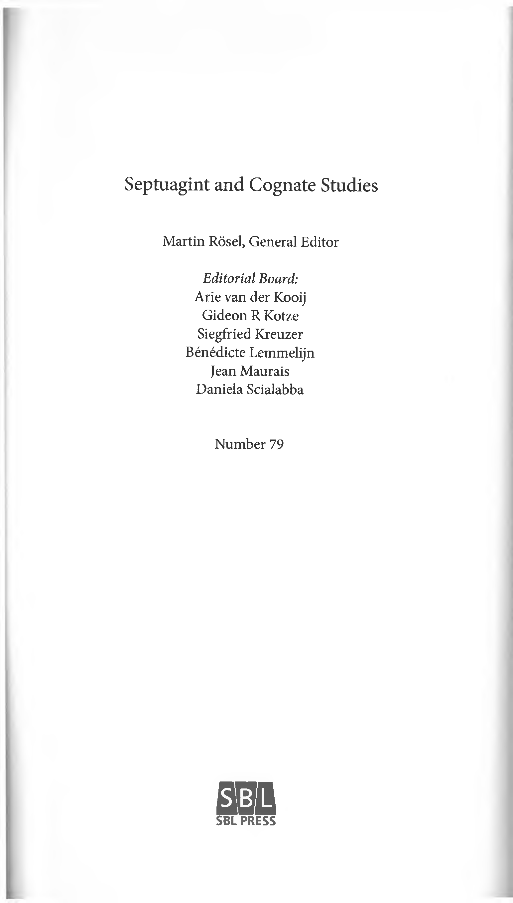

07a.39 Articles on Emendations of the Scribes Masorah Masoretes Masoretic Accents Masoretic Studies
Septuagint and Cognate Studies
Martin Rösel, General Editor
Editorial Board: Arie van der Kooij Gideon R Kotze Siegfried Kreuzer Bénédicte Lemmelijn Jean Maurais Daniela Scialabba
Number 79
oSBL PRESS
Translation Technique and Literary Structures in Greek Isaiah 13:1-14:23
Matthew J. Albanese
PRESS
Atlanta
Copyright © 2025 by Matthew J. Albanese
All rights reserved. No part of this work may be reproduced or transmitted in any form or by any means, electronic or mechanical, including photocopying and recording, or by means of any information storage or retrieval system, except as may be expressly permit ted by the 1976 Copyright Act or in writing from the publisher. Requests for permission should be addressed in writing to the Rights and Permissions Office, SBL Press, 825 Hous ton Mill Road, Atlanta, GA 30329 USA.
Library of Congress Control Number: 2025939354
Ήσαίας ό προφήτης ό μέγας και πιστός έν όράσει αυτού. έν ταϊς ήμέραις αυτού άνεπόδισεν ό ήλιος και προσέθηκεν ζωήν βασιλεΐ. πνεύματι μεγάλω είδεν τα έσχατα καί παρεκάλεσεν τούς πενθούντας έν Σιων.
έως τού αίώνος ύπέδειξεν τα έσόμενα καί τα απόκρυφα πριν ή παραγενέσθαι αυτά. —Sir 48:22-25
:ץרא־יספא־־דע
רהנמו
םי־דק דריו םימ —Psalm 72:8
δεί γαρ αυτόν βασιλεύειν άχρι ου θή πάντας τούς εχθρούς ύπό τούς πόδας αυτού,
έσχατος εχθρός καταργείται ό θάνατος·
-1 Cor 15:25-26
Contents
Acknowledgments............................................................... Abbreviations.......................................................................
1.
Introduction and History of Research....................... .......... 1.1. Aims of the Volume 1.2. History of Research Introduction 1.3. Survey of Greek Isaiah Research 1.4. Conclusion
1 2 2. Assumptions, Methodology, and Scope.................... 3 Iq
’’*···..
‘‘,·Xi
1 ··''׳
.........
2.1. Prolegomena 2.2. Literal/Free Translation Spectrum 2.3. Linguistic Methodology 2.4. The Vorlage of Greek Isaiah 2.5. Manuscripts, Textual Criticism, and Editions of
Greek Isaiah
2.6. Literary Structure and the LXX 2.7. The Literary Structure of Isaiah 13:1-14:23 2.8. Interpretation and Meaning 2.9. The Structure of the Work
1 '׳׳? 17
44 62 73
- Greek Isaiah 13:1-22: Translation Technique and Style.....................77 82 83 88 $2 96 102 104 111
3.1. Isaiah 13:1 3.2. Isaiah 13:2 3.3. Isaiah 13:3 3.4. Isaiah 13:4-5 3.5. Isaiah 13:8 3.6. Isaiah 13:9 3.7. Isaiah 13:10 3.8. Isaiah 13:13-14
viii
Contents
3.9. Isaiah 13:16 3.10. Isaiah 13:19 3.11. Conclusion
114 118 120
- Greek Isaiah 14:1-23: Translation Technique and Style................... 123 123 142 145 148 153 158 160 166
4.1. Isaiah 14:1-3 4.2. Isaiah 14:9 4.3. Isaiah 14:11 4.4. Isaiah 14:12 4.5. Isaiah 14:13 4.6. Isaiah 14:17 4.7. Isaiah 14:19-20 4.8. Conclusion
- The Literary Microstructure of Greek Isaiah 13:1-14:23................... 169 172 177 179 182 193 201 226 229
5.1. Isaiah 13:4-5 5.2. Isaiah 13:9-11 5.3. Isaiah 13:12-14 5.4. Isaiah 13:15-18 5.5. Isaiah 13:20-14:6 5.6. Isaiah 14:7-21 5.7. Isaiah 14:22-23 5.8. Conclusion
- The Literary Macrostructure of Greek Isaiah 13:1-14:23.................231 232 278 299
6.1. Parallels of the Literary Macrostructure 6.2. Themes of the Literary Macrostructure 6.3. Conclusion
- Conclusion..............................................................................................301
Appendix: The Exegetical Difficulty in Isaiah 13:2...................................305
Bibliography...................................................................................................319 Index of Ancient Sources..............................................................................335 Index of Modern Authors.............................................................................348
Acknowledgments
Several teachers and mentors throughout my life have shaped and influ enced me in significant ways. Their commitment has enabled me, directly and indirectly, to pursue and complete the doctoral thesis from which this project originates. I am thankful for them as God’s gracious gifts to instruct and guide me toward maturity in all my diverse interests.
I first of all thank Desiree Ruhstrat, my violin and viola teacher, who believed in my desires and talents, who made me work harder than I ever had before, and who rigorously prepared me for music conservatory. More than all my teachers, her instruction shaped me the most.
I also thank Dr. Peter Gentry, who introduced me to the Septuagint and taught me to read Greek and Hebrew with precision and rigor. He shaped me profoundly both as a student and formed me into a teacher. Dr. Jonathan Pennington’s teaching and friendship has been a constant encouragement over the years. He opened up to me the worlds of typol ogy, intertextuality, figural reading, and the history of interpretation. My posture toward the study of the sacred Scriptures is inescapably colored by his instruction.
I am grateful for my academic mentors and thesis advisors in Oxford, who helped me build and revise this project over the years. I am especially grateful to Professor Hindy Najman for her patience with my project, for reading and commenting on my chapters, and for her encouragement along the way. She helped me in endless ways.
I dedicate this monograph to Abbie, my sweet and lovely wife and mother of our four children. Abbie has been a faithful companion and friend through dark valleys and joyful heights. She makes our house a home and is a gift from God beyond what I deserve or could imagine. To an excellent wife more precious than jewels, I love her dearly.
-ix-
lQIsaa lQIsab IQpHab 2Q18 4Q55 4Q56 4Q59 11Q5 A ABD
ACCS ACT ACW AJ. AJSL Aleppo ArBib B b. B. Qam. B19a
BBRSup BdA
BDAG
Abbreviations
Isaiaha Isaiahb Pesher Habakkuk Sirach 4QIsaiaha 4QIsaiahb 4QIsaiahe Psalmsa Codex Alexandrinus. British Library, London Freedman, David Noel, ed. 1992. Anchor Bible Diction ary. 6 vols. Doubleday. Ancient Christian Commentary on Scripture Ancient Christian Texts Ancient Christian Writers Josephus, Antiquitates judaicae American Journal of Semitic Languages and Literatures Aleppo Codex. Israel Museum, Jerusalem The Aramaic Bible Codex Vaticanus. Vatican Library, Vatican City Babylonian Talmud Bava Qamma Leningrad Codex. National Library of Russia, St. Peters burg Bulletin for Biblical Research, Supplements Le Boulluec, Alain, and Philippe Le Moigne. 2014. La Bible dAlexandrie: Vision que Vit Isaïe. Paris: Cerf. Danker, Frederick W, Walter Bauer, William F. Arndt, and F. Wilbur Gingrich. 2000. Greek-English Lexicon of the New Testament and Other Early Christian Literature. 3rd ed. University of Chicago Press.
-xi-
xii
BDB
BDF
BGU
BHHB BHRG
BHS
Bib Bik. BIOSCS
BN BTS BWANT
Cael. C
CBET CGCG
CGL
CIRev ConBOT Cor. CTL CurBR
Abbreviations
Brown, Francis, S. R. Driver, and Charles A. Briggs. A Hebrew and English Lexicon of the Old Testament Blass, Friedrich, Albert Debrunner, and Robert W. Funk. 1961. A Greek Grammar of the New Testament and Other Early Christian Literature. University of Chi cago Press. Schubart, W., and D. Schäfer, eds. 1933. Aegyptische Urkunden aus den Königlichen (later Staatlichen) Museen zu Berlin, Griechische Urkunden. Vol. 8, Spätptolemäische Papyri aus amtlichen Büros des Herak- leopolites. Berlin. Baylor Handbook on the Hebrew Bible Merwe, Christo van der, Jacobus Naude, and Jan Kroeze. 2017. A Biblical Hebrew Reference Grammar. 2nd ed. Bloomsbury. Eiliger, Karl, and Wilhelm Rudolph, eds. 1983. Biblia Hebraica Stuttgartensia. Deutsche Bibelgesellschaft. Biblica Bikkurim Bulletin of the International Organization for Septuagint and Cognate Studies Biblische Notizen Biblical Tools and Studies Beiträge zur Wissenschaft vom Alten und Neuen Testa ment Aristotle, De caelo Codex Cairensis. Hebrew University of Jerusalem, Jeru salem Contributions to Biblical Exegesis and Theology Emde Boas, Evert van, Albert Rijksbaron, Luuk Huitink, and Mathieu de Bakker. 2019. The Cambridge Grammar of Classical Greek. Cambridge University Press. Diggle, James, et al., eds. 2021. The Cambridge Greek Lexicon. 2 vols. Cambridge University Press. Classical Review Coniectanea Biblica: Old Testament Series Demosthenes, De corona Cambridge Textbooks in Linguistics Currents in Biblical Research
DCH
Diogn. DJD DSD Ep. FAT Form. ep. Frag. FRLANT
GELS
GKC
Hal. HALOT
Abbreviations
xiii
Clines, David J. A., ed. 1993-2014. Dictionary of Classi cal Hebrew. 9 vols. Sheffield Phoenix. Diognetus Discoveries in the Judaean Desert Dead Sea Discoveries Epistula(e) Forschungen zum Alten Testament Demetrius, Formae epistolicae Orphica, Fragmenta Forschungen zur Religion und Literatur des Alten und Neuen Testaments Muraoka, Takamitsu. A Greek-English Lexicon of the Septuagint. Peeters, 2009. Kautzsch, Emil, ed. Gesenius’ Hebrew Grammar. Trans lated by Arthur E. Cowley. 2nd ed. Clarendon, 1910. Hallah Koehler, Ludwig, Walter Baumgartner, and Johann J. Stamm. The Hebrew and Aramaic Lexicon of the Old Tes tament. Translated and edited under the supervision of Mervyn E. J. Richardson. 4 vols. Brill, 1994-1999.
Hist. Alex. magn. Pseudo-Callisthenes, Historia Alexandra magni HS IBC
Hebrew Studies Interpretation: A Bible Commentary for Teaching and Preaching Waltke, Bruce K., and Michael O’Connor. An Introduc tion to Biblical Hebrew Syntax. Eisenbrauns, 1990. Journal of Biblical Literature Journal of the Evangelical Theological Society Journal of Hellenic Studies Joiion, Paul. A Grammar of Biblical Hebrew. Translated and revised by T. Muraoka. 2 vols. Pontifical Biblical Institute, 1991. Journal for the Septuagint and Cognate Studies Supplements to the Journal for the Study of Judaism Journal for the Study of the Old Testament Journal for the Study of the Old Testament Supplement Series Journal of Theological Studies Meyer, P. M., ed. Juristische Papyri. Berlin, 1920.
IBHS
JBL JETS JHS Joüon
JSCS JSJSup JSOT JSOTSup
JTS Jur.Pap.
xiv
KUSATU
LEH
LES
L&N
LSJ
LXX LXX.D
m. MGS
Mort. MT NAC NETS
NIGTC NovT NSD OBO O.Claud.
Odes Sol. OG Orat. theol. OT P.Amh.
Abbreviations
Kleine Untersuchungen zur Sprache des Alten Testaments und seiner Umwelt Lust, Johan, Erik Eynikel, and Katrin Hauspie, eds. Greek-English Lexicon of the Septuagint. Rev. ed. Deutsche Bibelgesellschaft, 2003. Penner, Ken, ed. The Lexham English Septuagint. Lexham, 2019. Louw, Johannes P., and Eugene A. Nida, eds. Greek-Eng lish Lexicon of the New Testament: Based on Semantic Domains. 2nd ed. United Bible Societies, 1989. Liddell, Henry George, Robert Scott, Henry Stuart Jones. A Greek-English Lexicon. 9th ed. with revised supplement. Clarendon, 1996. Septuagint Karrer, Martin, and Wolfgang Kraus. Septuaginta Deutsch: Das griechische Alte Testament in deutscher Übersetzung. Deutsche Bibelgesellschaft, 2009. Mishnah Montanari, Franco, ed. 2015. The Brill Dictionary of Ancient Greek. Edited by Madeleine Goh and Chad Schroeder. Brill. Philodemus, De morte Masoretic Text New American Commentary Pietersma, Albert, and Benjamin G. Wright, eds. A New English Translation of the Septuagint. Oxford University Press, 2007. New International Greek Testament Commentary Novum Testamentum New Studies in Dogmatics Orbis Biblicus et Orientalis Bingen, J., A. Bülow-Jacobsen, W. E. H. Cockle, H. Cuvigny, L. Rubinstein, and W. Van Rengen, eds. Mons Claudianus: Ostraca graeca et latina. Vol. 1. Cairo, 1992. Odes of Solomon Old Greek Gregory ofNazianzus, Orationes theologicae Old Testament Grenfell, B. R, and A. S. Hunt, eds. The Amherst Papyri,
Abbreviations
xv
Being an Account of the Greek Papyri in the Collection of the Right Hon. Lord Amherst of Hackney, F.S.A. at Did- lington Hall, Norfolk. Vol. 2, Classical Fragments and Documents of the Ptolemaic, Roman and Byzantine Peri ods. London, 1901. Grenfell, B. P., and A. S. Hunt, eds. New Classical Frag ments and Other Greek and Latin Papyri. Oxford, 1897. Perspectives on Linguistics and Ancient Languages Popular Patristics Monins Johnson, John de, Victor Martin, and Arthur S. Hunt, eds. Catalogue of the Greek and Latin Papyri in the John Rylands Library, Manchester. Vol. 2, Documents of the Ptolemaic and Roman Periods. Manchester, 1915. Psalms of Solomon Grenfell, B. R, and A. S. Hunt, eds. The Tebtunis Papyri. Vol. 2. London, 1907. Codex Marchalianus. Vatican Library, Vatican City Resources for Biblical Study Revue de Qumran Codex Sinaiticus. British Library, London; Leipzig Uni versity Library, Leipzig; Saint Catherine’s Monastery, Egypt, National Library of Russia, St. Petersburg Codex Sassoon. Museum of the Jewish People, Tel Aviv, Israel Sources chrétiennes Septuagint and Cognate Studies Semitica et Classica Septuagint Commentary Series Shabbat Smyth & Helwys Bible Commentary Shevi’it Samaritan Pentateuch Studies on the Texts of the Desert of Judah Septuaginta Vetus Testamentum Graecum Symposium Series Testament of Levi Text-Critical Studies Textual Criticism and the Translator Targum Onqelos
P.Grenf. 2
PLAL PP P.Ryl.
Pss. Sol. P.Tebt.
Q RBS RevQ S
SI
SC ses SemCl SeptCS Shabb. SHBC Shev. SP STDJ SVTG SymS T. Levi TCSt TCT Tg. Onq.
xvi
Them. Tim. TLG
TOTC VP
VT VTSup Vulg. WBC WUNT
ZAW ZPE
Abbreviations
Plutarch, Themistocles Plato, Timaeus Thesaurus Linguae Graecae: A Digital Library of Greek Literature. University of California, Irvine, https:// stephanus.tlg.uci.edu Tyndale Old Testament Commentaries Codex Babylonicus Petropolitanus. National Library of Russia, St. Petersburg Vetus Testamentum Supplements to Vetus Testamentum Vulgate Word Biblical Commentary Wissenschaftliche Untersuchungen zum Neuen Testa ment Zeitschrift für die alttestamentliche Wissenschaft Zeitschrift für Papyrologie und Epigraphik
1
Introduction and History of Research
1.1. Aims of the Volume
This work explores the LXX version of Isa 13:1-14:23 with the aim to explain the translators lexical and semantic understanding of his Hebrew text, to articulate his tendencies in transferring this content into Greek, and to delineate his attempt to preserve and explicate features of its liter ary structure. In short, it constitutes a study in translation technique and argues that specific features of the Hebrew literary structure shaped and influenced the translators construction of his Greek text. The selection from Isaiah I investigate in this work concerns the oracle against Babylon (13:1-22) and her king (14:1-23). These chapters have not yet been thor oughly investigated in LXX research and as such provide fresh material for detailed inquiry. Further, these chapters permit investigation into unique features of its literary structure since they constitute a clear and distinct section within the prophetic discourse. Before introducing the assump tions, methodology, and scope of this work, I will survey the history of relevant Greek Isaiah research with the aim to situate my work within the ongoing discussion.1
- Although this research focuses in detail on only 3 percent of Isaiah, the project nonetheless warrants attention, as it deals with the opening chapters for the oracles against the nations, which contain key thematic and structural significance for the book as a whole. Beyond the detailed analysis of chs. 13-14, this study portrays a translator immersed in his source text and interested to convey the book as a whole to his readership through various literary strategies. As such, the ensuing discussion interacts with chapters beyond the Babylon discourse and illustrates how the same kinds of features present in chs. 13-14 occur elsewhere in the book. Further, such a focused approach on specific chapters aligns with many other academic articles and
-1-
2 Translation Technique and Literary Structures in Greek Isaiah 13:1-14:23
Below, I largely omit discussion of early Greek Isaiah research since it was typically concerned with questions either of Greek Isaiah’s Vorlage or the free or literal character of the translation. LXX research has resolved these issues in significant ways. As such, I will highlight only research that has shaped more recent discussion on Greek Isaiah as it pertains to the translator’s understanding of his Hebrew text, his translation technique and tendencies, and the Greek text’s literary and structural qualities.
1.2. History of Research Introduction
I begin by surveying trends in Greek Isaiah research that are relevant to the topics pursued in this work, namely, the related phenomena of transla tion technique, literary and thematic structure, stylistic Greek renderings, and translational coherence.21 start by interacting with the works of both Joseph Ziegler and Isac Seeligmann from the first half of the twentieth century and proceed through relevant figures in contemporary research.
The work of Seeligmann (2004) in the mid-twentieth century repre sents something of a hinge in Greek Isaiah research.3 Interest in Greek Isaiah before Seeligmann was largely concerned with questions of tex tual history and the translator’s Vorlage. As such, traditional text-critical questions dominated the discussion.4 Pre-Seeligmann researchers also explored the translator’s historical and political world(s) and their influ ence on his work. But with Seeligmann and his successors, the translator’s personality and ideology came to the fore. Even though sociohistorical questions persisted after Seeligmann, his monolithic portrait of a transla tion with motivated free renderings significantly influenced contemporary discussion. He advocated that the translator of Greek Isaiah sought to render the Hebrew text in such a way so as to make his source text more contemporary by actualizing the sociopolitical realities of his day into the translation itself.
monographs on Greek Isaiah (see Van der Kooij 1998; Van der Louw 2007; Troxel 2008; Wagner 2013; Cunha 2014).
- See ch. 2 for definitions and explanations of technical terminology.
-
For summaries of Seeligmann’s work, see relevant discussions in Jobes and Silva 2000, 94-97; Troxel 2008, 4-12; Cunha 2014, 10-14; Van der Vorm-Croughs 2014,6-7.
-
For early research on Greek Isaiah, see Scholz 1880; Liebmann 1902; Zillessen
1902; Ottley 1904; Wutz 1925; Fischer 1930; Euler 1934.
1. Introduction and History of Research
3
Post-Seeligmann researchers refined his investigations and developed in more detail a conception of Greek Isaiah’s literary features, its coher ence qua translation, and precise descriptions of its translation-technical details. Contemporary Greek Isaiah research finds itself in these currents, sometimes trying to escape them. While research still discusses questions of provenance and historical context, they do not constitute the primary locus of interest. Below I highlight the development of these research trends and outline some of the scholarly developments that followed Seeligmann’s work. This survey enables readers to properly situate my own work among the scholarly insights of previous researchers.5
1.3. Survey of Greek Isaiah Research
Ziegler’s work on Greek Isaiah illustrates well the interests of scholarship before Seeligmann. However, it also perceptively anticipates many cur rent observations regarding the translator’s interest in theme and literary coherence. Ziegler’s ( 1934,1983) most significant contributions to the field are to be found in the Gottingen critical edition and in his summary of the translator’s tendencies in Untersuchungen zur Septuaginta des Bûches Isaias. Mirjam van der Vbrm-Croughs (2014, 2) summarizes Ziegler’s detailed assessment: “Ziegler devoted much attention to the pluses and minuses in Greek Isaiah. According to Ziegler, the majority of them are innovations of the translator himself. Pluses are often the result of the translator’s aspirations towards explication and exegesis, while minuses are mostly meant to reduce redundancy in the Hebrew text.” On Ziegler’s evaluation of the translator’s approach, she states: “He does not hesitate to omit words, to change the order within a clause, or to add his own expla nation of it. Repeatedly, the translator is seized by a particular idea and then renders his text under the impact of it. Many times he is influenced by parallel passages elsewhere in Scripture” (5). Ziegler’s observations constitute a strong and lasting pillar in the field of Greek Isaiah research. As such, contemporary research still cites his descriptions of translation features of Greek Isaiah.
Ziegler’s insights have endured for nearly a century: the translator avoided strict adherence to his Vorlage, he paraphrased his Hebrew text, his lexical deviations are largely intentional, he juxtaposed ideas from
- This survey reflects my own investigations while also following the contours of Troxel 2008; Van der Vbrm-Croughs 2014; Cunha 2014; Wagner 2013; Salvesen 2020.
4 Translation Technique and Literary Structures in Greek Isaiah 13:1-14:23
thematically parallel passages.6 As such, the translator s personality may be discerned through a translation-technical analysis of the Hebrew and Greek texts. Ziegler recognized that Greek Isaiah is at the same time free and closely bound to the Hebrew text. He denied the translator’s strict adherence to his Vorlage. But he understood the translator’s tendency to explicate the meaning of the Hebrew through intentional deviation.7 He conceives of this latter task as accomplished through the translator’s deep awareness of literary context along with the lexical and literary parallels already extant in the Hebrew text. This resulted in a translation that expli cates certain features of the Hebrew text more fully (Ziegler (1934, iv).8 In sum, the translator of Greek Isaiah intentionality constructed a free yet coherent literary product that also closely adhered to the meaning(s) of his Hebrew text. I mention these ideas here because they are glimpses into the main arguments of this thesis.
Seeligmann sought to advance this discussion in his work The Septua- gint Version of Isaiah and Cognate Studies, which was both comprehensive in scope and formative for the next generation of scholars.9 In general, Seeligmann (2004, 128) emphasizes the translator’s identity, his cultural milieu, and the ideology informing his translation efforts. Greek Isaiah
-
Ziegler 1934, 135: “Der Js. Übers, scheint überhaupt sein Buch sehr gut dem Inhalte nach im Gedächtnis gehabt zu haben; denn es begegnen viele Wieder gaben, die sich nur auf Grund der Exegese nach sinnverwandten Stellen erklären lassen.... Gerade bei der Js-LXX darf irgendein Wort oder eine Wendung, die vom MT abweicht, nicht aus dem Zusammenhang genommen werden und für sich allein betrachtet worden, sondern muß nach dem ganzen Kontext der Stelle und ihren Par allelen gewertet werden.”
-
Ziegler 1934, 22: “Der Text, der der LXX vorlag, war (natürlich mit kleinen
unbedeutenden Ausnahmen) identisch mit dem MT.”
- Ziegler contrasts his own approach to previous researchers who “oft ein Wort
aus dem Zusammenhang reißen.”
- Originally published in 1948. Jean Koenig (1982) advocated both a holistic literary intentionality behind Greek Isaiah and the translator s inclination to actualiza tion. In this respect, he resembles Ziegler and Seeligmann. “Le niveau de connaissance des texts et donc de la langue ... implique ... que les changements ont été générale ment déterminés par d’autres motifs, d’ordre idéologique et plus spécialement reli gieux” (32). Koenig also anticipated several literary features in the translation that were developed in subsequent research. While I am sympathetic to Koenig’s attention to literary intentionality, I do not ascribe to the actualization approach he advocated or to the holistic genius of the translator of Greek Isaiah.
1. Introduction and History of Research
5
is “the work of a distinctly recognizable personality”10 Even though his views on several issues in Greek Isaiah are largely obsolete, all researchers recognize him as a significant landmark in the field.
Seeligmanns great impact on Greek Isaiah research advanced the theory of actualization, which proposes that the translator’s sociopo litical experiences and expectations were encoded in his work. This proposal occupies an entire chapter of his monograph (259-94). Regard ing the theory, Seeligmann notes, “The Alexandrian translation of Isaiah is a source of historical knowledge of its time, by tracing in it allusions to contemporary events and manifestations of spiritual forces active in the Jewish-Hellenistic community of Alexandria” (128). Thus, understanding the translator’s tendencies enables one to recognize instances of actual ization. The intersection between the translator’s social identity and our knowledge of his ideology lies in the very phenomena of free translational insertions: “Our chief source of knowledge regarding the translator’s opin ions is surely the discrepancies found between his work and the (Masoretic) Hebrew text” (129).11 Deviations from the Hebrew did not serve the aim of literary coherence. Instead, they pointed to actualizing interpretations.
Seeligmanns approach to actualization is not wholly consistent, nor is it persuasive.12 Along with several others involved in Greek Isaiah research, my thesis indirectly critiques the actualization proposal by illustrating that the majority of deviations in Greek Isaiah in fact serve literary, stylistic, and structural purposes. Since these types of stylistic features are predom inant, appealing to the sociopolitical realities encoded in the translation lacks prima facie warrant.
Following Seeligmanns approach in many respects, Arie van der Kooij’s work entered into Greek Isaiah research in 1981 as the most methodologically mature reflection on translation technique.13 While an
-
Jobes and Silva (2015, 102) note that Seeligmanns work on Greek Isaiah constitutes “the most significant attempt to use the Septuagint as evidence of Jewish theology.”
-
Cunha 2014, 11: “Seeligmann believed that one can only find the translator’s references to historical allusions or expressions of his beliefs in places where his trans lation was free.”
-
See criticisms in Troxel 2008,4-19; de Sousa 2010,1-19; Wagner 2013,29-34;
Van der Vorm-Croughs 2014,6-11.
- Principally Van der Kooij 1981; more recent treatment occurs in 1997, 1998. Per Van der Kooij (1998, 15-19), his methodology explores linguistic, comparative, literary, and historical features of the translation through (1) comprehensive study of
6 Translation Technique and Literary Structures in Greek Isaiah 13:1-14:23
advocate of actualization, he also attended closely to the translation as a stylish work in itself (i.e., coherence). This approach avoided atomistic analysis and instead captured the prophetic discourse holistically. Unlike Seeligmann, “The differences between MT and LXX cannot be taken as isolated renderings”: they should be understood as “part of the passage as a whole” (Van der Kooij 1998,15). Van der Kooij recognized the trans lator’s awareness of larger Isaianic themes. As such, he emphasized the translator’s intention to construct a linguistic and literary unity that at the same time contains elements of contemporization or actualization. Actu alization grounds the coherent literary product of Greek Isaiah, not within the textual-literary world of the Vorlage but instead in the sociopolitical realities of the translator’s own era. Van der Kooij aimed to discover the rationale behind the Hebrew and Greek divergences and to uncover cer tain clues that suggested actualization.
Van der Kooij conceives of actualization as updated prophecies that refer to then-contemporary events. It is the “reinterpretation of the tem poral application of ancient prophecy” (18). As such, the text embeds the translator’s own creativity. He notes, “The ancient prophecies were considered to be a source of hope, which was based on a reading and inter pretation of these prophecies as referring to events of the age in which the readers/interpreters were living” (88).14 To demonstrate this, Van der Kooij appeals to presumed similarities in Ben Sira, Tobit, Daniel, and Pesher Habakkuk, in which eschatological prophecies were updated for contemporary audiences in order to “enhance the authority of the ancient prophecy” (93; see 188-89).15 However, Ronald Troxel and others have demonstrated that appeal to contemporaneous scribal tendencies is ille gitimate on the grounds of false analogy.16 Nonetheless, Van der Kooij’s
the MT, (2) investigation of Greek Isaiah, (3) the genre of Greek Isaiah, and (4) the Hebrew Vorlage behind the translation.
-
Penner rightly resists this impulse. See Penner (2020, 10): “The differences between the Hebrew and Greek are explainable as mistakes or as updating with no change of reference,” and “if G intended to convince his readers that the events proph esied had been fulfilled in his own day, he appears to have failed in his purpose.” Such rejection of actualization is presently widespread. See the relevant sections in Troxel 2008; de Sousa 2010; Wagner 2013.
-
For references, see Sir 36:13-20; Tob 14:3-5; Dan 9:2-27; iQpHab.
- See Troxel 2008, 162: “The latter [i.e., pesharim] are explicit in their align ment of the text with contemporaneous events, whereas we have to extrapolate from oblique statements in a translation to what the translator might have had in view.” For
1. Introduction and History of Research
7
balanced approach to the analysis of Greek Isaiah’s Vorlage, its translation style, and its literary coherence carries forward into contemporary Greek Isaiah research.17
Van der Kooij provides an example of actualization that is relevant to this volume in his discussion of the downfall of Babylon’s king in Isa 14:1-23. He sees this text not only as a prophetic reference to the king of Babylon but as an intentional allusion by the Greek translator to “the death of the Seleucid king Antiochus IV Epiphanes” (99; see also Seeligmann 2004, 83-86; Van der Kooij 1981, 35-43). Since actualization is evident to Van der Kooij in Isa 23:1-18, supposed parallels between chapters 23 and 14 also suggest to him the presence of actualization within the oracle against the king of Babylon. The discussion in subsequent chapters will illustrate that the translator of Greek Isaiah in no way demonstrates a con cern to link the character in Isa 14 with any nontextual character. Instead, the translator’s concern to read the text in accordance with literary and structural features overrides any tendency to actualize the text.18
ורשפ
, “this refers to.”
example, the author of Pesher Habakkuk explains the contemporary meaning of the לע biblical prophet with the recurrent phrase 17. Baer demonstrates a more refined assessment than that of Van der Kooij. While the translator may convey some actualizing tendencies, he is primarily con- cerned to “display his theological understanding of the text” through rhetorical and homiletical features (Baer 2001,18). Baer (17) also diverges from Koenig’s imbalanced approach to the translator’s intentionality: “Mistakes and a not quite victorious strug- gle with the book’s difficult Hebrew appear to lie at the root of many of the LXX devia- tions. These coexist, however, with theological concerns and exegetical practice that produced a work that can only be fully appreciated when allowed bona fide status as ancient Jewish biblical interpretation.” The scenario of misunderstanding the Hebrew requires more nuance. Misreadings may merely stem from the possibilities allotted by an unpointed manuscript, confusing orthography, difficult poetic-semantic constru- als, or the Aramaic milieu of the translator. All of these may result in mistranslations, but none of them is of necessity due to the translator’s deficient understanding of the Hebrew language. Byun (2017) specifically explores the translator’s linguistic and cog- nitive environment in order to demonstrate how the translator’s historical situation led him to misunderstand his source text. The translator of Greek Isaiah understood Hebrew. But he knew it as a Greek and Aramaic speaker, somewhat removed from the Classical Hebrew of the book Isaiah. Thus, it is insufficient for translation technical analysis to approach Greek Isaiah as a product simply informed by the Hebrew text. We must also consider the multifaceted linguistic layers that influenced the transla- tor’s work.
- For a thorough survey and evaluation of the actualization thesis in Greek
Isaiah, see Salvesen 2020.
8 Translation Technique and Literary Structures in Greek Isaiah 13:1-14:23
Troxel’s 2008 monograph seeks to situate the translator of Greek Isaiah in the socioreligious milieu of ancient Judaism and to construct the trans lator’s profile, an aspect that resonates with previous scholars. Thus the question of translation technique is crucial to Troxel’s project.19 He articu lates the translator’s overall approach in the following way: “His choices of conjunctions, his reformulations of sentences, and his interpretation of passages in the light of theologoumena he perceived essential to the book show that he was less concerned to bring his readers to the Hebrew text of Isaiah than to bring the book to them” (Troxel 2008, 132). These moti vations produced a translation that embodies a coherent message, one designed to become an independent entity for its readers. In other words, despite the translator’s freedom, he nonetheless conveyed the message of Hebrew Isaiah with remarkable accuracy.
This is not to say that Troxel regards Greek Isaiah as a strict represen tation of the Hebrew text in and of itself. He in fact makes the plausible suggestion that the translator inserted themes of economic and fiscal oppression from the Hellenistic world into his rendering of Isa 3:12-15, a feature neither explicit nor clearly latent in the Hebrew text. He regards the use of such terms as ?rpdxTwp,4 collector of fines,” and the participial form of aiTew, “to request” (i.e., oi dTraiTOUVTE;), in this passage as evidence of cultural interference from the milieu of Hellenistic tax collection. As such, “the translator cast these abusive rulers as ‘tax farmers’” (203). Yet Troxel (246) is careful to not frame this cultural influence as actualization proper. He notes, “Although his translation reflects fiscal policies of Hellenistic rulers, it reveals no explicit alignment of Isaiah’s tyrants with Antiochus IV״’ This nuanced approach to the question of cultural interference renders the suggestion of interference more plausible than that of researchers in line with Van der Kooij.
Directly relevant to the present project and its treatment of cultural interference on and within Greek Isaiah, I briefly digress to explore Trox el’s (2008, 203-4) focus on how this milieu of fiscal oppression is “equally reflected” in the oracle against the king of Babylon in Isa 14:4. He bases this claim on the pairing of the participial form of aTraiTew (i.e., o aTratTWv)
- Troxel spends a significant amount of time in his monograph addressing the identity of the translator as an Alexandrian scribe in the tradition of museum scribes. This proposal has received significant criticism from a number of scholars: Pietersma 2008; Van der Kooij 2009,147-52; Baer 2010; Ausloos 2010,145.
1. Introduction and History of Research
9
and the lexeme eTno-TrouJacrT^, “taskmaster.”20 Troxel (204) advocates for this position by noting how the term e7no7־rou5acrT^ is an “official title” (i.e., Beamtenbezeichnung) for a tax agent in the Ptolemaic administrative system and how this marks out the king of Babylon with “a prime attribute of rulers in his own day.” However, in this case we should exercise more caution in accepting this proposal.
The term EmaTrouSacmfc may, in fact, be a general term reserved for a civil servant. But it is not clear that it is either an official title or strictly evocative of tax agents. But since Troxel provides no lexicographical or papyrological citations to support these claims, it is difficult to evalu ate their accuracy. It is equally difficult to confirm his claim since the major Greek lexicons of Classical and Hellenistic Greek never identify e7no7־rou5aa־T^ as an official title. However, Troxel does help us in our investigation into the cultural milieu of Greek Isaiah and its influence on the translation by referencing a paragraph in Ziegler’s Untersuchungen, where the latter interacts with eTno-TtouJaaT^ in more detail.
Ziegler (1934, 200) notes how the term simply refers to an official (i.e., ein Beamter): “Unter £7no7־r. ist ein Beamter zu verstehen, der für die beschleunigte Abfuhr des Getreides zu sorgen hat, vgl. Preis., Wb. I 572.” As we follow Zieglers reference to Friedrich Preisigke’s (1925, 572) Wörterbuch, we discover the latter’s similar remarks on “der Beamte, welcher für EmaTrouJaoyo; ?rupoO zu forgen hat”—along with a reference to a papyrus in the John Rylands Library collection (P.Ryl. 2.183.1-2) that mentions Apollonius, the transport-master.21
-
For glosses of έπισπουδαστής in relevant lexicons, see LSJ (658), “one who presses on a work”; MGS (790) “one who speeds up, makes proceed with zeal”; LEH (234) “one who presses on a work; compeller”; GELS (281) “hard taskmaster.” It is sig nificant that this noun occurs only here in the corpus of literary Greek from antiquity. The term also occurs once in the papyri (see P.Ryl. 2.183.1-2). See also Bingen (2006, 159-61), who records an occurrence of έπισπουδαστής in an ostracon catalogued as O.Claud. 1.130. However, his reading, [...έπι] σπουδαστής τής ύδροφορίας, is likely but conjectural. And even if it is original, it does not support Troxel’s full claim.
-
This example is dated to the first century CE and constitutes the only other non- conjectural instance of έπισπουδαστής in Greek. For reference, see the Greek text and translation for this reference in P.Ryl. 2:225: Άνχορίνφις Ήρακλείδου προστάτης ιδίων δνων Απολλώνιου του Άλεξάνδρό(υ) έπισπουδαστού Άφροδ(ισίω) και Πετερμουθίωνι τοϊ(ς) δυσι Άσκληπ(ιάδου) χα(ίρειν); “Anchorimphis son of Heraclides, superintendent of the private donkeys of Apollonius son of Alexander, transport-master, to Aphrodi- sius and Petermouthion, both sons of Asclepiades, greeting.”
10 Translation Technique and Literary Structures in Greek Isaiah 13:1-14:23
Regarding this example, the editors note, “The έπισπου^αστής was no doubt an official ... and superintended the transport of the state corn- dues” (P.Ryl. 2:225 n. 2). But this example and explanation do not suggest that an official title (i.e., Beamtenbezeichmmg) is in view. Nor do the edi tors suggest that the term should be understood in terms of a tax agent. It seems rather to speak of any figure in charge of general administrative duties.22 This is also confirmed by comparing it to other instances of the related noun έπισπουδασμός, “transport,” in the papyrological evidence, which typically speaks not of fiscal transactions or taxation but of agri cultural trade.23 What this data suggests is that the term έπισπουδαστής in Greek Isaiah does not refer specifically to an official title (i.e., Beamtenbe zeichnung) of a Ptolemaic tax agent engaged in fiscal oppression but rather to a more general agent in charge of trade and agricultural transport.24
Troxel’s point about fiscal oppression from the parallel between οί πράκτορες and οι άπαιτοΰντες in Isa 3:12 seems to hold. However, he makes a similar assessment about Isa 14:4: “By pairing ό άπαιτών and o έπισπουδαστής, the translator ascribes to the Babylonian king a prime attribute of rulers in his own day.” In context, Troxel (2008, 204) means fiscal oppression by the phrase “prime attribute.” However, as the ensuing discussion illustrates, evidence for the meaning of έπισπουδαστής in antiq uity does not permit meanings related to economics or taxation. While the term αίτέω may be used with fiscal emphases, it need not do so. And with out sound argumentation for a strict fiscal sense behind έπισπουδαστής, Troxel’s conclusion about the themes of fiscal oppression from Isa 3:12 being “equally reflected” in Isa 14:4 cannot be substantiated without beg ging the semantic question about έπισπουδαστής.
These reflections on Troxel’s nuanced approach to cultural interfer ence from the Hellenistic milieu on Greek Isaiah illustrate the complexity
- This is clear by comparing it with the parallel term προστάτης, “leader, chief
administrator.” See LSJ, 1526; MGS, 1827; BDAG, 885.
-
The related term έπισπουδασμός, “transport,” occurs in P.Tebt. 2.311.24 among a list of other economic dues relating to a land lease: “public dues” and “extra pay ments.” In contrast, the phrase φολέτρων έπισπο[υ] δασμού is qualified and refers to the expenses of agricultural transport. P.Tebt. 2.377.28 also contains the term έπισπουδασμός in a land lease referring to the charges for the expedition of grain. P.Grenf. 2.23.18 employs the term in reference to the transport of two ships of wheat. The editors’ reference to έπισπουδασμός in P.Amh. 2.90.18 is possible, but the reading in this line is conjectural.
-
See the entries on the agent suffix -της in Smyth 1984, 229-30; CGCG, 260.
1. Introduction and History of Research
11
of the topic and the care with which scholars must approach the issue. Thus, Troxel rejects actualization on the basis of insufficient evidence. Appeals to toponyms and characters such as Antiochus IV are superfi cial in nature and cannot be defended in the face of rigorous linguistic and translation-technical analysis.25 Insofar as Troxel raised the epistemic standard for claiming cultural influence on the translator, he does well to deviate from Van der Kooij’s approach to actualization. But this previ ous discussion illustrates just how complex the issue of detecting cultural influence can be. Reflection on cultural influence on the translator and our ability to understand its impact should be approached carefully and with reserved judgment. No doubt exists about whether the translator ’s milieu influenced his decisions. But we should not overestimate our ability to detect such features.
To return to a survey of Greek Isaiah research, Franklin Rodrigo de Sousa’s (2010) monograph Eschatology and Messianism in LXX Isaiah 1-12 contributes to previous Greek Isaiah research by navigating the poles of translation-literary coherence and what he calls pragmatic readership. He emphasizes the translator’s role as a pragmatic reader instead of highlight ing him as creatively constructing a coherent text. Thus, the theological or ideological interests of Greek Isaiah have been overemphasized. As a cor rective, de Sousa emphasizes how features of literary coherence are mostly emergent from the Hebrew text: “These should not always be taken as a window into actualizing exegesis or theological Tendenz?26 Theo van der Louw (2007, 9) takes a similar perspective: “Certain ‘free renderings’ are sometimes regarded as raw material for the historian, viz. as visible traces of the translator, in which his (midrashic or actualizing) exegesis shows. This is why certain types of‘free renderings’ have become a focus of inter est for scholars who try to reconstruct the historical background of the Septuagint and the translator’s Hellenistic and/or Jewish ideology. Yet this concern can easily miss the fact that free renderings are first of all linguistic
-
For important discussions regarding the topic of actualization with reference to Isa 14, 2 Maccabees, and Antiochus Epiphanes, see Troxel 2008, 211-18; Gregory 2015.
-
De Sousa 2010, 8-9: “Unlike an original composition, a translation is bound to its source text”; “Even though there will be variations in the degree of attachment to the Vorlage, the LXX books in general seem to have at their heart the intent to reproduce or transmit the original Hebrew or Aramaic text into Greek in a way that is meaningful to their recipient.”
12 Translation Technique and Literary Structures in Greek Isaiah 13:1-14:23
material? Greek Isaiah is primarily a translation. Coherence surely exists. But it is not solely due to the translator’s imagination.27 The translations structure, themes, and coherence are grounded primarily in his Vorlage. Its literary value is not imposed; it simply emerges.
John Lee’s (2014) work on the translator’s literary Greek helpfully nuances de Sousa’s proposal by detailing the existence of high-register elements in the translation. Such tendencies surely impose literary coher ence onto the work, but not necessarily in a way foreign to the themes and structure of the Vorlage. Such expressions simply unveil the translator’s reading strategies along with his motivation to create a sophisticated and coherent translation. Coupled with de Sousa’s emphasis on reading strat egy, Lee’s observations suggest that both pragmatism and intentionality are essential to the translator’s approach.28 To illustrate this, Lee details the several linguistic and stylistic features in Greek Isaiah: chiasms, inversion of word order, insertion of alliteration, lexical repetition, tragic phrase, proverbial expression, literary or poetic vocabulary, new creations, par ticles, literary word choices.
Immensely helpful for Greek Isaiah research is Van der Vorm- Croughs’s monograph The Old Greek of Isaiah: An Analysis of Its Pluses and Minuses. In this volume she exhaustively evaluates and classifies Greek Isaiah’s divergences from its source text, offering various categories for the translator’s pluses and minuses. Scholars often discuss Greek Isaiah’s addi tions, omissions, and deviations without qualifying their terminology. But Van der Vorm-Croughs has supplied helpful criteria for evaluating such features.
Further, Van der Vorm-Croughs (2014, 31-62; esp. 31, 39, 61-63, 77, 80, 332) also affirms the significance of literary coherence as a motivat ing factor in the translation. She notes: “By inserting explicating details,
-
One must be careful to avoid the fallacy of bifurcation here. Both tendencies may be present, as they are not mutually exclusive. For a balanced articulation, see de Sousa (2010, 10-11): “It would not be surprising if the translator employed normal’ reading strategies, which included an awareness of context, and allowed this aware ness to inform his translational decisions at several points.”
-
Cunha (2014, 45-46), helpfully notes how translational coherence strongly suggests the intentional construction of lexical, thematic, and structural elements from Hebrew to Greek. However, I suggest that literary tenacity better describes the tendencies of the Greek Isaiah translator. I am specifically arguing that his task of coherence is intentionally governed in large part by his ties to the literary form and presentation of the Hebrew text itself.
1. Introduction and History of Research
13
the translator may have wished to ... make his text more coherent by extending internal links and references, for example by means of the addi tion of demonstratives or genitive pronouns. Sometimes the reverse may have been intended: the replacement of an implied subject by a noun, for instance, weakens the link to the earlier mention of this subject, and hence may mark the beginning of a new section” (61—62).29 These obser vations overlap and correspond with those of Lee mentioned above. Van der Vorm-Croughs largely views additions and omissions as “the product of the translator’s purposeful interventions” (11). She notes how the trans lator borrows, explicates, reduces, and emphasizes rhetoric and literary influence. The translator of Greek Isaiah sought to be sensitive to literary and theological contexts. As such, her work is invaluable for my project as it provides a springboard for relevant examples in the arguments below.
Ross Wagner’s (2013) Reading the Sealed Book: Old Greek Isaiah and the Problem of Septuagint Hermeneutics focuses on the hermeneutical phe nomena encountered in the translation of Isa 1:1-31. As such, his research emphasizes the translations resultant constitutive character, a feature that embodies the translations function, process, and product. This includes the combination of all literary, textual, and linguistic features that made the translation possible.
In this theoretical task, Wagner appropriates from the theoretical work of Gideon Toury (1995) and Umberto Eco(1976,1979,1984,1990).30 Toury’s model considers translations as culturally embodied events that occur in social contexts shaped by appropriate and inappropriate trans lational norms. Eco’s model of the cultural encyclopedia envisions an interconnected semiotic system wherein meanings are situated among a web of other signs and their significations. Like an encyclopedia, the pos
-
Van der Vorm-Croughs 2014, 63: “[The translator] may have used implica tion so as to strengthen the textual coherence. If, for instance, a proper name instead of being repeated, is replaced by a pronoun, this makes a stronger link to the clause in which the name itself is mentioned.”
-
For a more detailed summary of Toury’s Descriptive Translation Studies, see Wagner 2013, 6-28. For seminal application of descriptive translation studies in LXX research, see Van der Louw 2007; Boyd-Taylor 2011. Also, the theme of BIOSCS 39 (2006) is entirely devoted to the topic of the LXX and descriptive translation studies. For a critique of Toury’s model of descriptive translation studies in LXX studies, see Gauthier 2014; Dhont 2018; Sperber and Wilson 1995. For a discussion of Umberto Eco’s theories of the model reader and the cultural encyclopedia, see Wagner 2013, 36-63, along with the relevant methodological discussion in this thesis.
14 Translation Technique and Literary Structures in Greek Isaiah 13:1-14:23
sibilities of meaning are innumerable. A culturally situated translator in effect bridges encyclopedic cultures.
Wagner’s overall perspective on Greek Isaiah is that it constitutes a faithful representative of its source text, even amid its many deviations from the Hebrew. He notes, “The Greek translator ... takes considerable pains to clarify the structure and cohesion of the discourse in Isaiah 1 through his strategic deployment of inferential particles and through his judicious use of stylistic devices such as parallelism, repetition, chiasm and inclusio” (Wagner 2013,64).31 In other words, translational deviations do not obscure the Hebrew meaning. They are in fact consonant with the meaning of the source text. He makes the significant statement that “the Greek translator does not so much inject ‘foreign ideas into Isaiah’s vision as amplify, elaborate and interweave characteristically ‘Isaian themes into bold new patterns” (236). The translator explicates for listeners and read ers “the logical development of the prophet’s vision” in a “distinctively Greek accent” (235-36). Such statements about Greek Isaiah’s constitu tive character are largely in concert with my own. And like the growing consensus of Greek Isaiah scholarship, Wagner emphasizes Greek Isaiah’s unique interpretive coherence without excluding its firm relationship to its Vorlage.32 In other words, the translation is both literal and free at the same time but in different ways.
1.4. Conclusion
This historical survey highlights both the major players in contemporary Greek Isaiah research and their indebtedness to the work of figures such as Ziegler and Seeligmann. But it also illustrated progress in the field. Scholars have largely moved away from the actualizing thesis of Seelig mann and Van der Kooij toward a more literary and stylistic approach to Greek Isaiah. Concerns about the Vorlage of Greek Isaiah have given way to interpretive and hermeneutical questions.
As the above survey illustrates, coherence and actualization are not necessarily mutually exclusive positions. Many scholars have held to
- Consider also the examples in Lee 2014.
- Wagner (2013, 233), admits that no features of actualization occur in Isa 1:1-31: “What we have not found, however, is compelling evidence to suggest that the Greek translator sought to ‘actualize’ OG Isaiah 1 for his audience by encoding his translation with specific references to contemporary historical events.”
1. Introduction and History of Research
15
both. However, given the pervasive presence of literary features in the translation, actualization advocates bear the burden of proof if they are to persuasively establish their case. At present, this case has not yet been successfully demonstrated.33 In other words, since wide-ranging liter ary intention in Greek Isaiah can provide sufficient explanation for the divergences between Greek Isaiah and its Vorlage, we need not appeal to additional motivations behind such renderings.
This latter claim arises from the epistemic principle of parsimony, commonly referred to as Ockham’s razor.34 In short, without positive and compelling reasons for the actualization thesis, we should refrain from accepting it. Such principles are also prominent in LXX research. As Anneli Aejmelaeus (2007a, 312) notes: “The simplest adequate explanation should be given precedence over more complicated ones. A deliberate change of the meaning out of an ideological motivation seems to me in many cases to be the more complicated explanation.” Troxel (2008, 164) elaborates on this idea: “Only if the translator can be shown to refer deliberately to people, countries, ethnic groups, circumstances, or events by deviating from his Vorlage is it legitimate to entertain the possibility that he sought to identify such entities as the ‘true referents of his Hebrew exemplar. More stringently, it must be shown that the translator did not arrive at a render ing by reasoning from the immediate or broader literary contexts, but that he fashioned it with an eye to circumstances or events in his day.”35 In light of these epistemic constraints and the lack of positive support for actual ization, demonstrating the translator’s intentional literary and structural coherence effectively neutralizes claims of actualization. By implication, the actualization thesis is rebutted. To restate the principle: since wide-ranging literary intention in Greek Isaiah can provide sufficient explanation for the divergences between Greek Isaiah and its Vorlage, we need not appeal to additional motivations behind such renderings. A more detailed treatment of perspective will be illustrated more fully in due course.
- For a recent survey and assessment of actualization proposals, see Salvesen
2020,185-202.
-
“Entia non sunt multiplicanda praeter necessitatem,” “entities are not to be multiplied beyond necessity” (see Blackburn 2008, 258). For fuller discussion of the razor in Ockham’s metaphysics and epistemology, see Spade 2006, 100-117; Spade and Panaccio 2019.
-
Referenced in Salvesen (2020, 192 n. 25), who also rejects actualization pro
posals in favor of “the simplest explanation” (201).
16 Translation Technique and Literary Structures in Greek Isaiah 13:1-14:23
In the following chapters, I contribute to this discussion by further emphasizing the literary features in Greek Isa 13:1-14:23 in a way that illustrates that literary craft does not entail ideological imposition. In other words, literary features in Greek Isaiah are largely emergent. This in many ways complements and corrects some aspects of coherence proponents. As I noted above, a better way to express the features of coherence in Greek Isaiah can be conveyed by its literary tenacity. The translator was surely concerned to create a coherent text. But its translational coherence does not arise at the expense of the features of its Hebrew Vorlage. Its coherence is not simply imposed. Instead, the translations coherence is largely gov erned by its ties to the literary expressions and structures of the Hebrew text itself. I will detail this idea in chapters 5-6, where I demonstrate the translator’s concern to explicate the Hebrew text’s literary structure even amid translational deviation. Previous scholarship has largely ignored this feature of the translator’s work, but I hope that the ensuing discussion ini tiates interest in this aspect of Greek Isaiah.
2
Assumptions, Methodology, and Scope
The LXX is far too important to be treated as a grab-bag for conjectures and for rewriting the MT.
—John William Wevers, “An Apologia for Septuagint Studies”
Most of the elements of MT are reflected in the LXX, a fact too often overlooked.
—Emanuel Tov, The Text-Critical Use of the Septuagint in Biblical Research
To build on the discussion of the history of Greek Isaiah research, the material in this chapter provides the groundwork for the arguments I pursue in chapters 3-6. Here I set forth my assumptions and methodol ogy, along with the overall layout for the following chapters. I begin by defining central terminology for LXX research and translation-technical studies. I then survey the contours of the free/literal translation spectrum in the Greek Old Testament, and describe how Greek Isaiah fits within these parameters. In the three sections that follow, I explore several other foundational issues: linguistic method, Greek Isaiah’s Vorlage, ancient manuscripts, textual criticism, and modern editions of Hebrew and Greek Isaiah. I then explore the concepts and features of literary structure both in the LXX more generally and with Greek Isaiah in particular. I con clude the chapter with a model of my hermeneutical approach for the work before presenting the structure, rationale, and aims for the work’s main chapters.
2.1. Prolegomena
As is frequently mentioned in LXX studies, the term Septuagint itself is strangely problematic, since it most properly refers to the original Greek
-17-
18 Translation Technique and Literary Structures in Greek Isaiah 13:1-14:23
translation of the Pentateuch. However, the term not only is used to identify the corpus of the Hebrew Bible translated into Greek but may also include Greek compositional literature labeled apocryphal or deuterocanonical (Fernandez Marcos 2000, 35-51; Williams 2010; Aitken 2015,1-2; Dhont 2018, 1). In light of these multiple referents, specialists have decided to label any initial Greek version of the Hebrew Bible outside the Pentateuch with the moniker Old Greek. And although the phrase “Old Greek Isaiah” is the most accurate way to refer to the Greek version of Hebrew Isaiah I explore in this work, I simply employ the term Greek Isaiah in reference to the second-century BCE Greek translation of the book (see Troxel 2008, 1-72; Ngunga and Schaper 2015, 457-58).1 Otherwise, the context of my discussions will clarify my terminology.
Questions pertaining to translation technique constitute the primary focus of this project, one defined by Aejmelaeus (2007c, 205-6; see also Sollamo 2016) as an investigation into the LXX that uncovers “the rela tionship between the text of the translation and its Vorlage?2 Research in translation technique occurs through a threefold process, moving from the reconstruction of a parent text to analysis of a translated text. It con cludes with a synthesis and appraisal of the linguistic and hermeneutical processes involved in the translations creation.
This latter investigation enquires about the working methodology of the translator, what he knew about his source material, and what he was capable of creating for his target audience. This type of analysis is simply descriptive and does not offer prescriptive norms as to what he ought to have done. So, even though I employ the phrase translation technique to describe the translator’s work, the investigation may be better labeled translation tendencies. The technique the translator employed was not altogether a conscious part of the translation process. It was also a by product of his multifaceted translation goals.3
- Of note: other scholars identify the translator and his work as G.
-
Sollamo 2016, 163: “Translation technique study presents three principal advantages: it makes it possible to treat the Septuagint as a translation, to evaluate the quality of Septuagint Greek, and to characterize the translations.”
-
See Dhont 2018,19: “A translation is the result of a translators conscious and unconscious approaches toward the source text. Consequently, it is often heteroge neous in character.”
2. Assumptions, Methodology, and Scope
19
2.2. Literal/Free Translation Spectrum
Inquiry into translation technique demands an assessment of any one translator’s overall tendencies. So, researchers typically conclude that translators followed either literal or free approaches to their source text. While these two ends of the translation spectrum are recognizably reduc- tionistic, they function as a helpful heuristic device. Literal translations generally follow their source texts word for word at the expense of larger semantic concerns. Free translations typically paraphrase or expand lin- guistic material from their source texts at the expense of preserving the source’s lexemes or its syntactical structures. In this respect, Greek Isaiah must be globally regarded as a free translation.
However, as I detail in chapters 3-4, the use of literal and free to describe translations is only proper when we recognize that it does not describe the work as a whole but specific features therein. A translation of any particular biblical book may contain both literal and free features, each occurring in different ways. Emanuel Tov’s (2015, 20-21) description of these characteristics is helpful at this juncture:
The characterizations “free”/“literal” refer to renderings of individual words, syntagmata, and clauses, and on the basis of such characterizations, a complete unit (book) may be dubbed a “literal” or “free” translation. The translator of such a unit is then described as someone who tried to be “faithful” to the underlying Hebrew text or who let his imagination run freely while transferring the details of the source text into the target language. Between these two opposite approaches, many gradations and variations may be discerned, from extremely paraphrastic (to the extent that the wording of the parent text is hardly recognizable) to slavishly faithful.
The following four examples display the spectrum of these literal and free renderings in the LXX corpus. First, Eccl 4:4 constitutes a strongly literal rendering of the Hebrew text:
Eccl 4:4 הז־םג
והערמ
יכ איה
שיא־תאגק
יתיארו לבה I saw all toil and all profit from work, that it comes from a mans envy of his neighbor; this also is vanity and a striving of wind.
למע׳לכ־תא :חור
ינא תוערו
ןורשכ־לכ
השעמה
תאו
20 Translation Technique and Literary Structures in Greek Isaiah 13:1-14:23
και είδον εγώ σύν πάντα τον μόχθον και σύν πάσαν ανδρείαν του ποιήματος, δτι αύτό ζήλος άνδρός από του εταίρου αύτοΰ* καί γε τούτο ματαιότης και προαίρεσις πνεύματος. And I saw [with] all toil and [with] all manliness of work, that it is the jealousy of a man [from] his companion; this is also indeed vanity and the inclination of wind.
The Greek text follows the Hebrew in a hyperliteral way (Gentry 2016, esp, 215—16) .4 This is evidenced by strict adherence to word order and the idio marker syncratic use of the preposition o־uv to source text. DK. Greek Lev 19:1-2 also represents a those present Yet it contains more natural Greek syntactical patterns than in Greek Ecclesiastes:
render the literal approach to
Hebrew object
the
Lev 19:1-2 םישדק
םהילא
תרמאו
תדע־לכ
לארשי־ינב
רבדיו ויהת And YHWH spoke to Moses, saying, “Speak to all the congregation of the sons of Israel and say to them: ‘You shall be holy, for I, YHWH your God, am holy’”
הוהי יכ שודק
רבד :םכיהלא
השמ־לא ינא
רמאל
לא“
הוהי
και έλάλησεν κύριος προς Μωυσήν λέγων Λάλησον τή συναγωγή των υιών ’Ισραήλ καί έρεΐς προς αυτούς 'Άγιοι έσεσθε, δτι εγώ άγιος, κύριος ό θεός ύμών. And the Lord said to Moses, saying, “Speak to the gathering of the sons of Israel and say to them: ‘You shall be holy, because I, the Lord your God, am holy.’”
The Greek text follows the Hebrew in a very straightforward manner. From the perspective that the MT faithfully preserves the Vorlage of Greek Leviticus, this passage contains only two points of divergence from its source text. First, the Hebrew לכ is absent in the Greek phrase τή συναγωγή των υιών Ισραήλ. Second, the word order of the final line is reversed. The has become εγώ άγιος. Nonetheless, nearly every element phrase of the source text occurs in the target text. The word-for-word pattern is easily detected.
שודק
ינא
The two examples above represent the literal end of the translation spectrum well. But examples from Isaiah and Proverbs illustrate the
- For an alternative perspective on Greek Ecclesiastes, see Aitken 2005.
2. Assumptions, Methodology, and Scope
21
dynamics of free LXX renderings. Isaiah 9:9 displays these free features from one perspective:
Isa 9:9[10]
הנבנ
תיזגו
:ףילחנ
םיזראו
ועדג
ולפנ
םינבל םימקש
Bricks have fallen, but we shall build with stones; the sycamores were cut down, but we will replace them with cedars.
Πλίνθοι πεπτώκασιν, άλλα δεύτε λαξεύσωμεν λίθους και έκκόψωμεν συκαμίνους και κέδρους και οίκρδρμι^ Bricks have fallen; but come, let us hew stones and let us cut down sycamores and cedars; and let us build for ourselves a tower.
This example contains divergences in word order, lexical pluses and minuses, and interpretive explications. But the final clause of the Greek lacks attestation in the Hebrew text. In fact, it is most likely an allusion to the story of the tower of Babel in Genesis. Thus, the translators freedom extends beyond lexical and syntactical variations from the Hebrew. It also includes references to other portions of the biblical corpus. Nonetheless, this intertextual and theological addition is faithful to the overall context of the Hebrew. Even though the translator significantly diverged from his source, it is at the same time faithful to that very text but at a level beyond the lexeme.5 This illustrates how Greek Isaiah is both literal and free. An example from Prov 11:7a exhibits a different yet complementary perspec- five on the free side of the translation spectrum:
Prov 11:7a
In the death of a wicked man, hope shall perish.
הוקת
דבאת
עשר
םדא
תומב
- See the description of Greek Isaiah’s tendencies in Ngunga and Schaper 2015, 459-60: “There are multiple motivations for the Isaiah translator’s choice of lexemes. These include contextual sensitivity, lexical rearrangements due to a scarcity of suit able Greek equivalents to some Hebrew terms and an interest in producing a coherent text in good Koine Greek.... His choices also reveal his strategy in creating inter textual links within the overall literary unit, his dependence—in some cases—on an existing pattern laid down in the LXX-Pentateuch, and so on.”
22 Translation Technique and Literary Structures in Greek Isaiah 13:1-14:23
τελευτήσαντος άνδρδς δικαίου ούκ δΤλυται ελπίς When a righteous man dies, hope is not destroyed.
עשר
תומב
םדא
The word order between the Hebrew and Greek here is nearly identical, and the overall meaning of the Greek is almost a complete parallel to the Hebrew. However, the translator accomplished this task in a thoroughly different way from his Vorlage. The Greek text contains the genitive abso- lute τελευτήσαντος άνδρδς δικαίου to render the Hebrew prepositional . Where the Hebrew contains the term evil, the Greek phrase text contains the term righteous. The following negation ούκ balances this semantic shift, but it demonstrates the liberties taken by the translator in his construction of this free rendering of Proverbs. But all the while, the translation is generally literal in capturing the meaning of the verse. This survey of examples supports James Barr’s (1979, 294) famous statement, “There are different ways of being literal and of being free, so that a trans- lation can be literal and free at the same time but in different modes or on different levels.”
2.3. Linguistic Methodology
Two theoretical discussions have influenced the linguistic analysis in this project. The first concerns that of verbal valency and the second that of semantic roles. As John Screnock and Robert Holmstedt (2015,4) state, “A verb’s valency is part of its lexical composition and refers to the number of arguments the verb requires in order to be semantically complete.’”6 Thus, linguistic arguments constitute necessary grammatical elements in a clause, whereas adjuncts are not essential to the core demands of the predicate. Even more precisely: “Valency is the potential of a lexeme (a verb, noun, or adjective) to structure its syntactic environment by defin- ing the number and the form of complements that may occur in a clause or, in the case of a noun or adjective, in a phrase. Valency is a property of every verbal lexeme” (Malessa 2013). Generally, verbs may be monovalent
- See also Crystal 2008, 507; Cook 2016. For a concise definition of a linguistic argument, see Kroeger 2005, 58: ‘4Arguments are elements of a clause which have a close semantic relationship to their predicate. They are the participants which must be involved because of the very nature of the relation or activity named by the predicate, and without which the clause cannot express a complete thought.’” See also Noonan 2020, 89-90.
2. Assumptions, Methodology, and Scope
23
if they require only one argument, bivalent if they require two, and triva- lent if they require three. While I do not explicitly discuss valency in the course of this work, it undergirds the linguistic analysis presented herein. Related to verbal valency is the second area of linguistic influence, informed by argument structure and semantic roles. This influence occurs explicitly throughout the project. This linguistic approach is defined by Paul Kroeger (2004, 9) as follows: “Argument structure is a representa tion of the number and type of arguments associated with a particular predicate.” This leads to analysis of specific arguments by assigning them labels for their semantic roles in clauses. Kroeger also notes that analysis of predicate structure requires that we “assign participants to broad semantic or conceptual categories according to the role they play in the described event or situation” (9). In contrast to the traditional labels, such as subject, object, and indirect object, this list of semantic roles enables high-resolu tion terminology regardless of a phrase s valency or argument structure.
Traditional labels identify where arguments occur in grammatical slots, but they do not always correspond with usage in a sentence. I employ several terms from the following list of semantic roles in this work since the clause and argument structure from Hebrew to Greek Isaiah often differs. This terminology helps to clarify the linguistic analysis of such translation phenomena. The inventory of semantic roles provided by Kroeger (2004, 9; see also Crystal 2008,428) is as follows:
agent: causer or initiator of events experiencer: animate entity that perceives a stimulus or registers a par ticular mental or emotional process or state recipient: animate entity that receives or acquires something beneficiary: entity (usually animate) for whose benefit an action is performed instrument: inanimate entity used by an agent to perform some action theme: entity that undergoes a change of location or possession or whose location is being specified patient: entity that is acted upon, affected, or created; or of which a state or change of state is predicated stimulus: object of perception, cognition, or emotion; entity which is seen, heard, known, remembered, loved, hated, etc. location: spatial reference point of the event. The location role includes the subtypes source, goal, and path, which respectively describe the origin (or beginning-point), destination (or end-point), and pathway of a motion
24 Translation Technique and Literary Structures in Greek Isaiah 13:1-14:23
accompaniment (or comitative): entity that accompanies or is associ ated with the performance of an action
The significance of argument structure analysis is most evident in passive verbal transformations in which the argument as subject of a transitive verb may be displaced with an intransitive verb even though it still per forms the same semantic role (e.g., Jane [agent] threw the ball to Bill [recipient] " The ball was thrown to Bill [recipient] by Jane [agent]).7 By employing the term agent instead of subject, we can avoid vague gram matical referents.
Behind the presentation in chapters 3-6 lies thorough lexical and translation technical work for Isa 13:1-14:23. For nearly every term in the Hebrew text of Isaiah, I examined its occurrences in the Hebrew Bible and the Greek renderings in the LXX. This enabled me to assess the larger translation patterns of the Greek translators. I then examined Greek Isa iah’s own particular patterns and either compared or contrasted them with the results from the previous lexical and statistical analysis of the LXX. Much of Greek Isaiah contains translational divergences of maximally two or three words per verse. So, the selection of examples I detail in the forth coming chapters highlights the translation peculiarities of Greek Isaiah that exceed such minor deviations.8
2.4. The Vorlage of Greek Isaiah
The large majority of research on Greek Isaiah recognizes that the transla tor’s Vorlage is nearly identical to the Hebrew text preserved in the MT.9 So, it is commonplace in Greek Isaiah research to approach analysis of the translation in this fashion unless there is significant justification for supposing otherwise. As Wagner (2013, 30 n. 149) notes, “While the Vor lage of OG Isaiah clearly was not identical with any surviving exemplar of the Masoretic Text (911), previous research has shown it to have been sufficiently close to permit one to utilize 9R (and, more recently, lQIsaa), as a starting point for an investigation of the translation’s relationship to
- On passive transformation, see Kroeger 2004, 53-87. 8.1 completed this work on the textual database provided by Accordance Bible
Software, Version 12.3.6, Oaktree Software, 2019.
- For terminology related to the MT such as proto-MT and MT-like, see Tov
2012a; 2019,195-213.
2. Assumptions, Methodology, and Scope
25
its source.” This view is confirmed primarily by considering the relation ship of the Greek text to the Hebrew after all relevant information from translation technique is covered, a position again observed by Wagner: “In comparing the OG to the Hebrew text (and variants) known via the manuscripts and versions, it often appears clear that the translation rep resents the consonantal text common to the principal witnesses SR and lQIsaa” (48). And after the publication of Van der Vorm-Croughs’s (2014, 477-513) meticulous analysis of the differences between the Hebrew and Greek, it is definitively difficult to postulate an alternative Hebrew Vor- lage. She states, “Considered on the whole, it seems that only a minority of pluses and minuses in LXX Isaiah are due to a Vorlage differing from the MT” (518). Penners (2020, 5) analysis also supports this portrait of the pluses and minuses in Greek Isaiah: “The most significant omissions involve less than a verse.”10 Again: “The additions are even fewer.... None of the additions extends beyond a clause or short sentence” (8).11
Furthermore, the evidence of Isaiah at Qumran also demonstrates the antiquity and presence of the Hebrew base text that was preserved in the MT.12 As Seulgi Byun (2015, 69; see also Longacre 2013) notes: “The vast majority of the variants in lQIsaa are orthographical or morphological in nature and do not offer more original readings than those of the MT. There are, however, a handful of textual variants of consequence, which have been noted by various scholars, but these are relatively few and far between.” We can proceed with methodological confidence that the trans lator of Greek Isaiah was working with a Hebrew text nearly identical to the one we possess today in the MT. Given the amount of research con firming this position, those proposing a divergent Vorlage for Greek Isaiah from what is largely preserved in the MT shoulder the burden of proof to demonstrate this methodological position.13 Thus, in this project I rely on
- He references Isa 2:22, 38:15,40:7, 56:12.
- See Baer 2001,16: “Most divergences [are] limited to one to three words.”
-
Several scrolls from Qumran Cave 4 contain portions of Isaiah. But only manuscripts from Cave 1 contain Isaianic material relevant to this volume: lQIsaa and lQIsab. The latter of these manuscripts is extremely fragmentary and omits ch. 14 altogether. Thus, lQIsaa constitutes the sole Qumran evidence discussed in this work. See Kutzcher 1974; Tov 1997,493; 2012b, 93-110; Byun 2015, 65-80.
-
This position diverges strongly from that of Aejmelaeus 2007b, 58-89, esp. 71: “The scholar who wishes to attribute deliberate changes, harmonizations, comple tion of details and new accents to the translator is under the obligation to prove his thesis with weighty arguments and also to show why the divergences cannot have
26 Translation Technique and Literary Structures in Greek Isaiah 13:1-14:23
the Hebrew texts of Isaiah contained in Biblia Hebraica Stuttgartensia and lQIsaa along with the Greek text of Isaiah in the Gottingen critical edition (Parry and Qimron 1999; Ziegler 1983; Ulrich and Flint 2010a, 2010b).
In addition to accessing Greek manuscripts from antiquity, we are also able to triangulate and compare our assessment of Greek Isaiah to other ancient witnesses, translations, and revisions. The principal sources in this endeavor include the Masoretic Hebrew manuscripts and the Isaiah scroll from Qumran (lQIsaa).14 Further, much significant material is also found in the later Greek revisions of Aquila, Symmachus, and Theodotion, which may be accessed in the second apparatus of Ziegler s edition. Last of all, in addition to the Hebrew and Greek witnesses, we may also use ancient non Greek versions of Isaiah in Aramaic, Latin, and Syriac. I use such witnesses in this work when appropriate in order to shed light on the discussion, especially as it contributes to our understanding of various modes of read ing Hebrew Isaiah in antiquity.
2.5. Manuscripts, Textual Criticism, and Editions of Greek Isaiah
As is well known, no singular or definitive text of Greek Isaiah exists.15 This is largely due to the fact that the translation qua manuscript that emerged from the translator’s hand is materially no longer accessible.
originated with the Vorlage! Also cited in Troxel 2008, 76-77. However, in my estima- tion the research surveyed above invalidates her assessment. For a helpful method־ ological treatment of the Vorlage of Greek Isaiah see Troxel 2008, 73-85, who seems to prefer the approach of Aejmelaeus and Ulrich while also admitting the difficulties with the matter altogether: “The only basis for comparing the LXX to the MT is if there is reason to think that the translator’s Vorlage was like the MT, something that must be established both before and while comparing literary structures in the two works” (85). On the basis of the recent linguistic, literary, and statistical assessments of Wagner, Van der Vorm-Croughs, Byun, and Penner, we can work from the informed assumption that the Vorlage of Greek Isaiah sufficiently resembles the MT. With that said, each textual inquiry should be evaluated on a case-by-case basis.
- The text from Qumran labeled lQIsab (1Q8) is fragmentary and largely unhelpful in this study. At most, the fragment for Isa 13:1-8 contains only eighty-six consonants in maximally twenty-six words. This is an exceedingly generous count, including even partial consonants and unclear orthographic material. In all, the frag- —a phrase in ment contains only one complete clause in Isa 13:2— agreement with what is preserved in lQIsaa and in the Masoretic tradition.
לוק םהל
ומירה
- Here, text is differentiated from manuscript, the former being the literary- semantic witness accessed through the physical artifact of a manuscript. A text is what
2. Assumptions, Methodology, and Scope
27
Even if it were, it would be difficult to demonstrate such a fact. As a result, the pristine form of the translation qua text is likewise inaccessible given the abundance of textual corruptions present in surviving manuscripts.16 However, this does not entail that the text of Greek Isaiah is lost. We can reasonably assume that it is present, albeit imperfectly, in the manuscripts preserved from antiquity. Consider the state of manuscript attestation noted by Van der Kooij (2019, 518):
The text of IsaLXX is extant in five uncial manuscripts (A, B, Q, S, and V), in numerous minuscule manuscripts, and in commentaries of the Greek fathers (Eusebius of Caesarea, Basil, John Chrysostom, Theodoret of Cyrrhus, and Cyril of Alexandria). It is indirectly attested through ancient translations (into OL, Coptic, and Syriac). The “Alexandrian” text, whose primary witnesses are MSS A and Q, as well as Cyril, prob ably “best preserves the original ancient Sept[uagint] text.” This contrasts with the Hexaplaric (attested among others by MSS B and V as well as Eusebius) and the Lucianic or Antiochene recension (primarily rep resented by a number of minuscules as well as Theodoret). These two recensions are marked, among other things, by a text that has been improved in a number of places according to the Hebrew text.17
The diversity of textual material in these manuscripts preserves a large por tion of what may be considered the original text of Greek Isaiah. However,
the manuscript preserves and as such is usually older than the material itself. See Was serman and Gurry 2017, 3-5,21-25.
- These statements concerning a single manuscript would hold true even if a plurality of manuscript copies were produced together. Thus, the idea of a pristine manuscript is largely a generalization since there would have been a close temporal proximity between manuscript production, revision, and editing, as noted in Aitken 2021,16: “Editing ... was a natural part of the writing process such that writing and editing according to how it sounds to a Greek are all one and the same activity.” See 269-93 for relevant details on ancient translation procedures in Egypt. See also Aitken
-
This topic is related to the question of the original text. For discussion related to New Testament manuscripts, see Mitchell 2017.
-
Internal citation from Ziegler 1983, 25. See also Silva 2007, 823: “It is impor tant to note that the earlier English translations of the LXX by Thomson and Bren ton were based on editions of the Greek version that essentially reproduced the text of Codex Vaticanus. While this important manuscript preserves an excellent text for most books of the LXX, it is less trustworthy in the case of Esaias.” For the full presen tation of the manuscript evidence, see the Einleitung in Ziegler 1983, 7-118; Jellicoe 1993,299-300.
28 Translation Technique and Literary Structures in Greek Isaiah 13:1-14:23
divergent readings demand that this original text be recovered through manuscript analysis and the reasoned investigations of textual criticism.18 Just like the creation and production of knowledge, a critical text is made. But this does not entail that it is made up. Instead, the aim of this text-criti cal enterprise is to reconstruct the “earliest attested text” present in reliable ancient witnesses by applying a consistent text-critical methodology.19
The primary edition of Greek Isaiah used in this project is found in Ziegler’s (1983) text of Isaias in the Gottingen Septuaginta Vetus Testamen tum Graecum. As Greek Isaiah research widely acknowledges, Ziegler’s edition provides the best reconstructed version of the original text. This edition is of unique value because of its two textual apparatuses. The first apparatus details variant readings from the Greek manuscript history, and the second includes readings from the revisions of Aquila, Symmachus, and Theodotion. Because of Ziegler’s work in this text-critical arena, his investigation into Greek Isaiah’s textual history, and the editorial layout of the edition, research in Greek Isaiah may proceed with reasoned confi dence in the formal reliability of its subject matter.20 From this edition, we can conceptually access the history of Greek Isaiah’s transmission despite its material intangibility.
In addition to consulting Ziegler’s edition, I also made reference to Rahlfs and Hanhart (2006) throughout my research. However, since little divergence exists between these two editions, I seldom reference Rahlfs-Hanhart. Nonetheless, I have compared them and highlight the dif
-
For a succinct overview of the rationale, purpose, means, and method(s) of textual criticism, see Van der Kooij 2008; Barthélemy 2012,84-97. See also Tov 2012a, 2015.
-
For a statement related to the ‘earliest attested text,” see Tov 2015, 3: “As a rule, textual criticism of the Hebrew Bible aims ... only at that stage (or stages) of the composition(s) that is (are) attested in the textual evidence.” See further discussion on the original text in Tov 2012b, 161-69; Barthélemy 2012, 137-41; Jobes and Silva 2015,128-34. Tov (2012a, 9) writes that the original text constitutes “the written text or edition (or a number of consecutive editions) that contained some form of the fin ished literary product. This entity stood at the beginning of the textual transmission process.” In this essay, Tov prefers the label “determinative text.” I have chosen to use the term “original text” in a qualified way despite the difficulty of precise definition.
-
See Aitken 2015a, 7: “The best critical editions are the volumes of the Göttin gen Septuagint (produced by the Septuaginta-Unternehmen research centre in Göt tingen), which contain an editor’s restoration of the best readings and a full apparatus of manuscript evidence.”
2. Assumptions, Methodology, and Scope
29
ferences as they are relevant. Moises Silvas (2007, 823) comments on the editions are apt: “Ziegler s reconstructed text is very similar to that found in Rahlfs’s Septuaginta. If we set aside differences that do not show up in an English translation (primarily Greek orthographic variants), we find approximately ninety places where the two editions differ, and many of these variations are relatively minor.”21 Overall, I diverge from Ziegler’s edition in favor of Rahlfs-Hanhart in only two places: Isa 13:3 and 14:13. The first of these is discussed in detail below, while the latter is minor and treated only in passing.
2.5.1. Textual Difficulties in Greek Isaiah 13:1-14:23
Now, even though Ziegler’s edition grants access to an overwhelmingly consistent textual tradition, some difficulties and uncertainties persist with his editorial decisions. We must keep in mind that methodological distance must be placed between addressing textual problems from the perspective of the Hebrew Bible in contrast to those in the LXX.22 Even though the LXX is an important source for the textual criticism of the Hebrew Bible, the discussion here is interested in the Greek text itself and not the reconstruction of the Hebrew Vorlage. Specific instances of this latter topic are addressed elsewhere in the work. With this in mind, Isa 13:3 in particular demands significant attention when addressing text- critical phenomena of the Babylon discourse. Although other text-critical problems occur in Isa 13:1-14:23, they are relatively minor and easier to resolve.23 However, the features in 13:3 are problematic enough to address here for reasons delineated below.
-
See also Ngunga and Schaper 2015, 456: “Rahlfs-Hanhart and Gottingen differ in a few places, and though many variations are relatively minor, close scrutiny of every case against its literary context is encouraged, as it could lead to significant results.” Investigating the differences at Isa 13:3 below has proven valuable.
-
For text-critical discussions in relation to the Hebrew text, see the extended discussions in Barthélemy 1986, 90-107, where he treats problems in Isa 13:2,13, 22; 14:2,4, 6,12,19, 21. Barthélemy (96-100) discusses the difficulty of MT ΠΠΓΠΟ in Isa 14:4 at length and corrects the orthography of the lexeme to nnmo. See also the con cise discussion in de Waard 1997,63. This proposal has been defended even further in two articles by Mizrahi (2013a, 2013b). See also Troxel 2022, 299: “ΠΠΓΠη in Isa 14:4 likely reflects ΠΗΓΗ□, as read by lQIsaa and implied by έπι σπουδαστής.”
-
For a minor issue in Isa 14:13, see the difference between Rahlfs’s σύ δέ είπας έν τή διάνο ία σου and Ziegler’s σύ δέ είπας τή διάνο ία σου. For readings in Isa 14:13 that
30 Translation Technique and Literary Structures in Greek Isaiah 13:1-14:23
Textual issues in Isa 13:3 become apparent as soon as we compare the
editions of Ziegler and Rahlfs:24
ינא
םג
יתיוצ
יתארק
ישדקמל
13:3a :MT Ziegler: εγώ συντάσσω, και αγιάζω αυτούς״ [ηγιασμένοι είσί] και εγώ καλώ αύτούς״ Rahlfs: εγώ συντάσσω, και εγώ άγω αυτούς״ ηγιασμένοι είσίν, και εγώ άγω αύτούς״
In fact, three specific disparities occur between the phrases above, the first and last of which require detailed text-critical analysis. The brack- eted phrase (i.e., [ηγιασμένοι είσί]) in Ziegler’s text simply indicates that he thinks the phrase should be omitted. Yet as the ensuing discourse illus- trates, no significant rationale exists for removing the phrase.
Before unfolding the textual history of this verse, a significant prelimi- nary statement on Ziegler’s edition is necessary. When Ziegler’s edition
are easily resolved, see differences between Rahlfs’s επάνω των άστρων τού ρύρανοΰ θήσω τον θρόνον μου and Ziegler’s έπάνω των άστρων τού θεού θήσω τον θρόνον μου. Rahlfs’s reading is to be preferred over that of Ziegler for the following reasons: it deviates from the Hebrew text as the lectio dijficilior, it creates a literary and thematic parallel with the wording of both 13:10 and 14:12, and it constitutes the majority read ing as it is attested by A, B, S, and Q. Further, the phrase “stars of heaven” occurs · several times in the Hebrew and Greek Pentateuch, and as such at this point may convey a more biblical style. In contrast, the term θεού is preserved only in Cyprian and Tyconius, and the phrase “star(s) of God” is attested elsewhere only in Amos 5:26. Semantic similarity between bN and θεού here is thus inconsequential to its antiquity. I elaborate on this topic in ch. 4. Greek Isa 14:21 has a slight textual disparity with the final term in the verse: Ziegler’s πολέμων versus Rahlfs’s πολέων. Ziegler’s reading is to be preferred on the basis of widespread manuscript attestation and its status as a translational and semantic lectio difficilior.
- The problem is also apparent when consulting contemporary LXX publica tions. See NETS: “It is I who instruct, and I lead them; [they have been consecrated,] and it is I who summon them”; BdA: “Moi je les ranges, et je les sanctifie; [ils sont sanctifiés], et moi je les appelle”; LXX.D: “Ich gebe die Anweisungen, und ich heilige sie; [geheiligt sind sie,] und ich rufe sie” NETS follows Rahlfs’s edition in the first por tion of the verse, while others follow Ziegler’s text in its entirety. LES follows the less reliable reading of B from Swete’s (1894) edition: εγώ συντάσσω, και εγώ, αύτούς, ren dered as “I, even I, am appointing them.” Regarding the status of B, and a fact widely recognized, see Silva 2007, 823: “While this important manuscript [B] preserves an excellent text for most books of the LXX, it is less trustworthy in the case of Esaias*
2. Assumptions, Methodology, and Scope
31
is compared to the Hebrew text, it is admittedly preferable from a literal perspective. However, for the first and final underlined divergences in the examples above—ישדקמל with αγιάζω and יתארק with καλώ—Ziegler inserts conjectural emendations. As such, he labels them with scripsi in the first apparatus. However, these editorial decisions should immediately give us pause. They are nowhere attested in the Greek manuscript history. Since the present discussion precisely concerns this textual history, we must explore Ziegler s rationale for such emendation. In the end, I conclude that Ziegler is mistaken at this point. He privileges questions about translation technique over those of textual criticism, and as a result seems to import into the text-critical procedure his views about how the translator ought to have proceeded. Below I outline the text-critical problem and explain the most likely original text and the rationale behind Zieglers evaluation.
2.5.2. External Textual Evidence
To begin, I list the extant and most relevant textual and manuscript evi- dence for Isa 13:3.1 then provide summative observations about this data to conclude my evaluation of this textual problem:
ינא
יתיוצ
יתארק
ישדקמל
ינא יתיוצ
םג יתארק
ישדקמל םג
Evidence :MT 1QIsaa: Α: εγώ συντάσσω και εγώ αυτούς· ηγιασμένοι είσίν, και εγώ άγω αύτούς Β: εγώ συντάσσω και εγώ αύτούς (cf. Ο- and C־group) S: εγώ συντάσσω και εγώ άγω αύτούς״ ήγειασμένοι είσίν, και εγώ άγω αύτούς Q: εγώ συντάσσω και εγώ άγω αύτούς* ηγιασμένοι είσίν, και εγώ άγω αύτούς L: εγώ συντάσσω, ηγιασμένοι είσίν καί εγώ άγω αύτούς Aquila, Symmachus, Theodotion: εγω ενετειλαμην (ενετ. 710)
τοις ηγιασμενοις μου (α' εγω - ηγ. μου Chr.) καίγε εκαλεσα δυνατούς (α' σ' δυν. 710 Eus.Tht.; οι λ' δυν Chr.) μου
Editions Rahlfs: εγώ συντάσσω, καί εγώ άγω αύτούς ηγιασμένοι είσίν, καί εγώ άγω αύτούς Ziegler: εγώ συντάσσω, καί αγιάζω αύτούς [ηγιασμένοι είσί] καί εγώ καλώ αύτούς Rahlfs’s Apparatus II και εγω αγω αυτους 1° > L | αγω 1° > Β A1: post εγω | αυτους 1° η 2° Β
32 Translation Technique and Literary Structures in Greek Isaiah 13:1-14:23
2.5.3. Text-Critical Observations
The majority of manuscripts accord with the readings of A, S, and Q, a point admitted by Rahlfs, Ziegler, and Richard Ottley.25 Codex B is the outlier and resembles the shorter reading of the Hexaplaric witnesses attested in the O-, C-, and L-groups. These readings should be regarded as out of line with the original as they contain readings due to errors of sight and are motivated by a concern to mirror the Hebrew text more lit erally.26 Nevertheless, even the reading of the L-group witnesses to some features of the majority by including ηγιασμένοι είσί. Codex B also contains in its bottom margin the majority reading: εγώ αυτούς ηγιασμένοι είσί και εγώ άγω.27 These latter observations illustrate the widespread attestation of this longer reading. But they also show the potential difficulty it posed for ancient readers, most likely on the basis of its repetition.
The majority reading should likely be regarded as the lectio difficilior both at the level of translation and on account of the perceived redun dancy. But the reading also fits the oracular context and yet deviates from Hebrew text in such a way as to constitute a free translation pattern so characteristic of Greek Isaiah. It largely captures in one way or another each element of the Hebrew text, with only slight variations or additions. This is another feature characteristic of Greek Isaiah’s translation patterns. The apparatus from Rahlfs’s edition above nicely captures these tex tual phenomena, but it may miss a key step in the scribal process. It seems that two scribal errors of the eye are responsible for the shorter minor ity reading. As the scribe recorded the first instance of εγώ άγω αυτούς, he committed a periblepsis between εγω and αγω due to homoioteleuton
-
Rahlfs and Hanhart (2006, xlii) define the marking Af as follows: “Only the MSS. which we have cited and, at the most, not more than one minuscule which we have not mentioned have supported the reading in question.” Thus, the majority of manuscripts contain the longer reading eyw aya auTou;. Ziegler’s apparatus confirms this assessment with the marking rel.(iqui), “the remainders.”
-
See Van der Kooij 2019, 518: “The ‘Alexandrian text, whose primary wit nesses are MSS A and Q, as well as Cyril, probably ‘best preserves the original ancient Septfuagint] text.’ This contrasts with the Hexaplaric (attested among others by MSS B and V as well as Eusebius) and the Lucianic or Antiochene recension (primarily rep resented by a number of minuscules as well as Theodoret). These two recensions are marked, among other things, by a text that has been improved in a number of places according to the Hebrew text.”
-
The script appears to be of a different hand.
2. Assumptions, Methodology, and Scope
33
and then proceeded to copy αύτούς. Rahlfs does not explicate this step for us. He only notes the omission of άγω. However, in the second step the scribe then committed haplography by associating the second αύτούς with the first. This latter step is explicated in Rahlfs’s apparatus. As a result, the scribe omitted the entirety of άγω αύτούς ήγειασμένοι εΐσίν, και εγώ άγω from his work. Thus, the original reading εγώ συντάσσω και έγώ άγω αύτούς· ήγειασμένοι εΐσίν, και έγώ άγω αύτούς had become έγώ συντάσσω και έγώ αύτούς.
2.54· Text-Critical Evaluation
Ziegler’s text not only deviates from the majority reading at Isa 13:3 but largely ignores the minority reading as well. It seems that Ziegler emended the text based on an unwarranted assumption of how the translator of Greek Isaiah ought to have worked. With αγιάζω (scrip si), Ziegler assumed that phrase έγώ άγω αύτούς could not have been original on the presumed basis of its deviation from the Hebrew text. He may also have under- stood its perceived redundancy to disqualify its reliability. So, he sought to reconstruct the original Greek text on the basis of the Hebrew. And instead of accepting the extant participial phrase ηγιασμένοι εΐσί as the translator’s original rendering, he suggests removing it from the reading tradition in favor of an emendation. This is all the more peculiar in light of the semantic overlap between ישדקמל and ηγιασμένοι at this point. Assum- ing that something like αγιάζω was original, Ziegler sought to reconstruct the “corrupted” phase έγω άγω toward αγιάζω. This explanation has some orthographic plausibility. But it does not seem to be the most text-criti- cally sound decision in light of the discussion above.
Ziegler’s second emendation replaces άγω with καλώ. This literal ren- dering more closely pairs the Greek with the Hebrew יתארק at both the semantic and morphological levels. Yet this decision is faulty for the same reasons as the previous emendation. The reading lacks manuscript attesta- tion and unjustifiably assumes a certain translation approach. The method employed is circular. As such, it should be rejected in favor of the majority reading on the basis of a faulty assumption about Greek Isaiah’s transla- tion practice. As Ottley (1904, 171-72) and Ken Penner (2020, 433-34) observe, the only reading that resembles καλώ occurs outside the Greek tradition in Tyconius with voco.
In sum, Ziegler’s explanation is unnecessarily complex and exposes his assumption about what the translator’s working methods must have
34 Translation Technique and Literary Structures in Greek Isaiah 13:1-14:23
been. Like the minority witnesses, he does not seem to have thought the perceived redundancy of εγώ άγω αυτούς was original. But this impulse attributes a translation approach to Greek Isaiah that ought not be ascribed to him. Preferences for literal readings reconstructed from the Vorlage are specious, as they could be multiplied throughout the translation with out end. Thus, I side with the comments of Silva (2007, 823) that some of Zieglers conjectural emendations are “reasonable, even brilliant, but not totally persuasive.”28
The strength of Ziegler’s emendation consists in its lexical-semantic overlap with the Hebrew text. However, given the strength of the majority reading alongside the free translation patterns of Greek Isaiah,. Ziegler’s twofold emendation lacks both justification and warrant. As such, I devi ate from his edition at this point in favor of the text as preserved in Rahlfs’s edition.
2.6. Literary Structure and the LXX
Here I discuss the methodological warrant for investigating the topic of lit erary structure in Greek Isaiah. While discussion of structure in literature is vast and difficult, by “literary structure” I simply refer to the way and manner the literature of Isaiah unfolds and develops beyond individual clauses and verses.29 In light of the fact that “structure implies purpose,” John Sailhamer (1992, 25) notes: “The most influential yet subtle feature of an author’s work ... is the overall framework within which he arranges his account. Some call this the literary context. Perhaps a more usable term would be structure. What this means is that each segment of a narrative
-
This assessment also applies to the position advocated by Ottley 1904,171-72. His solution is more plausible than Ziegler’s but succumbs to the same assumptions and lacks support in the manuscripts. Contrary to the translation of Ziegler’s text in LXX.D, the accompanying commentary prefers the majority of manuscript witnesses for the opening two contested phrases as attested in Rahlfs’s (2537) edition: “text- kritisch zu bevorzugen ist die Lesart der meisten Hss. και εγώ άγω αύτούς· ηγιασμένοι είσίν (=RA).” LXX.D also prefers the text of the final phrase as preserved in Rahlfs (2537): “textkritisch zu bevorzugen ist der von fast allen HSS. bezeugte Text εγώ άγω αύτούς »ich führe sie« (=RA).” Even though the translation in LXX.D corresponds with Zieglers text, their text-critical preferences line up with the majority reading.
-
For discussions of rhetoric and literary structure in the Hebrew Bible, see Sternberg 1985; Meynet 1998, 2012; Dorsey 1999; Walsh 2001; Douglas 2007; Alter 2011; Gentry 2015; Rendsburg 2019.
2. Assumptions, Methodology, and Scope
35
always has an internal relationship to the other segments of that narrative and to the narrative viewed as a whole. When we speak of structure we are speaking of the total set of relationships within a narrative unit.” Because the translator of Greek Isaiah would undoubtably have approached his Hebrew text as a coherent and unified entity, it is only fitting to regard it as such when investigating the translator’s approach to the Vorlage.30 And since a perceived cohesive structure would be the result of intentional literary creation, part of this project is to explore whether and how the translator of Greek Isaiah understood and appropriated from such struc tural features in the Hebrew Vorlage.
Throughout this project I engage with the topic of literary structures from several perspectives and in numerous ways. Although I spend little time detailing a theory of structure, some comments are in order at this point.31 At a minimal level, literary structures may be formed or signaled by the repetition of individual markers, lexemes, or phrases. These may be as formal as the arrangement of a discourse or narrative around features such as discourse markers.32 Or they may be as informal as the repeti tion of similar terms throughout a collection of verses or chapters. Such explicit structuring features constitute a common understanding of what constitutes a literary structure.33 But this conception should not stand by itself as a comprehensive portrait of the topic.
At a more maximal level, literary structures may emerge by and around elements that shape the text in ways that do not always properly correspond to or align with formal structural features. For example, in two different chapters, unrelated to each other at the formal structural level, we may encounter similar lexemes, themes, allusions, and echoes that actually require us to make structural connections that extend beyond
-
The approach taken in this project treats both Hebrew and Greek Isaiah as lit erary unities and thus does not consider appeals to their diachronic development. For recent work on the diachronic development and source history of Isaiah, see Strom berg 2011; Jongkyung Lee 2018.
-
Thorough exploration of the transfer of literary structures in LXX research exceeds the scope of this project and would require a monograph-length treatment. This present discussion outlines my present assumptions and approach.
-
For an extended discussion on discourse markers as literary-structuring
devices, see ch. 6.
- For further treatments of theory, see Dorsey 1999, 15-44; Wendland 1997;
2021,1-3.
36 Translation Technique and Literary Structures in Greek Isaiah 13:1-14:23
what formal structural features may permit.34 An illustrative example of this relationship is the connection between the downfall and demise of the king of Babylon in Isa 14:6-23 and the death and victory of the ser vant of Isa 53:1-12.35 Nothing in the formal literary outline would suggest the legitimacy of this structural connection, but the literary and structural connection is clear within the book.
Features such as these need not occur only at key junctures in a text, as this would be a requirement that would beg the question about what con stitutes a literary structure. Instead, literary structures occur whenever an author seeks to connect one portion of a text to another in order to create a tapestry of several intertwined elements and structural building blocks that form a literary whole.36 While general or overarching principles may be recognized across sections within a corpus, each work must also be evaluated on the basis of its own internal literary logic.
This latter aspect should not be conceived simply as contributing to the coherence or cohesion of a text. Instead, it should be understood as one side of the complex phenomena of structures in literature. In sum, both the minimal and maximal approaches just discussed must be employed to grasp the breadth and depth of literary structures. This approach resonates
-
Wendland (2021, 1-2) provides several maximal categories for the design of literary structures: connection, progression, projection, recursion, interruption, con- centration, condensation. Identifying such structural features assumes the author’s intentionality in the arrangement of the text. As this present research aims to identify these kinds of maximal features in Greek Isaiah, I assume that the author demon- strates thoroughgoing intentionality with his translation decisions. Related to transla- tional intentionality, the recognition of “choice implies meaning” informs my assump- tions in this manner. On this relationship, see Runge 2010, 5-6: “The choices we make are directed by the goals and objectives of our communication. The implication is that if a choice is made, then there is meaning associated with the choice.... If I choose to do X when Y and Z are also available options, this means that I have at the same time chosen not to do Y or Z. Most of these decisions are made without conscious thought. As speakers of the language, we just do what fits best in the context based on what we want to communicate. Although we may not think consciously about these decisions, we are making them nonetheless.” For a detailed examination of intentionality, “choice implies meaning,” and lexical-semantic reduction, see the discussion on τέκνα and Isa 13:15-18 in ch. 5.
-
For further treatment of this example, see Dorsey 1999,228-35.
- Wendland (2021, 1-3) identifies at least eight features that contribute to the shape of literary structures, only one of which (i.e., segmentation) corresponds to the idea of formal structuring at key junctures.
2. Assumptions, Methodology, and Scope
37
with Sailhamer s (1992, 25) idea of structure as “the total set of relation ships within a [discursive] unit.” So, when I speak in this project of the translator of Greek Isaiah improving or heightening features of the Hebrew literary structure, I am speaking about “total set of relationships” and the range of structuring features noted above. In the examples surveyed in this project, we will often see that improving coherence and cohesion of a source text also affects and heightens its literary structure in ways similar to the inclusion of formal structural markers.
My interest in this question of literary structure originated by notic ing deviating lexical elements in Greek Isaiah that produced thematic and structural patterns within individual chapters and across larger spans of the translation. These examples seemed to illustrate the translators aware ness and explication of literary features beyond individual clauses. They also suggest that the translator worked on a scale that took literary micro- and macrostructures into consideration.37
The impetus for the project began with several features in Isa 2:1- 22[21], where the translator of Greek Isaiah aptly captured the heading of 2:1 but twice supplied the prepositive plus και νυν, at 2:5 and 2:10. This seems to be motivated by his intention to explicate or heighten discursive and structural features implicit within the discourse:38
-
The topic of interpretive explication in Greek Isaiah has not received full- length academic treatment and is a desideratum in the field. Full categorization of LXX explications in line with the examples of Van der Louw (2007, 49-80) and Van der Vorm-Croughs (2014, 31-62) would be desirable. And even though Van der Vorm- Croughs’s chapter on explication is helpful, she does not treat the topic beyond small additions and pluses in any substantial way. Nonetheless, it is not within the scope of this project to complete such a taxonomy. Regarding the difficulties of categorizing the types of explicating features in Greek Isaiah, Van der Vorm-Croughs (32) provides helpful remarks with which I largely agree: ״The line between explication and exegesis can be very thin, that is, the translator may have inserted something that in his view is inherent in the text, but which in fact was never meant to be insinuated by the actual author. Such interpretive additions may have occurred quite frequently in the transla tion of Isaiah, ambiguous and open to different explanations as the Hebrew text often is. For this reason explication always remains, to some degree, a form of interpreta tion.” As such, discussion of this topic in the present work is not comprehensive or exhaustive. Instead, it remains suggestive. Yet while a refined taxonomy of explication categories is still needed, the examples and interpretations in this project should suf fice to communicate what I mean by explication in each instance.
-
Perhaps the heading at 2:1 is so marked and paralleled to Isa 1:1 that it did not
require additional discourse-structural features.
38 Translation Technique and Literary Structures in Greek Isaiah 13:1-14:23
Isa 2:1
ό λόγος ό γενόμενος παρά κυρίου προς Ησαίαν υιόν Αμως
ץומא־ןב
והיעשי
הזח
רשא
רבדה
Isa 2:5
και νυν [+], ό οίκος του Ιακώβ, όευτε
Isa 2:10
και νυν [+] είσέλθατε εις τάς πέτρας
וכל
בקעי
תיב
רוצב
אוב
The twofold addition of και νυν at verses 5 and 10 creates a clear discursive- structural break in the Greek text. But it also seems to be motivated by thematic and structural features already present in the Hebrew. As such, it heightens the literary features of the Vorlage.39
For example, Isa 2:5 introduces a distinct, thematically marked section with a topic shift through the use of the imperative וכל I δεύτε. Isaiah 2:10 in the Hebrew then reintroduces the injunction with two imperatives (e.g., אוב as είσέλθατε; ןמטהו as κρύπτεσθε). The imperative at 2:5 offers for Jacob hope of walking in the light of YHWH. But the second set of imperatives at 2:10 foreshadow destruction. In light of these rhetorical-thematic features, we can understand the translator of Greek Isaiah’s twofold insertion of και νυν. He sought to highlight structural features present in the Hebrew text for his audience. This is especially significant given the few explicitly non- paired structural and discourse markers in the chapter.40
In addition to this, Greek Isaiah contains the clause terminal phrase δταν άναστη θραυσαι την γην in verse 10, which is unattested in the Hebrew text:41
-
See de Sousa 2010, 21: “καί νυν possibly indicates that, for the translator, v. 5 is the beginning of a new thought/syntactical unit, if not a new section.... The LXX addition supports the text division at this point, as also do, in particular, lQIsaa and 4QIsab (fragment 2) which have line breaks.”
-
Isaiah 2:11 contains the only other instance of δέ in the chapter, but it most likely pairs with the Hebrew waw. This verse does open with the addition of post positive γάρ, which connects 2:10 and 2:11 together in an exegetically and structurally sensitive way. Verse 7 similarly contains the addition of postpositive γάρ, which serves a similar discursive role. These examples constitute the only instances of discourse features in the chapter.
-
This additional phrase is without attestation in the ancient versions. Of note,
2. Assumptions, Methodology, and Scope
39
Isa 2:10
רוצב
אוב ןמטהו רדהמו
הוהי
דחפ
ינפמ
רפעב :ונאג
Enter into the Rock, and hide in the dust from before the terror of YHWH and from his majestic splendor
και νυν είσέλθατε εις τάς πέτρας And now enter into the rocks; και κρύπτεσθε εις την γην από προσώπου του φόβου κυρίου and hide in the earth from before the fear of the Lord, καί από τής δόξης τής ισχύος αυτού and from the glory of his strength όταν άναστή θραύσαι την γήν [+1. when he would arise to crush the earth [+].
This is especially significant since the above addition from verse 2 occurs twice elsewhere in the same chapter, in both the Hebrew and Greek:
Isa 2:19
רפע
ואבו ינפמ ומוקב And they shall enter the caves of rocks and into holes of the ground from the presence of the terror of YHWH and from the splendor of his maj- esty when he arises to terrify the land.
תורעמב דחפ ץרעל
תולחמבו ונואג
רדהמו
:ץראה
םירצ
הוהי
είσενέγκαντες εις τα σπήλαια καί εις τάς σχισμάς των πετρών καί εις τάς τρώγλας τής γής από προσώπου τού φόβου κυρίου καί από τής δόξης τής ισχύος αυτού,
along with the second half of v. 9, the entirety of v. 10 is omitted in lQIsaa. Although from v. 10 in one could posit that the Greek translator encountered his Vorlage as he did in v. 19, the lack of evidence for this reading in antiquity renders this unlikely. Such differences may be explained by the similar phrases in w. 19 and 21. As such, positing a different Vorlage or an alternative reading behind the Greek at this point bears the burden of proof. Contrast this example, however, with the assess- ment of Isa 48:17 in Troxel (2008, 75-76), where he presents explicit evidence from antiquity for the possibility of a different reading in the Vorlage.
ומוקב
ץראה
ץרעל
40 Translation Technique and Literary Structures in Greek Isaiah 13:1-14:23
δταν άναστή θραΰσαι την γην. Bringing them into the caverns and into the cracks of rocks and into the holes of the earth from the face of the fear of the Lord and from the glory of his strength when he would arise to devastate the earth.
Isa 2:21
ינפמ ומוקב To enter into clefts of the rocks and into openings of the cliffs from the presence of the terror of YHWH and from the splendor of his majesty when he arises to terrify the land.
דחפ ץרעל
רדהמו
:ץראה
ונואג
הוהי
από προσώπου του φόβου κυρίου και από της όόξης τής ισχύος αύτου, όταν άναστή θραύσαι την γην. To enter into the holes of the solid ground and into the fissures of the rocks from the presence of the fear of the Lord and from the glory of his strength when he would arise to devastate the earth.
In addition to the parallels in the passages cited, each of these verses share related themes such as hiding in rocks to avoid the coming judgment of God. What seems to have occurred here is that the translator first of all recognized the thematic significance of YHWH’s judgment on the land. As such, he included the phrase about YHWH rising to terrify the earth at the beginning of the judgment discourse. This decision creates a more robust structural presentation that articulates more explicitly the thematic features implicit in the Hebrew text. Furthermore, the omission of verse 22 in the Greek text may also point to the translators intention to present the literary structure stylistically with an inclusio.42
- After completing my own research on this topic, I was glad to have discovered the following comments of de Sousa (2010, 25-26): “It is readily noticeable that this section forms a coherent unit in Hebrew. Its contents as well as the text division indi cators in manuscripts would have invited the translator to read the text with at least some ‘assumption of coherence,’ as cognitive linguists would express it. Even though the atomistic reading of verses was largely a feature of ancient exegesis, the fact that texts were written as discrete units makes it reasonable to assume that, at least to some degree, they were also read as such. The assumption of coherence, together with other expectations with regard to the functioning of a passage such as Isa 2:10-21, is the most likely explanation of the attempt to harmonize the refrains in the section. It is a quite natural move for an interpreter immersed in the Hebrew text to expect that the repeated refrains display a certain unity and for him to express this in his translation.”
2. Assumptions, Methodology, and Scope
41
It seems clear then that verse 10 contains a translational plus that exists to explicate and heighten the literary structure and themes of the Hebrew text. This view is supported by the addition of και νυν as a discourse marker in light of the resumptive imperative at verse 10. When we encounter the plus δταν άναστη θραΰσαι την γην from verse 10 two more times at the end of the chapter also attested in the Hebrew text, it is difficult to see the identical plus in verse 10 as anything but expressive of intentional explica- tion of thematic and structural elements from the Hebrew into the Greek. In other words, the translator is motivated by the thematic and structural features of the Hebrew text and seeks to incorporate them into his work.
In addition to this example, it is fitting to explain similar translation tendencies in the chapters relevant to this volume. Thus, here I briefly introduce similar instances of both micro- and macrostructural elements present in the translator’s work. These topics are treated in detail later in this work, but they are significant at this point to establish the rationale of the project. To begin, Isa 13:12 and 13:14 illustrate the translator’s concern to highlight the microstructural features of his source text:
Isa 13:12a
I will make men more rare than fine gold.
זפמ
שונא
ריקוא
και έσονται οί καταλελειμμένοι έντιμοι μάλλον ή τό χρυσίον τδ άπυρον, And those who have been left will be more valuable than unsmelted gold.
Isa 13:14a
היהו And [men] shall be like a scattered gazelle and like a flock with none to gather.
חדמ
ץבקמ
ןאצבו
יבצכ
ןיאו
και έσονται οί καταλελειμμένοι ώς δορκάδιον φεΰγον και ως πρόβατον πλανώμενον, και ούκ έσται δ συνάγων, And those who have been left will be like a fleeing gazelle and like a wan- dering sheep, and there will be none who gathers.
The addition and duplication of the phrase έσονται οί καταλελειμμένοι in both of these verses suggests that the translator understood the structural unity of his Hebrew text and desired to explicate it in the translation. This lexical and structural unity seems to revolve around a unified character between verses 12 and 14, since שונא is explicit in verse 12 and elided into
42 Translation Technique and Literary Structures in Greek Isaiah 13:1-14:23
היהו inverse 14.43 The translator’s choice of the participle οί καταλελειμμένοι for שונא likely reflects the understanding that a remnant of Babylon’s mill- taristic forces would remain either during or after her cosmic undoing. So, even though the Hebrew text does not contain explicit lexical or seman- tic material corresponding with these Greek phrases (e.g., , רתי תיראש, etc.), the meaning of each Greek phrase can be understood both as originating from the literary context at one level and as tying the literary structure together through improving its inner logic.44
הטילפ,
Some other features substantiate the translator of Greek Isaiah’s con- cern to explicate material relevant to the literary macrostructure of the book. Like the oracle against Babylon and her king in Isa 13:1-14:23, Isa 21:1-10 constitutes another oracle against Babylon. While few lexical parallels exist between these two passages in the Hebrew, the translator supplied several lexical and thematic parallels between them. Two exam- pies from Isa 21 illustrate this:
Isa 13:17
Behold! I am arousing the Medes against them.
ιδού έπεγείρω ύμΐν τούς Μήκους Behold, I am raising the Medes against you!
ידמדרא
םהילע
ריעמ
יננה
Isa 21:2
Go up, O Elam! Lay siege, O Media!
ידמ
ירוצ
םליע
ילע
έπ’ έμοι οί Αιλαμΐται, και οί πρέσβεις των Περσών έπ’ εμέ έρχονται The Ailamites are upon me, and the elders of the Persians are coming upon me
Isa 13:12
I will make men more rare than fine gold.
זפמ
שונא
ריקוא
-
These observations accord with the comments of Aejmelaeus 2007a, 304: “A common strategy of translation is to complement the text with items that are not men tioned explicitly but are implicitly presupposed. The source of the filling in is normally the context or the general understanding of the text.”
-
For a full treatment of this microstructure, see the relevant section in ch. 5.
See also pages 63-65 for a discussion of explicit and implicit meaning.
2. Assumptions, Methodology, and Scope
43
και έσονται οί καταλελειμμένοι έντιμοι μα^ον ή And those who have been left will be more valuable than unsmelted gold.
Isa 13:14
ןיאו
ןאצכו
ץבקמ
היהו And [men] shall be like a scattered gazelle and like a flock with none to gather. και έσονται οί καταλελειμμένοι ώς δορκάδων φεύγον και ώς πρόβατον πλανώμενον, και ούκ έσται δ συνάγων, And those who have been left will be like a fleeing gazelle and like a wan- dering sheep, and there will be none who gathers.
חדמ
יבצכ
Isa 21:10
ינרג־ןבו
תואבצ
הוהי :םכל
תאמ יתדגה
יתעמש לארשי
יתשדמ רשא יהלא
O, my threshed and winnowed one, what I heard from YHWH of armies, the God of Israel, I declare to you.
ακούσατε, οί καταλελειμμένοι και οί δδυνώμενοι ακούσατε ά ήκουσα παρά κυρίου σαβαωθ· δ θεός τού Ισραήλ άνήγ/ειλεν ήμΐν. Hear, those who have been left and are in pain; Hear what things I heard from the Lord Sabaoth; The God of Israel announced them to us.
The significance of the second example is apparent given the previous discussion of literary microstructure. Whereas the Hebrew text at Isa 21:10 contains the noun השרמ, Greek Isaiah features the plural partici- pie οι καταλελειμμένοι. Although the translator may have explicated the agricultural imagery of the Hebrew text in his rendering, semantic and conceptual overlap between השדמ and καταλείπω is difficult to explain. Given the pattern of semantic overlap between καταλείπω in Greek Isaiah and the Hebrew text, at this point the translator was most likely motivated to include this Greek lexeme on account of parallels in the literary and thematic structure between Isa 13:12 and 13:14.45
- The translator of Greek Isaiah most frequently employs καταλείπω for רתי, “to remain,” בזע, “to forsake,” ראש, “to remain,” and חכש, “to forget.” Each of these Hebrew terms express similar semantic ranges to the Greek.
44 Translation Technique and Literary Structures in Greek Isaiah 13:1-14:23
The example at Isa 21:2 also confirms this structural connection, albeit in a different manner. Although the rendering of ירוצ, “lay siege,” as οι πρέσβεις, “elders,” most likely represents confusion of Hebrew roots, the use of Πέρσης to render ידמ, “Media,” suggests a connection with Isa 13:17 even though it departs from strict Hebrew semantics:46
Isa 13:17
Behold! I am arousing the Medes against them.
ί50ύ έπεγείρω ύμΐν τούς Μήκους Behold, I am raising the Medes against you!
ידמ־תא
םהילע
ריעמ
יננה
Parallels between the Hebrew texts are apparent. Both verses occur in oracles against Babylon. Each instance mentions the Medes, a term only occurring in these two places in Isaiah. Although the translator rendered this Hebrew term accurately in Isa 13:17, the pairing of ידמ with Πέρσης in 21:2 seems to create a macrostructural inclusio by employing a “Medes and Persians” referent across a large span of text despite the singular referent of the Hebrew text. The result is that, when we read the oracles against the nations in Greek Isaiah, we encounter the Medes in Isa 13:17 and the Per- sians in 21:2, a word group evocative both of the absorption of the Median Empire into the Persian and of the several pairings of this term in the Hebrew Bible (see Esth 1:3, 14, 18-19; 10:2; Dan 5:28; 6:8, 12, 15; 10:1). It would seem that a macro connection like this might signal to an attuned reader that the oracles against the nations as a whole should be under- stood as enveloped in the full end of Babylon by the Medes and Persians, a destruction first mentioned in chapters 13-14 and then concluded in chapter 21. So, in combination with the use of οί καταλελειμμένοι at Isa 21:10, the deviation at 21:2 likely suggests that the translator linked the two Babylon oracles together with similar lexical items. In doing so, he explicated the implicit literary structure of the Hebrew text.
2.7. The Literary Structure of Isaiah 13:1-14:23
Although I discuss features of literary structure and related issues more deeply in later chapters, I here provide a brief outline of and rationale
- See ch. 3 for the discussion of Hebrew confusion with רוצ in Isa 13:8.
2. Assumptions, Methodology, and Scope
45
for the structural boundaries behind the research in this volume.47 What occurs here constitutes prolegomena for the latter, more detailed treat- ment. I begin with a discussion of the Hebrew text before proceeding to that of the Greek. I then survey insights to be gained from evaluating contemporary editions and translations and investigating ancient manu- scripts, and then conclude with an overview of ancient commentators on aspects of literary structure in Greek Isaiah.
2.7.1. Hebrew Literary Structure of Isaiah 13:1-14:23
The structural analysis of the Hebrew text below relies primarily on dis- course markers and secondarily on thematic shifts in the discourse. Such a procedure is essential since 14:1-23 lacks discourse features that are oth- erwise present in 13:1-22. Here I arrange the oracle against Babylon and her king from the Hebrew text as follows:48
1.
Isa 13:1-22 The Kingdom of Babylon A. Isa 13:1-8 Heading: Oracle of Babylon—The Day of YHWH: Pro-
2.
nounced Isa 13:9-16 The Day of YHWH: Magnified B. C. Isa 13:17-22 The Day of YHWH: Realized Isa 14:1-23: The King of Babylon A. Isa 14:1-2 Interlude: Israel Returns to the Land Isa 14:3-6 Israel Taunts the King of Babylon B. C. Isa 14:7-21 Response: Deceased Kings Taunt the King of Babylon D. Isa 14:22-23 The End of Babylon and Her King
While a more detailed portrait of this structure occurs later in the work, here I summarize its most salient features. I organize 13:1-22 around three discourse features: the heading at 13:1 and the discursive shifts at 13:9 and 13:17 marked by הנה. Other thematic signals aid in arranging
- In light of earlier discussion, in what follows I discuss literary structure from
the formal or minimal perspective.
- From a macro perspective, the whole of the Babylon oracle may be read in accord with a threefold thematic structure: Isa 13:1-22; 14:1-2, 3-23. Some ancient manuscripts also follow this arrangement.
46 Translation Technique and Literary Structures in Greek Isaiah 13:1-14:23
microstructural divisions, but the boundaries of the literary structure can be sufficiently demarcated through the features noted here.49
Isaiah 14:1-23 largely omits explicit discourse features and is thus out- lined thematically. Exceptions may occur with the temporal statement at 14:3 and the markers of closure in 14:22-23.1 separate Isa 14:1-2 from what follows since it describes the restoration of Israel to her land with third-per- son referent to YHWH. The shift in theme and verbal agent distinguishes it as a distinct interlude amid the surrounding material. Isaiah 14:3-23 may be organized under a single heading with smaller subdivisions; it describes a holistic portrait of the fall of Babylon’s king. However, the structure above emphasizes distinct thematic and character shifts in the discourse: Israel taunts the king in verses 3-6, deceased kings taunt the king in verses 7-21, YHWH pronounces Babylon’s full destruction in verses 22-23.1 break the literary structure between verses 23 and 24 on the basis of both a thematic- character shift from Babylon to Assyria and also on account of the threefold statement
] in verse 23, which marks closure.
]תואבצ
םאנ
הוהי
םאנ
הוהי
This latter detail is significant on the basis of its discursive patterns in is frequent in the Hebrew Bible but occurs only הוהי Isaiah. The phrase םאנ occur seven times in twenty-five times in Isaiah. Variations on Isaiah, where either תואבצ or a combination of תואבצ and ןודא is added to the stock phrase (see Isa 1:24, 3:15,14:22-23,17:3,19:4, 22:5).50 Neverthe- less, such lexical variation does not seem to alter the phrase’s discursive effect: the phrase opens discourse, closes discourse, and occurs mid-dis- course. However, statistical disparity colors this portrait. On six occasions the phrase opens discourse, and in five instances it occurs in mid-dis- course.51 Yet of particular significance for this discussion, the remaining conclude discourse (see Isa 3:15; 14:22- fourteen occurrences of 23 [3x]; 17:3, 6; 19:4; 22:25; 31:9; 37:34; 43:12; 54:17; 56:8; 59:20).52 While in these examples from the precise function for some instances of Isaiah may be debated, the overarching pattern for this phrase places it at
הוהי
הוהי
םאנ
םאנ
- For a discussion of discourse in Isaiah, see Meier 1992, 242-72.
- Fully aware of this variation, I nonetheless refer to all instances with the
simple phrase
הוהי
םאנ .
- On opening discourse, see Isa 1:24; 30:1; 41:14; 66:2, 17, 22. On mid-dis- at 49:18
course, see Isa 43:10,49:18, 52:5 (2x), 55:8. The occurrence of may not function as a discourse marker in the same way as
הוהי־־םאנ םאנ are grammatically penultimate or ante-
ינא־יח does by itself.
- While some occurrences of
הוהי
הוהי
םאנ
penultimate, most instances occur in final clause position.
2. Assumptions, Methodology, and Scope
47
discursive closure.53 Such observations correspond with the note in IBHS is ‘almost always used as a closing formula (681) that the phrase in the prophets.”54
הוהי
םאנ
םאנ
הרהי
In light of these observations from the Hebrew text, the threefold rep- in Isa 14:22-23 constitutes a clear instance of discursive etition of closure. Such repetition of this phrase is unequaled in the book. When this discursive feature is combined with the thematic-character shift from Babylon to Assyria in verse 24, the structural break becomes all the more apparent.55 In addition, the initial oath formula at 14:24 also signals a ןכ רשאכ תואבצ . In all topical break: at Isa 14:22-23 functions to close the liter- likelihood, the phrase ary structure of the oracle against Babylon and her king that began in 13:1. Even though the most proximate and explicit structural heading occurs at 14:28, and while one is absent at 14:24, consideration of discourse markers, thematic breaks, and rhetorical features noted here supports the analysis of the Hebrew text I propose.56
יתימד הוהי
אל־םא
רמאל
עבשנ
התיה
הוהי
םאנ
-
On the rhetorical phenomenon of closure in Hebrew literature, see Rends- burg 2016,280: “In a series of corresponding passages (typically four or more, though sometimes as few as three), the syntax or wording of the last one in the sequence is altered. This device alerts the reader that she has reached the end of the thought-unit.” Many of these references are followed by setumot (0) in the Masoretic interpretive tradition, attesting to the importance of this phrase for concluding structural and the- matic units.
-
See also Williamson 2006,123: “Although it [םאנ] most usually occurs in the
Hebrew Bible at the close of a divine speech, this is by no means invariably so.”
- On Isa 14:24, see Alter 2019, 670: “This is the beginning of a third distinct
prophecy in this chapter, directed to the destruction of Assyria.”
- See the following research for a survey of similar structural proposals. Oswalt 1986: Isa 13:1-18 [1-5, 6-18], 19-22; 14:1-23 [l-4a, 4b-21, 22-23, 24-27, 24-32]; Wildberger 1997: Isa 13:1-14:2; 14:3-23, 24-27, 28-32; Seitz 1993: Isa 13:1-22; 14:1- 23, 24-32; Gray 1949: Isa 13:1-14:23 [13:1, 2-22; 14:l-4a, 4b-21, 22-23(?), 24-27, 28-32; Roberts 2015: Isa 13:1-22; 14:l-4a, 4b-21, 22-23; Smith 2007: Isa 13:1-14:27 [13:1-16,17-22; 14:1-2, 3-23,24-27]; Grogan 2008: Isa 13:1-14:23; 14:24-27,28-32; Tull 2010: Isa 13:1-22 [1-5, 6-8, 9-16, 17-22], 14:1-32 [1-2, 3-23, 24-27, 28-32]; Motyer 1999: Isa 13:1-14:27 [13:1,2-16,17-22; 14:1-2,3-23,24-27]. Although some interpreters structure ch. 14 from v. 1 to v. 27, these outlines nonetheless include a break after v. 23. The only exception is Watts 2005: Isa 13:1, 2-22a, 22b-14:7, 8-21, 22-27.
48 Translation Technique and Literary Structures in Greek Isaiah 13:1-14:23
2.7.2. Literary Structure of Greek Isaiah 13:1-14:23
Like the analysis of the Hebrew text above, I also structure the Greek text around three major units:57 (1) Isa 13:1-22 Oracle against Babylon; (2) Isa 14:1-2 Israel Restored; (3) Isa 14:3-23 Taunt against the King of Babylon. Similarly to the Hebrew discourse marker הנה, the Greek text of 13:1-22 is shaped around the discourse marker 150u. Yet in contrast to the absence of discourse markers in the Hebrew structure of 14:1-23, the Greek text contains several additional particles. However, in the end these features do not affect the overall structure of the text. They simply strengthen its explication.
In light of this phenomena, it is possible to arrive at a more precise articulation of the Greek literary structure, which is nearly identical to the Hebrew structural outlined above:
1.
Isa 13:1-22 Vision against Babylon A. 13:1-8 Attack upon Babylon B. 13:9-16 Battle against Babylon C. 13:17-22 Destruction of Babylon
- Isa 14:1-23 Taunt against the King of Babylon
A. 14:1-2 Interlude: Israel Restored B. 14:3-6 Israel Taunts the King of Babylon C. 14:7-21 Kings Taunt the King of Babylon D. 14:22-23 The Lord Destroys the King of Babylon
Apart from the oracular heading at 13:1, each structural unit in chapter 13 is marked by !Sou. Like the Hebrew text, the structural breaks between 14:1-2, 14:3-6, and 14:22-23 depend on thematic features and shifts in character. However, multiple additions of the discourse marker 5e pro- vide more robust warrant for an assessment of discursive unity in Isa 14:7-21.58 Like the Hebrew, the only substantial deviations between the versions occur in microstructural features. However, we must inquire into
-
This larger literary structure is then met by two other oracular structures: Assyria in 14:24-27 and Philistia (i.e., a)Ao4>uXoi) in 14:28-32. The overwhelming number of editions and translations of these passages agree with my analysis. See the table below.
-
Like I do, lQIsaa, BdA, and LXX.D recognize a structural break at 14:7.
2. Assumptions, Methodology, and Scope
49
whether the structural boundaries for the Babylon discourse outlined here are defensible.
Perceiving the opening structural boundary at Isa 13:1 is straightfor ward, as it contains a marked oracular heading and opens a series of oracles against nations. The eponymous heading creates a clear break with the preceding material at the level of grammar and theme. However, though I posited 14:23 as the terminal boundary of this oracle in the Hebrew text, this view requires attention and a defense from the Greek text as well.
Since I structure the discourses against Babylon from Isa 13:1-14:23, I must examine the possibility that the structure extends to 14:27 and pro vide counterarguments against it. A potentially strong piece of evidence in favor of this expanded structure is that, when compared to 13:1 and 14:28, Isa 14:24-27 lacks an oracular heading that would formally separate it from the preceding discourse. As such, in contrast to 14:28-32,14:24-27 would follow too smoothly to constitute a distinct structural unit. In addi tion, Isa 14:24-27 shares several lexical and thematic elements with the preceding discourse in both in the Hebrew and in the Greek. This would illustrate how such lexical and thematic solidarity between these passages is evidence of structural unity. Upon close examination, however, prefer ence for this expanded literary structure lacks persuasiveness from both a micro and a macro perspective.
To begin, formal discourse headings are not required for breaks in literary structure. Instead, such breaks function similarly to discourse markers, which simply explicate what is already present implicitly in the text.59 To determine whether a structural break occurs, we must survey the content of discourse in examining themes, characters, topics, lex emes, and rhetorical formulations.60 When approached in this manner, we can see that Isa 14:24-27 is marked by several features that form a contrast to the preceding material. Verse 25 introduces Assyria as a new character among the topical shift from Babylon’s destruction to the Lord’s irreversible purpose. Further, several new terms are clustered together within this short span of verses—βουλή, βουλέυω, χειρ, ύψηλός—effecting distinct lexical and thematic shifts. Babylon and her king are no longer in focus. Instead, Assyria receives the attention with features describing her
- See discussion of discourse marker §έ in ch. 5.
- One significant piece of evidence against the inclusion of 14:24-27 into the Babylon discourse is the inclusio with לבב / βαβυλών I βαβυλωνία at 14:4 and 14:22[23]. See a survey of other relevant features in Rendsburg 2019.
50 Translation Technique and Literary Structures in Greek Isaiah 13:1-14:23
demise. These details illustrate the microstructural elements that form the structural boundaries between the Babylon discourse and the oath against Assyria.
From a macro perspective, we may look to the oracles against the nations more broadly to highlight the possibility of structural breaks that lack explicit oracular headings. The relationship of the discourse of Cush in Isa 18:1-7 to its surrounding chapters is illustrative of this phenomenon. The Cush discourse sits amid the oracles against Moab in 15:1-16:14, Damascus in 17:1-14, and Egypt in 19:1-24, the latter three of which are introduced by explicit headings.61 Yet while 18:1-7 lacks such a heading, there is no doubt that it addresses a different character and is marked with novel thematic emphases.62 It contains its own struc tural unity on the basis of a thematic inclusio at the beginning and end of the chapter. Further, its geographical topic is far removed from the oracular locales that surround it. Such features support the presence of a structural break at the Assyria discourse. However, a caveat concerning this break is needed.
The perspective outlined above does not entail that passages such as these lack literary connections to their surrounding material. The discourse against Assyria evidences clear parallels with earlier mate rial in both the Hebrew and Greek versions. Several elements from Isa 14:25—του άπολέσαι τούς Άσσυρίους από της γης της έμης και από των όρέων μου—have parallels in the preceding Babylon discourse that arise from free renderings of the Hebrew there. Like 14:25, Isa 14:13 and 14:19 all freely emphasize mountains: καθιώ έν δρει ύψηλω έπι τα δρη τα ύψηλά τα προς βορραν and σύ δε ριφήση εν τοΐς δρεσιν.63 When compared to Isa 14:25, 14:20 contains a strikingly similar free rendering concerning land. For example, 14:20 contains the first-person singular pronominal referent την γην μου in parallel to 14:25.
-
Paragraph markers in the Masoretic tradition signal breaks at 16:14; 17:6,11, 14; 18:3,7; 19:15. Some of these breaks are signaled by explicit oracular markers, while others are thematic.
-
Several ancient manuscripts explicate this structural feature with distinct paragraphs: lQIsaa 5, Aleppo 5, Bl9a 5, S, A. While Q and B contain paratextual indications of a sense division, they nonetheless lack formal structural breaks at 18:1. With B, however, this remains unsurprising due to its overall lack of explicit structural markings.
-
Twofold use of υψηλός in Isa 14:13 may also parallel 14:26-27.
2. Assumptions, Methodology, and Scope
51
Further, the twofold mention of yoke in Isa 14:5 deviates from the Hebrew semantics there, while the use of ό ζυγός also occurs literally with lexical attestation in the Hebrew at 14:25:64
Isa 14:5 συνέτριψεν ο θεός τον ζυγόν [הטמ] των αμαρτωλών, τον ζυγόν [טבש] των αρχόντων· Isa 14:25 άφαιρεθήσεται απ’ αύτών ό ζυγός αυτών [לוע]
Last, double use of οικουμένη in Isa 14:26 resembles phrases in the Baby- Ion oracle in which the translator employs the same term while deviating from Hebrew semantics. However, such phenomena alone do not establish structural unity between Isa 14:24-27 and the discourse that precedes it.
The larger context of the oracles against the nations illustrates how such lexical and thematic material occurs even across explicit structural breaks. In the previous section introducing literary structure, I highlighted parallels between the Babylon discourses in chapters 13 and 21. Yet these passages remain structurally distinct and distant. Nonetheless, they are thematically related in the Hebrew and are thus ripe for harmonious lexi- cal alterations by the translator of Greek Isaiah. So, like lexical parallels between the Babylon and Assyria discourses just mentioned, the oracle against Philistia in the Greek text at 14:28-32 shares similar lexical and thematic material with the preceding discourses:
14:29
For the rod that struck you has been broken.
συνετρίβη γάρ ό ζυγός του παίοντος ύμας For the yoke of the one who struck you was broken.
ךכמ
טבש
רבשנ
יכ
14:5
YHWH has broken the staff of the wicked, the rod of the rulers.
םילשמ
טבש
םיעשר
הטמ
הוהי
רבש
συνέτριψεν ό θεός τόν ζυγόν τών αμαρτωλών, τόν ζυγόν τών αρχόντων God crushed the yoke of sinners, the yoke of the rulers.
- On Isa 14:5, see LXX.D, 2541: “Der Übersetzer gleicht den Text an V25 an,
vgl. V29?
52 Translation Technique and Literary Structures in Greek Isaiah 13:1-14:23
14:25
And his yoke shall depart from them.
και άφαιρεθήσεται απ’ αύτών ό ζυγός αυτών And their yoke shall be removed from them.
ולע
םהילעמ
רסו
14:30
But I will kill your root with famine, and he shall kill your remnant.
:גרהי
ךתיראשו
ךשרש
בערב
יתמהו
άνελεΐ 5έ λιμώ το σπέρμα σου και το κατάλειμμά σου άνελεΐ But he will kill your seed with famine, and he will kill your remnant.
14:22
יתרכהו And I will cut off from Babylon name, remnant, offspring, and posterity.
ראשו
לבבל
םש
דכנו
ןינו
και άπολώ αύτών δνομα και κατάλειμμα καί σπέρμα And I will destroy their name, remnant, and seed.
At some points, these translated phrases are motivated by Hebrew seman- tics. But instances of intentional semantic deviation from Hebrew lexemes in these examples strongly suggests that the translator intended to illus- trate thematic and structural ties between structural breaks. In verses 14:29 and 14:5, the Hebrew semantics of neither טבש nor הטמ can account for the translator’s use of δ ζυγός. The choice seems to be motivated instead by 14:25, where לוע and ζυγός pair with clear semantic overlap.65 The use of σπέρμα to render שרש in 14:29 and 14:30 deviates from Greek Isaiah’s typical use of ρίζα (see Isa 5:24; 11:1, 10; 14:29-30; 37:31; 53:2). Thus, it appears that the use of σπέρμα in 14:20 and 14:22 motivated identical lexi- cal forms in the oracle against Philistia.
If phenomena such as these occur across the bounds of explicit struc- tural units (e.g., between 14:28-32 and the previous oracular discourse), an implicit structural shift at 14:24-27 cannot be dismissed based on similar translation features. Instead, shift in themes, characters, and topic provide more essential signs for structural breaks. Formal oracular state
- Like Isa 14:29,14:6 also pairs הכמ with παίω.
2. Assumptions, Methodology, and Scope
53
ments may heighten what is implicit in the discourse, but they should not be regarded as necessary markers for structural divisions.
2.7.3. Contemporary LXX Research
The portrait presented above is confirmed and complemented by several significant editions and translations of Greek Isaiah. The table below out lines several approaches to the literary structure of Isa 13:1-14:23 that are signaled through paragraph markers, divisions, and headings in these edi tions. The sample set here contains a survey of Greek editions of Isaiah from Ziegler, Rahlfs, and Ottley. I also include structural layouts present in translations from NETS, LES, BdA, and LXX.D:66
Ziegler
Rahlfs
13:1
13:1
Ottley
13:1
NETS
13:1
LES
13:1
BdA
13:1
13:2-22
13:2-22
13:2-22
13:2-3
13:2-22
13:2-5
LXX.D
13:1
13:2-5
13:4-5
13:6-22
13:6-11
13:6-16
13:12-16
13:17-22
13:17-22
14:1-2
14:1-2
14:1-2
14:1-2
14:1-2
14:1-3
14:3-21
14:3-21
14:3-23
14:3-11
14:3-23
14:4-6
14:1-2
14:3-6
14:22-27
[14:22-23]
14:12-20a
14:20b-21
14:22-23
14:7-15
14:7-11
14:16-21
14:12-17
14:18-21
14:22-23
14:22-23
14:24-27
14:24-27
14:24-27
14:24-27
14:24-27
14:24-27
14:28-32
14:28-32
14:28-32
14:28-32
14:28-32
14:28-32
14:28-32
Several features of these structural arrangements are apparent. First, every source referenced here sees a structural break at Isa 13:22 even though it lacks an explicit discourse marker. Second, consensus exists with regard to
- For a more detailed structure behind LES, see Penner 2020,103-15,432-50: Isa 13:1, 2-5, 6-8, 9-11, 12-13, 14-16, 17-18, 19-22; 14:1-2, 3-4a, 4b-ll, 12-19, 19-23, 24-27, 28-32. Penner’s arrangement of the Greek text still places a break between 14:23 and 14:24.
54 Translation Technique and Literary Structures in Greek Isaiah 13:1-14:2:3
the structural significance of Isa 14:1-2; only BdA expands its boundaries to verse 3. Third, every edition and translation above apart from Ziegler’s contains a noticeable break between 14:23 and 14:24.67 As Ottley (1904, 181) notes in reference to 14:24-27: “The next four verses, with a sudden transition, deal with Assyria’s fall.”68 The overarching structure I proposed earlier is not only justifiable from the Hebrew and Greek material but is well accepted in contemporary LXX research.
2.7.4. Manuscripts of Isaiah 13:1-14:23
Some insight into the literary structure of the Babylon oracle and taunt can be gained by exploring structural features in ancient and medieval manuscripts. While we should not consider such an investigation descrip tive of authorial or translational intent, it may serve as a tool for evaluating the structural portrait presented here.
This investigation appropriates insights from delimitation criticism, which recognizes paragraphs and subsections, especially in Greek manu scripts, and labels them as ekthesis andparagraphoi. As Tov (2004,151) notes, ekthesis marks “new sections with an enlarged initial Greek letter protruding into the margin.” The paragraphos is often “a horizontal stroke made in the margin of a manuscript to indicate some break between groups of clauses” (Porter 2009,183). While ekthesis is most often attributed to original scribal activity, the paragraphoi are more often paratextual, marginal, and attribut able to a later scribal hand. Such breaks may be understood respectively as major and minor divisions. The major divisions are frequently marked by lacunae between paragraphs or lines and are easily detectable in manu scripts. Minor divisions are more difficult to detect but are often signaled with smaller spaces between words or slight markings between lines and sentences. In the discussion below, I am primarily interested to display the
-
Although Rahlfs does not break the paragraph at v. 24, he separates the pre ceding material with an em dash. See the comments in LXX.D, 2543: “Der Übersetzer zieht das Ende von V.23MT zum Folgenden und lässt die anschließende Schwureinlei tung in V.24mt aus.”
-
On the same page: “This verse, in itself, might have stood in connection with what precedes.” However, this refers to the formation of the Hebrew text and not to the canonical and contextual version.
2. Assumptions, Methodology, and Scope
55
more major divisions (ekthesis) in the Greek manuscripts, as the details sur rounding the paragraphoi are complex and not always clear.69
Such analysis is comparable to traditional sense divisions in Hebrew manuscripts, with the major breaks marked bypetuchot ($) and the minor breaks marked by setumot (o). The Hebrew divisions are less cumber some and will be presented as they occur in their respective witnesses. This analysis of Isa 13:1-14:23 includes the sense divisions from several Hebrew and Greek witnesses: lQIsaa, Leningrad Codex (B19a), Aleppo Codex, Codex Alexandrinus (A), Codex Sinaiaticus (S), Codex Vaticanus (B), and Codex Marchalianus (Q):70
lQIsaa
[S] 13:1
B19a
[D] 13:1
Aleppo
[0] 13:1
A
13:1
[D] 13:9
[S] 13:17
[O] 14:1
14:1
B
13:1
S
13:1
13:6
13:17
Q 13:1
13:9
13:19
-
As noted by Tov (2004, 151), such paragraphoi tend to be later insertions: “Since these paragraphoi were often indicated by users or later scribes, they do not necessarily reflect the practices of the first transcribers.” See also Porter 2009, 183: “The Greek use of paragraphoi between lines to indicate breaks often is accompanied by the next line of text being written ekthetically and perhaps larger, as well as the preceding line being left with space or even blank.” My investigation did not discover such clear relationships between the paragraphoi and the ekthesis. Ekthesis markings in A illustrate the difficulty in systematizing their arrangement: 13:1, 4b, 6, 7, 12, 14, 17,19; 14:1, 3, 7, 9,12,13,15,19, 20c, 22, 24, 26, 29a, 29c, 31; 15:1. Inconsistencies in this manuscript are also noted by Wagner 2013, 65-66 n. 7: “Alexandrinus similarly makes generous use of ekthesis to mark sense divisions. Some of these are preceded by a partially blank line. In other cases the new section starts after a short gap in the middle of a line; the following line is then introduced with an ekthetic letter. Yet other instances of ekthesis are preceded by no blank space at all.”
-
For features and dates of these manuscripts, see relevant sections in Barthe lemy 2012; Wurthwein 2014. I also explored other Masoretic witnesses: Codex Cai- rensis (C), Codex Babylonicus Petropolitanus (Vp), Codex Sassoon (Si). These Maso retic codices are similarly arranged with slight variation. C: Isa 13:1; 14:3, 24, 28. Vp: Isa 13:1, 6; 14:3, 24, 28. SI: 13:1; 14:3, 24, 28. However, due to similarities between these and both Aleppo and Bl9a, I do not present their structures in this chart. I place references with unclear or significant minor sense divisions in square brackets.
56 Translation Technique and Literary Structures in Greek Isaiah 13:1-14:23
[3] 14:3
[0] 14:3
[0] 14:3
14:3
[p] 14:7
[P] 14:13
[0] 14:16b
[D] 14:18
[0] 14:22
[0] 14:24
[5] 14:24
[0] 14:24
[3] 14:28
[3] 14:28
[2] 14:28
14:4
14:9
14:13
[14:24]
[14:24]
[14:28]
14:28
14:9
14:12
14:12
14:19
14:20c
14:26
14:29b
14:31
14:26
14:28
14:31
In the Hebrew manuscripts, the sense divisions in lQIsaa largely agree with my own structural analysis. Even though formal markers of setu- mot and petuchot are absent in this scroll, it captures major and minor divisions with paragraph breaks (e.g., petuchot) and spacing within lines (e.g., setumot). Although Masoretic manuscripts lack many of the minor divisions found in lQIsaa, this later tradition agrees substantially with its major structural features. The whole Hebrew tradition is in agreement at key junctures of the discourse: 13:1; 14:3,24,28. Greek manuscripts, how ever, do not exhibit this same level of uniformity and consistency.
The Greek manuscripts outlined above share many similarities with the sense divisions of the Hebrew manuscripts. The whole tradition understandably contains a structural break at 13:1. And occasionally two manuscripts will contain corresponding structural divisions. However, unlike the Hebrew witnesses, no two Greek manuscripts are entirely uni form in their structural agreements apart from the heading at 13:1.71 Only
- If we consider each ekthesis in A, more similarities between manuscripts might have been noted. But given its irregularities and lack of clarity regarding its sense divisions, the structural organization around major breaks above should be regarded as sufficient.
2. Assumptions, Methodology, and Scope
57
A and Q divide the discourse at 14:9. Breaks at 14:12, 26, and 31 occur only in A and S, divisions that are more thematic than discursive. Even the clear structural and thematic break at 14:28 is highlighted only by S and Q. Overall, the Greek manuscript tradition is inconsistent in its struc tural preservation of the Babylon oracle and discourse. Although such disparity in the Greek tradition is perplexing, it does not seem to negate the presence of a clear literary structure in the text of Greek Isaiah. The structures present in A and S are the most accurate from a linguistic and thematic perspective. But even these make an obscure division at 14:26 by dividing the oracle against Assyria in unexpected ways. It seems that the Greek tradition favored thematic breaks in the discourse, while the Hebrew tradition follows both thematic and discursive features.72 For the purposes of this research, it is best to include both pieces of evidence as we consider features of its literary structure. To my mind, inconsistencies in the Greek manuscript tradition render it of little value for assessing the literary structure of Greek Isaiah. Such inconsistency makes it difficult to place much weight on their interpretive value. Instead, when considering the literary structure of Isa 13:1-14:23, it is preferable to work from both the linguistic and thematic material of the Babylon discourse while also considering the divisions present in contemporary editions and transla tions. To situate my proposal most fully, I conclude with an investigation into the perspectives of ancient commentators.
2.7.5. Ancient Interpreters on Isaiah 13:1-14:23
While little explicit discussion in ancient interpreters treats the literary structure of the Babylon discourse, some statements by early commenta tors illustrate their perspectives on this matter. Here I survey commentaries
- Three peculiarities in the manuscripts outlined above are worth nothing. First of all, the analysis illustrates a large-scale disregard for discourse marker pairing of 11306 הנה at 13:9 and 13:17 in the Hebrew and Greek manuscripts. Second, apart from the setumot at 14:7 lQIsaa, the manuscripts attest a wholesale absence of a sense divi- sion at this juncture. Last, even though the Hebrew manuscripts uniformly contain a structural break at 14:24, Greek evidence is lacking at this point. B and Q contain minor structural divisions at 14:24, as is apparent through uniquely marked scribal spacing. But these do not constitute the major breaks I deem significant for ancient evidence of literary structure. Nonetheless, we should consider it noteworthy that the overwhelming tendency of modern editions and translations is to recognize a struc- tural break at 14:24.
58 Translation Technique and Literary Structures in Greek Isaiah 13:1-14:23
by Eusebius of Caesarea, Jerome, Cyril of Alexandria, and Theodoret of Cyrus in order to evaluate their structural approaches to the Babylon dis course. While these commentaries are clearly theologically oriented—“all of them seem to embody the two primary principles of biblical unity and diverse levels of meaning”—their authors nonetheless provide valuable information given their emphases on literal and historical interpretation, a feature often downplayed in popular conceptions of patristic exegesis (Cassel 2006, 167).73
In Jerome’s Isaiah commentary, it is clear that he views the tenfold oracles in Isa 13—23 as a literary unity. But more to the point for our spe cific passage, he alludes to a structural break after 14:23, where he states: “[Isaiah] returns to the present situation, that is, to Sennacherib king of the Assyrians.... He joins things that are near with things that are coming much later in the future” (Scheck 2015, 238-39). Here Jerome demonstrates that the thematic and character shift with the mention of Sennacherib requires the designation “return.” Jerome also notices that temporal differences are present between the Babylon and Assyrian referents. These temporal and referential features confirm that Jerome’s structuring of the Babylon dis course is similar to my own.
Eusebius of Caesarea offers several more statements by way of struc tural features than Jerome. He opens his discussion of Isa 13:1 not only with statements about the macrostructure of all the national oracles but with statements about the Babylon oracle in particular: “After the Word brings to a close the prophecy concerning the one who proceeded ‘from the root of Jesse and after prophesying about all the things that happen at the coming of Christ, he commences another theme: against Babylon” (Armstrong 2013, 71). These comments illustrate how Eusebius regarded the Babylon oracle as structurally distinct from Isaiah’s opening chapters. But concerning the conclusion of the Babylon discourse, we encounter other statements that contrast Jerome’s perspective.
Eusebius may have recognized a slight discursive shift at Isa 14:24. In discussing Isa 14:24-25, he notes that these verses are “added to what was said concerning the Babylonian ruler and concerning the city itself and the
- See Van der Kooij 2006, 50: “Eusebius and Jerome share a literal and histori cal type of interpretation of Isaiah.” Also noted in Hollerich 1999; cited in Salvesen 2015, 78. Such literal and historical interpretive tendencies are also present in Cyril and Theodoret.
2. Assumptions, Methodology, and Scope
59
nation of the Assyrians” (Armstrong 2013, 79-80).74 Eusebius understood the reference to Babylon in chapter 13 not with imperial designation but simply as an Assyrian city. Thus, the whole discourse is threefold in its referent. This statement may express his view that 14:24-25 functions as a summative addendum with a slight thematic shift. But as his interpreta tion develops, Eusebius seems to regard 14:26-27 as a more significant sense division.
Eusebius uniquely suggests that the Babylon discourse terminates with 14:25, as is evident in his statements concerning 14:26: “Up to this point the prophet has sketched out a word concerning Babylon, but now the prophecy returns again to the first theme” (Armstrong 2013, 80). Although the thematic-structural break at this point is novel at the linguis tic and thematic level, it does resemble some sense divisions in the Greek manuscripts surveyed above. But in the end, Eusebius seems to terminate the whole of the Babylon discourse with 14:27: “[The Word] ... of neces sity calls these things to mind, just as at the beginning of the prophecy, so also at the end” (80).
Now, while these statements seem to identify Eusebius’s structural arrangement from Isa 13:1-14:27, his views concerning the oracle against Philistia introduce another layer of complexity into the discussion. Although 14:28 contains a novel oracular heading, he regards it as a recapitulation of the Babylon oracle: “Making another start at sketching out the theme of the vision against Babylon,’ the Word addresses the houses of those other tribes, whom the Hebrew text and the other Greek translations call Philis tines” (Armstrong 2013,80). Here the new oracle continues what began in chapter 13 and suggests a novel conception of the literary structure from Isa 13:1-14:32. This latter perspective corresponds with my earlier comments concerning lexical and thematic overlap. Even though the Philistia oracle is structurally distinct from the Babylon discourse, it shares many lexemes and themes with that same material. The idiosyncrasies of Eusebius’s struc tural interpretations render a precise declaration of his perspective difficult. However, it is clear that he does not see a structural break at 14:24. Instead, he extends thematic divisions to 14:26 and 14:28. Although my approach differs from his on this latter point, I am nonetheless in agreement with him regarding the overall literary unity of 13:1-14:32.
- The phrase “and the nations of the Assyrians” (περί τε του Ασσυριών έθνους) here separates this phrase from the two preceding terms, indicating that the list is threefold.
60 Translation Technique and Literary Structures in Greek Isaiah 13:1-14:23
Both Cyril of Alexandria and Theodoret of Cyrus conflate the charac ters of Babylon and Assyria.75 Cyril links the phrase δν τρόπον εϊρηκα in 14:24 to the Babylon discourse, indirectly suggesting thematic continuity (see Hill 2008, 309). Theodoret is more explicit concerning this thematic unity with the following statement: “This text shows that the prophet uses the names Assyrian and Babylonian to refer to the same people.”76 But in contrast to Eusebius, Theodoret’s interpretation expresses an awareness of a thematic shift at 14:24: “In this way he stops talking about Nebuchadnez zar and his descendants who had been deprived of the kingdom, and he turns to Sennacherib. For it was his army that besieged Jerusalem, whose ruins are famous to this day” (Wilken 2007, 174). The recognition of this shift by Theodoret resembles the perspective of Jerome. But Theodoret’s agreement with Eusebius’s character conflation illustrates how, similar to the Greek manuscript tradition, divergent tendencies existed among ancient interpreters. Although these ancient readers shared an awareness of literary structure based on thematic shifts, they likely arrived at differ ent perspectives on this structure due to more fundamental views on the discourse’s character referents.
In sum, disagreements between ancient interpreters exist regarding the literary structure of the Babylon discourse, especially concerning the relationship of 14:24-27 to previous material. But this should not be sur prising. Lack of formal discourse markers permits different approaches to the structure of the text. But these approaches appear to be twofold. Interpreters conclude either that the Babylon discourse terminates at 14:23 or that it continues through 14:27. Such diverse reading patterns resemble the multiple sense divisions in the manuscripts surveyed above. However, the ancient commentaries are more restrictive in conveying structure than the manuscripts. Nonetheless, in accord with the whole of
-
With reference to Guinot’s (1982) work on Theodoret, Childs (2004, 142) notes how Theodoret mistook the historical referents in this passage for geographi cal ones: “Guinot expresses some doubts as to whether Theodoret has a clear histori cal understanding of the relation between Assyria and Babylon. He seems to see the shifting focus from one to the other more in geographical terms of different capitals rather than reflecting differing historical periods. In his handling of the transition from Babylon to Assyria in Isa. 14, Theodoret concludes that this is evidence for the same people being called by different names.”
-
Isidore of Seville may also have conflated the characters of the Babylon dis course. See McKinion 2004,140: “He was addressing the entire world under the figure of Babylon.”
2. Assumptions, Methodology, and Scope
61
this discussion, these ancient interpreters see an overarching structural unity in the Babylon discourse. The frequent recognition of an explicit or implicit thematic shift at 14:24 supports the approach I take in this volume.
2.7.6. Conclusion: The Literary Structure of Isaiah 13:1-14:23
The series of observations above elaborates on the structural details and boundaries of the oracle against Babylon and her king at Isa 13:1-14:23. It illustrates how this literary structure is shaped around discourse makers and thematic material, a portrait perceived through both linguistic and literary analysis. Such an assessment confirms that the oracle against Babylon and her king begins with 13:1 and concludes at 14:23. As such, I will largely omit analysis of the material regarding Assyria and Philis- tia from this volume. These structural conclusions correspond with the majority of contemporary LXX research in printed editions and transla tions. Further, the ancient Hebrew manuscript tradition also affirms the structures proposed here. And while less agreement exists across Greek manuscripts, the structural outline I provide is nonetheless found in these witnesses.
We encounter some disagreement when observations from ancient interpreters are consulted. But on the whole, the structural portrait put forth in these prolegomena is supported not only from the Hebrew and Greek texts but from the breadth of the interpretive tradition of Isaiah. Such literary, structural, thematic, and lexical overlap between these discursive and oracular units that follow the Babylon oracle is to be expected. It is widely recognized that the Babylon oracle is the heading for the entire oracular series following the heading of Isa 1:1. This is most clear in the Hebrew text. But it is also true of Greek Isaiah as well, since he frequently demonstrates familiarity with the whole of the oracular discourse. In light of this, we have a solid basis for analyzing the liter ary structure of the oracle against Babylon and her king in Greek Isa 13:1-14:23.
62 Translation Technique and Literary Structures in Greek Isaiah 13:1-14:23
2.8. Interpretation and Meaning
2.8.1. Approaching an Interpretive Model
Claims to literary knowledge assume a multifaceted framework that would enable the emergence and validity of such claims. As such, the conception of reading well demands a priori perspectives on authors, their intentions, lexical semantics, the nature of texts, polysemy, and so on. This conception of literary knowledge must also consider the role of the reader, who con structively discovers a text’s meaning(s) through active engagement with the semiotic play between explicit and implicit senses therein.77 Further, describing the reader’s role requires the additional concept of the reader’s posture toward the text and the contours of this reading practice. A reader must have the right sort of mind.
Since this work explores the translator of Greek Isaiah’s insight into the thematic and structural features of Isa 13:1-14:23, I outline here an interpretive model in terms of which such a proposal can be conceived. This section recognizes and elucidates two related points. With Tod Linafelt (2016, 8), we should concede first of all that literature is “not pri marily about communicating information” and instead must recognize with Mark Gignilliat (2019, 92) that literature “is loaded with semantic potential.” To frame this discussion, I proceed by defining my terminology, rehearsing conceptions of the cultural encyclopedia and model reader, and qualifying this conception by proposing that the translator of Greek Isaiah articulated the semantic potential of his Vorlage by employing relational virtues in the practices of reading and rereading. In the end, by attending closely to his work, we may also become apprenticed to the book of Isaiah, in both the Greek and the Hebrew.
- Although questions of authorial intent are complex and nuanced, I think a qualified form of the idea can still be successfully maintained and defended. See Eco 1979, 1990; Vanhoozer 1998. Eco (1979, 10) prefers the phrase “textual strategy” to author, since the latter is “textually manifested only (i) as a recognizable style or textual idiolect... (ii) as mere actantial roles ... (hi) as an illocutionary signal.” Since textual strategies are only manifested as the works of authorial agents, it is still appropriate to appeal to authorial intent in a qualified sense.
2. Assumptions, Methodology, and Scope
63
2.8.2. Terminology: Explicit and Implicit Meaning
Throughout this work, I describe translational features with several desig nations. As I discussed earlier, lexemes may be rendered literally or freely. But these renderings may also transfer senses that are either explicit or implicit. Explicit senses relate closely to dictionary definitions or gram matical designations. However, Gillian Brown and George Yule (1983, 223) highlight a common epistemic error when dealing with an exclu sively explicit sense: “We certainly rely on the syntactic structure and lexical items used in a linguistic message to arrive at an interpretation, but it is a mistake to think that we operate only with this literal input to our understanding.”78 Appeal to implicit meaning fills this gap. This implicit sense relates to broader thematic, structural, or encyclopedic senses. It is not expressed by the lexeme alone but rather with its broader interaction with contextual, literary, or cultural realities. Detailing this point, de Sousa (2010,25) notes: “Comprehension of meaning does not come simply from understanding the meaning of words and sentences, or solely on the literal decoding of linguistic structure.... Besides the linguistic knowledge neces sary for understanding, one also draws from other cognitive factors, such as the assumption of coherence, the principles of analogy, local interpreta tion and general features of context, the regularities of discourse structure, and the regular features of information structure.”79
It should be clear that both senses must interact with each other for lit erary meaning to emerge. As a caveat, it should also be stated that explicit meaning does not require literal renderings. Nor does implicit mean ing require a free rendering.80 I will detail examples of such translation possibilities in subsequent chapters. On this point, consider the helpful comments by Meir Sternberg (1985,186):
From the viewpoint of what is directly given in the language, the literary work consists of bits and fragments to be linked and pieced together in
78.1 take the phrase “literal input” to indicate explicit sense. 79. See Alter 2019, 76: “My own contention is that meaning in the Bible or in any literary text cannot be reduced to lexical values, that it involves the communication of affect and can never be separated from the nuanced connotation of words and their dynamic interaction as they are joined through sound, through syntax, and through poetic or narrative context.”
- For detailed discussion, see Barr 1979.
64 Translation Technique and Literary Structures in Greek Isaiah 13:1-14:23
the process of reading: it establishes a system of gaps that must be filled in. This gap-filling ranges from simple linkages of elements, which the reader performs automatically, to intricate networks that are figured out consciously, laboriously, hesitantly, and with constant modifications in the light of additional information disclosed in later stages of .the reading.
Uncovering implicit meanings is thus an essential and inescapable require ment for the task of reading literature.
Gregory of Nazianzus (2002, 135; see 2008, 320-23) provides a help
ful illustration of the essential union between explicit (i.e., names) implicit (i.e., things) meanings in Orat. theol. 31 on the Holy Spirit:
There really is a great deal of diversity inherent in names and things, so why are you so dreadfully servile to the letter, ... following the syllables while you let the realities go? Supposing you mention “twice five” or “twice seven” and I infer from your words “ten” or “fourteen,” or suppose from your mentioning a “rational, mortal animal” I draw the conclu sion a “man,” would you allege I was talking rubbish? How could I be? I am saying what you said. The words belong just as much to the man who infers the logical grounds for using them as they do to their actual user. In the examples I have just given I should be considering mean ings rather than words, and so, in the same way, if I hit upon something meant, though not mentioned, or not stated in clear terms, by Scripture, I should not be put off by your quibbling charge about names—I should give expression to the meaning. This is how we shall make our stand against people whose views are only half right!
Here Gregory combats a simplistic emphasis on words and urges his reader to press into the realities those words signify, namely, the “great diversity inherent in names and things.” Missing inferential (i.e., implicit) readings results in being “dreadfully servile to the letter.” To follow the syllables without recognizing their implications turns out to be only half right or half sensible (i.e., τούς εξ ήμισείας εύγνώμονας). This final phrase portrays the explicit and implicit senses as two halves of a whole, both of which are essential to grasp literary portraiture. As Peter Leithart (2009, 112) notes, “Interpretation is all about tracing out the crucial missing elements that make the text mean what it does.” While a spectrum of explicit-to־implicit literary understandings surely exists, the schema supplied here provides a general summary of what is more fully articulated in subsequent chapters. Below I unfold a conception of how readers interact with and interpret
2. Assumptions, Methodology, and Scope
65
literature, explain features of becoming the right kind of reader, and high light how this model applies to the translator of Greek Isaiah in this project.
2.8.3. Assumptions, Encyclopedia, and Model Reader
As with assumptions of all social engagement, texts also presume that their readers use certain conventions. Texts are in fact social products. The successful reader is one who engages a text with the literary assump tions it requires. Such assumptions enable readers to recognize significant themes, literary structures, poetic features, irony, wordplay, and so on. None of these features are explicitly identified as such in the text but are instead a part of the cultural encyclopedia from which a text emerged. This cultural encyclopedia constitutes a model that represents “the totality of world knowledge and pragmatic processes” in terms of which a specific text is “a limited actualization of the encyclopedic possibilities” (Huizenga 2009, 28).
In contrast to a dictionary model of meaning, which proposes that “a language is a series of items explained by a concise definition, usually composed by a finite set of semantic universals, that cannot be further analyzed,” an encyclopedic model of meaning is robustly associative and allows for semiotic play in conceptually innumerable ways (Eco 1990, 144).81 Thus, this model enables us to conceptualize interpretation as “a complex strategy of interactions which also involves readers, along with their competence in language ... not only a given language as a set of grammatical rules, but also the whole encyclopedia ... the cultural conventions that that language has produced” (Eco 1992, 67-68). This encyclopedic model helps us grasp the theoretical background of how the essential interaction between explicit and implicit features in texts exists. Words interact not only with other words but with their relevant cultural worlds. Words inherently evoke cultural senses beyond lexical- definitional meaning.
Although the complexity of interpretive practice will always exceed comprehensive explanation, the encyclopedic model of literary knowl edge illustrates how formal textual features invite readers to constructively engage with and discover a range of possible literary meanings. However,
- For summarizes of cultural encyclopedia, see Huizenga 2009,21-42; Wagner
2013,37-45; Pennington 2017,19-40.
66 Translation Technique and Literary Structures in Greek Isaiah 13:1-14:23
several questions naturally arise from this proposed encyclopedic model, specifically concerning the reader’s role in the interpretive process. Eco (1979, 4) notes that the emergence of meaning “does not lie in the text as an explicit linear linguistic manifestation; it is the result of a rather com plex operation of textual inference.” This articulates well the statements above regarding the essential unity between explicit and implicit elements of the interpretive process. But the interpretive process will not tolerate just any reader. Instead, it requires a model reader. Further, Eco (8) sug gests that well-crafted actually texts create such readers: “A well-organized text on the one hand presupposes a model of competence coming, so to speak, from outside the text, but on the other hand works to build up, by merely textual means, such a competence.” Again: “You cannot use the text as you want, but only as the text wants you to use it” (9). As such, “certain interpretations are not contextually legitimated” (42-43).
Thus, the goal of reading is to become the model reader demanded by the text, a reader who both engages with and is engaged by it so as to tease out its semantic possibilities. The model reader is “one who sits at the juncture where the particular text connects with the cultural encyclopedia in the most coherent and economic way possible” (Pennington 2017, 23). Since interaction between a reader and the reader’s cultural encyclopedia is an inescapable part of an embodied interpretive experience, the concep tual separation between explicit and implicit meaning is excluded from the process of reading and translation. From this, we can explore the pro cess of becoming this model reader.
2.8.4. Virtue, Reading, and Rereading
In significant ways, the translator of Greek Isaiah exhibits traits of a model reader. As the ensuing chapters illustrate, the translator dem onstrates a nuanced awareness of the lexemes, grammar, themes, and structures in Hebrew Isaiah. As a result, he explicated his Vorlage for the Greek reader in subtle and artful ways, engaging with both its explicit and implicit details. But this status of model reader must be conceived of as a moment on the journey through the virtue-situated practices of the model rereader. Conceiving of the model reader as a rereader helps us understand the interpretive aims and processes behind the translator of Greek Isaiah’s work. Further, it helps account for his close attention to and detailed explication of Isa 13:1-14:23 in its Isaianic and canonical contexts.
2. Assumptions, Methodology, and Scope
67
I unfold this idea of the model rereader from two perspectives. I begin by borrowing concepts from Alasdair MacIntyre concerning practices and virtues. These concepts then constitute the groundwork for exercising the prolonged practices of reading and rereading. This portrait allows a deeper conception of the translator’s intricate work as one deeply attuned to the linguistic and literary features of the Hebrew text. Thus, his translation project permitted him to become a model reader whose posture toward the text was in turn shaped by it. Insofar as he has understood and con veyed the grain of the text, we are warranted in conceiving of him as a reliable and trustworthy Isaianic model reader. As an implication of this warrant, we may apprentice under him in order to become model readers of both Hebrew and Greek Isaiah.
2.8.5. Alasdair MacIntyre: Virtue and Practices
MacIntyre’s masterful work After Virtue surveys the shift in ethical models from Aristotelian antiquity, through the Enlightenment, and to the twen tieth century. In stern rejection of Enlightenment ethical conceptions, he revisits an Aristotelian-teleological model of ethics and reconsiders the topic of virtue in terms of apprenticed practice(s) as “the arena in which the virtues are exhibited” (MacIntyre 2007,187). MacIntyre clarifies practice(s) as follows: “any coherent and complex form of socially established coopera tive human activity through which goods internal to that form of activity are realized in the course of trying to achieve those standards of excellence which are appropriate to, and partially definitive of, that form of activity, with the result that human powers to achieve excellence, and human con ceptions of the ends and goods involved, are systematically extended” (191). Such practices include activities such as chess and architecture along with artistic practices of painting and music—and in our case reading, rereading, and translation. As activities that require a breadth of skills, participants must play by the rules and thus engage in specific virtues as performance standards, minimally with justice, courage, and honesty.
But MacIntyre also includes humility and patience into this list of vir tues, as he understands practices to be embedded within the bounds of apprenticeship. In our case, we may understand the apprenticeship as per sistent devotion to a text as to a craft. In view of the inherent relationality of practices—“virtues sustain the relationship required for practices”—the habitus of a practitioner-apprentice must also exhibit care, concern, truth fulness, and trust in the pursuit of the activity’s excellence (221). MacIntyre
68 Translation Technique and Literary Structures in Greek Isaiah 13:1-14:23
notes: “To enter into a practice is to enter into a relationship not only with its contemporary practitioners, but also with those who have preceded us in the practice, particularly those whose achievements extended the reach of the practice to its present point” (194). Practitioners are playing a game with specific social expectations, a game with standards of justice, cour age, truthfulness, and trust. The goods of practices engendered by these apprenticeship virtues may be achieved only by “subordinating ourselves within the practice in our relationship to other practitioners” (191). In this way, the apprenticeship model provides the frame for developing the right interpretive sensibilities.
MacIntyre’s proposal overlaps with my conception of the translator of Greek Isaiah as concerned to artfully transfer thematic and structural ele ments of the Hebrew text for his Greek readership. We can surely identify the translator as having engaged in the apprenticed practice of careful read ing. This constitutes an arena informed by the apprenticeship virtues. As the volume proceeds, it will become clear just how the translator of Greek Isaiah models such an approach. His attention both to the inner-Isaianic material and to his broader canonical context marks him as a virtuous apprentice to his text and tradition. But beyond this view of virtuous read ing practice, the literary intricacies of Greek Isaiah should be understood as the result of a more prolonged and reflective process of rereading.
2.8.6. Becoming the Model Rereader
From this conception of the virtue-marked reading practice, I suggest here that the path toward the model reader occurs specifically through habitual rereading. The concept of rereader has prima facie plausibility given the intertextual play within Greek Isaiah itself. The translator clearly had a deep and intimate knowledge of the book of Isaiah that would not have arisen from limited exposure to the literature. But this concept also has further support within the translator’s sociohistorical context. As other Greek Isaiah researchers have noted, the translator would have been a part of a larger interpretive community. Alison Salvesen (2020,200-201) notes, “It also seems unlikely that the translator operated as a lone interpreter: many of the theological themes brought out in LXX Isaiah could have been due to a tradition of interpretation of the Hebrew book on which the translator built.” Further, the translator’s work could have been expres sive of more than one interpretive community. Researchers have suggested several options. Each has explanatory power in its own right: the Jewish
2. Assumptions, Methodology, and Scope
69
synagogue, Jewish scribal and sagacious circles, the professional scribes of the museum (see Van der Kooij 1998,112-23; Troxel 2008, 20-35; Aitken 2016; de Sousa 2021).82
De Sousa (2021, 248) comments on the several dimensions of the translator’s interpretive context: “[The world of Hellenistic Judaism was] a complex setting where scribes, immersed in the biblical text, strug gled with it, and tried to bring out its meaning within the influence of traditions and practices proper to their own heritage and of scholarly pro cedures that derived from the Alexandrian world which they inhabited.” Even though we cannot speak with certainty about every area of influ ence on the translator, his work evidences influence from a wide variety of interpretive circles, each of which would have embodied and transmitted to him a tradition of both reading and rereading. As such, this translator as rereader was “a complex figure, fluent in Greek ... and familiar with Classical rhetoric, while also at home with biblical traditions and herme neutical principles and procedures typical of Judaism” (248).
Through this more comprehensive process of rereading, an interpreter achieves insight into a text and is thus shaped into the person the text wants the interpreter to become. The interpreter is thus enabled to become a person with the right sort of mind. Rereading allows an interpreter to grasp a piece of literature as a whole. It allows the interpreter to “behave towards a book as we do towards a painting” (Nabokov 1980, 3). As Fred Sanders (2016, 216) suggests, “Whole new vistas of insight and enjoyment open up to the reader who returns to certain well-structured books, where there is a palpable frisson between intuiting the whole text at once and reclaiming the linear experience of another trip through it.” Thus, reread ers are able to obtain a view of the whole apart from which the cohesion of the explicit particulars and implicit senses remains out of reach. Repeated exposure and contemplation toward a holistic grasp of a text grant inter preters an opportunity to link unstated thematic and structural features only suggested by explicit linguistic material.
- In his discussion of communal elements behind the Greek Pentateuch, Aitken (2021,12) notes: “The suggestion that there was an oral tradition behind the transla tion can be illuminated by the consistency in translation choices. Agreement over how to translate key religious terms ... implies decisions being made before the translation has been penned. Likewise, subtle translation choices ... require thoughtful consid eration and could not appear in more than once book by chance.... This oral back ground is a natural development of the familiarity of any text within its community.”
70 Translation Technique and Literary Structures in Greek Isaiah 13:1-14:23
Without proceeding toward this expansive interpretive vision, readers are bound to be “dreadfully servile to the letter.” Mastery of such a process is particularly essential for understanding open symbolic works such as those of the Hebrew prophets. Not only do symbolic works require their readers to recognize them as such, but it is only in rereading that a cohe sive meaning can emerge. As Sanders (2016, 215) notes again: “Rereading makes possible an interpretive interplay between the text’s parts and its whole.... Immersive mastery of a text opens up new interpretive possi bilities in negotiating the whole-part dialectic, which is one of the main engines in the production of meaning for the reader.”83 In the search for lit erary depth, which includes intentional structuring and thematic nuance, this task of rereading enables interpreters to discern the literary abilities of an author (and the translator). This is because “stories and poems tend to withhold some of their favors for repeated visits” (Linafelt 2016, 8). By accessing these implicit senses, readers may become the kinds of persons the text requires.
To illustrate this point, consider the passage in Patrick Rothfuss’s (2008,101) novel The Name of the Wind, where the narrator describes the mysterious Fae character Bast, whose enigmatic identity has not yet been fully disclosed:
In fairness, something ought to be said about Bast. At first glance, he looked to be an average, if attractive, young man. But there was some thing different about him. For instance, he wore soft black leather boots. At least, if you looked at him that’s what you saw. But if you happened to catch a glimpse of him from the corner of your eye, and if he were stand ing in the right type of shadow, you might see something else entirely And if you had the right sort of mind, the sort of mind that actually sees what it looks at, you might notice that his eyes were odd. If your mind had the rare talent of not being fooled by its own expectations, you might notice something else about them, something strange and wonderful.
Only as Bast’s character is revisited throughout the novel (i.e., rereading) are readers exposed to a proper vision of his identity. They gain the right
- Sanders quotes the suggestive statement of Brown 1950, 6: “There is nothing magical in reading. It is in re-reading that some magic may lie.” See also Spacks 2011, 279: “Rereading has turned out to be rich in paradox.... What once you failed to notice jumps up to alarm or delight you.”
2. Assumptions, Methodology, and Scope
71
sort of mind. This mind is an essential element for the model reader, who is to be formed through repeated exposure in practice.
The applicability of this concept to this work is natural, as Isa 13:1- 14:23 similarly requires the right sort of mind to grasp it. Through repeated exposure, readers learn that the darkened sun and the burned-out moon of 13:10 are not in fact cosmic phenomena. Instead, they are sociopolitical symbols for the dissolution of Babylon and her king, as 13:17-19 makes clear. This imagery is cosmic only in a sociopolitical sense. But it is only through the practiced rereading of the whole discourse that the mind of the reader actually sees what it looks at. The Babylon discourse itself corrects the initial interpretation, which is naturally “fooled by its own expectations,” a reading informed simply with explicit linguistic material. It is the practice of rereading that provides us with the rare talent to see something else entirely.
Obtaining this mind through the process of rereading is detailed by John O’Keefe and Russell Reno’s (2005) description of the associative strat egy. This approach involves “the countless ways in which particular words, images, or phrases are joined together in our minds” (48). Elaborating on this engagement, they state:
What do such associations achieve?... It seems almost second nature for a reader to move from word to word, image to image, and in so doing construct and interpretation that does not ‘ explain” the text, but rather illuminates or organizes it. Just as the words of a crossword puzzle cross and, in crossing, provide decisive clues about what comes next, so the words and images or texts cross and lead the reader forward toward the construction of associations only latent and potential in the material at hand. This building up of crossing links is the basic goal of the associa tive strategy. (49)84
The process of rereading is the practice in which interpreters organize texts and are agents in the construction of implicit literary realities. Or, rereading is the locus where the associative strategy occurs. John Webster’s (2016,146) comments regarding the nature of the intellect are helpful here as well: “By the intellect’s operation we begin to assimilate a pattern, to
- Relevant to Greek Isaiah research, O’Keefe and Reno (2005, 48) state, “In antiquity, identifying such patterns was often viewed as a sign that a reader was on the right path.”
72 Translation Technique and Literary Structures in Greek Isaiah 13:1-14:23
generalize and compare, to abstract from sensible particulars: in short, to understand what something is.” The somethingwe understand is not simply what can be explained regarding lexemes and grammatical sequences. It is instead those themes and structures that the particulars suggest. So, the model reader is one who employs an associative strategy and whose intel lect is engaged in the interpretive practices of reading and rereading while employing the virtues of textual apprenticeship. These practices result in a constructed meaning that arises from explicit lexical material toward a mature and well-formed synthesis of a literary tableau: “An interpreter is one who acts out’ the material before him so as to give it intelligible life” (Steiner 1989, 7). With Webster (2016, 146), we can qualify this interpre tive process as “certainly, an act of making’ but not of making up.’”
2.8.7. Conclusion
The discussion above offers a conceptual scheme for approaching Greek Isaiah as a work related to its Hebrew Vorlage at the explicit linguistic and implicit literary levels. By applying this model specifically to Greek Isaiah, we can recognize more fully the translator’s practice in creating a nuanced and artful literary work. The translator’s literary and cultural encyclope dic context constitutes the cognitive environment wherein his interpretive assumptions could actively engage with the book of Isaiah. In turn, this provided an avenue for the translator of Greek Isaiah to embody the status of a model reader, or even a model translator. He performed and com pleted this task by employing the relational virtues of apprenticeship in the practices of reading and rereading.
As detailed in subsequent chapters, the translator of Greek Isaiah at tended closely to the explicit and implicit features of the Babylon discourse. His renderings at the lexical, thematic, and structural levels demonstrate that these virtuous practices enabled him to perceive and understand many layers of textual meaning in the discourse.85 We will discover that he had
- This does not entail that the translator captured or highlighted the only mean ing of the text. Given the complexity and polysemous nature of literature, such a feat is incomprehensible, as the holistic range of textual meaning cannot be exhausted in any conceivable way. However, this approach does recognize that the translator reads with the grain of the Hebrew text in a highly skilled manner. In light of his skill set, we should trust his adjustments from Greek to Hebrew as thoroughly intentional and in line with the overarching meaning of the Hebrew. To frame this scenario antago
2. Assumptions, Methodology, and Scope
73
the right sort of mind for both interpreting his Vorlage and transferring its meaning to his readers. We are thereby warranted in our practice of read ing and rereading his work in the same manner. In turn, we also must be become model readers of Greek Isaiah by employing the relational virtues in the apprenticeship practices of reading and rereading. This should enable us to become the kind of interpreters who perceive the intelligibility of the literary object in the range of its explications an implications. As such, Greek Isaiah shapes its readers into model readers of the translation. But by virtue of the translator’s faithful explication of his Vorlage, the transla tion also forms its readership into model readers of the Hebrew as well. The translator of Greek Isaiah encourages us in this task.
2.9. The Structure of the Work
Beyond the previously detailed history of research and the present meth odological introduction, the body of this volume consists of four remaining chapters. These are intended to highlight examples from Greek Isaiah that are relevant to this work from three perspectives: translation technique and style, literary microstructure, literary macrostructure. Each successive treatment builds on the others, from minute details to a holistic perspec tive on the oracle against Babylon and her king.86
In chapters 3-4,1 detail the translator’s translation-technical and sty listic concerns he employed in the construction of his work. These chapters build up a profile of the translator and his approach to his Vorlage at the level of the lexeme, the clause, and its semantics. Such analysis provides
nistically as “Where might the translator have done a poor job in his translation?” would seem to begin with a hermeneutic of suspicion, which begs the question about what the translator ought to have done. I find this to be an illegitimate and misguided approach in understanding translation technique. Within the constraints of this proj ect, I was able to detect only one instance where the translator diverged from the clear meaning of his source text, yet with little thematic or structural impact on the whole of his work. For this example, see the discussion of Isa 13:10 in ch. 3. The example regard ing the Medes and Persians discussed earlier in this chapter may also be regarded as a place where the translator imports concepts and ideas into his work with the aim to heighten the structural connections.
- The overall structure of this work follows the pattern laid out by Glenny 2009 on LXX Amos. He notes, “Part one focuses on the topic of translation technique in LXX-Amos, and part two is more oriented toward the theology of LXX-Amos.” See Glenny 2009, esp. 28.
74 Translation Technique and Literary Structures in Greek Isaiah 13:1-14:23
the bedrock for the ensuing thematic and structural concerns in chapters 5-6. We will see that the same tendencies that concern the translator at the level of the lexeme are significant for his work at the level of theme and literary structure.
Chapter 3 surveys eleven examples from Isa 13:1-22 in which the translator of Greek Isaiah diverged from his Hebrew text in significant ways. Chapter 4 surveys seven further examples from Isa 14:1-23 with the same aims as chapter 3. The translation divergences I discuss are depen dent on many factors. The translator often explicated his Hebrew text by adding lexemes not present in the parent text. He often rearranged syntax to unify the discourse. He occasionally demonstrated a misunderstanding of his Hebrew text, only to then stylistically reconfigure his translation in contextually sensitive ways. Further, Greek Isaiah contains many intertex- tual allusions, with both inner-Isaianic references and connections to the Pentateuch. The examples in these two chapters provide a portrait of the translator as one who worked with his Hebrew text in order to explicate its meaning despite occasional misunderstandings and deviations. As Silva (2007, 824) notes, “There can be no doubt that he struggled mightily to make sense of difficult passages.”
Chapters 5-6 develop the verse-level translation technique discus sion of the previous two chapters and illustrate that similar features also occur at larger structural levels. I begin with a discussion of literary micro structures and conclude with a discussion of literary macrostructures. My aim here is to illustrate that the translator of Greek Isaiah did not render his Hebrew text freely at the level of the lexemes or the clause without a broader perspective. Instead, he approached his task with the intention to convey larger thematic and structural ideas. This corresponds with a further observation from Silva: “He is sensitive to the thrust of the book as a whole” (824).
Building on the previous lexeme- and clause-level analysis, chapter 5 investigates features of the literary microstructure within the whole oracu lar discourse of Isa 13:1-14:23.1 detail the construction of literary features beyond the level of the lexeme and clause but within the confines of larger discourse units. Ulis small-scale structural investigation focuses largely on features such as lexical repetition, discourse markers that unify distinct portions of the Babylon oracle, and the translator’s motivations behind and intentions for their inclusion.
Chapter 6 moves beyond the literary microstructure with an interest in the whole literary macrostructure of Isa 13:1-14:23. Here I demon
2. Assumptions, Methodology, and Scope
75
strate how the translator reworked features of the Hebrew text in order to highlight certain structural features within the oracle, such as inclusio and thematic and geographical parallels from the very Hebrew text from which he deviated. These macrostructural features concern Isa 13:1-14:23 as a holistic entity, in contrast to the microstructural discussion in the pre vious chapter.
While chapters 3-4 of this work supply Greek Isaiah researchers with translation-technical analysis of chapters not yet fully explored in the field, chapters 5-6 introduce a more nuanced approach for academic interest in Greek Isaiah. Beyond the translator’s well-understood aims of explication, implication, style, and intertextual allusion within the levels of the lexeme and the clause, I seek to demonstrate that the translator of Greek Isaiah constructed his text in light of the larger themes and literary structure of the Hebrew text. In other words, the translator of Greek Isaiah included small-scale deviations in his work in the service of larger literary and structural goals.
In chapter 7,1 conclude the discussion with a summary of the proposal presented in the body of the work and suggest further lines of research that would develop my own work presented here. Following the conclusion, an appendix discusses exegetical difficulties in Isa 13:2, a discussion that would have significantly detracted from the main arguments of the work.
Since work on Isa 13:1-14:23 has not specifically been treated in the field, this work provides the opportunity to place a previously unexamined text among the theories and perspectives of Greek Isaiah research. I antici pate fresh results that demonstrate both the translator’s faithful reading of his Vorlage and his desire to render the Hebrew into a coherent work that is sensitive to the literary features and structure of its parent text.
Greek Isaiah 13:1-22: Translation Technique and Style
3
This chapter and the next survey several examples that highlight transla tion and stylistic features within Greek Isa 13:1-14:23. As Marieke Dhont (2018, 3) notes, “Style pertains to the way in which something is done or made.”1 This discussion differs from a strict study of rhetorical features, although it occasionally includes references to them. Thus, the present chapter unpacks several examples from Isa 13:1-22 with regard to their relationship to the Hebrew Vorlage along with their respective construc tion into the Greek language. The next chapter treats material from Isa 14:1-23 with these same considerations in mind. The majority of these examples consist of single verses, but occasional examples contain clusters of verses that exhibit features relevant to the discussion of the translation style of the LXX.
Under this heading of Greek Isaiahs style, I treat elements in the translation that may be defined as both literary and intertextual features. Investigation into literary features is necessitated by the translator of Greek Isaiah’s frequent and intentional lexical and semantic deviations from the Hebrew text. But even though the translation often contains accurate Greek renderings of specific Hebrew terms, the translator fre quently deviated from strict pairings of the same terms elsewhere.2 We must account for these inconsistencies. Since many of these lexical and semantic deviations appear to have been motivated by allusions to other
-
Dhont 2018,3: “When it comes to written texts, style can be defined as the con scious or subconscious selection of a set of linguistic features from all the possibilities in a language.”
-
See Kozman 2019 for a recent treatment of these stylistic-literary features. See also the treatment in Troxel 2008, 87-132, esp. 132: “[The translator] was less con cerned to bring his readers to the Hebrew text of Isaiah than to bring the book to them.”
-77-
78 Translation Technique and Literary Structures in Greek Isaiah 13:1-14:23
portions of biblical literature, it is also necessary to investigate Greek Isa- iahs intertextual features.3 Much research has considered these stylistic and intertextual features in the LXX, but specific and detailed treatments of these issues in Greek Isa 13:1—14:23 do not yet exist.4
As I hinted at in the previous chapter, I follow Dhont’s position that discussion of LXX translations as literal or free requires qualification.5 She suggests that we place each respective term in quotation marks: ‘literal” and “free.” This designation entails that the renderings are not literal or free as such. Instead, they are “literal” and “free” with respect to certain elements in the Hebrew text (Dhont 2018, 34-46).6 While some transla tions may be “free” with regard to lexical-semantic overlap or syntactic order, they may be “literal” with regard to the overall meaning or sense of a verse. This may even apply to the literary context as a whole. I employ these descriptors within quotation marks in the ensuing discussion, and in the discussion below I detail the quality of literalness and freeness within each individual example.
ולפנ
תיזגו
הנבנ
םינבל
ףילחנ
םיתאו
םימקש
-
A-much discussed example of intertextuality in Greek Isaiah occurs at Isa is rendered ועדג 9:9[10], where the Hebrew text Πλίνθοι πεπτώκασιν, αλλά δεύτε λαξεύσωμεν λίθους και έκκόψωμεν συκάμινου; και κέδρους και οίκοδομήσωμεν έαυτοίς πύργον. The lexical deviation of the final phrase— και οίκοδομήσωμεν έαυτοίς πύργον—contains language that strongly suggests influence from the Babel narrative in Gen 11:4: Δεύτε οίκοδομήσωμεν έαυτοίς πόλιν και πύργον. See Van der Vorm-Croughs 2014, 363; Troxel 2008, 147-48. Koenig (1982, 87-89) notes the antiquity of this thematic connection: “Saint Jérôme déjà avait remarqué que l’interprétation de G en 9,10 (= TM 9,9) rappelait l’épisode fameux de la Tour de Babel (Gen 11, Is.).” Troxel (2008,148) states: “It is evident, therefore, that in 9:9(10] ... the translator looked to the story of the tower in Genesis for both phraseology and a means of casting whole verses.”
-
For discussion on intertextuality in the LXX, see Hanhart 1990; Van der Vorm
Croughs 2001; Theocharous 2014; Joosten 2016a, 99-107; Ross 2017.
- This is an old discussion in LXX studies represented well by the works of Barr
(1979) and Tov (2015).
- Tov 2015, 20-21: “The characterizations ‘free’/’literal’ refer to renderings of individual words, syntagmata, and clauses, and on the basis of such characterizations, a complete unit (book) may be dubbed a ‘literal’ or ‘free translation. The translator of such a unit is then described as someone who tried to be ‘faithful’ to the underlying Hebrew text or who let his imagination run freely while transferring the details of the source text into the target language. Between these two opposite approaches, many gradations and variations may be discerned, from extremely paraphrastic (to the extent that the wording of the parent text is hardly recognizable) to slavishly faithful.”
3. Greek Isaiah 13:1-22: Translation Technique and Style
79
Greek Isaiah is widely regarded as a stylistic translation, given its features of lexical repetition, assonance, poetic vocabulary, and mini mal interference from the Hebrew text. Lee’s (2014) analysis enables us to expand this list of stylistic features in Greek Isaiah to include the use of tragic phrases, proverbial expressions, literary and poetic vocabulary, new lexical creations, and particles.7 While the labels stylistic and literary have received some criticism, I continue to employ them in these chapters to describe “those elements of vocabulary, grammar, and syntax that are characteristic of literary or poetic texts rather than of documentary and administrative texts” (Dhont 2018,42).8
With that said, in this chapter and in the next I investigate the transla tion technique of Greek Isaiah with an eye to those features that may be characterized as stylistic. Many of these features in the examples below occur through lexical repetition, a common feature in Hebrew narrative and poetry (Sternberg 1987; Alter 2011; Rendsburg 2019). On the nature of repetition as stylistic in Greek literature, Van der Vorm-Croughs (2014, 221) supplies helpful comments: “The frequent repetition of words is a characteristic feature of Biblical Hebrew literature. Repetition was also part of Greek theories about the ornamentation of a text, though to a lesser degree. Words could be repeated in order to draw attention to a passage and to imbue it with strength and pathos.... The LXX of Isaiah contains plenty examples of repetition, of which a significant number appears to have been invented or modified by the translator, through the addition of words or phrases.”9 Typically, these stylistic examples of translation find their origin not in a “literal” transmission of the Hebrew lexemes or syntax
-
Lee 2014,145: “The person who made this translation seems ... to have been focused on turning the text not just into meaningful Greek, but into stylish ‘biblical’ Greek, that is, Greek with a ‘biblical’ flavour on the pattern of the Pentateuch, but in a better style and on a higher level of Greek.”
-
Dhont prefers to describe such texts as “high register”: “This designation is fine insofar as it goes, and I understand her concern. But I do not set these descrip tive restrictions on my own analysis. I mean the same thing when I employ stylistic, literary, and “high register.” See the up-to-date treatment in John Lee 2018,90-91. See also Aitken 2005,2014.
-
Also see the discussion of repetition in Lausberg 1998, 274-98: “Repetition is for reinforcement, generally with emotional emphasis, but it is also exploited intellec tually”; in contrast to the stylistic feature of lexical variation. Dines (2016,379) notes, “The converse effect—repeating a significant word, or grammatical form, for empha sis—also figures in Greek rhetoric and is frequent in the Septuagint.”
80 Translation Technique and Literary Structures in Greek Isaiah 13:1-14:23
into the Greek but in a heightened concern to present the Greek text as a literary entity in and of itself.10 In what follows, I highlight ways that lexi cal repetition explicates and unifies the Hebrew source text. I refer to these general translation tendencies as stylistic.
In tandem with the topic of style, features of intertextuality in LXX research have also gained attention. From one perspective, the term intertextuality is used in semiotics and cognitive linguistics in reference to epistemic processes involved in language use and interpretation (Eco 1976; Huizenga 2009; Chandler 2017). But the term is also used in bibli cal studies in reference to citations, allusions, and echoes of biblical and other literatures (Fishbane 1985; Hays 1989; Huizenga 2009; Emadi 2015). Myrto Theocharous (2014, 1) succinctly summarizes this avenue of inter textuality as “how one biblical text depends on another.”11 Intertextual connections may be detected in the LXX by first noticing intentional lexi cal and semantic deviations from the Hebrew Vorlage.12 If the translator supplies Greek content that is thematically related to the source text but representative of linguistic features outside it, we can propose an intertex tual connection. In the case of Greek Isaiah, this intertextuality can occur within the book of Isaiah itself as inner-Isaianic intertextuality.13 But it can
-
As Dhont (2018, 323) states: “Formal representation of the Hebrew in terms of lexical consistency, word order, and qualitative representation no longer needed to be the translator’s main concern.” See also Dhont 2019, 404: “While some transla tors looked increasingly towards a Pentateuchal translation method with emphasis on interference, other Septuagint books, such as Isaiah, Proverbs, and Job, attest to a markedly different translation approach. These texts show more emphasis on idi omatic usage of the Greek language and oftentimes include literary vocabulary and rhetorical features that frequently appear in the Greek without reflecting such feature in the Hebrew. The translators’ main concern was oftentimes not rendering the form of the source text, but rather its meaning.”
-
See the helpful description in Rajak 2009, 225: “A high degree of intimacy with the substantial parts of a previously completed corpus of translations is implied.”
-
Dhont (2018, 178) provides a helpful methodological caveat: “The extent to which literary awareness is shown in a translation does not necessarily imply con scious choices on the part of the translator. When certain features in the Greek text do not reflect a feature of the Hebrew text, we can begin to speculate about their con scious use only when the rendering deviates from the Hebrew in a way that cannot be explained by a different reading of the Hebrew, by a parent text at odds with the MT or by other aspects of the translator’s technique, such as standard lexical choices.”
-
See Wagner 2013, 233: “G frequently bumps up the volume’ of such internal echoes and allusions. What is more, the Greek translator thickens the vast web of intra
3. Greek Isaiah 13:1-22: Translation Technique and Style
81
also occur across the breadth of canonical literature, most frequently with the Pentateuch.14
What follows in this chapter expands on the translation technique, literary style, and intertextual features of the oracle against Babylon in Isa 13:1-22.1 treat ten examples with an aim to highlight the diverse ways in which the translator of Greek Isaiah constructed his text. I aim to show that he was a skillful reader who sought to produce accurate renderings of the Hebrew in a literary way for his Greek audience. What I illustrate in the examples below corresponds with Wagner’s (2013, 236) observations about Isa 1:1-31: “The Greek translator does not so much inject ‘foreign ideas into Isaiah’s vision as amplify, elaborate and interweave character istically Tsaian themes into bold new patterns. The voice of OG Isaiah is that of the Hebrew prophet. But he speaks with a distinctively Greek accent.”15 Many of Greek Isaiah’s renderings are straightforward. But the oracle against Babylon of Isa 13:1-22 contains several perplexing traits in the Greek that demand significant attention. Even more could be said than my discussion below addresses. But the examples in the following discus sion seem to be the most significant, complex, and interesting avenues to explore noteworthy traits of Greek Isaiah’s translation style.
Before describing specific examples from Isa 13:1-22, it is crucial to both compare and contrast my work with that of Van der Vorm-Croughs’s monograph The Old Greek of Isaiah. Her work in that volume is thor ough and precise. She details the translational and rhetorical features in
textual connections running between Isaiah’s opening vision and later parts of the book by adding strands of his own.”
-
Theocharous (2014,5) provides a helpful caveat for intertextual relationships: “What we are after ... is not the author’s clues and his intent but the translator’s idea of the author’s intent.” See also Dhont 2019, 399-400: “Aside from being a source of intertextuality for subsequent translational and compositional activity, the LXX Pen tateuch also became a model for the translation of subsequent books in different ways. It set the standard for the acceptability of the use of vernacular Koine to translate the Jewish Scriptures. It provided translators with a lexicon for standard Hebrew-Greek equivalences and for specific expressions. It also represented a model in terms of the translation approach, as the translation approaches of other LXX books are often explained as a development of-the Pentateuchal translation approach.” Wagner 2013, 233: “At several points we encountered evidence of the translator’s interest in forging links with a significant textual precursor, the Greek Pentateuch.”
-
Components of such features are elaborated in Lee 2014, 138-39; Van der
Vorm-Croughs 2014,177,221-54.
82 Translation Technique and Literary Structures in Greek Isaiah 13:1-14:23
significant detail, and I interact with it regularly throughout this volume. But while she occasionally describes the rationale behind Greek Isaiah’s renderings, the large majority of her research is descriptive (Van der Vorm-Croughs 2014, 299-454).16 This is no critique of her work, only a description of its aims. In contrast, my explanations develop her observa- tions by describing the etiology of Greek Isaiah’s stylistic decisions. These decisions often arose from the translator’s concern for literary style and intertextual allusions. In the following examples, I illustrate these types of motivations through an explanation of the literary features in Isa 13:1-22.
3.1. Isaiah 13:1
Greek Isa 13:1 contains a stylistic reworking of the corresponding Hebrew text in the vein of natural Greek usage. Despite syntactic changes, the translator did not significantly alter the denunciatory meaning of the oracle as a whole.17 However, he augmented its presentation of this verse both by adjusting its word order and by explicating its meaning through lexical addition:
13:1
:ץומא־ןב
והיעשי
הזח
רשא
לבב
אשמ
The oracle of Babylon that Isaiah, the son of Amos, saw.
Όρασις, ήν εΓόεν Ησαίας υιός Αμως κατά Βαβυλώνας. A vision, which Isaiah, the son of Amos, saw against Babylon.
The first two lexical items of the Hebrew text are in fact represented by the was interrupted first and last elements in the Greek. The phrase by the insertion of the relative pronoun η. This pronoun in all likelihood represents the Hebrew relative particle רשא, which opens the phrase. In
אשמ
לבב
- While this section occasionally contains suggestions regarding translational
motivations, much of the discussion is merely descriptive.
רשא
לבב
היעשי
ןב לבב
ץומא יבנתאד
הזוח ; Peshitta:
17.1Qlsaa: רב היעשי
; Targum: אשמ 1. יכ
לטמ סכ Vulg.: ץומא ‘onus Babylonis quod vidit Isaias filius Amos”; Aquila: αρμα βαβυλωνιών; Symma- chus and Theodotion: λήμμα βαβυλωνιών. Of the ancient witnesses, only Greek Isaiah and the Targum deviate from that preserved in the Masoretic tradition. Based on this external attestation, it is most likely that the Greek and Aramaic are “free” in their renderings.
האקשאל ככג
טולד
תי
3. Greek Isaiah 13:1-22: Translation Technique and Style
83
לבב
לבב
רשא
אשמ
אשמ
... לע
has become *
. In the Greek effect, the phrase text, this is captured asOpaa^, ήν ... κατά Βαβυλώνας.18 The restructur- ing of this phrase is significant since it highlights the vision and the object of the oracle by placing each of these elements at the beginning and end of the verse. The translator has created something of an inclusio in his ren- dering by spreading out the theme of the verse from start to finish. This is a well-documented rhetorical and stylistic feature.19 In addition to this divergence in word order, the Greek text contains another important sty- listic feature.
לבב
אשמ
Even though the entirety of the oracle in Isa 13:1-22 is one of is interpretively mal- impending judgment, the construct phrase leable. It neglects to show the prophetic intention of doom since it neither denounces nor affirms Babylon. In this way it differs from the opening phrases at Isa 1:1 and 2:1, which describe the prophetic vision as הדוהי׳־לע םלשתו. At Isa 13:1, however, the translator has performed the interpre- tive task for his readers by supplying the denunciatory rendering κατά Βαβυλώνας, “against Babylon.” This interpretive addition corresponds with the trajectory of the chapter’s oracle and directs the reader of the transla- tion to grasp the solemnity of the discourse from the start.
In sum, the translator reorganized the initial Hebrew bound phrase and supplied the preposition κατά in order to explicate the ensuing prophetic judgment of the oracular heading.20 These two translational adjustments exemplify the translator of Greek Isaiah’s concern to explicate his source text stylistically while also conveying his nuanced interpretation.
3.2. Isaiah 13:2
Typical of his translation style, Greek Isaiah generally follows the lexemes, word order, and syntactical layout of his Hebrew text in a traceable way. In this regard, the translator’s work accords with normal LXX translation patterns. Such a tendency is present in Isa 13:2, even though stark diver- gences from this pattern occur at the end of the verse:
- See Wagner 2013, 67-70, for a discussion of these oracular introductions.
- See the treatment of rhetorical features in Dhont 2018,191-94.
- As I note in chs. 5-6, similar features occur elsewhere in Greek Isaiah (see Isa
1:1, 2:1).
84 Translation Technique and Literary Structures in Greek Isaiah 13:1-14:23
13:2a
Upon a bare mountain, lift up a standard;
Επ’ ορούς πεδινού άρατε σημεΐον21 Upon a flat mountain, raise a sign;
13:2b
Raise a voice to them;
ύψώσατε την φωνήν αύτοίς Lift up the voice to them;
13:2b׳
μη φοβεϊσθε Do not be afraid;
13:2c
Wave a hand
סנ־ואש
הפשנ״רה
לע
לוק םהל
ומירה
די
ופיגה
- The neuter adjective πεδινός is in gender agreement with the preceding noun δρος. Major Greek lexicons agree with the general glosses “flat, level, plane.” See LSJ, 1352; MGS, 1600; LEH, 476; GELS, 541; BDAG, 790. Of the twenty-two occurrences of πεδινός, ή, ov in the LXX, the translators always employ the feminine form, render- ing the feminine Hebrew noun הלפש in thirteen instances, רושימ on four occasions, and העקב once. The widespread use of feminine πεδινή in these instances is due to both lexical and contextual factors. The feminine form ή πεδινή in Jer 48 [31 ]:8 could function substantivally, modify an implied noun such as γή, or modify πόλις from the preceding context. I find the latter to be the most persuasive on contextual grounds. Nonetheless, the instance of neuter πεδινόν in Isa 13:2 contains the sole deviation from feminine πεδινή in the LXX. Like the OT, Symmachus captured הפש with added synonym όμαλός, “even, level,” while Aquila employed the adjective γνοφώδης, “dark, gloomy.” This latter rendering suggests that Aquila did not read the consonantal form הפשנ in accord with its verbal semantics from הפש but instead understood it in terms , or אפשנ (Aramaic), each of the nominal semantics related to the terms meaning “twilight, darkness.” See HALOT, 730. Jerome reads the term similarly and employed the term caligosus, “dark.” Basil of Caesarea similarly records the otherwise unattested reading νεφώδης, “cloudy.”
*הפשנ
ףשנ,
3. Greek Isaiah 13:1-22: Translation Technique and Style
85
παρακαλεΐτε τη χειρί22 Summon with the hand;
13:2d
In order that they would enter the gates of the nobles.
:םיבידנ
יחתפ
ואביו
Ανοίξατε, οί άρχοντες Open up, O rulers!
This example contains several unexceptional translation features. At Isa 13:2a, the translator strictly followed the lexemes and word order of the Hebrew. At 13:2b, he did likewise, albeit with the inclusion of the artic- ular noun τήν φωνήν in place of anarthrous לוק. Even the rendering at 13:2c, although it exhibits slight semantic divergence between ףונ and παρακαλεϊν, follows the word order of the Hebrew and conveys its overall meaning.23 However, two clauses in this verse demand further explana- tion: 13:2b' and 13:2d.
The plus at 13:2b׳ exemplifies the translator’s freedom with regard to his source text. It is also noteworthy that the addition of the phrase μή φοβεϊσθε is absent from all other versions of Isaiah, including the evidence from
-
The term παρακαλέω is marked by a broad semantic range: “call upon,” “summon,” “invite,” “appeal to,” “encourage,” “entreat,” “request.” See LSJ, 1311; MGS, 1550; LEH, 464; GELS, 527; BDAG, 764. John Lee 2018, 10: “The word is difficult to analyse lexically: the senses shade from one to another and it is often hard to decide which one is meant in a given context.” See a comprehensive discussion on 10-15. Modern translations of the LXX attest to this difficulty: NETS: “encourage them with your hand”; LES: “exhort with your hand”; BdA: “exhortez de la main”; LXX.D: “fordert auf mit der (erhobenen) Hand.” Overall, the LXX translators show interpretive sensi- tivity in their approach to ףונ, evidenced by the diverse lexemes they employed. The LXX contains eleven different Greek terms that render the thirty-four instances of ףונ in the HB: έπιβάΤλω, άφορίζω, φέρω, αναφέρω, επιφέρω, προσφέρω, έπιτίθημι, άφαιρέω, έπαίρω, άποδίδωμι, α’ίρω, §λκω, παρακαλέω. Of interest for the discussion of Isa 13:2, παρακαλέω renders ףונ only here and at Isa 10:32, two passages with recognized lexical and thematic parallels. This fact strongly suggests that the translator of Greek Isaiah was both sensitive to the context of his passage and displayed his interpretive skill in his work.
-
Regardless of the precise sense of παρακαλέω, it does not convey a precise semantic overlap with ףונ. Instead, the rendering at Isa 13:2 should be considered one of implication: waving a hand entails the summoning of the addressee.
86 Translation Technique and Literary Structures in Greek Isaiah 13:1-14:23
Qumran. But this freedom is not wholly unconstrained. The origin of this plus seems best explained by appealing to an analogical intertext at Isa 40:9:
40:9
ןויצ םלשורי
תרשבמ
ךל״ילע ךלוק
תרשבמ
:םכיהלא
הנה
הדוהי
הבג־רה תכב
לע ימירה ימירה יארית־לא ירמא ירעל
Go up on a high mountain, O herald of good news to Zion. Lift up your voice with strength, O herald of good news to Jerusalem. Lift it up. Do not be afraid. Say to the cities of Judah, “Behold, your God!”
επ’ ορος υψηλόν άνάβηθι, ό εύαγγελιζόμενος Ζιων״ ΰψωσον τη ίσχύι την φωνήν σου ό εύαγχελιζόμενος Ιερουσαλήμ· υψώσατε, μη φοβεΐ^· εϊπον ταις πόλεσιν Ιούδα Ιδού ό θεός ύμών. Go up on a high mountain, O herald of good news to Zion. Raise up your voice with strength, O herald of good news to Jerusalem. Raise it up. Do not fear. Speak to the cities of Judah, “Behold, your God!”
The lexical connections between Isa 13:2 and 40:9 in the Hebrew are appar- ent upon comparison.24 The Hebrew to Greek renderings at 40:9 are nearly identical to those at 13:2. However, whereas Isa 40:9 occurs in a context of prophetic hope, the oracle of Isa 13 concerns apocalyptic destruction. So, the intertextual relationship between these passages appears to be one of contrast. Further, the intertextual impact of this lexical plus may evoke sar- casm, a feature that occurs several times in Isa 13-14. The translator likely recognized the lexical similarities between these passages in the Hebrew but then included the phrase μή φοβεΐσθε in a context of judgment.25
- This example has also been noted by others (see Van der Vorm-Croughs 2014,
336).
- It is worth nothing that the insertion of pci] 4>o(3etcr0e into Isa 13:2 does not obscure the overall meaning of the Hebrew. Instead, it colors the translation with inner-Isaianic awareness. In addition to the lexical parallels between Isa 13:2 and 40:9,
3. Greek Isaiah 13:1-22: Translation Technique and Style
87
The lexical and thematic parallels between these two chapters in the Hebrew are remarkable. The translator of Greek Isaiah apparently thought these connections played a mutually interpretive role for his work. He employed translational freedom based on the lexical content of another passage in Isaiah. But this other text stands in a cataphoric relationship more than twenty-five chapters away from Isa 13:2. Without lexical jus- tification in chapter 13 s context, the translator supplied the lexical plus μη φοβεΐσθε from chapter 40 backward into Isa 13:2. In other words, the translator read the former passage in light of the latter. This pattern of intertextual appropriation is significant since it occurs several times in this oracle against Babylon.
The final clause of Isa 13:2 also deserves comment, since the Greek diverges from the Hebrew text in several ways. Apart from the omission of the clause-initial verb אוב, Greek Isaiah also reflects Hebrew consonants that diverge from the Masoretic tradition:
13:2d
In order that they would enter the gates of the nobles.
:םיבידנ
יחתפ
ואביו
Ανοίξατε, οί άρχοντες Open up, O rulers!
Instead of capturing the postverbal construct phrase in line with Hebrew semantics, the translator most likely read the bound member of the phrase as the plural imperative *וחתפ, Open up!” Given the orthographic simi- larities between yod and waw, this divergent reading is not surprising.26 In light of this rendering, the translator would have understood the plural noun םיבידנ as the plural addressee of the imperative.
The translators construction of this phrase seems to have arisen from a desire to create a coherent presentation of the Hebrew text before him. Granted that the translator read the bound member of the construct phrase
we should also consider the repetition of 7rapaxaXg1v in Isa 40:1, 2,11 as a motivation for thematic similarity.
יחתפ
םיבידנ
- lQIsaa omits the clause-initial waw and preserves the third-person singular —whereas the MT and 4QIsae (4Q59) each contain the waw verb— יחתפ . The reading in 4QIsaa conjunctive attached to third-person plural: (4Q55) likewise omits the clause-initial waw but retains the plural ואבי as we see in MT and 4QIsae (4Q59). See the relevant discussions in Kutzcher 1974.
םיבידנ
ואביו
אובי
88 Translation Technique and Literary Structures in Greek Isaiah 13:1-14:23
as an imperative, the omission of אוב would have reduced the semantic confusion of having two verbs side by side.27 Ihe absence of a direct trans- lation of אוב may also have arisen from a conflation of both verbs, since the translator may have decided to capture both אוב and ΠΠ3 with the singular lexeme ανοίγω. Whatever etiology of this phrase we prefer, the transla- tor’s decision resulted in a series of five imperatives, each directed to the implied addressee: άρατε, ύψώσατε, μή φοβεϊσθε, παρακαλεΐτε, ανοίξατε. The translator seems to explicate what is already in the text by heightening the features of the Hebrew even further in his translation. Greek Isaiah’s concern to preserve this imperatival feature in this verse is significant since he tends to emphasize stylistic repetition in his work, whether lexi- cal or morphological.28
3.3. Isaiah 13:3
The translation features of Isa 13:3 are some of the most difficult to explain in the whole of the Babylon oracle. This verse contains several textual diffi- culties, clausal and syntactic alterations, and a number of lexical additions. Some of these features may have arisen due to the translator’s difficulty with the Hebrew text, while other features represent the translator’s stylis- tic concerns:29
ישדקמל
יתיוצ
ינא
Isa 13:3a
I have commanded my holy ones
εγώ συντάσσω και εγώ άγω αύτούς״ I am ordering and am leading them;
Isa 13:3a'
ηγιασμένοι είσί they have been consecrated
- The omission of אוב may be either an oversight or an intentional minus.
- See the appendix for a discussion of the interpretive difficulties in this verse.
- Recall text-critical discussion of Isa 13:3 in ch. 2. Although I opt for the read- ing presented in Rahlfs-Hanhart on text-critical grounds, I present Ziegler’s text above since it remains the standard edition.
3. Greek Isaiah 13:1-22: Translation Technique and Style
89
:יתואג
יזילע
יפאל
ירובג
יתארק
םג
Isa 13:3b
I even summoned...
και εγώ άγω αυτούς· and I am leading them
Isa 13:3b׳
my mighty men for my anger
γίγαντες έρχονται πληρώσαι τον θυμόν μου Giants are coming to fulfill my anger,
Isa 13:3b״
my proudly exulting ones.
χαίροντες άμα καί ύβρίζοντες. rejoicing and boasting together.
]יפאל
ירובג[
]:יתואג
יזילע[
Since several text-critical difficulties occur in Isa 13:3a, it is difficult to comment on all of the translator’s renderings there, especially concerning the phrase ישרפמל. But apart from the opening two Hebrew terms in Isa 13:3b, the remaining material is clear enough to assess the emergence of the Greek text.
Unlike 13:3a, the readings at Isa 13:3b agree in the editions of both Ziegler and Rahlfs. But making sense of the Greek text’s relationship to the Hebrew is not entirely straightforward:
13:3a.i
13:3a.ii
13:3a.iii
13:3a.iv
ירובג
—
יפאל
γίγαντες
έρχονται πληρώσαι
τον θυμόν μου
יתואג
יזילע
χαίροντες άμα καί ύβρίζοντες
Three distinct issues confront us as we seek to explain the origin of this Greek phrase. Most simply, we must consider the translator’s rationale behind the use of yiyag, “giant,” to render im, “mighty man.” Correspon dence between these two terms occurs seventeen times in the Old Testa ment. While the term yiyag may be glossed as “giant,” it may also convey the
90 Translation Technique and Literary Structures in Greek Isaiah 13:1-14:23
more mundane meaning “mighty.” Interestingly, the first pairings of these term in the biblical canon occur in Gen 6:8 and 10:8-9.30 Ihe first of these passages describes the prediluvian characters in the story of the Nephilim, and the latter refers to the character of Nimrod in the genealogy of nations. As we learn in Gen 10:10, Nimrod was a king over Babel. Given the connec- tion between Babel in Genesis and Babylon here in Isaiah, the influence of these texts on the translator of Greek Isaiah seems likely.
Next, the inclusion of two additional verbs that are absent in the Hebrew—έρχομαι and πληρόω—demands explanation. Since the transla- tor saw the opening of Isa 13:3b in the Hebrew— , rendered as και έγώ καλώ αύτούς—as a distinct clause from the phrase beginning with ירובג, he needed to supply verbal information for the second part of this verse. Otherwise, it would not have made sense syntactically. Thus, the addition of the verbal phrase έρχονται πληρώσαι explicates what would be implied between ירובג and יפאל. But the translator seems to have per- formed this verbal explication in light of the surrounding context.
יתארק
םג
The verb έρχομαι also occurs in 13:5 to describe the militaristic agents who come to execute YHWH’s wrath. So, the use of έρχομαι in 13:3 may also signal that the translator was aware of the subsequent militaristic emphasis and sought to communicate the terse phrase in 13:3 with similar terminology. Even more subtly, the use of πληρόω seems to convey the implied meaning of the lamed in the phrase 31.יפאל This would constitute a highly explicated rendering where the translator read verbal semantics out of a Hebrew preposition. In short, he interpreted this Hebrew phrase as a purpose clause that lacked an explicit predicate. As such, the translator sought to clarify the lack of a verb by adding one to the clause. The inclu- sion of έρχονται πληρώσαι concisely accomplishes this in a contextually sensitive and stylistically well-formed way.
-
In some respects, this reading both contrasts and complements Porter and Pearson 1997, 541: “A conscious understanding on the part of the translator of the myths surrounding the giants, such as are found in the Enoch literature, Jubilees, and elsewhere. Furthermore, although the translation of ‘mighty ones’ is a possibility for yiya$, its setting in the milieu of Hellenistic Judaism, with its growing interest in the myths surrounding Genesis 6, as illustrated in the intertestamental literature, argues that the understanding of y iya? in all of these verses is probably related to this complex of thought.”
-
For the “lamed of purpose,” see BHRG, 350-51; Jouon, 596.
3. Greek Isaiah 13:1-22: Translation Technique and Style
91
Last, we must explore the translator’s expansion of the appositional bound phrase ΤΠΚΛ into the pair of adverbial participles. Whereas the Hebrew text requires this phrase to function appositionally in relation to HW, the translator might not have thought this possible given his different conception of the Hebrew syntax. Nonetheless, the stylistic result is clear. Ihe phrase models a distinctly Greek idiom. Each member of the bound phrase was rendered as an adverbial participle, a nonexistent feature in Hebrew syntax. The bound member, Tby, became χαίροντες, and the free member, became ύβρίζοντες32 Yet since the Hebrew text joins these terms together in a construct phrase, it seems that the translator was reluc tant to separate them. The inclusion of άμα καί between these two participle demonstrates that the translator read these terms together and sought to preserve this pairing.33 The resultant translation consists of a larger adver bial phrase consisting of two participles joined by a coordinating καί and the adverb άμα, a thoroughly Greek construction. As the textual history of this verse illustrates, the translator of Greek Isaiah had difficulty working out the underlying structure of the Hebrew. But despite these setbacks, he still created a Greek text that explicated elements of the Hebrew in a sty listic way.34 And if the participial construction ηγιασμένοι είσί attested in Rahlfs’s text is original to Greek Isaiah, these latter participles could serve as evidence for the translator’s tendency to repeat morphologically similar items.35
-
The verb זלע, “to exalt, triumph,” occurs sixteen times in the HB and is most often rendered with Greek terms sharing a similar semantic range. Jer 50 [27] :11 contains the term κατακαυχάομαι, “to exalt, triumph over”; Zeph 3:14 contains κατατέρπω, “to delight greatly in”; Ps 28 [27] :7 contains αναθάλλω, “to grow, bloom up”; Ps 108[107] :8 contains ύψόω, “to lift up, raise high, exalt”; Ps 149:5 contains καυχάομαι, “to boast, glory.” Psalm 96 [95] :12 contains the only other pairing of the root זלע with χαίρω in the LXX. The rendering of the root האג here corresponds with the semantics of the Greek term υβρίζω and other terms related to the semantic domain of ύβρις.
-
Concerning the addition of άμα for the purpose of translational explication, cohesion, and clarity, Van der Vorm-Croughs (2014, 41) states, “These words gener- ally do not change the context of the sentence in which they are inserted, but have a purely intensifying function.”
-
See comments on Greek style in Ottley 1906, 171: “γίγαντες, ύβρίζοντες, impart a colour to the language which scarcely suits the original.” Added to this color- ful language should be the use of χαίροντες.
-
Later in this chapter I detail the translator’s tendency to repeat Greek features.
92 Translation Technique and Literary Structures in Greek Isaiah 13:1-14:23
3.4. Isaiah 13:4-5
The Hebrew of Isa 13:4-5 contains at least three independent clauses: a cacophony of kingdoms is introduced (13:4a-4b), YHWH musters a host for battle (13:4c), and YHWH and his agents of wrath journey from the end of the cosmos. This militaristic gathering occurs for the purpose of geopolitical destruction:
13:4a
A sound of a multitud^ on the mountains like a great people,7*"
בר־םע
תומד
םירהב
ןומה
לוק
φωνή εθνών πολλών έπι τών όρέων όμοια έθνών πολλών A sound of many nations on the mountains like many nations;
13:4b
םיוג A sound of an uproar of kingdoms, of nations gathered.
םיפסאנ
φωνή βασιλέων και έθνών συνηγμένων A sound of kings and nations gathered together.
תוכלממ
ןואש
לוק
13:4c
:המחלמ
. דקפ^תואבצ
אבצ
הוהי
YHWH of armies is preparing a host for war;
v
κύριος σαβαωθ έντέταλται έθνει οπλομαχώ The Lord Sabaoth has commanded a heavily armed nation
13:5a
קחרמ /they arejcoming from a far land, from the end of the heavens,
םימשה
הצקמ
ץראמ
םיאב__
έρχεσθαι εκ γης πόρρωθεν απ’ άκρου θεμελίου ουρανού to come from a faraway land, from the utmost foundation of heaven,
13:5b
לבחל YHWH and the vessels of his anger, to destroy all the land.
:ץראה־לכ
ומעז
ילכו
הוהי
κύριος και οι οπλομάχοι αυτού, τού καταφθεΐραι τήν οικουμένην δλην.
3. Greek Isaiah 13:1-22: Translation Technique and Style
93
the Lord and his heavily armed ones, to destroy the whole inhabited world.
Ihe translator of Greek Isaiah structured this passage with notable differ- ences, both in lexical details and in syntactical arrangement. Instead of preserving the threefold clause structure of the Hebrew text, he reduced the passage into two clauses. Furthermore, the translator both conflated lexical elements and introduced others in order to produce a stylistic Greek presentation.
Ihe Greek text of Isa 13:4a-b contains alternating renderings. Whereas several features of the Hebrew carry over into the translation—לוק as φωνή, םירהב as έπι των όρέων, תומד as όμοια—others are altered. The translator expanded on the Hebrew text with one lexical substitution and one addi- tion. The term ןומה is typically paired with πλήθος, “multitude,” in the LXX. But the translator here employed the term πολύς in combination with the lexical plus έθνος. Furthermore, he repeated this phrase at the end of the clause when rendering בר־־םע. The result constitutes a lexically repetitive and thus stylistically elaborated translation, since the opening and closing of this clause mirror each other. Further, the use of εθνών πολλών in 13:4a and εθνών συνηγμένων in 13:4b resembles the rhetorical feature of epiphora, where repetition occurs at the end of two different clauses. Interestingly, this repetitive feature occurs only where the translator deviated from the lexemes of the Hebrew. Such repetition should be regarded as the product of intentional stylistic aims.36
In contrast to this, Isa 13:4b exhibits features of a condensed transla- tion, where no Greek term apparently represents the Hebrew lexeme ןואש, “noise, roar.”37 It is likely that the translator of Greek Isaiah understood the meaning of this Hebrew term since he employed the Greek term κραυγή,
-
Consider Lee (2014, 138-39), who regards repetition as a feature of Greek style. Van der Vorm-Croughs 2014, 177: ‘Tn LXX Isaiah [repetition] often seems to have been employed for stylistic reasons ... with the purpose of creating or améliorât- ing a parallelism.”
-
Van der Vorm-Croughs explains the condensation of the phrase
לוק תוכלממ into φωνή βασιλέων as the reduction of synonymous words that were in a construct state conjunction. She also states that ןואש may have been omitted so as to make the clause in which it appears more parallel to the preceding one: φωνή εθνών πολλών ... // φωνή βασιλέων και έθνών συνηγμένων (Van der Vorm-Croughs 2014,194 and η. 24).
ןואש
94 Translation Technique and Literary Structures in Greek Isaiah 13:1-14:23
“shout,” for ןואש at Isa 66:6 (see 5:14; 13:4; 17:12 [2x], 13; 24:8; 25:5; 66:6).38 But despite this omission, the translator proceeded to render the Hebrew with peculiar and repetitive vocabulary, supplying έθνος for the third time in verse 4.39 The stylistic aims of his work here are apparent in the con- struction of repetition and parallelism.40
המחלמ
The twofold repetition of οπλομάχος, “heavily armed,” in verses 4-5 constitutes a very clear stylistic rendering. First, the translator employed ילכ . this term to render two distinct Hebrew phrases: As I detail in chapter 5, the repetition of οπλομάχος indicates that the trans- lator interpreted these two Hebrew phrases as having the same referent. Second, the choice of terminology is unique to Greek Isaiah. While the term οπλομάχος is fairly common in Attic and Hellenistic literature, Greek Isaiah contains the sole occurrences of this term in the LXX corpus.41 Whereas more “literal” lexical options would have been available to the translator, the use of this terminology illustrates how the translator applied a unique term in a stylistically repetitive way.42
and
ומעז
אבצ
-
Of its eight occurrences in the book, Isa 66:6 constitutes the only explicit accurate rendering of ןואש. Isaiah 17:2 contains the term ήχέω, “to sound, ring out.” But this seems to render the related Hebrew verb האש, “to rumble, roar.”
-
See the discussion on literary macro structure in ch. 5 regarding the transla-
tor’s use of βασιλεύς, “king,” for הכלממ, “kingdom.”
-
The translator also transforms the series of לוק interjections into strings of genitives. See GKC §146b, which notes that in these types of constructions, לוק func- tions as an exclamation. Interestingly, the translators of the LXX do not seem to take note of this grammatical principle. Regarding the lexical plus καί in Greek Isaiah, it is worth mentioning that lQIsaa, the Targum, the Peshitta, and the Vulgate each lack a coordinating conjunction at this point.
-
LSJ (1240) mentions the occurrence of this term in Polybius and Xenophon. A search of this lexeme in the TLG produces seven occurrences prior to Greek Isaiah. All the authors referenced in TLG are considered Classical writers: Xenophon, Anaxa- drides, Theophrastus, Chrysippus, Teles, Polybius. It seems that the use of δπλομάχος indicates higher literary style on the part of the translator. The Greek term may also signify “teacher in armed combat.” But this meaning does not fit the Isaianic context as well as the gloss noted above.
-
For more literal renderings of these phrases, see Num 31:14, אבצ
אבצמ , , rendered rendered as έκ της παρατάξεως τού πολέμου; 1 Chr 7:4, rendered as as ισχυροί παρατάξασθαι εις πόλεμον; 1 Chr 7:11, εκπορευόμενοι δυνάμει τού πολεμειν. The later Greek revisions all pair σκευή with ילכ in 13:5.
המחלמה ידודג
המחלמל
אבצ
המחלמ
יאצי
3. Greek Isaiah 13:1-22: Translation Technique and Style
95
At a different stylistic level, the translator’s reordering of the Hebrew syntax occurs between 13:4c and 13:5a, where he transformed the parti- cipial predicate (םיאב) of 13:5a into a infinitive of purpose (ep^eaSai). He thereby connected the infinitive as a complement to the predicate of 13:4c (דקפ I gVT&Xw). This syntactical reordering resulted in a text that exhibits a different type of symmetry from what is present in the Hebrew. Whereas the Hebrew text follows something of a chiastic pattern between 13:4c and דקפמ—13:5b ילכו Greek Isaiah exhibits a paneled parallelism:
—םיאב
תואבצ
and
ומעז
הוהי
הוהי
...
A [13:4c] κύριος
A13:5] ׳b] κύριος
B [13:4c] έθνει όπλαμάχω
B13:5] ׳b] οι όπλαμάχοι
C [13:5a] έρχεσθαι
C [13:5b] του καταφθεϊραι
It is unlikely that the translator read םיאב at 13:5a as an infinitive in parallel with לבחל at 13:5b. So, we should understand his use of the Greek infinitive έρχεσθαι to be stylistically motivated. This stylistic concern expresses itself in the translator’s penchant for symmetry and repetition, as the example of parallelism above demonstrates. Within this paneled parallelism, the translator seems to have employed the rhetorical feature of mesodiplosis to the rare term όπλαμάχος.43 The translator of Greek Isaiah altered the syntactical arrangement of his Hebrew text by condensing the syntactic features of 13:4c-13:5b from two clauses into one. Paneled parallelism structured around the pattern κύριος + οπλομάχος + infinitive constitutes the resultant work.44
This example from Isa 13:4-5 illustrates the translator’s syntactic reworking of his Hebrew material in order to produce a stylistically sym- metrical text. To do this, the translator condensed and expanded Hebrew phrases, employed terminology unique within the LXX, and rearranged
- See Dhont 2018,191-94: “repetition of a word at least one of which occurs in
the middle of the colon.”
- The Hebrew syntax of v. 5 renders the participial predicate in 13:5a (םיאב), ). The Greek text differs while the subject of the clause occurs in 13:5b ( from this layout since הוהי I κύριος in 4c corresponds with הוהי I κύριος in 5b, the second instance being appositional to the first. In light of this appositional relation- ship, both nominative phrases function as the subject of the predication in v. 4: דקפמ I έντέλλω.
ומעז
הוהי
ילכו
96 Translation Technique and Literary Structures in Greek Isaiah 13:1-14:23
the syntax of his Hebrew text in order to create a more balanced présenta- tion for his Greek readers.
3.5. Isaiah 13:8
The translators rendering of Isa 13:8 is less complex than what we observed in Isa 13:2, 3, and 4-5. But the Hebrew-to-Greek differences and stylistic features still require explanation. This verse describes the recipients of the day of YHWH, a militaristic clash where one party thor- oughly terrifies the other. Here the translator reorganized the syntactical layout of the Hebrew and supplied several lexical pluses that functioned as interpretive glosses:
13:8a
And they will be dismayed;
και ταραχθήσονται οί πρέσβεις, And the elders will be terrified
13:8b
pangs and agony shall seize them;
και ώδινες αύτούς έξουσιν and pangs will have them
13:8c
they shall writhe as a laboring woman;
ώς γυναίκας τικτούσης· like a woman who gives birth;
13:8d
ולהבנו
ןוזח
אי
םילבחו
םיריצ
ןוליחי
הדלויכ
they shall be astounded, each with his neighbor;
והמתי
והער־׳לא
שיא
και συμφοράσουσιν έτερος προς τον έτερον και έκστήσονται, and they will wail, one to the other; and they will be amazed
3. Greek Isaiah 13:1-22: Translation Technique and Style
97
13:8e
their faces shall be aflame.
םהינפ
םיבהל
ינפ
και το πρόσωπον αύτών ώς φλδξ μεταβαλουσιν. and they will change their face as a flame.
In all likelihood, the Hebrew text of 13:8 requires the syntactical order as it is presented above. The grammatical subject of להב in 13:8a is elided from the previous verse, and both ריצ and לבח function as modifiers to the verb זחא in 13:8b.45 Nevertheless, the translator conceived of these clauses differently by linking the initial noun ריצ, “pang,” in 13:8b with the ini- tial verb להב, “to be dismayed,” from 13:8a.46 The Hebrew meaning of ריצ corresponded with the semantics of pangs at Isa 21:3 (e.g., ώδΐν). But the translator also employed the term πρέσβυς, “elder,” for the imperative ירוצ at Isa 23:2.47 This latter rendering can be explained by appealing to the homonym ריצ, “messenger.” This seems to be how the translator rendered םיריצ not only at Isa 13:8 but also at 57:9.48 Iheodotion also evidences this
- The verb להב is never associated with childbirth pangs in the Hebrew Bible. םיריצ
We also have inner-Isaianic associations of ריצ and זחא at 21:3: rendered as και ώδινες έλαβόν με ώς τήν τίκτουσαν.
ינוזחא
יריצכ
הדלוי
״
״
להב,
להב,
to terrify,” and
- It is well known that LXX translators often understood להב in light of Aramaic semantics, ״to be in haste.” As such, they typically employed the verb σπουδάζω, as we see at Isa 21:3 and Job 23:16. However, the translator of Greek Isaiah seems to have accurately transmitted the Hebrew semantics of this verb, either legitimately or by guesswork. It is possible that the translator was aware of both meanings even though only one of them was of Hebrew origin. If this is the case, the translator would have to be in haste,” as homonyms of one another understood when in reality they shared unrelated linguistic origins. For a discussion of these fea- tures, see Joosten 2012, 25-36; Byun 2017; Loiseau 2016, esp. 69-71.
- In all likelihood, the translator read this latter term as II ״ רוצ, רוצ,
- See HALOT, 1015, 1024: I.
ריצ, messenger, envoy”; ריצ, pangs, spasm.” See Isa 13:8, 21:2, 57:9, 63:9. Isaiah 57:9 contains the phrase ״ III rendered as και άπέστειλας πρέσβεις ύπέρ τα όριά σου. Interest- קחרמ־דע ingly, each of these readings is lexically permissible. The question is whether they are semantically and exegetically appropriate. The consonantal differences between these nominal and verbal forms makes the semantic disparity understandable. See the brief discussion in Tov 2015, 87. Also Karrer and Kraus 2011,2538: ״Der Übersetzer deutet םיריצ »Krämpfe« von ריצ II. »Bote« (vgl. 18,2; 57,9) her und verknüpft das Wort mit dem voranstellenden Verb (diff. MT).”
ריצ, pangs, spasm,” or the verb I ״
ריצ, messenger, ״ ״ to lay siege.”
envoy,” instead of as the noun III
to lay siege”; II
יחלשתו
ךירצ
״
98 Translation Technique and Literary Structures in Greek Isaiah 13:1-14:23
understanding with his choice of περίοχαι, “the superiors.” The transla- tor accurately rendered לבח with ώδίν, supplied the lexical plus αυτούς to represent the implied grammatical object of זחא, and employed the future form of έχω for זחא. Further, the translator’s syntactical decision to read םילבח as the AGENT of the verb זחא accords with other pairings of these terms in the Hebrew Bible.49 This evidence suggests that the translator was aware of the nuances in his Hebrew text and intentionally organized his translation in light of these features.
The translator concluded his arrangement of the Hebrew by render- ing the prepositional phrase הדלויכ with the expanded Greek phrase ώς γυναίκας τικτούσης.50 Whereas ώς corresponds with the Hebrew preposi- tion כ, and the participle הדלוי matches the Greek participle τικτούσης, the translator supplied the lexical plus γυναίκας. This pairing could func- tion either as an attributive phrase or as a genitive absolute. This would diverge from the substantive meaning of this term in the Hebrew. Van der Vorm-Croughs also recognizes this feature and classifies it under the category of explication by the addition of a pleonastic noun.511 agree with this assessment since the translator seems to have clarified what may have been perceived to be absent in the Hebrew text.
Following the addition of καί to this phrase, the translator began a new clause by pairing ןוליחי with συμφοράσουσιν.52 Instead of the typical LXX rendering of distributive שיא with έκαστος, the translator chose to employ
- See Jer 13:21:
הדל
תשא
ומכ
ךוזחאי
םילבח
אולה
; and Jer 49:24:
םילבחו
הרצ
הדלויכ
התזחא.
-
The translator understood ןוליחי to introduce the following clause. This devi- ates from the Masoretic presentation. Nonetheless, the use of συμφοράζω, “to wail,” illustrates the translator’s understanding of this verb.
-
Van der Vorm-Croughs 2014, 59: “A peculiar detail of the translation style of LXX Isaiah is that Hebrew nouns—usually substantivated adjectives—are regularly represented by a semantically related adjective (or as a participle used as an adjective) plus an explicating, pleonastic noun. Although, strictly speaking, these nouns cannot be qualified as pluses’—as they actually form part of a translation at phrase level— these cases are still noteworthy enough to mention here.” Interestingly, the translator יריצכ rendered as και ώδινες did not explicate his text at Isa 23:1— rendered as έκαρτέρησα έλαβόν με ώς την τίκτουσαν—and at Isa 42:14— ώς ή τίκτουσα.
םיריצ הדלויכ
ינוזחא
העפא
הדלוי
- See the similar observation in Karrer and Kraus 2011, 1242: “Im MT gehort
das Verb zum voranstehenden Satz.”
3. Greek Isaiah 13:1-22: Translation Technique and Style
99
the less common έτερος.53 The translator also supplied this same term for the semantically distinct term ער, “neighbor.” This captured the force of the Hebrew idiom “a man to his neighbor” more clearly for Greek read- ers as “one to another.” Since the translator organized the clause structure of his Hebrew text as described above, he was left with a verb dangling at the end of this phrase: המת. In lieu of this, he supplied an additional καί and rendered the verb והמתי as έκστήσονται, which functions as its own independent clause.
The verb συμφοράζω in 13:8d should be discussed in brief due to its status as a hapax legomenon in the LXX. In context, this term develops a portrait of Babylonian turmoil, situated among a diverse series of Hebrew terms. By supplying different Greek lexemes for each Hebrew term in this apocalyptic tableau, the translator mirrored the Hebrew text’s semantic contours. In sum, lexical repetition is lacking.54 But in this variegated lexi- cal list, the translator paired the rare term συμφοράζω, “to wail,” with the Hebrew ליח, “to be in labor, writhe.”55 However, apart from adding stylistic color to his translation, the translator’s rationale for selecting this verb is not apparent.56 The term συμφοράζω occurs only here in the LXX corpus and features infrequently in contemporary Greek literature.57 Therefore,
-
Concerning reciprocation, see John Lee 2018, 218-22: “Greek has its own resources ... the wonderful antique idiom έτερος τω έτέρω, with variations of case, etc.” See also Silva 2007, 824.
-
וליליה as ολολύζετε; הניפרת as έκλυθήσεται; סמי as δειλιάσει; ולהבנו as
ταραχθήσονται; ןוזחאי > έξουσιν; ןוליחי as συμφοράσουσιν; והמתי as έκστήσονται.
-
A range of lexicons gloss συμφοράζω similarly: LSJ, 1688, “bewail”; MGS, 2014, “to lament”; GELS, 649, “to bewail”; LEH, 584, “to wail”; also Penner 2020,435: “συμφοράζω is a rare word, meaning bewail.” The translator seems to have rendered ליח with a synecdoche. To bewail accompanies and conveys labor pains as a part of the whole.
-
The most common words in the LXX within the semantic domain of weeping, crying, or groaning are κλαίω and πενθέω. For a full listing, see L&N, 304-5. Other Greek examples in the LXX, from most to least frequent, are θρηνέω, στενάζω, ολολύζω, άλαλύζω, δακρύω.
-
LSJ, MGS, and TLG record twelve occurrences in six different works: Orphica, Frag. 49.52; Demetrius, Form. ep. 5.7; Philodemus, Mort. 25.37; Crates Thebanus, Ep. 26.10; Diogenis Sinopensis, Ep. 39.1; Pseudo-Callisthenes, Hist. Alex. magn. y.32.5; y.19.43; 1.24.11; 1.32.4; 1.41.8; 2.15.11; 3.19.8. It is possible that the gloss “to wail” for συμφοράζω is not the most accurate. Contextual parallels in Philodemus’s De morte between μάταιος, κακοπαθ[ε]ία, and συμφοράζω may aid in redefining the verb in line
100 Translation Technique and Literary Structures in Greek Isaiah 13:1-14:23
to elaborate on Greek Isaiah’s use of this term, we should examine issues pertaining to etymology, literary register, and style.58
First of all, this verbs etymology is not apparent given extant lexi cographical data. Presumably συμφοράζω, “lament, wail,” would be semantically related to the noun συμφορά, glossed positively as “event, circumstance” and negatively as “mishap, misfortune.”59 But this nomi nal lexeme lacks any straightforward semantic overlap with συμφοράζω. Lexicons instead relate the noun to συμφέρω, “to bring together” (see LSJ, 1688; MGS, 2013; GELS, 649; LEH, 584). The Greek noun φορά, “impulse, passion,” also seems to have an etymological connection to συμφοράζω as well. But again, semantic overlap between the verb and noun is not evi dent.60 When textual examples are reviewed, ideas of lamentation and wailing are also absent.61
Second, since some non-LXX instances of συμφοράζω occur in literary texts, use of this verb in Greek Isaiah may signal the translator’s concern for a higher literary register. This feature would correspond with other literary patterns in Greek Isaiah: poetic vocabulary, rare terminology, clas sical idiom, and so on.62 However, the small sample set of lexical evidence outside Greek Isaiah renders a definitive position on this matter a desid eratum. Nonetheless, occurrences of συμφοράζω in the literary texts cited above do not exclude the possibility of a higher literary register. The lack of evidence simply demands suspended judgment in the matter.
Last, even though both the etymological and literary details of this verb are uncertain, the translator’s use of συμφοράζω to create stylistic
with morphologically similar terms: συμφορά and φορά. See the etymological discus- sion below.
- Aquila, Symmachus, and Theodotion together employ the ωδίνω for המת, per-
haps on account of the difficult or unknown meaning of συμφοράζω in this context.
-
See LXX instances of συμφορά in Esth 16:5; 2 Macc 6:12, 16; 9:6; 14:14, 40; 4 Macc 3:21; Wis 14:21; 18:21. Examples from the LXX are globally negative. For some clarification about these semantic distinctions, see Verrail 1888.
-
See MGS, 2300: “of pers. force, impulse, passion, ardor, irrational impulse; the
force of madness; interest in something; full of force.”
-
See Plutarch, Them. 2.1: Έτι δε παις ών όμολογείται φοράς μεστός είναι, και τη μεν συνετός, τη δε προαιρέσει μεγαλοπράγμων και πολιτικός. See a second-century CE example from Diogn. 9.1: μέχρι μεν του πρόσθεν χρόνου ειάσεν ημάς ως έβουλόμεθα άτακτοις φοραις φέρεσθαι, ήδοναΐς καί έπιθυμίαις άπαγομένους. Note the parallel between φόρα and επιθυμία.
-
See the examples in Lee 2014,140-44.
3. Greek Isaiah 13:1-22: Translation Technique and Style
101
color is evident in verse 8.63 This is suggested not only by the varied termi- nology in Isa 13:8 but also by the translator’s deviation from his otherwise uniform rendering of ליח elsewhere in his work. Greek Isaiah always pairs ליח with ωδίνω, “to have birth pains,” or with ώδίν, “pains of childbirth” (see Isa 23:4-5; 26:17; 26:18; 45:10; 51:2; 54:1; 66:7; 66:8 [2x]).64 This dem- onstrates the translator of Greek Isaiahs semantic knowledge of ליח. But given his pairing of ώδίν with זחא earlier in the verse, these lexical differ- ences illustrate the translator’s concern for a stylistic variation in his work even when repetition was a viable option.65
In sum, the verb συμφοράζω features in several ancient Greek literary texts but is also patently rare. We must note in addition that its etymo- logical status is vague, it is difficult to pin down its exact literary register, and even its meaning is somewhat elusive. However, it seems clear that the translator of Greek Isaiah employed this term to convey a variegated lexical portrait that represented the diverse vocabulary of his Hebrew text. Thus, the verb συμφοράζω in Isa 13:8 contributes to the overall stylistic presentation that often characterizes the translator’s work. This example further illustrates how the translator of Greek Isaiah intentionally shaped his translation to preserve the Hebrew text in a semantically and stylisti- cally appropriate way.
The remainder of Isa 13:8 contains two additional elements and a change in word order. The clause-initial καί is a plus to the Hebrew text. And the verbal plus at the end of the verse—μεταβάλλω—compensates for the lack of an explicit verb in the Hebrew text. However, instead of sup- plying εσται to represent the semantics of the Hebrew verbless clause, the translator supplied this additional verb in order to explicate the Hebrew semantics. The translation is “literal,” but not at the level of the lexeme. It is “literal” with reference to the phrase.
The transposition of lexemes in the phrase
into τό πρόσωπον αύτών ως φλόξ constitutes the final point of Isa 13:8 to consider. The initial element of the Greek phrase—“their appearance”—captured
םיבהל
םהינפ
יגפ
- Regretfully, MGS does not explicitly treat this term.
- The revisers employ the term ώδίνω for ליח at 13:8. They may either have dis-
agreed with the rendering συμφοράζω or have been unaware of its meaning.
- The pairing between זחא and ωδίνω corresponds with the other Babylon oracle at Isa 21:3, where the translator supplied the nominal form ώδιν for the same Hebrew term. On the viability of repetition in Greek Isaiah, see the threefold use of τέχνον in Isa 13:16-18.
102 Translation Technique and Literary Structures in Greek Isaiah 13:1-14:23
the final element of the Hebrew: “their faces.” This phrase functions as the theme of the lexical plus μεταβάλλω.66 The translator rendered the predi- simply as a comparative phrase: ώς φλόξ.67 Again, while this cate rendering does not mirror the lexemes of the Hebrew text, it captures the semantics of this idiom.68
םיבהל
ינפ
3.6. Isaiah 13:9
Greek Isa 13:9 contains several examples illustrating the translator s con- cern to create a stylistic and symmetrical rendering of his Hebrew text. At verse 9, the Hebrew text reintroduces the theme of the day of YHWH and describes it as a destructive day of wrath. The translator captures each of these elements in his transformation of the phrase:
13:9a
הנה ףא Behold! The day of YHWH is coming, a cruel day, a day of wrath, and a day of burning anger,
הוהי־םוי
הרבעו
ירזכא
ןורחו
אב
ιδού γάρ ημέρα κυρίου ανίατος έρχεται θυμοΰ και οργής For behold, an incurable day of the Lord is coming, a day of anger and wrath
13:9b
in order to set the earth as a desolation;
θεΐναι την οικουμένην δλην έρημον to set the whole inhabited world as a desert
המשל
ץראה
םושל
-
For a different perspective, see Ottley 1906, 173: “μεταβαλοΰσιν] Probably taking ‘faces’ as a verb, הנפ sometimes meaning change,’ remove.” As a counter, this interpretation is attested neither in Greek Isaiah nor in the remaining books of the LXX. See also Ziegler 1934, 141: “Der Übersetzer las hier aus ינפ das Verbum ונפ heraus.” Ziegler’s proposal here is difficult to maintain for two reasons. First, the verb הנפ never pairs with lexemes of the βαλ- stem in Greek Isaiah. Second, this pattern never occurs in the LXX corpus. Note the repetition in Theodotion: προσωπον φλογος το προσωπον αυτών. Theodotion omits the verbal plus μεταβάλλω.
-
HALOT (520) glosses this phrase as “faces aflame, flushing.”
- The phrase ώς φλόξ may correspond as a syntactic parallel with ώς γυναικδς τικτύσης in 13:8c since the explicit pairing of כ / ώς is present only in the latter example.
3. Greek Isaiah 13:1-22: Translation Technique and Style
103
13:9c
and he shall destroy its sinners from it.
και τούς αμαρτωλούς άπολέσαι έξ αύτής. and to destroy sinners from it.
:הנממ
דימשי
היאטחו
ףא
ןורחו
ירזכא
הרבעו
The first point of stylistic transformation occurs in the shift of word order in 13:9a. Following the participle אב, the Hebrew text contains a string of . Each of these adjectival and nominal complements: terms in some way modifies the previous mention of the day of YHWH.69 The Greek text also contains a string of terms that modify “the day of the Lord,” but the translator altered the word order with an interesting effect.70 Whereas the Hebrew text contains each “day of YHWH” modifier after the participle, the translator placed the ירזכא I ανίατος pairing before the predicate אב I έρχεται. This shift in word order affects the meaning of the Greek text in two significant ways. First, if ανίατος were placed after έρχεται, the adjective could have been read attributively, substantively, or appositionally. But the proximity of ανίατος and ήμερα requires the former to modify the latter attributively: “the incurable day of the Lord.” Second, the postverbal string of genitives—θυμού και οργής—must now modify the preverbal noun ήμερα. The postverbal placement of ανίατος could have demanded a substantive meaning modified by the two genitive nouns. But the translator’s decision to shift the word order of the Hebrew
םי
הוהי
-
I prefer the English translation in the example above, but commentators exhibit several different renderings. Gray 1949, 235: “Behold the day of Yahweh cometh, cruel with wrath and heat of anger.” Gray notes, “ירזכא is best taken as in and הרבעו as a case of waw concomitantiae’.' Watts 2005, 192: apposition to “Behold the day of Yhwh (is) coming, cruel, overflowing, burning anger.” Oswalt 1986, 303: “Behold the day of the Lord comes, pitiless and overflowing with wrath.” Roberts 2015,194: “Behold the day of Yahweh is coming, cruel, with wrath and burning anger.” Alter 2018, 664: “The LORD’S day comes, ruthlessly, anger and smoldering wrath.” Silva (2007,834) understands the phrase similarly to how I do. See also the discussion in Penner 2020,435-36.
-
Some manuscripts do not preserve the word order contained in Ziegler’s edi- tion and are in line with the reading of the Hebrew text. See the Gottingen first appa- ratus: “ανίατος έρχ. Ir.lat Tyc. Spec. Or.lat XI 101] tr. O” L46-’׳ C 239534 Chr. Tht. Cypr. = om. av Eus.” Theodotion captures the threefold list of the Hebrew with μηνιδος και οργής και θυμου. The first term in the list μήνις occurs only twice in the LXX and is typical of a high literary register. See Aitken 2011, esp. 119.
׳449 ׳403 ׳
Bas.
104 Translation Technique and Literary Structures in Greek Isaiah 13:1-14:23
text solidified the meaning of this phrase. In effect, the translator’s stylis- tic decision to alter the word order of the Hebrew text produced a clearer reading in the Greek than would have been possible if he had followed the order of his source text.
The second point concerns the double use of infinitives in the transla- tion of 13:9b-c. The first infinitive, θειναι, in 13:9b has a morphological counterpart in the Hebrew text: םושל. But the second infinitive, άπολέσαι, in 13:9c pairs with the hiphil finite verb דימשי. In line with patterned repeti- tion seen elsewhere in Greek Isaiah, especially with infinitives (see 13:14), along with the translator’s tendency to create symmetrical renderings of his Hebrew text, this double infinitive fits into the category of repetitive renderings. In sum, the translator created a clearer reading at verse 9a and organized the remaining material around a morphologically repetitive pattern with infinitives. His concern for presenting the text stylistically goes hand in hand with his desire to explicate it accurately.
3.7. Isaiah 13:10
Isaiah 13:10 unfolds the sociopolitical ramifications of the day of YHWH’s encounter with Babylon. The destruction of the land and its people men- tioned in verse 9 is portrayed in cosmic perspective in verse 10. The heavenly host no longer shine, the sun is darkened, and the moon is no longer radiant:71
13:10a
םרוא יבכוכ־יכ For the stars of the heavens and their constellations shall not shine their light;
םהיליסכו
םימשה
אל
ולזוי
οι γάρ αστέρες του ουρανού και Ώρίων και πας ό κόσμος τού ουρανού τό φως ού ίώσουσι, For the stars of heaven and Orion and all the ornament of heaven will not give light,
13:10b
the sun has darkened in its going out,
ותאצב
שמשה
ךשח
- On the characteristics of apocalyptic literature, see Collins 1979; Wright 1992,
280-98; Beale 1999, 37-43.
3. Greek Isaiah 13:1-22: Translation Technique and Style
105
και σκοτισθήσεται του ήλιου άνατέλ\οντος, and it will be darkened when the sun rises,
13:10c
and the moon shall not shine its light.
και ή σελήνη ού δώσει το φως αυτής, and the moon will not give its light.
:ורוא
היגי־אל
חריו
The translator of Greek Isaiah picks up on each of these features of the Hebrew text with several lexical, structural, and stylistic transformations. The most explicit of these occurs at 13:10a, where the translator expanded the twofold referent of the Hebrew phrase into a threefold Greek referent. Locating precise pairings between the Hebrew and Greek phrases in 13:10a is straightforward. But the origins of the Hebrew-to-Greek shifts are not entirely clear. This is evident in the following layout:
i0a.i
13:
םימשה
יבכוכ־״יכ
i3:i0a.ü
םהיליסכו
οί γάρ αστέρες του ούρανού
και Ώρίων και πας ό κόσμος του ούρανου
The first phrase, labeled 13:10a.i, corresponds almost verbatim when com- paring the Hebrew and the Greek. The only differences occur with the postpositive yap where the Hebrew has a line-initial יכ. Additionally, the Greek contains the genitive singular του ούρανοΰ where the Hebrew has the standard plural 72.םימשה These renderings constitute standard Greek stylistic practice. The following line is much more stylistically interesting. As the examples above illustrate, the phrase at 13:lOa.ii contains the sole Hebrew term ליסכ with an added pronominal suffix. But this single lexeme is paired with two distinct Greek terms: Ώρίων and the phrase ini- tiated by ό κόσμος. While one of these Greek items may be considered a repetitive or double rendering, I think it is more plausible to see this expanded phrase as an explication of the meaning of םהיליסכ. The Greek translator has not really added extra semantic material. Instead, he has
- Isaiah contains thirty-two instances of םימש. Apart from two occurrences, the translator of Greek Isaiah renders every instance of this term with the singular oupavo^. See Isa 44:23 and 49:13 for instances of the plural oupavoi.
106 Translation Technique and Literary Structures in Greek Isaiah 13:1-14:23
explicated and developed a concept latent in the Hebrew with additional lexemes.73
As standard Hebrew lexicons note, the meaning of ליסכ refers to the constellation Orion (see HA LOT, 489; BDB, 493; DCH 4:444). This is precisely how Greek Isaiah renders the term in the example above. This meaning is captured by at least one other LXX translator (see Job 38:31).74 But as HALOT also notes, the plural form also refers to Orion and its con- stellations.75 This seems to be how the translator understood the term, as he included the phrase πας ό κόσμος του ούρανού. Since the semantic range of κόσμος in this context exceeds the simple meaning “world, earth,” here the Greek term most likely signifies something like “organization,” “adorn- ment,” or “the world of heaven.”76 Thus, the whole Greek phrase employed here should be understood as a reference to what the sole Hebrew term signifies.
It seems then that this “free” translation actually originated from a “literal” rendering of the plural form of ליסכ. By listing out the constella- tions of the stars of the heavens in the phrase Ώρίων και πας 0 κόσμος του ουρανού, the translator has explicated the “literal” meaning suggested by the Hebrew term םהיליסכ. This occurred even though he deviated from
-
Van der Vorm-Croughs (2014, 147) categorizes this example under the descriptive label “Double Translation.” Regarding 13:10, she states, “και πας ό κόσμος του ούρανού may have been supplemented to b Ώρίων in order to explain the plural of the Hebrew form םהיליסכו.” I arrived at my assessment independent of her, but I concur entirely. Elsewhere she defines this as when “one segment of the Hebrew text is represented twice in a Greek translation” (141). Compare the shorter reading of Sym- machus: τα αστρα αυτου.
-
The term ליסכ also occurs in Amos 5:8 and Job 9:9. However, the correspond-
ing Greek in these latter passages do not contain Orion references.
- See HALOT, 489: “pl. Orions’ meaning Orion and its constellations, espe-
cially Sirius, the hunter’s hound.”
- See Plato, Tim. 27a: άρχόμενον άπο της τού κόσμου γενέσεως; Aristotle, Cael. 274a.27: b περί ημάς κόσμος; 296a.33: ή δε γε τού κόσμου τάξις άΐδιός έστιν. LSJ (985) and MGS (1165) note that the meaning “world” as human habitation begins with New Testament literature. However, 2 Maccabees and Wisdom of Solomon contain several occurrences of κόσμος that may convey the sense of “world” as human habitation. See 2 Macc 3:12, 8:18, Wis 2:24, 6:24, 9:3, 10:1, 13:2, 14:6, 16:17. See κόσμος l.b in GELS, 409: “the created world most likely focused on humans,’ 2M 3.12.” Ottley 1904, 173: “κόσμος is properly the orderly array of the heavenly bodies.” On the meaning of κόσμος in Gen 2:1, see Hari 1994, 98: ‘!,universe lui-même״·, Wevers 1993, 20: “order, good order,... arrangement.”
3. Greek Isaiah 13:1—22: Translation Technique and Style
107
strict lexical pairing. Such a rendering is likely to have been motivated by the desire to explicate the implicit meaning of the Hebrew text in a literary way.77 In addition, the repetitive use of ουρανός at the beginning and end of this phrase reinvokes the translator’s pattern of lexical repetition. This constitutes another piece of stylistic motivation behind his renderings.
Further, when we consider similar renderings in the Pentateuch, it seems that the translator of Greek Isaiah created Isa 13:10 in light of other cosmologically significant passages. These are found principally in Gen- esis and Deuteronomy:
Gen 2:1
And the heavens, the earth, and all their host were completed.
:םאבצ־לכו
ץראהו
םימשה
ולכיו
και συνετελέσθησαν ό ουρανός και ή γη και πας ό κόσμος αυτών. And the heaven, the earth, and all their arrangement were completed.
Deut4:1978
You shall see the sun, the moon, and the stars, all the host of heaven.
םימשה
לכ אבצ
םיבכוכה־תאו
חריהרחאו
שמשה־תא
תיארו
και ίδών τον ήλιον και την σελήνην και τους αστέρας και πάντα τον κόσμον τοθ_ο_υρ.α.νον And seeing the sun, the moon, the stars, and all the arrangement of heaven
Deut 17:3
שמשלו רשא To the sun or to the moon or to all the host of heaven about which I did not command
:יתיוצ־אל
אבצ־לכל
םימשה
חריל
וא
וא
τω ήλίφ ή τή σελήνη ή παντι των εκ του κόσμου του ούρανοϋ, α ού προσέταξα. To the sun or to the moon or to everything from the arrangement of heaven that I did not command
- See Ottley 1904, 173: “Not in Heb.: probably a duplicate rendering or an
explanation of Chesilim”
- Interestingly, Deut 4:19 shares all the same cosmological terminology as Isa 13:10 in the Greek but not in the Hebrew. It may be that the translator of Greek Isaiah was specifically motivated by Deut 4:19. In fact, LXX Deut 4:19 and Greek Isa 13:10 are the only places in the LXX where these phrases occur together.
108 Translation Technique and Literary Structures in Greek Isaiah 13:1—14:23
In each of these examples, the phrase πας ό κόσμος is in some way con nected to the term ό ουρανός. This takes place either in the immediate context, as we see in Gen 2:1, or in a genitive construction, as it occurs in the examples from Deuteronomy.79 But even more significant than this is the way the Greek phrase is connected to the host of heaven (e.g.,
If the translator of Greek Isaiah made the literary and intertextual con nection between πας ό κόσμος του ούρανοΰ in 13:10 and the passages from the Pentateuch, it seems very likely that the rationale for this move came from its connection with the heavenly host. This seems to have occurred even though the idea was absent from the Hebrew text of Isaiah.80 This is significant because this “host” terminology clearly refers to the stars in the pentateuchal and prophetic contexts. Thus, it seems that the transla tor was motivated to expand the term as he did first of all because of its plural morphology but also because it was obviously connected to the heavenly host. This term for “host” is rendered in similar passages as πας ό κόσμος.31 The translator complemented the cosmological picture of his source text by transforming his Hebrew material in light of the pre sentation of cosmological features from Genesis and Deuteronomy. This intertextual connection arose in order to explicate the overall sense of the Hebrew text in light of a larger canonical reading.
The second point of stylistic significance concerns the translator s rendering of Isa 13:10b. The Hebrew text contains a finite verb followed by an articular noun, which is then modified by an infinitive construct
- In addition to Isa 13:10 and 24:21, the passages in these examples contain the only instances of κόσμος and ουρανός together in the whole of the LXX. See Van der Vorm-Croughs 2014, 361: ״םהיליסכו seems to have been rendered by both ό Ώρίων and και πας ό κόσμος του ούρανου. The latter rendering might be based upon Gen 2:1. Also that verse speaks of‘all the ornament’ of heaven.... Another option, proposed by Ziegler, is that the extra words have entered Isa 13:10 from Isa 24:21, although there the word לכ I πας is missing.” For this latter option she makes reference to Ziegler 1934,64.
- Ziegler (1934,117) also considered the importance of this influence from the
Pentateuch.
- Another apocalyptic passage in the book of Isaiah renders this terminology in a similar way to Isa 13:10. It also corresponds to the linguistic patterns just mentioned היהו from Genesis and Deuteronomy. See Isa 24:21, :המדאה־לע יכלמ־לקו rendered as και έπάξει ό θεός έπι τον κόσμον του ούρανοΰ την χειρα και έπι τούς βασιλείς της γης. Although the research and position in this section are my own, my proposal ends up being very similar to that found in Cunha 2014,153.
אבצ־־לע
המדאה
םורמב,
םורמה
אוהה
םויב
דקפי
הוהי
3. Greek Isaiah 13:1-22: Translation Technique and Style
109
signifying temporality. The Greek text, however, alters the syntax of this arrangement and results in a phrase with a stylized presentation when compared to the Hebrew:
13:10b
the sun has darkened in its going out,
και σκοτισθήσεται του ήλιου άνατέλλοντος and it will be darkened when the sun rises,
ותאצב
שמשה
ךשח
The translator rendered the Hebrew finite verb in a semantically appro- priate way given the context. But he also altered the articular noun and the infinitive in a fitting Greek style. Even though he retained the article of the noun, he rendered it in the genitive case. Instead of supplying a temporal infinitive phrase, he also captured the Hebrew infinitive with a Greek participle in the genitive case.82 This translation produced a genitive absolute that accurately captured the semantics of the Hebrew phrase but in a smooth Greek idiom. The verbal theme of the Greek could be either the cosmos of the previous clause or the rising sun in the genitive abso- lute phrase.83 However, given the principle that grammatical subjects of genitive absolutes remain distinct from the subjects of the main clause, the former reading is preferable: “When the sun rises, the cosmos will be dark- ened.” This deviates from the Hebrew syntax, which requires that the noun שמשה function as the verbal subject of ךשח: “the sun has darkened.״ But despite this deviation from a “literal” rendering of the Hebrew text at one level, the translator largely produced a contextually appropriate rendering by capturing both the Hebrew lexemes and word order of the Vorlage and by situating it in a fitting Greek style for his audience.84
- The use of the articular infinitive preceded by a preposition was a valid syn- tactical and translation option: *έν τω άνατελεΐν αύτόν. Jonah 4:8 contains an example rendered as και εγένετο αμα τω άνατεΐλαι יהיו of this translation difference: τον ήλιον. The translator would have been familiar with this temporal pattern. So, the rendering here suggests stylistic intentionality on his part.
שמשה
הרזכ
-
For the recurrent use of the genitive absolute in the LXX, see Num 3:4: και έτελεύτησεν Ναδαβ και Αβιουδ έναντι κυρίου προσφερόντων αύτών πυρ άλλότριον έναντι κυρίου (cited in Joosten 2011,13).
-
This contrasts the more “literal” renderings of Symmachus and Theodotion:
ο ήλιος εν τη εξοδω αυτου.
110 Translation Technique and Literary Structures in Greek Isaiah 13:1-14:23
The final point of translational style is seen when examining features present in Isa 13:10a and 13:10c. Like the previous repetition of ουρανός discussed above, here we see how the translator arranged his text with a view to its symmetrical presentation through repetition. These features occur in the first and final clauses of our verse:
13:10a
יבכוכ־׳יכ םרוא For the stars of the heavens and their constellations shall not shine their light;
םהיליסכו
םימשה
אל
ולהי
οί γάρ αστέρες του ούρανού ... το φως ού δώσουσι For the stars of heaven and Orion and all the ornament of heaven will not give light,
13:10c
and the moon shall not shine its light.
και ή σελήνη ού δώσει τό φως αυτής, and the moon will not give its light.
:ורוא
היגי־אל
חריו
The translator twice supplied the negated verb δίδωμι and its grammatical object φως for two different Hebrew verbs. While the use of φως corre- sponds with the double use of רוא in 10a and 10c, the translator’s verbal choice did not accurately pair with the semantics of either Hebrew lex- erne.85 Furthermore, this example exhibits the rhetorical technique of mesodiplosis, or middle repetition. Even though the Hebrew noun רוא, “light,” occurs twice in clause-terminal position, Greek Isaiah presents this material differently. The first use of φως is preverbal, while the second is clause-terminal. This rhetorical feature constitutes a departure from the Hebrew word order in a stylistic way.86
Apart from this example, the first verb, ללה, “to shine,” and the second, הגנ, “to gleam,” are never rendered with δίδωμι in the LXX. More- over, these Hebrew verbs clearly convey the semantics of radiance. But the translator seems to have neglected to transfer this meaning for some other
- lQIsaa attests a different verbal reading from MT at 13:10a:
- For detailed discussion of rhetorical features, see Dhont 2018,191-94, and the
וריאי
אול .
םרוא
literature cited therein.
3. Greek Isaiah 13:1-22: Translation Technique and Style
111
purpose. Based on the occurrence of הגנ in Isa 9:1 [2] accurately paired with λάμπω, “to shine,” we must consider the double verbal deviation in 13:10 as intentional.87 Based on the translator’s patterned structural and lexical repetitions and symmetries seen elsewhere in these examples, it seems appropriate to attribute such stylistic motivations to his work here. Even though he deviated from his source text in many ways, the translator supplied the pattern 5ί5ωμι plus φως in a stylistic way by creating a struc- turally symmetrical repetition of negation, verb, and object.
3.8. Isaiah 13:13-14
The larger section of Isa 13:12-14 contains several features pertaining to Greek Isaiah’s appropriation of the Hebrew text’s literary structure. But since I treat such structural features in detail in chapter 5, I restrict the present discussion to the elements of style and translation symmetry in verses 13-14. From this angle, these verses contain two relevant pieces of information. The first of these concerns the relative clause in 13:13d, while the second relates to the translator’s use of Greek infinitives in place of Hebrew finite verbs in 13:14c-d:
13:13a
Therefore, I will cause the heavens to shake
זיגרא
םימש
ןכ׳לע
b γάρ ουρανός θυμωθήσεται For the heavens will be enraged
13:13b
and the earth will be shaken from its place
καί ή γη σεισθήσεται έκ των θεμελίων αυτής and the earth will be shaken from its foundations
המוקממ
ץראה
שערתו
- It is possible that the translator did not understand the meaning of the root ללה behind the verb ולהי in 13:10a. The use of the related term לליה in 14:12 may also have given him problems. But the context(s) of each of these passages is clear enough to provide the translator with ample evidence for legitimate semantic guesswork.
112 Translation Technique and Literary Structures in Greek Isaiah 13:1-14:23
13:13c
at the wrath of YHWH of armies
תואבצ
הוהי
תרבעב
διά θυμόν οργής κυρίου σαβαωθ because of the wrathful anger of the Lord Sabaoth,
13:13d
and on the day of his burning anger;
τή ήμερα, ή αν έπέλθη ό θυμός αύτοΰ. at the day on which his anger shall come.
13:14a
and it shall be that, like a scattered gazelle
:ופא
ןורח
םויבו
חדמ
יבצכ
היהו
και εσονται οί καταλελειμμένοι ώς δορκάδιον φεΰγον And those who have been left will be like a fleeing fawn
13:14b
and like a flock with none who gather,
ץבקמ
ןיאו
ןאצכו
και ώς πρόβατον πλανώμενον, και ούκ έσται ό συνάγων, and like wandering sheep, and there will be none who gathers
13:14c
each shall turn to his own people
ώστε άνθρωπον εις τον λαόν αυτού άποστραφήναι so that a man may turn back to his people
13:14d
and each shall flee to his own land.
και άνθρωπον εις την χώραν αύτου διώξαι. a man will flee to his country.
:וסוני
וצרא-לא
שיאו
3. Greek Isaiah 13:1-22: Translation Technique and Style
113
םויב
ןתח
The Greek relative clause in 13:13d transformed the Hebrew bound phrase , which functioned as a singular syntactic constituent, into a ופא Greek phrase replete with several syntactical pieces. In place of the ini- tial temporal םויב, the translator omitted the preposition and supplied the dative of ήμερα. This Greek case conveys temporal semantics by itself. The translator then broke up this string of construct nouns with the insertion of a relative pronoun. This subordination then introduced the verbal addi- tion of the subjunctive from επέρχομαι preceded by av. Last, the translator reorganized the phrase-terminal ףא with the semantic role of verbal theme and placed it as the grammatical subject of the verb. These features from 13:13d exemplify the translator’s concern to present his Hebrew source in a stylistic way for his Greek audience. The construction here follows that of Greek idiom and not of Hebrew syntax. The reordering of the lexical and syntactical material also resembles the opening of the oracle in Isa 13:1. As such, this example from 13:13d contains lexical and stylistic adjustments that are typical of compositional Greek and exceed the boundaries of more “literal” LXX renderings.88
The second point of interest in this example concerns the double use of infinitives at 13:14c-d. In each of these clauses, the Hebrew text contains clause-terminal finite verbs, the semantics of which generally correspond with the Greek pairings. However, the translator’s decision to introduce the final two clauses of verse 14 with the result particle ώστε demanded a rearrangement of morphology and syntax. The resultant construction contains the common Greek pattern of accusative noun functioning as the subject of an infinitive. Like the rendering at 13:13d, the translation style here models that which occurs in typical Greek compositions. Also of interest is the double occurrence of this feature, which resembles the translator’s pattern of repetition and symmetry. While many of the Greek renderings in this passage closely mirror the Hebrew text, the translator employed several features that deviated from the source text in a stylistic yet semantically accurate way.
- See the comment in Ziegler 1934,141: “Der Übers, hat hier 13,13 wohl nach 24,18 widergegeben.” Since chs. 13 and 24 share apocalyptic imagery, Ziegler’s obser vation supports my proposal that the translator on a deep level understood the the matic and lexical relationships between passages and read them in mutually interpre tive ways.
114 Translation Technique and Literary Structures in Greek Isaiah 13:1-14:23
3.9. Isaiah 13:16
Isaiah 13:16 announces the particulars of the ensuing Babylonian devasta- tion, one precipitated on its homes and inhabitants. The dramatic nature of these events from the Hebrew text were rendered with equal inten- sity in the first two clauses of Greek Isaiah: שטר paired with ράσσω and ססש paired with προνομεύω. But the third clause introduces a semantic disparity between the verbs לגש and έχω. At first glance, it appears that the translator simply toned down the meaning of the phrase. But further analysis unveils the likelihood of a subtle literary impulse at work:
13:16a
Their infants shall be dashed to pieces before their eyes;
םהיניעל
ושטרי
םהיללעו
και τα τέκνα αυτών ενώπιον αυτών ράξουσι And they will strike their children before them,
13:16b
their houses shall be plundered;
και τάς οικίας αυτών προνομεύσουσι and they will plunder their houses,
13:16c
their wives shall be ravished.
και τάς γυναίκας αυτών έξουσιν. and they will have their women.
םהיתב
וסשי
:הנלגשת
םהישנו
The Hebrew text at 13:16c contains the verb לגש, whose transitive seman- tics convey “to violate, sleep with” and whose passive semantics are more graphic, signifying “to be ravished, raped.”89 The latter meaning is clearly
הנלגשת
- See Zech 14:2,
, rendered as και άλώσεται ή πόλις, και διαρπαγήσονται al οίκίαι, και αί γυναίκες μολυνθήσονται. The surrounding clauses of this verse should be noted, as they contain the same ideas and lexemes as Isa 13:16. DCH (8:265) and HALOT (1415) note how, unlike the sup
הדכלנו
םישנהו
םיתבה
וסשנו
ריעה
3. Greek Isaiah 13:1-22: Translation Technique and Style
115
present in the example from 13:16c. So, in all likelihood the translator supplied a euphemism for the graphic Hebrew description by supplying the future form of the Greek verb έχω.90 However, a closer look into this rendering illustrates an additional motive behind the decision. I contend that the translator worked from a twofold perspective with this verbal phrase. His rendering was motivated by both euphemism and intertex״ tuality.
First, when we survey occurrences of לגש in the Hebrew Bible, we dis- cover that each instance of this verb is accompanied with the qere, בכש, “to lie down.”91 In all likelihood, this reading arose in opposition to the ketiv from a desire to convey such violent imagery euphemistically.92 It
posed denominative from לגש, “consort, queen,” or the purported archaic form from הלג, “uncover,” the etymological link to Akkadian sagalu(m)) “to confiscate, seize,” is the only connection with explanatory power. This is confirmed by the context of Isa 13:16, which concerns neither uncovering nor queens and consorts but strongly suggests sexual misconduct. The use of לגש elsewhere in the Hebrew Bible also con- firms this meaning (esp. Deut 28:30). In addition, the Masoretic preference of the qere illustrates its impropriety. The noun לגש is never treated in such a manner. Both הבצנ occurrences of the noun occur in royal context. Psalm 45:10 states, , “a queen stands at your right hand in gold of Ophir”; Neh 2:6: לגשהו ריפוא , “the queen was sitting next to him.” For a thorough discussion, see Feigin ולצא 1926,46-49. The conjecture of לגש for ללש in Judg 5:30 is implausible given the exter- nal versional evidence. Each ancient version mirrors the MT: Greek as σκΰλον (A) and σκύλα (B); Aramaic as זזב; Latin as congero; Syriac as r<^ov□. Further, unlike the destructive context of Isa 13:16, neither instance of לגש in the Hebrew Bible is found in a similar narrative.
םתכב תבשוי
ךנימיל
לגש
-
If the translator wished to preserve something nearer the Hebrew meaning of לגש, he could have supplied several other Greek terms: αρπάζω, ύβρίζω, φθείρω, μολύνω. The verb לגש only occurs four times in the Hebrew Bible: Deut 28:30, Isa 13:16, Jer 3:2, Zech 14:2. Apart from Deuteronomy and Isaiah, the LXX translators elsewhere supplied semantically related verbs. Jeremiah 3:2 contains the verb έκφύρω, “to defile,” and Zech 14:2 contains μολύνω, “to stain, defile.” While these Greek ren- derings are less explicit than the Hebrew, they preserve in part what the Hebrew text entails.
-
The qere reads הנבכשי at Deut 28:30, הנבכשת at Isa 13:16, תבכש at Jer 3:2, and הנבכשת at Zech 14:2. This pattern is also present in the Greek revisions: Aquila: συγκοιτάζω, “to lie with”; Symmachus, παραχράομαι, “to misuse, abuse”; Theodotion, εχω in the future middle-passive as σχεθησοονται.
-
I am not alone in this suggestion. See HALOT, 1415: “It is obviously an uncouth word, for which Q substitutes בכש”; DCH 8:265: “Perhaps considered vulgar by the Masoretes”; GKC, 805: “The Masorites have in every instance substituted for
116 Translation Technique and Literary Structures in Greek Isaiah 13:1-14:23
רחא
הנלגשי
becomes
:לגש שיאו
was a “guide against obscenity” (Gordis 1937, 86). Such a tendency to euphemize also occurs in lQIsaa with הנבכשת, where the scribe employed the same form attested in the qere reading from Isa 13:16.93 The Samari- tan Pentateuch at Deut 28:30 (significant in the following paragraph) also deviates from 94 on this data, lexical and semantic deviation from לגש constitutes a wide- spread and longstanding tradition of euphemism away from its obscene connotations. This is evidenced by the many circumlocutions attested in the non-Greek versions.95 However, the semantic divergence between לגש and Greek Isaiahs έχω hardly seems euphemistic. The semantic disparity is quite pronounced. What might explain such a seemingly erroneous ren- dering? I think this disparity may be adequately addressed by considering the lexical and intertextual influence from the Pentateuch.
Based
.שיאו
רחא
בכשי
המע
While LXX translators generally convey the semantics of לגש as “defile” or “pollute,” Deuteronomy contains a rendering of לגש that is nearly iden- tical to Greek Isaiah. In addition to this lexical-semantic overlap, these passages also share contextual and thematic similarities:96
Deut 28:30
You shall betroth a wife, but another man shall ravish her.
הנלגשי
רחא
שיאו
שראת
השא
γυναίκα λήμψη, καί άνήρ έτερος έξει αυτήν You shall take a wife, and another man will have her.
this verb, which they regarded as obscene”; BDB, 993: “Mass, think the verb obscene”; Jastrow 1950, 1522: “Changed by Massorah into בכש.” Ibn Ezra briefly comments on it: “It is read הנבכשת by euphemism.” See also Wildberger 1997, 9; Watts 2005,194.
-
Even though lQIsaa preserved the qere reading הנבכשת, it is unlikely that the translator encountered this verb in his Vorlage. Of its roughly two hundred occur- rences, the LXX translators never pair בכש with έχω. See the brief discussion in Tov 2015,63.
-
The versions also present more subtle meanings than that conveyed by לגש
here.
-
Aramaic contains בכש, Latin uses violo, and Syriac contains Gordis (1937, 29-39, 86) states, “Where the text reads a word which might be too coarse when read in the Synagogue, the reader is enjoined to substitute one of milder force”; “The Q substitutes a less offensive term for the word in the text.”
-
The example from Deut 28:30 occurs within the list of covenant curses. The litany of destructive events there closely resembles what is outlined in the oracle against Babylon.
3. Greek Isaiah 13:1-22: Translation Technique and Style
117
Isa 13:16
Their wives shall be ravished.
και τάς γυναίκας αυτών εΕουσιν And they will have their wives.
הנלגשת
םהישנו
The example from Deuteronomy indicates that covenant curses follow in the wake of Israel’s disobedience, with the result that wives will no longer belong to their husbands. Instead, they will be seized by other men: “You shall betroth a wife, but another man shall ravish her.” Even though seman- tic overlap between לגש and έχω is lacking in this example (as it is in Isa 13:16), the verbal pairing between the Hebrew and Greek at Deut 28:30 is evident. The dual factor of contextual resonance and the combination of this pairing in Isa 13:16c strongly suggests that the translator of Greek Isaiah was influenced by Greek Deuteronomy at this point.97
Thus, the twofold rationale behind Greek Isaiah’s rendering has good explanatory power. Since the translator evidences knowledge of 8’לגש vulgar connotations by deviating from it, he would have first sought to supply a lexeme with a more subtle meaning.98 In search of an appropriate expression, the translator had the option of either selecting a lexeme afresh or finding one with literary precedent. Since the meaning of לגש shares no obvious semantic overlap with έχω, we may suppose that a literary precedent motivated his decision.99 In light of the lexical and thematic evi- dence from Deut 28:30, the translator likely mirrored the lexical pairings found there. Such a distinct lexical pairing seems to have set a translation precedent for an obscene Hebrew lexeme that was in turn received and appropriated by the translator of Greek Isaiah.
In sum, the translator of Greek Isaiah read his Hebrew text in light of Deuteronomy’s similar expression and then used the LXX rendering of the same phrase in Deut 28:30 in the book of Isaiah.100 So, his departure
- This observation is confirmed by Karrer and Kraus 2011, 2539: “Diese Übs.
von לגש (Qr. בכש) »beschlafen« weist auf Dtn 28,30 zurück.”
- Such euphemistic renderings may also be ascribed to the use of έκφύρω in Jer 3:2 and μολύνω in Zech 14:2. But the use of έχω for לגש is further removed semantically.
- Apart from Deut 28:30 and Isa 13:16, the LXX does not employ έχω in the
future with reference to sexual misconduct.
- Consider the comments by Dhont (2019, 399-400): “Aside from being a source of intertextuality for subsequent translational and compositional activity, the
118 Translation Technique and Literary Structures in Greek Isaiah 13:1-14:23
from the “literal” semantics of the Hebrew text at Isa 13:16 actually serves a stylistic role to link the oracle against Babylon to the covenant curses of Deuteronomy, while also capturing the longstanding exegetical tendency to euphemize the vulgar semantics of לגש. Ihe translator’s work has deflated the uncouth usage of לגש while simultaneously conveying its connotations to readers through this literary connection with LXX Deut 28:30.
3.10. Isaiah 13:19
Ihe translators rendering of Isa 13:19 contains several features pertinent to the discussion of Greek Isaiah’s translation technique, style, and liter- ary structure. Here I discuss in particular the Greek divergences from the Hebrew text at Isa 13:19b and highlight intertextual links with another passage from Deuteronomy:
13:19a
התיהו And Babylon, the splendor of the kingdoms, the majestic glory of Chai- deans, shall be
תוכלממ
תראפת
םידשכ
לבב
יבצ
ןואג
και έσται Βαβυλών, ή καλείται ένδοξος ύπό βασιλέως Χαλδαίων, And Babylon, who is called glorious by the king of the Chaldeans, shall be
13:19b
:הרמע־־תאו as when God overturned Sodom and Gomorrah.
םדס־תא
םיהלא
תכפהמכ
δν τρόπον κατέστρεψεν ό θεός Σοδομα και Γομορρα* like when God overthrew Sodom and Gomorrah.
As is clear from comparing the Hebrew and Greek texts, the translation at 13:19b follows the Hebrew text in a straightforward manner. Even though
LXX Pentateuch also became a model for the translation of subsequent books in dif ferent ways. It set the standard for the acceptability of the use of vernacular Koine to translate the Jewish Scriptures. It provided translators with a lexicon for standard Hebrew-Greek equivalences and for specific expressions. It also represented a model in terms of the translation approach, as the translation approaches of other LXX books are often explained as a development of the Pentateuchal translation approach.”
3. Greek Isaiah 13:1-22: Translation Technique and Style
119
the semantic and syntactic roles differ in several respects between source and target text, each Greek element corresponds at some point with an ele ment from the Hebrew. This may be seen in the following layout:
I3:i9b.i
תכפהמכ
13:19b.ii
םיהלא
I3:i9b.iii םדס־תא
הרמע־תאו 13:19b.iv
ον τρόπον κατέστρεψεν
ό θεός
Σοδομα
και Γομορρα
The initial Hebrew bound phrase contains the most divergence into Greek. The translator expanded the preposition, construct noun, and free noun into an idiomatic comparative phrase. This then couples with a finite verb and an explicit verbal agent. Nonetheless, these elements follow the over all semantics and word order of the Hebrew text. The relationship between the final two Sodom and Gomorrah references is even more “literal” than the opening examples.
Of greater interest is the translator s decision to render the phrase in this specific manner, especially in light of his “free” Greek construction at Isa 13:19a. I propose here that the translator supplied this rendering based on influence from Deuteronomy. The phrase in 13:19b is remarkably simi lar to what occurs in Deut 29:22:
Isa 13:19b
הרמע־׳תאו as when God overturned Sodom and Gomorrah.
םדס־תא
םיהלא
תכפהמכ
δν τρόπον κατέστρεψεν ό θεός Σοδομα και Γομορρα* like when God overthrew Sodom and Gomorrah.
Deut 29:22 [23]
:ותמחבו
תכפהמכ Like the overthrow of Sodom, Gomorrah, Admah, and Zeboiim, which YHWH overthrew in his anger and in his wrath
הרמקו
םייבצו
םדס
המדא
ופאב
ךפה
רשא
הוהי
ώσπερ κατεστράφη Σόδομα και Γόμορρα, Άδαμά και Σεβωίμ, ας κατέστρεψεν κύριος εν θυμω και όργη. Just as Sodom and Gomorrah, Adama, and Seboim were overthrown, which the Lord overthrew in wrath and anger
120 Translation Technique and Literary Structures in Greek Isaiah 13:1-14:23
The connection between the Hebrew phrases is unmistakable. Especially since the term הכפהמ occurs so seldom in the Hebrew Bible, the thematic and intertextual connection between these Sodom and Gomorrah pas- sages in Deuteronomy and Isaiah is strong (see Deut 29:22, Isa 1:7, 13:19, Jer 49:18,50:40, Amos 4:11). As a result of these lexical and thematic links, the translator of Greek Isaiah may have also rendered 13:19b in a way that suggests an intertextual link with the OG of Deuteronomy.101 In addition to the Isaiah translator’s recognition of this phrase, other LXX translators seem to have recognized this Hebrew connection as well. In turn, they also appropriated similar Greek renderings into their work.102
3.11. Conclusion
The preceding survey of ten examples from Greek Isa 13:1-22 illustrated the translator’s concern to render his Hebrew text stylistically through repetition, lexical change, and intertextual allusions. The large major- ity of these stylistic renderings occurred through significant divergence from the Hebrew text and intentional alterations in the Greek. But as I mentioned in the introduction to this chapter, recognizing these features demands a level of methodological constraint. As I stated there, Dhont (2018, 178) provides some helpful limits: “When certain features in the Greek text do not reflect a feature of the Hebrew text, we can begin to speculate about their conscious use only when the rendering deviates from the Hebrew in a way that cannot be explained by a different reading of the Hebrew, by a parent text at odds with the MT or by other aspects of the translator’s technique, such as standard lexical choices.” The examples I unpacked above meet these standards for evaluating a translator’s stylis- tic intentionality. Greek Isaiah exhibits concerns for style through pairing unique Greek lexemes to the Hebrew, through the repetition of terms, and through intertextual allusions both internal and external to Isaiah. I con- tinue this exploration of stylistic features in the next chapter, where I treat
- Isaiah 1:7 renders the Hebrew term similarly, though it occurs with different
as και ήρήμωται κατεστραμμένη ύπδ λαών άλλοτρίων.
referents:
םירז
תכפהמכ 102. See Jer 49:18[29:19]
הממשו
ג
הינכשו
, rendered as ώσπερ תכפהמכ םיהלא κατεστράφη Σόδομα και Γόμορρα και αί πάροικοι αύτής; Jer 50[27]:40, , rendered as καθώς κατέστρεψεν δ θεός Σόδομα και הינכש־תאו יתכפה Γόμορρα και τάς δμορούσας αύταΐς; Amos 4:11, הרמק, rendered as κατέστρεψα ύμας, καθώς κατέστρεψεν δ θεός Σοδομα και Γομορρα.
הרמע־תאו
תכפהמכ
תכפהמכ
םדס־תא
םדס־תא
םדס
הרמקו
םיהלא
םכב
־תאו
3. Greek Isaiah 13:1-22: Translation Technique and Style
121
several examples from Isa 14:1-23 from the same perspective. These ensu ing examples illustrate similar features to what was presented here. But the oracle against the king of Babylon in chapter 14 also contains several stylistic tendencies that exceed those of chapter 13.
Greek Isaiah 14:1-23: Translation Technique and Style
4
This chapter continues the thread begun in chapter 3 concerning the trans lation technique and style of Greek Isaiah. The present discussion focuses on the features of Isa 14:1-23, wherein I detail the stylistic and intertextual traits of the Greek text through an analysis of its translation technique. I have organized the material from chapter 14 into seven examples that support the position that the translator of Greek Isaiah sought to render his Hebrew Vorlage in an accurate yet stylistic way. Each of the following examples illustrates this proposal from several avenues.
4.1. Isaiah 14:1-3
Within the canonical form of the text, Isa 14:1-3 functions as an inter lude between the oracle against Babylon and the lament of Babylon’s king. It envisions YHWH’s future restoration of Israel and the exultation of Israel over her oppressors. The Hebrew text has many significant thematic parallels and intertextual links both within the book of Isaiah and with the larger canon of the Hebrew Bible. And even though the translator s rendering of Isa 14:1-3 is largely straightforward, the translator appears to have observed and included several of these thematic and intertextual connections into his work. Even though several points of argument are required to detail all of the literary features from Isa 14:1-3,1 will treat the whole of verses 1-3 under a single heading. We will see that many of the features in these verses are thematically related.
4.1.1. Isaiah 14:1: Allusions to Exodus
This first example from Isa 14:1 introduces the future restoration of both Israel and the sojourner who accompanies her to her land. I will discuss
-123-
124 Translation Technique and Literary Structures in Greek Isaiah 13:1-14:23
two salient points from this verse, the first in detail and the second only in passing, as it receives fuller treatment later in this section. Each of these two features has significant implications for the translator’s renderings as relates to the topic of intertextuality. I begin with the rendering of רגה in 14:ld:
14:1a
For YHWH will have compassion on Jacob;
και ελεήσει κύριος τον Ιακώβ And the Lord will have compassion upon Jacob
בקעי־תא
הוהי
םחרי
יכ
14:1b
and he will again choose Israel;
και έκλέξεται έτι τον Ισραήλ, and he will again choose Israel,
14:1c
and he will give them rest in their land;
και άναπαύσονται έπι τής γής αυτών, and they will rest upon their land,
14:ld
and the sojourner will be joined to them;
και q γιώρας προστεθήσεται προς αυτούς and the sojourner will be added to them
14:le
לארשיב
דוק
רחבו
םתמדא־לע
םחינהו
םהילע
רגה
הולנו
and they will be attached to the house of Jacob
και προστεθήσεται προς τον οίκον Ιακώβ, and he will be added to the house of Jacob.
:בקעי
תיב־לע
וחפסנו
4. Greek Isaiah 14:1-23: Translation Technique and Style
125
The noun ΠΧ ‘stranger, sojourner,” is common in the Hebrew Bible, occurring over eighty times. The Greek translators almost always cap ture its meaning accurately with lexemes such as πάροικος, “stranger,” or προσήλυτος, “sojourner.”1 But Greek Isaiah diverges from this pattern by rendering "U with the rare term γιώρας at 14:1.2 Since this example consti tutes the sole occurrence of TX in the book of Isaiah, it is difficult to detect
״
רג,
, and
- Greek Job 31:32 contains the sole instance of the Greek term ξένος, “stranger,” paired with רג. For thorough discussion of the relationship of רג, προσήλυτος, πάροικος, and γ(ε)ιώρας, see Moffitt and Butera 2013; Thiessen 2013. These articles demonstrate that προσήλυτος in the LXX means “sojourner” and not ״proselyte.” See also John Lee 2018,15-16. This latter sense becomes prominent only later in the history of the Greek רויג ארויג, convert,” from Aramaic and language and is likely influenced by Rabbinic Hebrew. See Ottley 1906,175. It is clear that the Greek term γ(ε)ιώρας at Exod 12:19 and Isa 14:1 transliterates the Aramaic. In fact, Moffitt and Butera (2013, 170) state: ״In cases which the meaning of רג shades into convert,’ the translators opt for the transliterated Aramaic word γειώρας.” However, identifying the precise meaning of this lexeme is difficult since the Aramaic terms above still retain the older meaning ארויג , “sojourner.” See Jastrow 1950,236, who includes ״stranger” as a meaning for citing Tg. Onq. Exod 23:9; b. B. Qam. 42a; b. Yoma 47a. See also m. Shev. 10:9, m. Hal. 3:6, m. Bik. 1:4-5, cited in Moffitt and Butera 2013. And since the contexts of Isa 14:1 and Exod 12:19 lend themselves well to the meaning “sojourner,” I have included this in the translation above. In both passages, Aquila and Symmachus employ the term προσήλυτος. Theodotion concurs at Isa 14:1. But it is nonetheless difficult to determine whether they understood the term to mean ״sojourner” or ״convert,” since both mean- ings for προσήλυτος were available to the revisers at this time. As such, a definitive position on their intended meaning is difficult to determine. Lexicons differ in their approach to the semantic range of γ(ε)ιώρας. See MGS, 420: “visitor, foreigner”; LEH, 117: ״sojourner” and ״proselyte”; GELS, 132: “resident alien.” However, NETS, LEH, BdA, and LXX.D never translate the term as “proselyte” or “convert.” Contra Seelig- mann (2004, 288-89), they either gloss the term as “sojourner” or transliterate it as gioras. See also the discussion in Le Boulluec and Sandevoir 1989, 51-52,149.
רויג,
רויג,
ארויג
“stranger,” “proselyte”; Sokoloff 2009, 229:
- In all likelihood, the term is a transliteration of the Aramaic רויג, “sojourner.” See Jastrow 1950, 236: “to convert”; adj. “foreign, alien,” n. “stranger foreigner”; Byun 2017,115-16; Loi- seau 2016, 21; Joosten 2016b, esp. 249. Speaking of Aramaic loanwords found only in the LXX or dependent writings, Joosten states: “These items are not representative of Hellenistic Greek. Nor are they transcriptions of Hebrew words. They can hardly be explained otherwise than by a reference to pre-existing speech habits among Greek- speaking Jews.” See also the reference to Joostens article on the possible Aramaic understanding of רג here in Aitken (2014, 123): “Spoken Aramaic might well have influenced some idioms, being responsible for the morphology of some loan-words ... γειώρας < Arm. gywr (Heb. ger)?
126 Translation Technique and Literary Structures in Greek Isaiah 13:1-14:23
any patterns within Greek Isaiah regarding the motivation for the transla- tor’s use of γιώρας, “sojourner.”3
Even though Isaiah lacks any explicit clue to understanding the translational motivation for γιώρας, Exodus supplies a helpful point of connection. While most occurrences of רג in Exodus are rendered with πάροικος or προσήλυτος, a singular occurrence in the book attests terminol- ogy similar to that seen in in Isa 14:1:
Exod 12:19
התרכנו That person shall be cut off from the congregation of Israel, whether a sojourner or native of the land.
חרזאבו
לארשי
שפנה
תדעמ
ץראה
רגב
אוהה
έξολεθρευθήσεται ή ψυχή εκείνη εκ συναγωγής Ισραήλ, εν τε τρις γιώραις και αύτόχθοσιν τής τής״ That life shall be destroyed from the gathering of Israel, both among the sojourners and also among the natives of the land.
In a discussion of Passover stipulations, Exod 12:19 contains restrictions on eating what is leavened with respect to strangers and natives of the land.4 ,This passage contains the only other usage of γιώρας in the LXX.5 In all likelihood, the translator of Greek Isaiah was influenced by this render- ing from Exodus and incorporated this rare gloss as an intertextual link.6
-
Isaiah 54:15 contains three instances of the verb רוג, but most likely with the meaning “to attack.” However, the translator of Greek Isaiah seems to have understood the meaning as “to sojourn,” as he paired it with προσήλυτος and προσέρχομαι. A trans- lation of “condensation” accounts for the omission of the third instance of רוג. See Van der Vorm-Croughs 2014, 209, 386.
-
Compare Exod 12:48-49 for similar Hebrew occurrences with divergent Greek
renderings.
-
A minor textual difference exists between the editions of Rahlfs and Wevers (1990) at this point. Rahlfs included the term γειώρας while Wevers supplied γιώρας, as the example above attests.
-
It is well accepted that the Pentateuch served as a type of lexicon for later LXX translators. See Tov 1999b, esp. 188. Like me, Tov sees the occurrence of γιώρας in Isa 14:1 as lexical connection to Exod 12:19. He does not, however, make a literary or intertextual argument about its use in Greek Isaiah. Tov (191) states: “There is no concrete evidence that the translators possessed either dictionaries or word lists. Thus, when attempting to determine the meaning of a word, they resorted to various sources of information. These ranged from exegetical traditions, the context, etymology, post-
4. Greek Isaiah 14:1-23: Translation Technique and Style
127
Given the thematic parallels pertaining to the return from exile and the assemblage of a mixed multitude both in the immediate context of Isa 14:1 and within Exodus, the inclusion of the noun γιώρας in Isa 14:1 would function as an intertextual evocation of Exod 12:19 (see Exod 12:38).7
But this allusion to Exodus may also have had another motivation, one within the book of Isaiah itself. Just as the noun רג occurs rarely in Isaiah, so does its accompanying verb הול, “to accompany, join oneself to.”8 This verb occurs in only two places in Isaiah: once in 14:1 and twice in 56:1-7. The themes and language of this latter passage are remarkably similar to the former. The context of Isa 56:1-7 concerns a coming salvation where foreigners and eunuchs are brought into the family of YHWH:9
Isa 56:3
Let not the foreigner who has joined himself to YHWH say
הוהי־לא
הולנה
רכנהךב
רמאי-לאו
μη λεγέτω ό αλλογενής ό προσκείμενος προς κύριον
biblical Hebrew, the Aramaic language, to the translation of the Torah. The latter was often consulted when the translators encountered difficult Hebrew words which also occurred in the Torah.” See also Tov 1999a, 165-82. For a rejoinder to this opinion, see Barr 2003, esp. 527. Barr remarks: “No features of context or content have been adduced that might explain why the Isaiah translator, if he was consulting the LXX, avoided the massive majority of Pentateuchal renderings and just here adopted this highly unusual rendering, which is a Greek transliteration of the Hebrew term.” At the time of Barr’s writing, this may have been the case. But my explanation above seems to answer all the demands he requires. The translator of Greek Isaiah perceived the clear connections with the book of Exodus in Isa 14:1-3 and sought to convey this by employing the idiosyncratic term γιώρας. To complement Tov’s position, see Yardney 2019. Yardney mentions Barr’s critique of Tov’s position on רג I γιώρας but does not suggest a solution.
- See the brief comments in Rajak 2009,140.
- The verb הול occurs only twelve times in the Hebrew Bible and is rendered with a variety of Greek terms in the LXX: προστίθημι in Num 18:2, 4; Isa 14:1; Esth 9:27; πρόσκειμαι in Isa 56:3, 6; καταφεύγω in Jer 50[27] :5, Zech 2:15; συμπαραγίνομαι in Ps 83:9[82:8]; συμπρόειμι in Eccl 8:15; έπισυνάγω in Dan 11:34. The alternative homo- phone II הול, “to borrow, lend to,” occurs twice in Isa 24:2 and is rendered by the Greek term δανίζω passive, “to lend, borrow.”
התע
יתעושי
- Isaiah 56:1— אובל בורקו
אובל —also contains language reminiscent of Isa . These passages contain the only instances in the book of Isaiah 13:22, where בורק is followed by infinitival אוב. Interestingly, Greek Isaiah does not explicate the connection.
הבורק־יכ
128 Translation Technique and Literary Structures in Greek Isaiah 13:1-14:23
Let not the foreigner who has been attached to the Lord say
Isa 56:6
הוהי־לע
םיולנה
רכנה
ינבו
And the foreigner who has joined himself to YHWH
και τοΐς άλλογενέσι τοΐς προσκείμενοι; κυρίω And to the foreigners who are attached to the Lord
Even though the verb הול occurs in these verses with an obvious thematic parallel to Isa 14:1-3, the Greek translator did not create a parallel at this point.10 However, it is crucial to point out this lexical connection here since the subsequent verses in this example detail its thematic significance for our passage. Even though the connection with הול is not explicated in the translation of Isa 14:1, its occurrence in chapters 14 and 56 does not seem to have gone unnoticed by the translator of Greek Isaiah.
4.1.2. Isaiah 14:2: Allusions to Creation, Exodus, and Isaiah
Analysis of Greek Isa 14:2 aids the previous discussion by adding evidence that evokes intertextual allusions both to the Pentateuch and to Isa 56:1-7. The whole of Isa 14:2 is cited below:
14:2a
And the peoples shall take them;
και λήμψονται αυτούς έθνη And the nations will take them
םימע
םוחקלו
- It could be argued that the translator decided not to employ 1rp6axE1p.cn in Isa 14:1 because he misunderstood the meaning of the verb חפס, “to associate with, attach oneself to.” It seems obvious that the translator understood the meaning of הול, as is evidenced by the semantic overlap in 14:1; 56:3, 6. Furthermore, the majority of LXX translators seem to have grasped its semantics: see Jer 50[27] :5 and Zech 2:15 for divergent semantics. But given that no other LXX translator exhibits semantic overlap with the term חפס, it seems likely that the meaning of this term was forgotten: see 1 Sam 2:36,26:19, Isa 14:1, Hab 2:15, Job 30:7. In light of this observation, the translator could have supplied 7^00-7187^1 at 14:1 as a more general term than 7rpoaxs1pLa1 and thus as an appropriate guess based on context and the verbal parallel in the preceding clause.
4. Greek Isaiah 14:1-23: Translation Technique and Style
129
14:2b
and they shall bring them to their place;
και είσάξουσιν εις τον τόπον αύτών, and they will bring them into their place,
14:2c
and the house of Israel shall possess them
םמוקמ-לא
םואיבהו
לארשי־תיב
□ולחנתהו
και κατακληρονομήσουσι καί πληθυνθήσονται and they will obtain an inheritance and they will be multiplied
14:2c.i
in the land of YHWH as male servants and female servants;
תוחפשלו
םידבעל
הוהי
תמדא
לע
έπι τής γης του θεού εις δούλους και δούλας· upon the land of God as male servants and female servants;
14:2d
And they will take captive those who were their captors;
םהיבשל
םיבש
ויהו
και έσονται αιχμάλωτοι οί αίχμαλωτεύσαντες αυτούς, and those who captured them will be captured,
14:2e
and they shall rule over those who oppressed them.
και κυριευθήσονται οί κυριεύσαντες αύτών. and those who ruled over them shall be ruled.
:םהישגנב
ודרו
In both the Hebrew and Greek examples above, clauses a and b describe Israels journey back to their own land by the hand of the peoples (i.e., έθνη). Then, clause c in the Hebrew text describes Israels own inheritance of said peoples. Clause c in the Greek is not as explicit concerning the verbal agent. Clauses d and e in the Hebrew continue in this vein and contrast the positive portrayal of the opening clauses by describing Israels future
130 Translation Technique and Literary Structures in Greek Isaiah 13:1-14:23
subjugation of their former captors. At this point again the Greek text is not as explicit as the Hebrew concerning the agent involved in the captiv- ity process. Overall, the Greek text captures much of what is present in the Hebrew while also avoiding, at least explicitly, the shift in character referent from the “peoples” to the “house of Israel” in 14:2c. However, differences in the Greek text are exacerbated in particular at 14:2c by the translator’s use of κατακληρονομέω in place of לחנ, the lexical plus πληθυνθήσονται, and the precise contextual sense of εις δούλους και δούλας. Due to these interpretive difficulties between the Hebrew and Greek, I provide a detailed discussion of these intricacies before discussing its literary and intertextual features.
At clauses a and b, the Hebrew text identifies the “peoples” as the verbal agent and Jacob-Israel as the patient of exilic return, conveyed by the third-person plural pronominal suffix attached to each Hebrew verb. The Greek translator accurately captured this feature of the Hebrew text with the nominative plural έθνη for the “peoples” and the accusative plural αυτούς for “Israel.” However, clause c of the Hebrew text shifts the agent-patient semantic roles. There the house of Israel functions as the explicit grammatical subject, and the peoples occupy the slot of grammati- cal object: “and the house of Israel shall possess them.” This shift, however, does not occur explicitly in the Greek.
Since the translator omitted the phrase לארשידריב from his render- ing of clause c, the Greek text contains no explicit signal to indicate a shift in character. We may rightly assume then that the agent of clauses a and b continues to function as such for the following phrase. In other words, in contrast to the Hebrew, the Greek text continues the previous agent-patient semantic relationship so that the nations (i.e., έθνη) would be placed in the slot of grammatical subject for both verbs in clause c: κατακληρονομέω and πληθύνω. This reading entails that the very nations who brought Israel back to their land would also be involved in the pro- cesses of inheriting and multiplying.11 Since the Greek text itself provides no information signaling a shift in character and since the reading pro- posed here is not contextually incoherent, we have no grounds to posit a character shift at the beginning of clause c.12 This assessment recog
-
A similar position is articulated by Ottley 1904,175: “και πληθυνθήσεται] An addition by the LXX. It seems best to keep έθνη as the subject of the verbs, in which case κατακληρονομήσουσιν is causal, ‘shall make them to inherit.’”
-
LXX.D agrees with my characterization of this verse by explicitly defining the agent of empfangen as die Folkerschaften. See also Karrer and Kraus 2011, 2540: “Der
4. Greek Isaiah 14:1-23: Translation Technique and Style
131
nizes Greek Isaiah’s intentional divergence at this point not only from the Hebrew text but from all other ancient versions.13
As the verse develops in the Greek, however, a new character is introduced into the passage: the former captors and rulers of Israel as oi αΐχμαλωτεύσαντες and οί κυριεύσαντες. These characters will in fact receive retribution for their own actions. They will be taken captive and subju gated. This shift deviates somewhat from the Hebrew text, which more straightforwardly identifies Israel as the agent who will capture and rule. But in the Greek, the passage more generally describes the fact that those who captured and ruled will undergo a similar fate (i.e., presumably over Israel as αυτούς and αύτών from earlier in the discourse).14 Unlike the Hebrew, the Greek text focuses on the new characters.
This proposal raises potential objections that such an interpretation conveys a discursive rift in the scheme of exilic return. First of all, LXX lexicons regard the verb κατακληρονομέω as conveying overtones of milita ristic violence. This seems to contradict the nations as the flourishing heirs in God’s land in this passage. Further, how does the character continuity fit with the Greek minuses and pluses throughout the passage? Last, if the nations inherit the land and multiply on it, how could they be both heirs and servants, as noted in clause c? I address these questions by consider ing the meaning of κατακληρονομέω, pursuing a thematic and intertextual analysis of the verbal addition πληθύνω, examining the significance of the phrase εις δούλους κα'ι δούλας, and detailing what these features entail for the meaning of the passage.
Several issues surround an accurate understanding of κατακληρονομέω in this passage. Apart from discussion of either its violent or its peace ful sense, it is not clear whether it should be regarded as causative, with the pronoun αύτούς elided from clause a, or should simply be considered transitive, with the elision of τόπος from clause b. However, due to the proximity of τόπος in clause b along with the mention of land in clause d with γη, I think κατακληρονομέω is best regarded as transitive, paired with
Übersetzer bezieht das Verb auf »die Völkerschaften«, die auf Gottes Land »Besitz erhalten«.”
- lQIsaa:
לארשי
תיב
; Symmachus: 01x0$ lapa^X; Targum:
לארשי
תיב
; Peshitta:
Lw.r<׳ Vulg.: domus Israhel.
- This is confirmed by the observations of LES, 537: “The reversal of the cap- fives and dominators was fulfilled when the Persians and Medes defeated the Assyr- ians/Babylonians.”
132 Translation Technique and Literary Structures in Greek Isaiah 13:1-14:23
the object τόπος elided from clause b: “The nations will inherit their place, and they will multiply on the land of God.”15
Concerning the sense of κατακληρονομέω, Takamitsu Muraokas com ments are important to consider. He suggests that the terms related to κληρονόμος in the LXX often connote geographical possession that follows military engagement: “The word group κληρονόμος in the LXX often sig nifies ... violent appropriation rather than peaceful transfer of property upon someone’s natural death” (GELS, 400). In fact, his category for the verb κατακληρονομέω puts forth this gloss.16 Nonetheless, however often this sense occurs in the LXX, it does not seem applicable in Isa 14:2c since this phrase lacks contextual markers of violence.17 Mention of oppres sion and rule does not occur until later in the verse, after a new character occurs. And while themes of oppression and rule may color the meaning of the whole passage after having read 14:2d-e, we should not import the meanings of the latter lexemes into former ones.18
Isaiah 14:2c contains two features that suggest that the Greek trans lator sought to make thematic and intertextual connections with other portions of the Hebrew and Greek Old Testament. To begin, I address both the nominal minus and the verbal plus of the Greek text at 14:2c:19
- The etiology of the Greek clause from the Hebrew seems to demand a more causative understanding of κατακληρονομέω. But if we consider the Greek solely on its own terms, a simple transitive understanding is more coherent. Both meanings are possible, but I have selected the latter in this discussion for its thematic consistency. This term expresses a wide semantic range: to obtain as one’s assured possession, to leave as an inheritance, to name/make as heir, to assign as a possession, to take pos- session/conquer, to dispossess, etc. See LSJ, 894; MGS, 1056; LEH, 315; GELS, 372-73.
- See GELS, 372: “to take possession of, following a successful military opera
tion”; LEH, 315: “to size possession of [τι] (with violence).”’
- Both LEH and GELS do not mention Isa 14:2 in their entries on κατακληρονομέω.
This may suggest that they do not categorize the verse under this gloss.
- The ensuing discussion illustrates how inheritance, multiplication, and ser vants are expressive of “peaceful” connotations. It is noteworthy that each major LXX translation renders the verb contrary to suggestions of violence or military engage ment: NETS, “they will obtain an inheritance”; LES, “they will inherit”; BdA, “Ils auront l’héritage”; LXX.D, und sie (die Völkerschaften) werden ihr Erbteil empfan gen.” I do think that the mention of oppression and rule in clauses d and e refers to militaristic subjugation. But since a character shift occurs there, it does not apply to the agent and theme of clause c.
19.1 do not consider the absence of the third-person plural suffix D- from 14:2c.i
to be a minus since it is elided into 14:2c from either αύτούς or τόπος in 14:2a-b.
4. Greek Isaiah 14:1-23: Translation Technique and Style
133
14:2c.i
םולחנתהו
לארשי־תיב I4:2c.ii
14:2c.iiii —
και κατακληρονομήσουσι
[ - ] —
και πληθυνθήσονται [ + ]
בקעי
תיב־לע
The omission of the noun phrase לארשי־תיב from this clause may have been due to the perceived redundancy it would have created in light of the preceding context: the threefold occurrence of בקעי־תא as τον Ιακώβ, לארשיב as τον Ισραήλ, as προς τον οΤκον Ιακώβ.20 However, I think a more persuasive option regards the omission of לארשי־תיב in the Greek as contextually and semantically appropriate since the translator most likely regarded this phrase as the grammatical object—in syntactical apposition to the third-person masculine plural suffixed object pronoun ם—which was previously expressed in 14:2a as αύτούς. In other words, what was redundant was not the title “house of Israel” but pronominal reference to this object. Thus, since the translator would have understood the “house of Israel” as the grammatical object of לחנ, the idea required no explication, as it could be evoked through elision. The etiology of the Greek clause from the Hebrew requires a more causative understanding of κατακληρονομέω: “They [έθνη] will cause Israel to inherit the place” But if we consider the Greek solely on its own terms, a simple transitive understanding is more adequate: “They [έθνη] will inherit the place.” As I stated earlier, while both interpretive options have apt explanatory power, I think the latter meaning conveys the most coherent sense of the Greek text.
Of further interest is the use of the additional verb πληθύνω. From a literary and theological perspective, the translator suggests that the events surrounding Israels return from exile are marked by inheritance and abundance. In many ways, this scheme mirrors the creation mandate of Genesis and its reappropriated use in Exodus:
תיב
לארשי
- This perspective admittedly assumes that the translator of Greek Isaiah had , as is preserved in the Masoretic tradition. before him the consonantal text However, this supposition has plenty of support through the witness of the ancient versions and in the overall consensus of Greek Isaiah research. Of note, the phrase תיב , Symmachus as oixog 1crpa?]X, the לארשי and the Vulgate as domus IsraheL Targum as See the viewpoints expressed in Seeligmann 2004,174; Van der Vorm-Croughs 2014, 336-38.
occurs respectively in lQIsaa as לארשי
, the Peshitta as
לארשי
תיב
תיב
134 Translation Technique and Literary Structures in Greek Isaiah 13:1-14:23
Gen 1:28 ודרו
ואלמו
השבכו
ץראה־תא
ךרביו תגדב And God blessed them and God said to them, “Be fruitful and multiply and fill the earth and subdue it and rule over the fish of the sea”
םתא םיה
םיהלא
םיהלא
רמאיו
םהל
ורפ
וברו
και ηύλόγησεν αυτούς ό θεός λέγων Αύξάνεσθε και πληθύνεσθε και πληρώσατε την γην και κατακυριεύσατε αυτής and God blessed them, saying, “Increase and multiply and fill the earth and rule over it”
Gen 47:27
דאמ
וזחאיו בשיו And Israel dwelt in the land of Egypt, in the land of Goshen; and they possessed it; and they were fruitful; and they multiplied greatly.
לארשי
םירצמ
ץראב
ץראב
ורפיו
ובריו
הב
ןשג
κατώκησεν δε Ισραήλ εν τη Αίγύπτω επί της γης Γεσεμ καί έκληρονόμησαν επ’ αυτής καί ηύξήθησαν καί έπληθύνθησαν σφοδρά.21 Now Israel dwelt in Egypt, in the land of Goshen, and they obtained an inheritance on it, and they increased and they multiplied exceedingly.
Exod 1:7
:םתא
ץראה
ינבו דאמב And the sons of Israel were fruitful, and they increased and they grew, and they became exceedingly strong, and the earth was filled with them.
לארשי
אלמתו
וצרשיו
ומצעיו
דאמ
ובריו
ורפ
οι δε υιοί Ισραήλ ηύξήθησαν καί έπληθύνθησαν καί χυδαίοι έγένοντο καί κατίσχυον σφοδρά σφοδρά* έπλήθυνεν δε ή γη αύτούς. Now the sons of Israel increased and multiplied and became numerous and became very very strong; and the land continually multiplied them.
Given the previous intertextual connection from Isa 14:1 between רג / γιώρας and Exodus, it seems likely that the addition of πληθύνω in 14:2 displays a similar thematic relationship. Insofar as the translator under- stood the description in Exodus as a literary development of the creation mandate in Genesis, the translator of Greek Isaiah seems to have read Isa 14:1-2 likewise in light of creation and exodus themes.22
- Note the lack of violent imagery associated with xZ?}povop.sw here.
- This corresponds with the larger prophetic discourse in the book of Isaiah. Creation and exodus themes are reappropriated at several places to predict new
4. Greek Isaiah 14:1-23: Translation Technique and Style
135
Now, recalling the occurrence of the verb הול in Isa 14:1 and 56:1-7 discussed above, we should explore another parallel between these two chapters to establish the translator’s concern in order to evoke bibli- cal-theological themes. The translator’s rendering of the phrase םידבעל תוחפשלו as εις δούλους και δούλας in 14:2c.i is relatively straightforward. The preposition εις captures the semantic force of the transformative lamed. Its singular occurrence also avoids the repetition of the preposition ל I εις, which is present in the Hebrew. However, at Isa 56:6 the translator seems to have created a rendering that is parallel to the phrase in 14:2 while at the same time divergent from the precise lexical content in the latter chapter:
14:2c.i
םידבעל in the land of YHWH as male servants and female servants
תוחפשלו
הוהי
תמדא
לע
επί τής γής του θεού εις δούλους καί δούλας· upon the land of God as male servants and female servants.
56:6
ול
תויהל
םידבעל
ינבו And the foreigner who has joined himself to YHWH to minister to him and to love the name of YHWH; to become his servants.
הוהי״לע
הבהאלו
םש־תא
ותרשל
םיולנה
רכנה
הוהי
καί τοΐς άλλογενέσι τοΐς προσκειμένοις κυρίω δουλεύειν αύτω καί αγαπάν τό όνομα κυρίου τού είναι αύτω εις δούλους [+] καί δούλας And the foreigners who are attached to the Lord to serve him and to love the name of the Lord to become his male and female servants.
In the same passage at Isa 56:6 where the term הול occurs, we also have the occurrence of the plural form of דבע. But instead of rendering this term in a strict fashion, the translator of Greek Isaiah inserted the longer εις δούλους καί δούλας. This Greek phrase does not originate from the Hebrew of Isa 56:6 but instead corresponds precisely with the Hebrew and Greek pairing of Isa 14:2.23 Since the occurrences of δούλος and δούλη
exodus and new creation expectation. See Isa 11:12-16, 12:2-6, 51:9-11, 63:10-12, שיא , as κύριος συντριβών πολέμους and Isa 65:17. See especially Exod 15:3, , as κύριος ... συντρίψει πόλεμον. Here the translator modeled his שיאכ 42:13, divergent rendering after a clear allusion to the Song at the Sea in Exod 15.
תומחלמ
המחלמ
- Among the ancient versions, only Greek Isaiah has this reading at Isa 56:6.
136 Translation Technique and Literary Structures in Greek Isaiah 13:1-14:23
occur together only at these two loci in Greek Isaiah, the intentionality behind this rendering should be evident. We must also note that men tion of servants in Isa 56:1-7 is positive. These servants are foreigners. Such foreigners will love YHWH and minister to him. Thus, the trans lator must have read Isa 56:1-7 in light of Isa 14:1-2, then inserted the lexemes from 14:2 into 56:6, all due to his recognition that the language and themes of each passage provided mutually interpretive material for each other.24
This connection illustrates both how the translator regarded the positive nature of servanthood in Isa 14:2c and how he highlighted the contrast between the peoples of clauses a-c and the captors and rulers described in clauses d-e. Thus, given this portrait of peaceable relations between Israel and the peoples, we have thematic support for the posi tion that the translator of Greek Isaiah preserved the έθνη-character as the verbal agent throughout Isa 14:2a-c in contrast to the presentation found in the Hebrew. Such a reconstruction from Hebrew to Greek must have been motivated by the aim to express the coherence of the parent text through the inner-Isaianic and biblical-theological themes of creation and exodus. The addition of πληθύνω into in this passage contributes to these emphases as well.
In light of both the surrounding context of exilic return and the nations as a preserved character-agent who enact inheritance as those already having been joined to Israel, the approach articulated here most fully accounts for the lexical and thematic material. The use of servant language (i.e., δούλος and δούλη) does not refer to harsh subjugation, as do the verbs in clauses d and e. Based on the translator s appropriation of this exact terminology in Isa 56:6, we should instead understand the positive outlook of the identical phraseology in 14:2c. The peoples bring Israel back to their land. Insofar as they are joined and attached to Israel, the peoples also will inherit the land and multiply on it as the Lord’s male
- See Van der Vorm-Croughs 2014, 338: ״Another text in which foreigners who cling to the God of Israel and receive blessings are called male and female slaves’ is LXX Isa 56:6. The ‘female slaves’ in this verse are absent in the Hebrew, which offers merely םידבעל. The translator may have added και δούλας in harmonisation with 14:2, which would support the assumption that in 14:2, as in 56:6, the ‘male and female slaves’ are to be seen as the foreign people.” Here Van der Vorm-Croughs is countering Seeligmann’s proposal that it would have been considered too harsh for the people of Israel to rule over foreign peoples.
4. Greek Isaiah 14:1-23: Translation Technique and Style
137
and female servants. In light of these facets of the Greek text, we have no contextual reason for supposing that κατακληρονομέω entails militaristic violence. Since the glosses provided by every major Greek lexicon contain peaceful meanings for this verb, the viewpoint advocated here remains the strongest of the options surveyed.
The best interpretation of Greek Isa 14:1—2 must recognize its diver- gence from the Hebrew in terms of character continuity, the omitted verbal agent, and the significant addition of πληθύνω. However, the contextual, thematic, and intertextual clues of the Greek text permit insight into the translators own interpretive emphases, which envision the peoples who joined themselves to Israel in verse 1 as fruitful heirs and servants in the land of God.
At the level of style, it should be noted that the translator created a parallel with the Greek roots in 14:2d-e where no such a symmetry existed in the Hebrew. On top of this, it may also be plausible to con- nect his lexical choices here to the previous connection with Genesis and Exodus:
Isa 14:2d
And they will take captive those who were their captors;
םהיבשל
םיבש
ויהו
και έσονται αιχμάλωτοι οί αίχμαλωτεύσαντες αυτούς, and those who captured them will be captured,
Isa 14:2e
and they shall rule over those who oppressed them.
κα κυριευθήσονται οί κυριεύσαντες αυτών. and those who ruled over them shall be ruled.
:םהישגנב
ודרו
Whereas the translator at 14:2d supplied the same Greek root αίχμαλωτ- to match the repetition of the same Hebrew root הבש, the following clause contains two instances of κυριέυω, whereas the Hebrew text employs differ- ent verbs: הדר and 25.שגנ These translation decisions seem to have occurred
- Consider the frequency of the term Wl in Exodus to describe oppressive
Egyptian taskmasters: Exod 3:7; 5:6,10,13-14.
138 Translation Technique and Literary Structures in Greek Isaiah 13:1-14:23
for two reasons. The first concerns the stylistic repetition of Greek roots that, while absent in the Hebrew text, provided a symmetrical structure in the translation. Even though the verb שגנ nowhere else pairs with κυριεύω, these Greek semantics are not too far off from renderings of שגג elsewhere in the LXX. And the repetition of verbal ideas in 14:2e nicely mirrors the pattern laid out by the Hebrew text from the previous clause. The translator may also have been motivated to include the verb κυριεύω here based on the intertextual connection with הדר I κυριεύω in Gen 1:28 noted above. If this explanation is accepted, it strengthens the present argument about the thematic evocation of creation and exodus themes.
4.1.3. Isaiah 14:3: Harsh Service and the Exodus
The final verse to consider explains how God, in bringing Israel back to their land, will give them rest from pain, wrath, and slavery. Here I present an argument that solidifies and concludes my position that the transla- tor of Greek Isaiah was motivated by literary and intertextual connections with Exodus in his renderings:
14;3a.i
ךל
הוהי
חינה
םויב
היהו
And in the day when YHWH gives you rest
και έσται έν τη ήμερα εκείνη αναπαύσει σε ό θεός And it will be in that day that God will give you rest
14:3a.ii
from your pain and from your turmoil
έκ τής οδύνης και του θυμου σου from your pain and displeasure
14:3a.iii
ךזגרמו
ךבצעמ
and from the hard service which was served by you
:ךב־דבע
רשא
השקה
הדבעה־ןמו
καί τής δουλείας τής σκληρας, ής έδούλευσας αύτοΐς. and hard slavery with which you served them
4. Greek Isaiah 14:1-23: Translation Technique and Style
139
השקה
הדבעה
, “harsh slavery,” in 14:3a.iii Ihe occurrence of the phrase contains unmistakable resonances with Exodus. In fact, the phrase occurs only in Exodus when describing the labor imposed on Israel by Egypt, in reference to Israel’s Egyptian captivity in Deuteronomy, or in thematic development of this theme (see Exod 1:14, 6:9, Deut 26:6, 1 Kgs 12:4, 2 Chr 10:4).26 Each occurrence of this phrase is listed here:
Exod 1:14
And they embittered their lives with harsh slavery.
השק
הדבעב
םהייח־תא
וררמיו
και κατωδύνων αυτών την ζωήν έν τοΐς έργοις τοΐς σκληροΐς And they were afflicting their life with hard labors.
Exod 6:9
השק Because of a broken spirit and because of harsh slavery
από τής ολιγοψυχίας και από των έργων των σκληρών From faintheartedness and from hard labors
הדבעמו
חור
רצקמ
Deut 26:6
And they set upon us harsh slavery.
και έπέθηκαν ύμΐν έργα σκληρά- And they placed upon you hard labors.
1 Kgs 12:4
From the harsh slavery of your father
από τής δουλείας τού πατρος σου τής σκληράς From the hard slavery of your father
השק
הדבע
ונילע
ונתיו
השקה
ךיבא
תדבעמ
ךיבא
ךיבא
לקה
התעו
השקה
תדבעמ
- The occurrence of the phrases השקה
לקה in 1 Kgs 12:4 in 2 Chr 10:4 in reference to Solomon has polemical and overtones since they intertextually accuse David’s descendant of ruling Israel as an Egyptian. For another type of this thematic appropriation, see the use of the phrase ןגכ in 1 Kgs 21:2 to describe Ahab’s reign as an allusion to קריה in Deut 11:10 and Egypt and its agriculture.
תדבעמ
ןגל קרי
התאו
התע
140 Translation Technique and Literary Structures in Greek Isaiah 13:1-14:23
2 Chr 10:4
From the harsh slavery of your father
השקה
ךיבא
תדבעמ
από τής δουλείας του πατρός σου τής σκληρας From the hard slavery of your father
Now, even though the Hebrew phrase unmistakably alludes to the exodus narrative, the Greek translators of the Pentateuch supplied different ren- derings from what Greek Isaiah contains. Greek Isaiahs use of δουλεία corresponds more with the LXX versions of Kings and Chronicles. But given that Greek Isaiah was likely translated before the Greek Former Prophets, the use of this Greek phrase would not have arisen from a paral- lei in the Greek versions. Nonetheless, the exodus associations with this phrase must have been a key feature in the construction of the discourse at this point.
In all likelihood, the translator employed the term δουλεία here in con-
nection to the related terminology in 14:2 and 14:3:
Isa 14:2c.i
in the land of YHWH as male servants and female servants;
תוחפשלו
םידבעל
הוהי
תמדא
לע
έπι τής γής του θεού εις δούλους καί δούλας- upon the land of God as male servants and female servants;
Isa 14:3a.iii
and from the hard service which was served by you
:ךב־דבע
רשא
השקה
הדבעה־ןמו
και τής δουλείας τής σκληρας, ής έδούλευσας αύτοΐς. and hard slavery with which you served them
The use of the δουλ- root twice in 14:2 and twice in 14:3 contributes to the translator’s frequent strategy of symmetrical presentation. By employing these terms in this fashion, the translator rendered the Hebrew text in a semantically appropriate way while also presenting it as a well-structured, stylistic, and intertextual product for his Greek audience.27
- The repetition of the SouX- root in these verses parallels and contrasts the trans
4. Greek Isaiah 14:1-23: Translation Technique and Style
141
4.1.4. Isaiah 14:1-3: Conclusion
The analysis of Isa 14:1-3 above illustrates how the translator of Greek Isaiah expressed two distinct features in his rendering of the Hebrew text on the basis of a significant intertextual connection. Each exhibits some relationship with Exodus. The translators decision to render רג as γιώρας in Isa 14:1 attests to his use of the only occurrence of this term in the LXX at Exod 12:19 in the Greek Pentateuch. Given this connection to Exodus, the verbal plus πληθύνω likely recalls the creation mandate of Gen 1:28 and its thematic reappropriation at Exod 1:7. These connections are sup- ported in the Hebrew text by the intertextual allusion to Exodus wherein , “harsh service,” at Isa 14:3, a phrase employed we encounter in the Hebrew Bible only when referencing Israels service to a Pharaoh- like tyrant.
הדבעה
השקה
Second, verses 1-2 exhibit clear parallels to Isa 56:1-7, which in turn influenced how the translator rendered the latter text in Greek. But this parallel may also have informed how the translator understood the mean- ing of Isa 14:1-3. The inclusion of the nations within Israel in their return from exile likely signified the mixed multitude of the new exodus for the translator of Greek Isaiah (see Exod 12:28). In Greek Isaiah, the nations are joined to an Israel that is made up of God’s male and female servants. Third, though implicit, the translator may have been motivated to connect these passages because of the thematic and theological thrust toward new creation and new exodus already present in Isaiah.
These tendencies are recognized by Van der Vorm-Croughs in a similar though less developed manner. However, her comments are help- ful and worth citing: “Besides elements from the immediate context, the translator has often introduced into his text elements from passages elsewhere in the book of Isaiah. This gave him a means to clarify and interpret difficult portions with the help of other, related passages, but also to create linkages to other sections in Isaiah, thus improving the unity of his translation” (Van der Vorm-Croughs 2014, 333). In this example from Isa 14:1-3, we did not encounter any “difficult portions” that would have required the translator of Greek Isaiah to look elsewhere in the book for assistance. In fact, the Hebrew in these verses is relatively
lator’s repetition of avanav-. The thematic and theological significance of juxtaposing slavery and rest is striking. It is also reflective of major themes in the Bible, especially within Exodus.
142 Translation Technique and Literary Structures in Greek Isaiah 13:1-14:23
straightforward. Despite the simplicity of the source text, however, the Greek translation is marked by lexical deviation at several points. None- theless, we encountered several “linkages to other sections of Isaiah” and beyond. These translation decisions perform a greater function than pre- serving the unity of the source text. They evoke the biblical story for those with ears to hear (see Lee 2014,135-46).28 They are apparent to the right sort of mind.
The stylistic, thematic, and theological-intertextual features of the Hebrew text of Isa 14:1-3 provided the translator with a lens in terms of which he rendered the text before him into Greek. Isaiah 14:1-3 was read within the intertextual matrices allotted to the translator, most promi- nently by Isa 56:1-7 and Exodus.
4.2. Isaiah 14:9
I refrain from mentioning all the features of Isa 14:9 in this section since I discuss this verse at length in chapter 5 under the heading “Lexical Con- flation.” In the present treatment I highlight two aspects from the Greek translator’s rendering of clauses b and c. Each of these clauses underwent a variegated transformation from the Hebrew to the Greek:
14:9a
ךל Sheol trembles from below at you to greet your coming;
תארקל
ךאוב
הזגר
תחתמ
לואש
ό αδης κάτωθεν έπικράνθη συναντήσας σοι, Hades was embittered from below upon meeting you,
14:9b
he rouses the shades for you, all the rulers of the earth;
ץרא
ידותע־לכ
םיאפר
ךל
ררוע
συνηγέρθησάν σοι πάντες οί γίγαντες οί άρξαντες τής γής all the giants who ruled over the earth were raised up together to you,
- Recall his statement from the previous chapter: “The person who made this translation seems... to have been focused on turning the text not just into meaning ful Greek, but into stylish ‘biblical’ Greek, that is, Greek with a ‘biblical’ flavour on the pattern of the Pentateuch, but in a better style and on a higher level of Greek.”
4. Greek Isaiah 14:1-23: Translation Technique and Style
143
14:9c
לכ he raised up from their thrones all the kings of the nations.
יכלמ
:םרג
םתואסכמ
םיקה
οι έγείραντες εκ των θρόνων αυτών πάντας βασιλείς εθνών. those who raised all the kings of the nations from their thrones.
Verse 9b seems to preserve all the elements of the Hebrew text, but in a dif- ferent lexical and syntactical layout than the source text conveys. Ihepolel masculine singular perfect ררוע is captured by the plural middle-passive verb συνηγέρθησαν, which is followed by the inseparable preposition ךל paired with σοι. The plural noun םיאפר corresponds with οί γίγαντες, while is broken up so that πάντες precedes οί the following phrase as οί άρξαντες τής γής γίγαντες and the participial rendering of occurs in clause-terminal position. Each of these lexical pairings can be discussed in detail, but I will limit myself to the peculiarities between the rendering of the verb ררוע and the noun םיאפר.
ידותע״לכ
ידותע
ץרא
ץרא
The translator’s use of συνεγείρω for רוע is natural given the semantic overlap between them. Pairing εγείρω and רוע is common in the LXX. From a stylistic perspective, the translator created repetition by employ- ing the Greek stem at the openings of 14:9b and 14:9c. But the occurrence of this verb is significant for another reason. Whereas several commenta- tors and translations understand לואש to be the agent of the perfect ררוע, the translator of Greek Isaiah sees things differently.29 This is fitting since לואש is always understood as a feminine noun when it functions as the agent of a verb in Isaiah (see Isa 5:14,14:19, 38:18).30 It is very likely that the translator picked up on this grammatical clue and refused to associ
-
See the renderings in the following commentaries: Kaiser 1974: “the Waste Land beneath is stirred up to meet you when you come; it rouses the shades to meet you”; Watts 2005: “Sheol below is stirred up because of you, to meet your arrival. Waking ghosts because of you, all The rams’ of the earth. Rousing from their thrones all the kings of the nations”; Oswalt 1986, 315: “Sheol beneath is in turmoil for you to greet your arrival; it rouses the shadowy ones for you, all the leaders of the earth”; Wildberger 1997,41: “On your account the spirits of the dead roused up all the rulers of the earth.” See GKC §145t, which notes that often only a predicate in close proxim- ity to feminine nouns will be conjugated as feminine.
-
However, Hos 13:14 contains a masculine second-person singular pronoun in reference to Sheol. Also, Job 26:6 predicates the masculine singular adjective םורע to Sheol.
144 Translation Technique and Literary Structures in Greek Isaiah 13:1-14:23
ate the grammatical subject of clause a with the polel verb in clause b. But instead of understanding YHWH to be the verbal agent, as the grammar and context would seem to demand, the translator of Greek Isaiah gath- ered requisite grammatical material from the immediate context.31 The translator then selected the term םיאפר rendered as οΐ γίγαντες to func- tion as the theme of the verb συνεγείρω, which was then captured in the plural.32
The term םיאפר occurs fourteen times in the Hebrew Bible. Modern lexicons categorize its meaning under two headings: “departed spirits” and “Rephaim.”33 Mention of departed spirits occurs only eight times in the Hebrew Bible and is rendered by γίγας, “giant, mighty,” only at Isa 14:9 and Prov 21:16 (see Isa 14:9; 26:14, 19; Ps 88:10; Job 26:5; Prov 2:18; 9:18; 21:16).34 The presumable homonym םיאפר, meaning “Rephaim,” pairs with γίγας six times even though ραφαϊν and τιτάν constitute its majority renderings (see Gen 14:5, Josh 12:4, 13:12, 1 Chr 11:15, 14:9, 20:4). The Greek term γίγας occurs nearly forty times in the LXX. Apart from this sole pairing of γίγας and םיאפר in Greek Isaiah, the four other instances of this Greek term render רובג (see Isa 3:2,13:3,14:9,49:24-25).
Based on these statistics, it is likely that the LXX translators as a whole understood םיאפר to have a monolithic meaning instead of the twofold one offered by modern lexicographers. Given the translator’s renderings elsewhere in Greek Isaiah, he does not seem to evidence a firm grasp of this term’s Hebrew semantics. Instead, he followed the common pattern of LXX renderings and associated the Hebrew term with gigantesque figures. His rendering also makes sense given the immediate context, rendering םיאפר in light of the leaders, kings, and thrones that occur later in verse 9. But the translator may also have connected this rendering with Isa 13:3, where he paired γίγας with רובג. The transformation of the final phrase into the Greek participle οί αρξαντες suggests that the translator saw both
- This position seems to be the most probable given the masculine singular
referent, which also parallels YHWH as the subject in 13:17:
ידמ
םהילע
ריעמ
יננה
.
-
Even though the translator employed the plural verb συνηγέρθηαν instead of the singular, it is noteworthy that he preserved the masculine grammatical gender of the verb ררוע by pairing it with γίγας.
-
םיאפר I. HALOT, 1275: “dead spirits”; DCH 7:536: “the dead”; םיאפר II. HALOT, 1275: “Rephaim”; DCH 7:536: “Rephaim,” ancient inhabitants of Canaan and legendary race of giants.
-
LXX translators also supply the terms γηγενής, ιατρός, and ασεβής.
4. Greek Isaiah 14:1-23: Translation Technique and Style
145
of the Hebrew nominal referents as equivalent while also seeking to avoid a simple appositional expression.
The final clause builds on the translator s work in 14:9b by shifting the focus away from Sheol and toward the giants who ruled the earth. I supply clause c here again for ease of reference:
14:9c
לכ he raised up from their thrones all the kings of the nations.
יכלמ
:סיוג
םתואסכמ
םיקה
οί έγείραντες εκ των θρόνων αυτών πάντας βασιλείς εθνών, those who raised all the kings of the nations from their thrones.
Unlike the preservation of the Hebrew verb into the Greek at 14:9b, the translator here rendered the Hebrew singular finite verb םיקה into the Greek plural participle οί έγείραντες. This singular-to־plural shift models the translation of the previous clause. The translator repeated the verbal idea of the previous phrase through repetition of the Greek stem. He also created an appositional phrase in contrast to the Hebrew, which intro- duced a new clause. Nonetheless, the translator s rendering of the final phrase into the Greek accusative case preserved its function as the verbal patient. In Isa 14:9, Greek Isaiah evidences a translator who was con- cerned to render the lexemes and syntax before him in a rigorous yet stylistic way. His translational deviations still capture the overall thrust of this enigmatic passage.
4.3. Isaiah 14:11
My interest in Isa 14:11 concerns only the first clause of verse, and I am concerned only with the Greek rendering. It seems that, even though the translator would have been familiar with the Hebrew semantics of the , he deviated from its lexemes and syntax in several phrase ways:
ךילבנ
תימה
14:11a
Your glory was brought down to Sheol, the sound of your harps
ךילבנ
תימה
ךנואג
לואש
דרוה
κατέβη δε εις αδου ή δόξα σου, ή πολλή σου ευφροσύνη״ Now your glory went down to Hades, your abundant rejoicing
146 Translation Technique and Literary Structures in Greek Isaiah 13:1-14:23
תימה
ךילבנ
The opening of this phrase is rendered both straightforwardly and stylisti- , rendered cally. However, the origin of the appositional element as ή πολλή σου εύφροσύνη, is more difficult to understand.35 The use of the noun תימה, “sound, music,” is rare in the Hebrew Bible, but its meaning can easily be ascertained from its relationship to the verb המה, “to make a noise.” The Isaiah translator elsewhere demonstrates familiarity with the verbal meaning (see Isa 16:11, 17:12, 22:2, 51:15, 59:10-11). The related noun ןומה occurs several times in Isaiah and is rendered into Greek with πλήθος, μέγας, πολύς, and πλούτος.36 Now, this pairing of ןומה with πολλή is significant since this Greek term also occurs as a rendering of הימה in 14:11. And since תימה (i.e., תימה) could easily be confused with ןומה (i.e., ןומה) given our orthographic evidence from Qumran, this pattern seems to account for the translator’s attributive use of πολλή.37
The translator’s rationale for rendering לבנ, “harp,” as εύφροσύνη is more difficult to uncover. This is especially the case since the only other occurrence of this Hebrew term in Isaiah corresponds with an accurate Greek gloss:
Isa 5:12
היהו There is a lyre and a harp, a tambourine and a flute, wine and their feasts
םהיתשמ
לילחו
ףת
רונכ
לבנו
ןייו
״
תומה,
ךתלבנ
- Ulrich and Flint (2010a, 24; 2010b, 134) note that lQIsaa diverges from the Masoretic reading at this point with the phrase the death of your corpse.” But this reading of the manuscript is not apparent, nor is it the most persuasive. None- theless, this seems to be how the Latin read the phrase: concidit cadaver. And at least the first term of the Syriac captures this reading as well: In the larger con- text of the chapter, this reading makes good sense. But the phrase is awkwardly placed in 14:11, especially in apposition to the noun ךנואג. For similar readings of the Hebrew תימה, see Symmachuss εθανατωθη and Theodotions ο θανατος.
- Note the pairing of ןומה and εθνών πολλών in Isa 13:4.
- The logic of this orthographic confusion follows. The he and the mem in תימה would have been understood correctly. But given the shape of taw in Qumran orthog- raphy, this single letter could have easily been understood to represent two letters: waw and nun. Remember, scribes were inconsistent in their use of medial and final letters. The yod would then have been read as the tittle on the mem. Even a cursory glance at lQIsaa shows this explanation to be plausible. The evidence from the pair- ings in Hebrew and Greek Isaiah strongly point in this direction. For an insightful statement, see Ottley 1906, 178: ״πολλή suggests that LXX. interpreted הימה, as ןומה is often used, of multitude or abundance, rather than of musical sound.”
4. Greek Isaiah 14:1-23: Translation Technique and Style
147
μετά γάρ κιθάρας καί ψαλτηρίου καί τυμπάνων καί αύλών τον οίνον πίνουσι For with the lyre and harp and drums and flutes they drink wine
In addition to this example, the translators of the greater LXX corpus are largely agreed in their renderings of לבנ as a musical instrument (see 1 Sam 10:5; 2 Sam 6:5; 1 Kgs 10:12; Isa 5:12; 14:11; Amos 5:23; 6:5; Ps 33:2; 57:9; 71:22; 81:3; 92:4; 108:3; 144:9; 150:3; Neh 12:27; 1 Chr 13:8; 15:16, 20, 28; 16:5; 25:1, 6; 2 Chr 5:12; 9:11; 20:28; 29:25). They render the term in several appropriate ways: ψαλτήριον, δργανον,38 ψαλμός, κιθάρα. Even though some translational divergence occurs, it is clear that the transla- tors understood the term’s musical connotations. So, given Greek Isaiah’s correct rendering at 5:12, why would the translator have diverged from musical semantics in 14:11? It is difficult to say. But an analysis of the root εύφραν- may aid the discussion.
Within Isa 14:1-32, the Greek translator employs the εύφραν- root
four times, twice as the verb εύφραίνω and twice as the noun εύφροσύνη:
Isa 14:7
All the earth breaks forth with rejoicing.
הנר
וחצפ
ץראה־לכ
πάσα ή γή βοα μετ’ εύφροσύνη; All the earth cries out with joy.
Isa 14:8
Even the cypresses rejoice at you.
καί τα ξύλα του Λιβάνου ηύφράνθησαν επί σοί And the trees of Lebanon also rejoiced at you.
ךל
וחמש
םישורב״םג
Isa 14:11
Your glory was brought down to Sheol, the sound of your harps.
ךילבנ
תימה
ךנואג
לואש
דרוה
κατέβη δε εις αδου ή δόξα σου, ή πολλή σου εύφροσύνη Now your glory went down to Hades, your abundant rejoicing.
- Only in Amos 5:23, 6:5.
148 Translation Technique and Literary Structures in Greek Isaiah 13:1-14:23
Isa 14:29
Do not rejoice, O Philistia, all of you.
μή εΰφρανθείητε, πάντες οί αλλόφυλοι Do not rejoice, all you foreigners.
ךלכ
תשלפ
יחמשת־לא
Given the thematic repetition of rejoicing in the Hebrew text at 14:7, 8, and 29, it is possible that the translator sought to emphasize this contex- tual feature when the text before him proved difficult (i.e., 14:11). Hemost demanded something signifying תימה likely knew that the phrase noise. The appositional parallel with the ןואג / pairing from earlier in the verse also could have influenced him in this direction. But since all the occurrences of לבנ in the Hebrew Bible also contain parallels to other musical instruments, he may not have understood the musical referent in Isa 14:11 given the absence of lexical parallels.
ךילבנ
Even if the translator understood the reference to the harp, his render- ing of תימה as πολύς would have made this phrase difficult to understand: “your great harp.” This rendering would have been additionally difficult to grasp in light of this phrase’s appositional relationship to the previous one. So, in an effort to explicate the difficult text before him, it seems that the translator sought out a relevant idea from the context of chapter 14. In this case, it proved to be the root εύφραν-, attested throughout this chap- ter. This term fit both the immediate and larger contexts of the discourse. Thus, by selecting this Greek lexeme the translator created a repetition that represented his stylistic renderings elsewhere in the oracle. Given this reading, the translator of Greek Isaiah sought to preserve the literary thrust of his Hebrew text despite his lexical deviations from it.
4.4. Isaiah 14:12
The present example addresses the translator of Greek Isaiah’s approach to the final phrases from each clause in Isa 14:12.1 will not discuss the open- ings of each phrase in this example since I treat them in greater detail in subsequent chapters. But we should note that even though the translator changed the second-person singular referent of the Hebrew to the third person in his translation, he nonetheless captured the semantics of the clause. I now elaborate on the final elements of each clause:
4. Greek Isaiah 14:1-23: Translation Technique and Style
149
14:12a
לליה How you fell from heaven, O day star, son of the dawn!
רחש־ןב
םימשמ
תלפנ
ךיא
πώς έξέπεσεν εκ του ουρανού ό εωσφόρος ό πρωί ανατέλλων; How the day star fell from heaven, the one who rises early;
14:12b
ץראל You were struck down to the earth, you who laid the nations low.
:םיוג־לע
שלוח
תעדגנ
συνετρίβη εις την γην δ άποστέλλων προς πάντα τά έθνη. The one who sends to all the nations was crushed to the earth.
Three pieces of linguistic data in these Greek renderings deserve atten- tion as we consider the translator’s approach in creating a stylistic Greek text. The first piece of data concerns the rendering of the noun לליה with δ εωσφόρος.39 Next, I discuss the appositional phrase רחשךב and its pair- ing with the attributive participial phrase. The last point concerns the divergent lexical and semantic pairing between the participles שלוח and δ άποστέλλων.
The term לליה in verse 12a is a hapax legomenon in the Hebrew Bible. But the translator’s use of the term δ εωσφόρος may suggest that he appro- priately understood the meaning of the Hebrew since both terms can be glossed as “morning star,” whether referring to the planet Venus or to the sun itself.40 The previous chapter contains the verb ללה at 13:10, where the as τό φως ού όώσουσι. While translator rendered the phrase the Greek semantics of the example from chapter 14 capture the meaning of the Hebrew, it is difficult to know whether the translator understood the
םרוא
ולהי
אל
-
For discussion regarding the interpretive complexities present within this section of prophetic discourse, see Spronk 1998, 717-26; Heiser 2001; Albani 2004; Quick 2017. See the references in Quicks article for this history of research on this passage. Quick (2017,11) provides an insightful comment: ״Despite the prevalence of this interpretation of helel ben-Zahar in modern translations, the meaning Venus’ is by no means the necessary or even the most obvious reading of the phrase.”
-
LSJ 1996, 725: εωσφόρος, “bringer of morn, the morning star”; BDAG, 424: έωσφόρος, ου, ό, “morning star,” from έω, Attic form of Ionic ήώ, “dawn, morning,” and φέρω; GELS, 312:1. “the morning-star” 2. “the time of appearance of the morning-star, dawn.” Compare this context with its occurrence in 2 Pet 2:19.
150 Translation Technique and Literary Structures in Greek Isaiah 13:1-14:23
meaning of ללה, “to shine,” in chapter 13 or whether he gathered its sense from context.41
Beyond this passage, the term εωσφόρος occurs six times in the whole of the LXX corpus (1 Sam 30:17; Ps 110[109]:3; Job 3:9; 11:17; 38:12; 41:10).42 In these occurrences, the pairing always relates to Hebrew terms signifying radiance and light. In 1 Sam 30:17, εωσφόρος translates ףשנ, “twilight.” In Ps 110:3, the term רחשמ pairs with προ εωσφόρου, speaking of the “womb of the dawn.” This connection between εωσφόρος and רחש is then modeled several other times. Last, Job 11:17 joins εωσφόρος to the common רקב, which in most other contexts pairs with πρωί. Regardless of whether the translator knew the meaning of the noun לליה, his use of the term εωσφόρος is an accurate rendering of its meaning. If the translator did not in fact understand the Hebrew, he was well aware of the lexemes in the surrounding context and supplied εωσφόρος as a fitting gloss.
The final element in 14:12a is simpler to describe since it seems that the translator most likely based his understanding of this phrase on his familiarity with the meaning of רחש־ןב. The noun רחש, “dawn, morning,” occurs over twenty times in the Hebrew Bible and is typically rendered by the Greek translators with the noun δρθρος, “dawn, early morning” (see Gen 19:15; 32:25, 27; Josh 6:15; Judg 19:25; 1 Sam 9:26; Isa 14:12; 58:8; Hos 6:3; 10:15; Joel 2:2; Amos 4:13; Jonah 4:7; Ps 22[21] :1; 57[56]:9; 108[9]:3; 139[8]:9; Job 3:9; 38:12; 41:10; Song 6:10; Neh 4:15). In only a few instances is the term translated differently. But each of these diver- gent pairings accurately captures the Hebrew semantics.43 Since semantic knowledge of רחש־ןב is better attested by LXX translators than of לליה, it seems that this Hebrew phrase could have served as a starting point for the translator’s construction of this final phrase in Isa 14:12a. But instead of pairing ό εωσφόρος with רחש־ןב, it seems that he paired it with לליה so that it could function as the head noun. In turn, the translator employed
-
The verb ללה also occurs at Job 29:3, 31:26,41:10. Greek Job pairs two Greek terms with the Hebrew: αύγέω, “to shine,” from αυγή, “light, rays,” and έπιφαύσκω, “to arise, shine.” The translator of Greek Job seems to have understood the meaning of the Hebrew verb.
-
The TLG notes that this term occurs nine times in pre-LXX literature. In its few occurrences, it can be found in Homer, Plato, and Eudoxus of Cnidus. This may suggest that the translator employed it in lieu of his concern for high literary style.
-
πρωί in Gen 32:25; see πρόϊμος in Isa 58:8; εωθινός, “early, in the morning,” in Jonah 4:7, Ps 22[21]:1; εωσφόρος in Job 41:10. Isaiah 14:12 diverges from this pattern with its idiosyncratic rendering ό πρωί άνατέλλων.
4. Greek Isaiah 14:1-23: Translation Technique and Style
151
the attributive phrase ό πρωί άνατέλλων to highlight the Hebrew semantics in a stylistic way that also conveyed the appositional element רחש־ןב from the Vorlage.44
The final salient point to discuss concerns the translator’s transmission of the Hebrew participle שלוח with the Greek participle ό άποστέλλων. The verb שלח, “to defeat, be weakened,” occurs only three times in the Hebrew Bible (Exod 17:13, Isa 14:12, Job 14:10).45 In addition to an absence of LXX pairing between שלח and αποστέλλω, these terms also share no semantic overlap with each other. So, it seems that the translator of Greek Isaiah not only misunderstood this term but also supplied a Greek gloss that diverged significantly from the lexical parallels in the immediate context. While the use of the participle ό άποστέλλων serves as a parallel both stylistically and phonologically with ό πρωί ανατέλλωv in the previous line, the rationale behind this specific Greek lexeme is not immediately obvious. What could account for this feature?
Given that the term שלוח was misunderstood by the translator, the apparent disparity of these terms may be explained by an extension of a feature Tov (1999c) describes as the “interchange of consonants.”46 According to Tov’s research and analysis, this interchange of consonants concerns “single letters or combinations of two letters, mainly because of their similar shape.” He then goes on to say, “This focus thus excludes interchanges of letters or words because of other reasons, such as context, language, exegesis, and theology” (302). But it is precisely this exclusion which I hope to exploit here. In particular, it seems that the translator of Greek Isaiah fully understood the consonantal arrangement of the root שלח. But given his ignorance of its meaning, he seems to have moved the
זא
עקבי
-
Isaiah 58:8 also pairs the term רחש with πρόϊμος, “early” a term related to πρωί: rendered as τότε ραγήσεται πρόιμον τδ φως σου. Thus, the transla- ךרוא רחשכ tor seems inclined to associate these two concepts together in contrast to the majority trend in the LXX to link εωσφόρος with רחש. Regarding this phrase, Quick (2017, 13-14) adds: “The translation of the LXX as εωσφόρος δ πρωί άνατέλλων, ‘bringer of the morn, who used to rise early in the morning,’ perfectly fits an interpretation of the sun as the referent of helel ben-sahar: surely more so than any star, it is the sun which portents the dawn.” She agrees with my assessment that the LXX captures the thrust of the Hebrew text despite its lexical divergences.
-
The noun שלח, “weakling,” occurs only once, at Joel 4:10. While HALOT divides the verb into two categories, BDB is most likely correct in organizing the term into only a singular category. The paucity of data makes precision difficult.
-
See also Tov 2007, which is indirectly related to this topic.
152 Translation Technique and Literary Structures in Greek Isaiah 13:1-14:23
consonants around in his mind to synthesize the root 47.חלש In light of the overwhelming majority of pairings between חלש and αποστέλλω in Greek Isaiah, this proposal has sufficient evidentiary and explanatory power.48 This decision was likely motivated by a desire to preserve the thematic and contextual meaning of the passage in a stylistically appropriate way that also simultaneously attended to the details of the Hebrew text.49
It seems that the use of αποστέλλω in 14:12b was motivated by several factors, each deriving from the Hebrew text in some way. The rendering was motivated by the consonantal interchange from שלוח to חלוש in accord with a modified portrayal of Tov’s form of consonantal interchange. The
-
See Ottley 1904,119: “Apparently שלוח read as חלש”; Ottley 1906, 178: “Evi- dently here LXX. misread שלוח, participle of שלח, ‘discomfit,’ ‘weaken,’ and took it from חלש, ‘send,’ transposing the letters”; Karrer and Kraus 2011, 2541: “Der Über- setzer liest חלוש statt שלוח ‘der besiegt’”; Van der Kooij 2019, 519. This phenomena also seems to occur in Mal 3:8-9, where the translator interpreted the root עבק, “to rob,” as בקע, “to betray, hamper, hinder,” and rendered it with πτερνίζω, “to strike at the heel, trip up, supplant.” See the discussion in Vianès 2011,147-50: “Le TM ha pas ‘qb mais qb’ qui comporte les mêmes consonnes en ordre différent.... En rendant qb} p&rpternizô le traducteur grec semble avoir voulu que l’on lise ‘qb. cela ne suppose pas un Vorlage différente du TM mais est l’équivalent d’un qerê pour un ketïv difficile.” In addition to the plausibility of this scenario noted above, the Hebrew reading שלח is evidenced in all the ancient witnesses, including lQIsaa and Theodotion. However, this semantic and orthographic disparity could have resulted from several other fac- tors. My position is that it was an intentional decision on the basis of Hebrew misun- derstanding. However, it could also have been the result of a cognitive lapse of conso- nantal order, or simply an instance of periblepsis. On these latter two topics, see the discussion on the fruitfulness of cognitive science for textual criticism in Vroom 2016. , “you who defeated/laid low the nations,” as “you who cast lots over the nations.” This rabbinic understanding likely derives from the Hebrew/Aramaic root קלח, “to have a share in.” See Neusner 2005,149b.
-
In b. Shabb. 149b, the rabbis interpret the phrase
םיוג״לע
שלוח
- It should be noted that the translator did not provide a participial object for άποστέλλω. He could have supplied the noun τό φως to create a more explicit parallel with the preceding phrase. But this might have altered his strict observance of the Vor- läge. Even though Greek Isaiah deviated from the Hebrew text at the lexical level, the translator sought in many ways to preserve the consonantal text. Interestingly, NETS supplies the participial object: “How is fallen from heaven the Day Star, which used to rise early in the morning! He has been crushed into the earth who used to send light to all the nations.” Contrast BdA: “Comment? Est-il tombé du ciel, l’astre de l’aurore, qui se lève au matin? Il s’est brisé à terre, celui qui envoyait des émissaires auprès de toutes les nations!”
4. Greek Isaiah 14:1-23: Translation Technique and Style
153
translator also sought to create a parallel with the participle in the previ- ous line—ό πρωί άνατέλλων—by supplying one here: δ άποστέΧ\ων. These participles exhibit phonological assonance with each other.
In sum, the translator approached the latter half of each clause in verse 12 with difficulty. I provide a rationale above for his construction of this verse. Given his understanding of the phrase רחש־ןב in verse 12a, he sup- plied an accurate contextual guess for the preceding term 50.לליה In light of these decisions, he constructed his phrase in verse 12b by creating a grammatical and phonological parallel with his choice of the participle b άποστέλλων.51
4.5. Isaiah 14:13
Here I highlight a thematic parallel between Isa 14:13 and 37:24 that sheds light on the translator of Greek Isaiah’s intertextual and stylistic approach to his renderings of the Hebrew text. This portion of the Babylon oracle from Isa 14 describes the king of Babylon’s notorious attempt to gain a seat on God’s heavenly throne. I begin by describing the lexical features of 14:13 before developing its intertextual connection with the Greek of 37:24:
14:13a-b
But you said in your heart: “I shall go up to heaven;
הלעא
םימשה
ךבבלב
תרמא
התאו
σύ δε ειπας τη διανοία σου εις τον ουρανόν άναβήσομαι, But you said in your mind: “I will ascend into heaven,
14:13c
I shall raise my throne above the stars of God;
יאסכ
םירא
לא-יבכוכל
לעממ
-
Symmachus and Theodotion both reinterpret שלח in accordance with its Hebrew semantics, strongly suggesting that they understood the meaning of this verb. Symmachus renders the Hebrew with the term ο τιτρωσκων, “the one who wounds,” which captures its transitive semantics. Theodotion captures the intransitive meaning of the verb with the phrase ο ασθένειας παρεχων, “the one who shows weaknesses.”
-
Lacking in this discussion is a treatment of the addition of πάντα to the phrase םיוג־לע I προς πάντα τό έθνη. This addition seems to motivated by other occurrences in the chapter. See Isa 14:9c, 18,26. The Greek here of either likely constitutes a stylistic rendering in light of this repetition. See the comments by Van der Vorm-Croughs 2014, 321-22, regarding contextual anaphoric renderings.
לכ + םיוג
לכ +
יכלמ
םיוג
or
154 Translation Technique and Literary Structures in Greek Isaiah 13:1-14:23
επάνω των άστρων του θεού θήσω τον θρόνον μου52 I will set my throne above the stars of God,
14:13d
בשאו I shall dwell upon the mountain of testimony in the far corners of the north.”
דעומ־רהב
יתכריב
:ןופצ
καθιώ εν δρει ύψηλω έπι τά ορη τά υψηλά τά προς βορραν, I will sit on a high mountain, upon the high mountains which are in the north.”
Isaiah 14:13 contains two pieces of significant data that require atten- tion before the stylistic significance of this example can be detailed. First, I consider the initial prepositional phrase in 14:13d. The translator ren- dered the bound member of this phrase in a straightforward manner. The Hebrew and Greek pairings of רהב with έν δρει follow normal semantic patterns. However, the translator’s decision to render דעומ with ύψηλός is peculiar to this passage.53 The rendering of this term elsewhere in Greek Isaiah illustrates the translator’s eclectic approach to this lexeme.54 But the importance and frequency of this term in the Hebrew Bible make it dif- ficult to propose that the translator was ignorant of its meaning. So we must look elsewhere to understand why he rendered it with ύψηλός. Before considering an explanation for this lexical pairing, however, I must detail the second datum of interest in this clause.
-
Slight disagreement exists between the editions of Rahlfs and Ziegler here. Rahlfs reads επάνω των άστρων τού ουρανού^ whereas Ziegler reads των άστρων 122 θεού. The strength of Ziegler’s text is its semantic correlation between the Greek and Hebrew. But the strength of Rahlfs’s text is its external Greek evidence. The reading τού ούρανού occurs in the major fourth- and fifth-century Greek codices, but Ziegler’s reading is found only in Cyprian and Tyconius, likely following the MT. Since the translator of Greek Isaiah does not always follow his Hebrew text lexeme by lexeme, evidence for Ziegler’s reading should not be considered reliable. On this point, Sym- machus is recorded as preserving the reading in Rahlfs. Yet 710 records the readings of Aquila and Theodotion as ισχυρου and Symmachus as θεού. See the full discussion in ch. 2.
-
Ottley (1906, 197) suggests that דעומ was read as דאמ and was thus paired with ύψηλός. But דאמ always pairs with σφοδρά in Greek Isaiah, ύψηλός never pairs with דאמ elsewhere in the biblical corpus.
-
Isaiah 1:14 contains εορτή, ״festival,” and 33:20 contains σωτήριον, “salvation.”
4. Greek Isaiah 14:1-23: Translation Technique and Style
155
The second prepositional phrase in 14:13d stands in apposition to the first phrase in both the Hebrew and the Greek. Even though this syntacti- cal element was accurately carried over from the Hebrew, the translator’s lexical renderings within this phrase are difficult to explain. The noun הכרי occurs twenty-eight times in the Hebrew Bible and signifies either the rear of a building or a far part geographically. On the whole, it appears that the LXX translators understood the meaning of this term. Apart from this divergent pairing as τά ορη τά ύψηλά in 14:13, the renderings in Greek Isaiah indicate that the translator was aware of the Hebrew term’s mean- ing as well.55 This semantic departure enabled these clauses at 14:13 to function as parallels with each other, a sign of the translator’s stylistic motivations.56 The Greek rendering of the final term ןופצ, “north,” with the idiomatic τά προς βορράν accurately transmitted the meaning of the Hebrew.57 But there may be another reason the translator supplied this repetitive sequence in his departure from the Hebrew.
I think we can discover the rationale behind the translator’s render- ings in 14:13d by examining a thematically related passage in Isa 37:24. This verse occurs in a context where YHWH addresses Hezekiah through the prophet Isaiah concerning Sennacherib, the king of Assyria. This Assyrian king previously mocked the nation of Israel in language resem- bling YHWH’s own promises to Israel (see Isa 36:4-20). But now YHWH repeats Sennacherib’s speech in language similar to that present in Isa 14:13, The first clause of verse 24 is especially important at this point:
37:24a
ינא I went up to the heights of the mountains at the far corners of Lebanon;
יתכרי
יתילע
םורמ
םירה
ןונבל
- Isaiah 14:15 contains θεμέλιον, “foundation,” and 37:24 contains έσχατος,
“end.”
-
Van der Vorm-Croughs (2014, 239) recognizes this feature: “Reduplicatio [or anadiplosis] is the repetition of the last member of a syntactic or metrical word group at the beginning of the immediately following syntactic or metrical word group. In LXX Isaiah fresh cases of this figure, generated by means of an addition, occur only sporadically.” But she recognizes 14:13 as an example of this feature: “Also in 14:13 the similar items in reduplicatio are repeated in a different inflexion.”
-
The term ןופצ occurs over 140 times in the Hebrew Bible and is nearly always translated with βορράς in the LXX. When this term occurs in Isaiah, the translator always pairs it with βορράς. See Isa 14:13, 31; 41:25; 43:6; 49:12.
156 Translation Technique and Literary Structures in Greek Isaiah 13:1-14:23
εγώ άνέβην εις ύψος όρέων καί εις τά έσχατα τού Λιβάνου I went up to the height of the mountains and to the limits of Lebanon
37:24b
I cut down its tall cedars, its choice cypresses;
וישרב
רחבמ
ויזרא
תמוק
תרכאו
και έκοψα τό ύψος της κέδρου αυτού και τό κάλλος τής κυπαρίσσου and I cut down the height of its cedar and the beauty of the cypress
37:24c
I will come to its highest height, to its fertile forest.
:ולמרכ
וצק רעי
םורמ
אובאו
και είσήλθον εις ύψος μέρους τού δρυμού and I entered into the height of the forest region
Two pieces of evidence substantiate this claim. First, at the level of Hebrew, this verse contains the only other occurrence of the noun הכרי in Isaiah apart from the discourse of 14:12-15. And even though the translator rendered this term with έσχατος at 37:24a, its parallel with the previ- ous prepositional phrase εις ύψος όρέων suggests conceptual association between the referents. Additionally, this previous phrase, εις ύψος όρέων, is remarkably similar to the language in Isa 14:13.58 This leads to the next point, namely that this passage, along with Isa 14:13, contains the only combination of רה and הכרי in the biblical corpus. Given the double use of these terms in the Hebrew in combination with similar Greek renderings, it seems more than plausible that the translator inserted the more “literal” renderings from 37:24 into his divergent pairings at 14:13. This resembles the insertion of the phrase μη φοβεΐσθε from Isa 40:9 into 13:2.
This connection may be strengthened further by considering addi- tional contextual parallels between 37:24 and 14:8. The opening of the taunt against the king of Babylon describes the king as a woodcutter who formerly destroyed Lebanon’s cedars (see Osborne 2018,118-27):59
- Recall the double use of each noun όρος and ύψος in Isa 14:13d: καθιώ εν δρει
ύψηλω έπι τά όρη τά ύψηλά τα προς βορράν.
- Osborne (2018) also notes these connections within Isaiah along with the
arboreal connections in Isa 10:33-34; 14:12,19.
4. Greek Isaiah 14:1-23: Translation Technique and Style
157
14:8a
ךל Even the cypresses rejoice at you, the cedars of Lebanon
ןונבל
יזרא
וחמש
םישורב־םג
καί τα ξύλα του Λιβάνου ηύφράνθησαν επί σοί και ή κέδρος του Λιβάνου The trees of Lebanon also rejoiced at you and the cedar of Lebanon
14:8b
Since you laid down
άφ’ ου σύ κεκοίμησαι, Since you yourself have slept
14:8c
The one who fells would not rise against us
ούκ άνέβη ό κόπτων ημάς. The one who cuts us down did not arise
תבכש
זאמ
:ונילע
תרכה
הלעי־אל
This combination of woodcutting and the mention of Lebanon’s trees is remarkably similar to the language of Isa 37:24, where Sennacherib claims to have gone up to Lebanon’s mountains and chopped down its cedars and cypresses.60 This language occurs in both the Hebrew and the Greek. Fur- thermore, these two texts contain the only pairings of such terminology in the book of Isaiah.61 These observations suggest that the translator of Greek Isaiah made his connections between these two chapters based on such linguistic and thematic features.
In sum, Greek Isaiah’s construction of 14:13 was influenced not only by concerns for style attested in the repetition of Greek terms but also by thematic and intertextual borrowing from Isa 37:24. The stylistic empha- sis on height may be due to the translator’s emphasis on the king who sought to parallel the Most High (i.e., ύψιστος). But the translator also seems to have understood the thematic parallels of royal hubris from both
- For research on specific arboreal themes that also connects these passages, see
Austin 2019, 301-2.
- Isaiah 41:19 contains a list of several trees in which the cedar and cypress are
included. But this passage does not pair them together as they are in 14:8 and 37:24.
158 Translation Technique and Literary Structures in Greek Isaiah 13:1-14:23
of these passages as well. In an effort to convey this feature of arrogant rulership, the translator described the king of Babylon in the language YHWH employed for the king of Assyria. The first intertextual connec- tion addressed in this chapter concerned the influence of Isa 14:1-3 on the translator’s rendering of 56:1-7. There the translator read his source text forward into a cataphorically related passage. But in Isa 14:13, the transla- tor made an anaphoric intertextual connection where he read Isa 37:24 backward into his rendering of 14:13.62
4.6. Isaiah 14:17
Greek Isa 14:17 contains several interesting features when read in its struc- tural context. But since I elaborate on these structural features in chapters 5-6,1 limit the discussion here to two salient facets in verse 17c. The first treats the rendering of the noun phrase, and the second concerns the placement of the verb:63
14:17a-b
וירעו Who set the world like the desert, he destroyed its cities;
רבדמכ
לבת
םש
ό θε'ις την οικουμένην δλην έρημον και τάς πόλεις καθεΐλε, The one who set the whole inhabited world as a desert and he destroyed cities,
14:17c
he did not send home his prisoners.
τούς εν επαγωγή ούκ έλυσε.
:התיב
חתפ״אל
ויריסא
-
Osborne (2018, 124) understands Isa 14:8-21, as I suggest Greek Isaiah has: “The passage points toward a comparison between arrogant foreign kings. The taunt over the king of Babylon ... projected the same impending judgment as that which fell on the forest-chopping, city-leveling, arrogant king of Assyria.” See also the extended discussion of Isa 36-39 in Van der Vorm-Croughs 2014, 305-19.
-
On the syntax of this clause, see GKC §1170: “Sometimes the verb, on which an accusative of the object really depends, is contained only in sense in the verb which his prisoners he let not loose nor sent apparently governs, e.g. Is 1417 them back to their home?
חתפ־אל
יריסא
התיב
4. Greek Isaiah 14:1-23: Translation Technique and Style
159
he did not release those in distress.
The translator likely rendered the first noun of verse 17c freely as τούς εν επαγωγή and condensed the remainder of the phrase into the verb λύω. His rendering is a bit peculiar since he clearly evidenced knowledge of these Hebrew terms elsewhere in his translation.64 But the Greek resembles the translation pattern at Isa 10:4, where the Hebrew term ריסא was paired with the phrase εις επαγωγήν, “in distress.”65 Thus, it is obvious that the translator knew the meaning of this common stem and merely adapted his translation to contextual demands. The use of επαγωγή seems to be a gloss of implication. Its placement in this noun phrase indicates that the trans- lator created a stylistic rendering of his Hebrew text alongside a possible intertextual allusion to the same term in Isa 10:4.66 The translated phrase is typical idiomatic Greek, not a feature common in Hebrew literature.
The decision to place the verb at the end of the line seems to have moti- vated the condensation of the noun phrase in its clause-initial position. I say this because the placement of the clause-terminal verb λύω reflects the position of the verb καθαιρέω in the previous clause.67 Thus, the translator likely sought to create a paralleled syntactic arrangement between these
ורסא
םירוסאל
- Although Isa 14:17 contains the sole occurrence of ריסא in the book, the verb רסא, “to bind,” occurs on three occasions: 22:2, 49:9, 61:1. Isaiah 22:2 contains תשקמ ךיאצמנ־לכ , rendered at και οί άλόντες σκληρώς δεδεμένοι είσί, employing the , rendered as λέγοντα τοις ואצ verb δέω, “to bind.” Isaiah 49:9 contains εν δεσμοΐς Έξελθατε, supplying the nominal form δεσμός, “bond, fetter.” Isaiah 61:1 ארקל proves to be more difficult; there the Hebrew text reads חוק־חקפ and the Greek contains κηρύξαι αίχμαλώτοις άφεσιν και τυφλοις άνάβλεψιν. The final two terms in the Greek seem to be an addition. The translator may have conflated the rest of this clause into the Greek phrase κηρύξαι αίχμαλώτοις άφεσιν, thus reading the Hebrew רסא at least in part as αιχμάλωτος, “captive.” Regardless of how we understand this last phrase, the translator evidences a clear understanding of 8רסא Hebrew meaning.
םירוסאלו
םיובשל
רמאל
רורד
- The noun ריסא occurs twice more in Isaiah. See 24:22,
ופסאו רוב, rendered as και συνάξουσιν και άποκλείσουσιν εις όχύρωμα και εις δεσμωτήριον; Isa , rendered as έξαγαγεΐν εκ δεσμών δεδεμένους. Both of these 42:7, Greek renderings illustrate the translator’s awareness of 8’ריסא Hebrew semantics.
איצוהל
רגסממ
הפסא
ריסא
ריסא
־לע
- See Karrer and Kraus 2011,2542: “Der Übersetzer übersetzt ריסא wie in 10,4,
liest חתפ pi. und übergeht התיב.”
- The translator’s use of λύω also reflects his understanding of the qal stem חתפ in the MT as apiel. See HALOT, 987: “pi. l.a. ‘to let loose’; l.b. ‘to untie’; l.c. ‘to undo’; l.d. ‘to liberate.’”
160 Translation Technique and Literary Structures in Greek Isaiah 13:1-14:23
two clauses. This pair of clause-terminal verbs reflects the translator’s pat- terned concern for stylistic symmetry in his renderings, which we have seen elsewhere.
4.7. Isaiah 14:19-20
In line with the influence of Isa 37:24 on 14:13,1 argue in a similar vein with respect to the translator’s construction of 14:19-20. While several lexical items in the Greek accurately represent the semantics of the Hebrew in this passage, the majority of the Greek phrases here deviate so thoroughly from the source text that we could even posit different Hebrew readings behind the Greek.68 However, given the translator’s renderings at 14:13 to read backward, it seems worthwhile to consider the possible influence of other Isaianic passages on this verse. I begin by detailing the difficulties between the Hebrew and the Greek of verse 19 and then proceed to high- light the influence of certain lexemes and phrases within Isa 34:1-12 and 63:1-6 on its construction:69
14:19a
ךרבקמ But you were cast out from your grave like a loathed branch
בעתנ
רצנכ
תכלשה
התאו
σύ 5έ ριφήση έν τοΐς δρεσιν ώς νεκρός έβδελυγμένος But you will be cast out into the mountains like an abominable corpse
14:19b
clothed with the slain,
μετά πολλών τεθνηκότων
םינרה
שובל
-
For another treatment of these difficulties with this passage, see Troxel 2008, 209-18. See also Seeligmann 2004,172; Van der Vorm-Croughs 2014, 144. For text- critical discussion on the Hebrew text, see Barthelemy 1986, 104-5; de Waard 1997, 64-65.
-
For a discussion of the peculiarities in this clause, see Osborne 2018, 125 n.
- See Jeromes comments in Scheck 2015,313-14, where he discusses features of the Hebrew, OG, Aquila, Symmachus, and Theodotion. Symmachus captures Isa 14:19 almost word for word, with precise lexical and semantic overlap. Aquila’s vocabulary differs slightly but captures the Hebrew text similarly.
4. Greek Isaiah 14:1-23: Translation Technique and Style
161
with many who have died,
14:19c
those pierced by the sword,
έκκεκεντημένων μαχαίραις those who have been pierced with swords,
14:19d
those who go down to the stones of the pit,
καταβαινόντων εις αδου. those who descend into Hades.
14:19e
like a trampled corpse.
70
ברח
ינעטמ
רוב־ינבא־לא
ידרוי
:סבומ
רגפכ
δν τρόπον ίμάτιον εν αίματι πεφυρμένον ούκ έσται καθαρόν Like a garment that has been defiled with blood, he will not be clean.
The only Greek clauses in the above examples that resemble the Hebrew semantics occur in 19a, 19c, and 19d. Even these clauses contain obscure renderings amid the aforementioned “literal” ones. The more difficult instances of clauses b and d house renderings whose origins are difficult when compared to the Hebrew.
At verse 19a, the well-known noun רבק, “grave,” seems to pair with the phrase έν τοϊς δρεσιν, “in the mountains.” The latter half of verse 19a seems to be a better fit for the Hebrew at verse 19e.71 But the rendering at verse 19e deviates from the source text in such a way that it seems as if the translator disregarded the Hebrew entirely. Verse 19d deviates from the Hebrew in a stylistic way by paralleling other phrases in chapter 14.72
-
The verb 3^, “to kill,” for ןעט, “to pierce,” in the Peshitta may indicate that the Syriac translator did not know the meaning of the Hebrew, as it is a hapax in the Hebrew Bible. Nonetheless, the Syriac generally captures the sense from context.
-
See Ottley 1904,180: “ον τρόπον ίμάτιον must be דגבכ for רגפכ Tike a carcase.’”
Also Ziegler 1934,94-95.
- See my discussion of Isa 14:7-21 in ch. 5 on micro literary structure.
162 Translation Technique and Literary Structures in Greek Isaiah 13:1-14:23
הללוגמ
In light of these features, scholars have suggested several avenues of inner-Isaianic influence. Seeligmann notes that the rendering έν αιματι πεφυρμένον at 14:19f resembles Aquila’s reading of Isa 9:4[5]: הלמשו םימדב as και ιματισμός πεφυρμενος εν αιμασιν. He notes that this suggests “the possibility of a fragment which was inserted into the Septua- gint after Aquila” (Seeligmann 2004,157). Van der Vorm-Croughs (2014, 426-28; see also Ziegler 1934, 114; Karrer and Kraus 2011, 2542) offers a more persuasive option for this data, suggesting that the Greek render- ings in Isa 14:19-20 were influenced by Hebrew similarities found in Ezek 16:6, 22.73
While these suggestions remain possible, I think a simpler explana- tion can be found within Isaiah itself. Inner-Isaianic textual play should take methodological precedence when exploring the translator’s tenden- cies. So, I suggest instead that the translator of Greek Isaiah appropriated the divergent material in Isa 14:19 from other thematically related pas- sages, specifically Isa 34:1-12 and 63:1-6.1 begin with a discussion of the material from Isa 34.
When we consider the thematic and lexical material of the Babylon oracle in Isa 13:1-14:23, it becomes apparent that several of its features also occur in chapter 34. Both of these passages describe the mutual downfall of cosmic forces with the destruction of militaristic forces on earth, resulting in the slaughter of nations.74 We encountered features of cosmological destruction in 13:10 and 14:12-15; the destruction of mili- taristic forces and families in 13:4-8, 13:11-18, and 14:21-23; and the mention of desert animals in 13:20-22 and 14:23. All these features are also present in the larger context of Isa 34:1-17, which indicates that the translator himself saw these chapters as both parallel and mutually inter- pretive of one another. In other words, both passages are apocalyptic in expression:75
- See further Ottley 1906,180, who attributes most of the deviations to ortho-
graphic confusion.
וינבל
וניכה
ץעב
חבטמ
םתובא
- Compare Isa 14:21a:
, rendered as έτοίμασον τά τέκνα σου σφαγήναι ταΐς άμαρτίαις του πατρός σου, with YHWH’s destruction of the , rendered as κα'ι παραδουναι αύτούς εις σφαγήν. cosmic host in Isa 34:2: Furthermore, similar language occurs in the Hebrew text between Isa 14:21, ומקי־לב . These םירע linguistic connections likely encouraged the translator to make the other connections I suggest above.
, and Isa 34:1,
היאצאצ־לכו
לבת־ינפ
עמשת
האלמו
ץרא
ץראה
חבטל
ואלמו
ושריו
לבת
םנתנ
- Angelini (2015,2016) draws connections between these chapters, as I do.
4. Greek Isaiah 14:1-23: Translation Technique and Style
163
Isa 34:3
וכלשי הלעי
םשאב
Their slain shall be cast out; their corpses shall go up, their stench; the mountains shall flow with blood.
:םמדמ
םהיללחו םהירגפו וסמנו
םירה
οί δε τραυματία! αύτών ριφήσονται καί οί νεκροί, καί άναβήσεται αύτών ή οσμή, καί βραχήσεται τα όρη άπό του αίματος αυτών. Now their wounded and their dead will be cast out and their smell will go up and the mountains will be drenched with their blood.
Isa 34:4
םימשה
וקמנו אבצ־לכ רפסכ ולגנו םאבצ־לכו הלע לבנכ תלבנכו
םימשה לובי ןפגמ :הנאתמ
All the host of heaven will rot away; and the heavens will roll up like a scroll; and all their host shall fall like the falling of a leaf from a vine and like the falling of a fig tree.
καί έλιγήσεται ό ουρανός ώς βιβλίον καί πάντα τα άστρα πεσεΐται ώς φύΤλα εξ αμπέλου καί ώς πίπτει φύΤλα άπό συκής
And the heaven will be rolled up like a book; and all the stars will fall like leaves from a vine and as leaves fall from a fig tree.
In addition to the thematic similarities mentioned above, Isa 14:19 and 34:3-4 also contain interesting lexical parallels. Both of these texts con- tain the only instance of hophal ךלש in Isaiah (see Lisowsky 1958, 1447). In each instance of this Hebrew verb, Greek Isaiah captures its semantics
164 Translation Technique and Literary Structures in Greek Isaiah 13:1-14:23
with the future middle-passive form of ρίπτω. Furthermore, several of the deviant Greek lexemes from Isa 14:19 occur in chapter 34 as well: νεκρός, ορος, αίμα.76 Consider these examples:
14:19a: σύ δε ριφήση έν τοΐς δρεσιν 34:3a: οί δε τραυματίαι αύτών ριφήσονται
14:19b: ώς νεκρός έβδελυγμένος 34:3b: και οί νεκροί, καί άναβήσεται αύτών ή οσμή
14:19f: ίμάτιον εν αιματι πεφυρμένον 34:3c: και βραχήσεται τά όρη από του αίματος αύτών
These verses constitute the only places in all of Greek Isaiah where this series of lexemes occurs together. Given the thematic and lexical similari ties between these passages, the case for the translator reading backward from chapter 34 into chapter 14 is quite strong.
Many of the translational oddities in Isa 14:19 can be understood merely as literary and thematic insertions from 34:3-4. Since this type of translation was outlined earlier with reference to 13:2 and 14:13, it should not surprise us that it occurs here. However, these literary connections from chapter 34 do not answer all the difficulties present in Isa 14:19, spe cifically those related to the garment mentioned in verse 19e. But when we consider material from Isa 63, a clearer portrait of the translator’s con struction of verse 19 emerges.
Isaiah 63:1-6 describes YHWH as a victorious warrior whose gar ments are stained with the blood of his enemies as he comes from Edom and Bozrah. He accomplishes salvation for his people in the day of ven geance and in the year of salvation. Verses 1-2 are the most significant for the present discussion:
- On the phrase sv toT; Up sow in Isa 14:19, Ziegler (1934, 114) suggests Ezek 31:16 as influential for the translator’s construction. He also highlights a possible con- nection with Isa 34:3, yet he does not discuss its significance in detail. Isaiah 34:5-6 also contain two occurrences of ברח / pia^aipa, a pairing found in Isa 14:19c. This is not significant in terms of lexical deviation but illustrates the contextual parallels between these passages.
4. Greek Isaiah 14:1-23: Translation Technique and Style
165
Isa 63:1
םודאמ
אב םידגב
הרצבמ העצ בר
ושובלב הקדצב
הז־ימ ץומח הז ינא
רודה רבדמ
וחכ ברב :עישוהל
Who is this coming from Edom with crimson garments from Bozrah, who is resplendent in his garment, marching in his great strength? I myself am speaking with righteousness, mighty to deliver.
τις ούτος δ παραγινόμενος εξ Εδωμ, ερύθημα ίματίων εκ Βοσορ, ούτως ωραίος εν στολή, βία μετά ισχύος; εγώ διαλέγομαι δικαιοσύνην καί κρίσιν σωτηρίου. Who is this who comes from Edom with redness of garments from Bosor, so beautiful in apparel, forceful with strength? I myself am describing righteousness and justice for deliverance.
Isa 63:2
םדא
ךשובלל :תגב
ךרדכ
עודמ ךידגבו
Why is there red upon your garments? And why are your garments as one has tread in the winepress?
διά τί σου ερυθρά τά ιμάτια καί τά ενδύματα σου ώς άπδ πατητού ληνού; Why are your garments red and your clothing like as from a trodden winepress?
Two main features in these verses are significant for discussion of Isa 14:19: geography and clothing. Even though the Greek texts of Isa 14:19 and 63:1-2 contain the term ίμάτιον, the occurrence of this shared lexeme does not by itself demonstrate inner-Isaianic borrowing. However, when we consider the geographical terms in Isa 63:1 and their literary signifi- cance, we can discover a thematic link between the two chapters.
In the Hebrew text, the mention of םודא and הרצב is significant. These terms do not occur in Isa 14:19. But they do occur together in Isa 34:5-6. Recall that the latter passage shares clear thematic and lexical material with Isa 14:19. This is significant not only because the term הרצב occurs only in Isa 34 and 63. It is also important because both chapters pair the
166 Translation Technique and Literary Structures in Greek Isaiah 13:1-14:23
terms together. They are the only Isaianic passages that do this. So, Isa 34 is lexically, thematically, and geographically related to Isa 63. This is also , “day of vengeance,” at both seen in the occurrence of the phrase 34:8 and 63:4.77 Thus, chapters 34 and 63 have an implicit lexical and the- matic relationship in the Hebrew text.
םוי םקנ
It seems, then, that the translator of Greek Isaiah constructed Isa 14:19 in recognition of the thematic, lexical, and geographical relationships between Isa 34 and 63 highlighted above. As a result, he had warrant for supplying lexical material from Isa 63 (i.e., ijzaTiov) into his construction of 14:19 even though the Hebrew text lacked a direct thematic relationship.78 Although the term iptaTiov occurs in 14:19 but not in chapter 34, its occur- rences in chapter 63 strongly suggest that the translator conflated these passages thematically in his mind and as such supplied material from chapter 63 into chapter 14. His reading backward went an additional level deeper. Thus, his approach is interliterary, as he worked by inserting mate- rial from Isa 34:3-4 and 63:1-6 anaphorically into his renderings of 14:19. Admittedly, all the difficulties in this section have not been resolved. But I contend that what I have argued here moves Greek Isaiah research a step forward both in clarifying the difficulties of this verse and in under- standing the translator’s thematic and stylistic concerns. At first glance, what may appear to have been deviation from the lexemes and literary structure of the Hebrew text seems to have better explanatory power as the translator’s aim toward literary and structural cohesion through inten- tional omissions and additions.
4.8. Conclusion
In continuity with the examples from Isa 13:1-22 in chapter 3, in this chap- ter I surveyed several examples from Isa 14:1-23 that detail the translator of Greek Isaiah’s concern for stylistic and intertextual Greek renderings. In this discussion, I described the translator’s unique word choices, his stylistic repetitions, and his practice of canonical and inner-Isaianic inter- textuality. This survey of Greek Isaiah’s translation technique showed that the translator was concerned to reproduce his Hebrew text in a stylistic yet
- The phrase occurs elsewhere only in Isa 61:2.
- Isaiah 63:3, 6 employs the term αίμα for the rare Hebrew term חצנ, “juice, blood.” This rendering may have been a contextual guess or could have resulted from the influence of several occurrences of םד as αίμα in Isa 34.
4. Greek Isaiah 14:1-23: Translation Technique and Style
167
faithful way. I opened chapter 3 with an appeal to Wagner’s (2013, 236) description of Greek Isaiah’s translation technique, and I repeat it here as a fitting conclusion to my discussion of the translation technique and style of Greek Isa 13:1-14:23: “The Greek translator does not so much inject ‘foreign’ ideas into Isaiah’s vision as amplify, elaborate and interweave characteristically Tsaian themes into bold new patterns. The voice of OG Isaiah is that of the Hebrew prophet. But he speaks with a distinctively Greek accent.” The “free” renderings in Greek Isaiah serve not as ideo logical insertions but as aids for faithful reading. Even when the translator might have struggled with his Hebrew text, his contextual guesses and conjectures always appear to serve the overall thrust of Isaiah’s message in a literary and stylistic fashion. The following two chapters address these types of features from the larger perspective of literary structure.
The Literary Microstructure of Greek Isaiah 13:1-14:23
5
In the previous two chapters, I highlighted select stylistic and translation- technical aspects of Greek Isa 13:1-14:23. Here I aim to move out from these oft-visited translation-technical aspects of the LXX to those of the matic and literary structure. Even though the question of literary structure in the LXX, and specifically in Greek Isaiah, receives some attention in current research, it is seldom discussed as a topic in its own right, espe cially as it relates to translation’s firm relationship to the Hebrew text’s own structure(s).1 What I offer here aims to complement and develop any ini tial observations into LXX literary structure with a more systematic and wide-ranging treatment.2 Insofar as this chapter and the next constitute
-
For previous research that does recognize such features, see the comments on Isa 1:1-31 in Wagner 2013, 231: “Rhetorical figures such as isocolon, parallelism, chiasm, paronomasia and inclusio also foster cohesion and coherence at the discourse level. The Greek translator regularly preserves—and frequently augments—such fea tures of the parent text.... We observed G utilizing a wide variety of techniques to tighten the parallelism between adjacent clauses and sentences. We also witness him crafting small-scale chiastic structures and improving isocolon with minor additions and subtractions. Paronomasia is a recurring feature in Isaiah’s opening vision, par ticularly in the Greek version.... Where the device of inclusio occurs in the source text, G faithfully reproduces it, adding enhancements of his own. As a result, this figure plays as significant a role in structuring the rhetoric of the Greek text as it does that of the Hebrew parent.”
-
For brief comments about Greek Isaiah and literary structure, see Troxel 2008, 291; Wagner 2013, 64, 235-47; Byun 2017,61,133. Regarding the literary structure of Greek Isa 1:1-31, see Wagner 2013, 64: “The Greek translator (G) takes considerable pains to clarify the structure and cohesion of the discourse in Isaiah 1 through his strategic deployment of inferential particles and through his judicious use of stylistic devices such as parallelism, repetition, chiasm and inclusio”
-169-
170 Translation Technique and Literary Structures in Greek Isaiah 13:1-14:23
the substance of my research, they also offer the most novel contributions to Greek Isaiah research in this project.
The ensuing discussion regarding the literary structure of Greek Isaiah proceeds on two levels. First, in this chapter I discuss features of the translations literary microstructure. Such features may constitute structural clues that influence the translator’s attempt to produce a coher- ent or robust Greek text. While this latter aspect of the literary structure is often relegated to discussion of translational style or deviation, I will illustrate here how such translation features have structural significance.3 Second, in chapter 6,1 explore features of the translations macrostructure. These include items such as discourse markers and themes delineating and reaching across whole chapters and smaller sections within them. While much research has recognized and discussed these translation features individually, seldom do scholars inquire into the rationale behind such deviations from the Hebrew text into Greek Isaiah. My arrangement of the micro and macro categories below contains several pieces of evidence in order to establish the plausibility of my overall proposal in this volume. Before proceeding with the details of this argument, I will reiterate and elaborate on some methodological points from chapter 2. The pres- ervation of the Hebrew literary structure in the LXX is a feature worth investigating, particularly for the so-called “free” translators. The default mode for “literal” translations consists in the immediate transfer of liter- ary features of the parent text. Since Hebrew particles such as יכ and הגה would have near one-to-one counterparts in the Greek (e.g., yap and ιδού), the nature of any select “literal” passage would also evidence a one-to-one structural relationship from the Hebrew to the Greek. So, we should not be surprised to find that the structure of a strict translation such as LXX Leviticus looks similar to the literary structure of its Hebrew source. Strict translation technique necessitates an implicit overlap in the structural
- For helpful treatments of coherence in Greek Isaiah, see Van der Kooij 1997; 1998,17; Cunha 2014, 33-47. Since I am not content merely to detect and describe the coherence of the Greek text, I hope to explore its etiology and whether the deviating features of the Greek text are tied to the Hebrew source. For research that views the translator s approach similarly to my own, see de Sousa 2010, 8: “Unlike an original composition, a translation is bound to its source text,” and “the LXX books in general seem to have at their heart the intent to reproduce or transmit the original Hebrew or Aramaic text into Greek in a way that is meaningful to their recipients.”
5. The Literary Microstructure of Greek Isaiah 13:1-14:23
171
traits of the translated literature.4 Even if a “literal” translator aimed spe cifically to preserve and transfer the literary structure of his Vorlage into Greek, researchers would be at pains to demonstrate this since the nature of “literal” translation largely prohibits them from recognizing structural deviations between the Hebrew and Greek.5
But the characteristics of a free translation do not prima facie guar antee such structural overlap between source and target texts. Thus, the preservation of literary structure in free translations cannot be assumed a priori. Frequent pluses and minuses, and either stereotyped or varied lexical choice, render the transfer of literary structure from the Hebrew to Greek a possibility requiring elucidation. When the literary structure of a free translation corresponds with its Hebrew source, we should be inclined to recognize its intentional transfer.
Often, the structure of the Greek books of Job and Proverbs look remarkably different from their Hebrew counterparts.6 These Greek ver sions move beyond simple lexical and clause-level additions and deletions. They include and omit features from the Hebrew text even at the level of the paragraph. Greek Isaiah also shares these translation features. It fre quently deviates from the Hebrew text, though perhaps without the drastic addition and omission of paragraphs. Such deviations across these “free” translations would presumably obscure the literary structure of the origi nal Hebrew unless the translator sought to preserve it. The aim of this chapter and the following is thus to investigate such structural features of a “free” translation such as Greek Isaiah.
In order to accomplish this, I will delineate the nuanced elements of Greek Isaiah’s literary microstructure. This microstructure may be detected within and in between what I have delineated as the stanzas of
-
However, even books such as the literally translated Greek Psalter at times privilege poetic structure over an isomorphic translation style. But this seems to be an exception in the LXX corpus. It is made possible only by deviating from a strict translation style toward a free one. Whenever the Greek Psalter would emphasize the literary structure of a passage, it would in the nature of the case appropriate a freer approach to the translation task. See Gauthier 2014 for the spectrum of translation techniques in the Greek Psalter. He characterizes the style of the Greek Psalter as iso-semantic.
-
For a discussion of how the transfer of literary structure may occur in “literal”
translations, see Joosten 2016a.
- For work on Greek Job, see Dhont 2018. For work on Greek Proverbs, see
Gauthier, Kotze, and Steyn 2016; Joosten 2016a.
172 Translation Technique and Literary Structures in Greek Isaiah 13:1-14:23
the macrostructure. As the examples I provide below illustrate, just as the translator sought to capture the details of the literary macrostructure into the translation, the translator was also concerned to highlight the micro structural details of his source text. These details include the repetition and explication of implicit themes from the Hebrew. They also include subtle linguistic deviation from the Hebrew that provides insight into how the translator pieced the whole oracle together. But in contrast to the struc tural phenomena to be discussed in the following chapter, what I present here takes place within smaller units of discourse. Hence the designation microstructures.7
Greek features at the level of the microstructure indicate that the translator was concerned to preserve the thematic and contextual details of the oracle that contribute to the structure of the oracular whole. In fact, it is often through divergence from the Hebrew text that we can perceive the translator’s intention to portray the coherent literary struc ture of the very same Hebrew text. From the evidence presented here, it appears that the translator sought to explain the implicit meaning of the text by highlighting the unity of the oracle through translational devia tion. In combination with the following chapter on macrostructural features, the ensuing microstructural discussion begins to illustrate how the translator of Greek Isaiah approached the task of transferring the structural features of his source text holistically. In the following pages, I explore six examples from the oracle against Babylon and her king from Isa 13:1-14:23 in order to highlight the microstructural features selected by the translator.
5.1. Isaiah 13:4-5
The literary structure of the oracle’s opening stanza contains imperatives in verses 2 and 6 and the action of the addressee(s) in verses 3-5:8
- This designation does not rule out the possibility that such microstructural features affect the literary macrostructure of the text. It merely concerns itself with this avenue of translational activity. Concerning the macrostructural impact of these microfeatures, I provide an explanation of this feature at the end of the penultimate section in this chapter.
8.1 have arranged the literary structure chiastically only for its heuristic value.
5. The Literary Microstructure of Greek Isaiah 13:1-14:23
173
13:2 Imperative: Babylon as addressee 13:3 YHWH commands his army
13:4 Presence of YHWH’s army
13:5 YHWH and his army come
13:6 Imperative: Babylon as addressee
Two features of the translators approach to verses 4-5 demonstrate his concern both to preserve the structural integrity of the text and to highlight the unity of its thematic character. He accomplishes this through syntactic and lexical alteration from the Hebrew. As a result of deviating from the Hebrew, he creates a heightened thematic portrayal of his Vorlage.
Isaiah 13:4-5 contains several interesting translational issues that cannot presently be discussed.9 Nevertheless, two translational features in particular appear to preserve and heighten the unity of the passage:
13:4a
םירהב A sound of a multitude is on the mountains like a great people
בר־םע
תומד
ןומה
לוק
φωνή εθνών πολλών έπι τών όρέων όμοια εθνών πολλών A sound of many nations on the mountains like many nations
13:4b
םיוג A sound of an uproar of kingdoms, of nations gathered
םיפסאנ
תוכלממ
ןואש
לוק
φωνή βασιλέων και εθνών συνηγμένων. A sound of kings and nations gathered together
13:4c
YHWH of armies is preparing a host for war
המחלמ
אבצ
דקפמ
תואבצ
הוהי
κύριος σαβαωθ έντέταλται έθνει όπλομάχφ The Lord Sabaoth has commanded a heavily armed nation
- Such issues in v. 4 include the use of the genitive string following φωνή to trans- late the לוק exclamation along with the reworked lexical items concerning nations and kings. Regarding v. 4, the use of the verb έντέλλω to translate דקפ likely resembles Aramaic influence. See Loiseau 2016, 67-68.
174 Translation Technique and Literary Structures in Greek Isaiah 13:1-14:23
13:5a
קחרמ They are coming from a far land, from the end of the heavens
םימשה
הצקמ
ץראמ
םיאב
έρχεσθαι εκ γης πόρρωθεν άπ’ άκρου θεμελίου του ουρανού to come from a faraway land, from the utmost foundation of heaven
13:5b
לבחל YHWH and the vessels of his anger to destroy all the land.
ץראה־לכ
ומעז
ילכו
הוהי
κύριος καί ol οπλομάχοι αύτού, τού καταφθεΐραι την οικουμένην δλην. The Lord and his heavily armed ones, to destroy the whole inhabited world
These structural features are seen in the double use of the adjective όπλαμάχος, “heavily armed,” in verses 4c and 5b, and also in the occur- rence of the infinitive έρχεσθαι in 5a. Both of these Greek terms have no formal correspondence with the Hebrew text. Yet they clearly originate from the Hebrew text and demonstrate the translator’s desire to preserve a unified portion of the stanza.
First, the double use of οπλομάχος in the Greek text signifies a unity of character between the verses. This is a significant feature of Greek Isaiah at this point since the Hebrew text does not contain the formal lexical correspondence we see in the Greek. The Hebrew text of verse 4 opens by describing the sound of a military presence. The verse closes with the declaration that YHWH himself is assembling these forces as a host of · Verse 5 then announces that this military force origi- war: nated from a distant land and then identifies them as the instruments of . While these two phrases in the Hebrew are related YHWH’s rage: referentially and thematically, they share no formal lexical similarities. Nevertheless, the Greek translator has recognized the referential identity between the phrases. We know this because he associated them formally with identical lexical deviations.10
המחלמ
ומעז
אבצ
ילכ
- Interestingly, the translator deviated from the semantics of well-understood Hebrew terms. The noun אבצ in v. 4 is translated several ways in Greek Isaiah: in 13:4 as έθνος; in 24:21 and 40:26 as κόσμος; in 34:2 as αριθμός; in 40:2 as ταπείνωσις; in 45:12 as άστρον. The plural תואבצ is consistently transliterated as σαβαωθ throughout the translation. Each rendering of this term is contextual apart from the use of ταπείνωσις
5. The Literary Microstructure of Greek Isaiah 13:1-14:23
175
The translator’s use of identical lexical items across these verses heightens and clarifies the implicit meaning of the Hebrew text. Whereas the Hebrew text of Isa 13:4-5 unites its characters only by context (i.e., implicitly), the Greek translator explicated the identity of this character by employing the term οπλομάχος:
המחלמ
אבצ
a host for war
έθνει οπλομαχώ
with an armed nation
ומעז
ילכ
οί οπλομάχοι αύτου
instruments of his wrath
his armed men
Identifying the characters formally results in a coherent and well-struc- tured translation. However, this structural coherence is not foreign to the translator’s Hebrew source. Rather, the translation embodies and expli- cates the structural coherence of the Hebrew. The translator’s additions and alterations seem to be influenced by the very same Hebrew text he modifies. As we will see in the following point, what deviates from the Hebrew at the level of the lexeme heightens the coherence of the passage at the level of structure.
Second, the translator also portrayed the structural integrity of verses 4-5 with the use of the Greek infinitive ep^eadai in contrast to pairing the Hebrew participle םיאב with another Greek finite verb (e.g., evreXXa in v. 4).11 This is seen principally in the relationship between the clauses in verses 4c and 5a. Whereas the grammar of the Hebrew text distinguishes verse 4c as a separate clause from 5a, the Greek translator joined them syntactically:
in 40:2. The noun המחלמ mostly occurs with the πολεμ- root: πόλεμος in 21:15; 22:2; 42:13, 25; πολεμέω in 2:4, 7:1; άντιπολεμέω in 41:12; πολεμιστής in 3:2; πολέμια in 27:4. The translator uses μάχαιρα in 3:25. Isa 28:6, 30:32, 36:5 seem to render the term periphrastically. The noun ילכ in v. 5 is variously rendered in the Greek: σκεύος in 10:28[29], 39:2, 52:11, 54:16-17,65:4; επιστολή in 18:2; βουλή in 32:7; κόσμος in 61:10. The term is thrice rendered idiomatically in 22:24 and as μετά ψαλμών in 66:20 for . The noun םעז is rendered with the term οργή in 10:5, 25; 26:20; the phrase 30:27.
רוהט
ילכב
- See Ottley 1906, 172: “Here έρχονται and the following infin. have no cor- responding Heb., and it may be inferred that the version supplied them to give sense (or to paraphrase ל).”
176 Translation Technique and Literary Structures in Greek Isaiah 13:1-14:23
13:4c-5b
המחלמ םימשה
אבצ הצקמ
דקפמ קחרמ
ץראה־לכ
לבחל
ומעז
תואבצ ץראמ ילכו
הוהי םיאב הוהי
YHWH of armies is preparing a host for war; they are coming from a far land, from the end of the heavens, YHWH and the vessels of his anger, to destroy all the land.
κύριος σαβαωθ έντέταλται εθνει οπλομαχώ ερχεσθαι έκ γης πόρρωθεν άπ’ άκρου θεμελίου του ούρανοϋ κύριος και οί οπλομάχοι αύτοϋ, τοΰ καταφθεϊραι την οικουμένην δλην. The Lord Sabaoth has commanded a heavily armed nation to come from a faraway land, from the utmost foundation of heaven, the Lord and his heavily armed ones, to destroy the whole inhabited world.
In the Hebrew text above, verse 4c stands independently from 5a as a null-copula clause with the participle דקפמ. Likewise, verse 5 contains a syntactically independent null-copula clause with the participle םיאב. However, the translator joined these two phrases together by altering the participle םיאב into the infinitive ερχεσθαι.12 Thus, the translator altered ) the semantic role of the previously independent theme ( הוהי from verse 5b into a verbal agent (κύριος καί οί οπλομάχοι αύτοϋ) that functions as an appositional phrase to
in verse 4.
תואבצ
ומעז
הוהי
ילכו
Less persuasively, two other readings may be possible at this point. First, the phrase κύριος και οί οπλομάχοι αύτοϋ could be understood to func- tion as the theme of an elided verb έρχονται: “The Lord and armed men [are coming] to destroy.” This reading would explain the sudden resump- tion of the nominative case. But its weakness is the lack of an explicit verb. Second, the phrase κύριος και οί οπλομάχοι αύτοϋ could actually function as the nominative theme of the infinitive ερχεσθαι because of the prin- ciple in Attic Greek that “if the subject of the infinitive is the same as that of the main verb, ... it will be in the nominative” (see Morwood 2001, 155; CGCG, 587-88). If this is what occurs here, the following translation would result: “The Lord of Sabaoth has commanded that the Lord and his armed men should come to destroy.” Such a feature would also suggest a
- We have no evidence to propose an original infinitive in the translator’s Vor- lage. The Greek infinitive from έρχομαι occurs with אוב only in Isa 44:7, 47:13, 48:5, 66:7. The infinitive never occurs with the participle as we see it here.
5. The Literary Microstructure of Greek Isaiah 13:1-14:23
177
high literary-syntactical register. Now, while these two readings are pos- sible, I think my position stated earlier is the most plausible.
Admittedly, the syntax of the translation remains somewhat obscure. But the translators intention is evident. He joined the characters and themes of verses 4-5 by reworking the syntax of the Hebrew. In con- junction with his double use of the noun οπλομάχος, the translator has effectively structured his Greek text in accordance with the thrust of his Hebrew source by connecting verses 4-5 with the Greek infinitive έρχομαι. In this example, the translator deviated from the this passage’s syntactical and structural features on the one hand while also highlighting its concep- tual unity on the other.
5.2. Isaiah 13:9-11
Within the larger discourse unit of Isa 13:9-16, verses 9-11 constitute a microstructural unit that details the destruction of heaven and earth. These verses emphasize such themes through an A-B-A' chiastic arrange- ment. The translator transferred this thematic pattern by virtue of a “literal” approach to the source text. But he also heightened the A-A׳ parallel with distinct lexical deviation from the Hebrew:13
Isa 13:9
ףא
ןורחו
ירזכא
הרבעו
הנה םושל היאטחו Behold! The day of YHWH is coming, a cruel day, a day of wrath, and a day of burning anger, in order to set the earth as a desolation; and he shall destroy its sinners from it.
הוהי־םוי ץראה
אב המשל
:הנממ
דימשי
ίδου yap ήμερα κυρίου ανίατος έρχεται θυμοΰ και οργής θεΐναι τήν οικουμένην ολην έρημον και τους αμαρτωλούς άπολέσαι έξ αυτής. For behold, an incurable day of the Lord is coming, a day of anger and wrath to set the whole inhabited world as a desert and to destroy sinners from it.
- For a defense of my translation here, see the discussion in ch. 3.
178 Translation Technique and Literary Structures in Greek Isaiah 13:1-14:23
Isa 13:10
ולהי
אל
םרוא
םהיליסכו
יבכוכ־יכ ךשח חריו For the stars of heavens and their constellations shall not shine their light; the sun has darkened in its going out, and the moon shall not shine its light.
שמשה היגי־אל
ותאצב :ורוא
םימשה
οι γάρ αστέρες τού ούρανού και ό Ώρίων καί πας ό κόσμος τού ούρανού τό φως ού δώσουσι καί σκοτισθήσεται τού ήλιου άνατέΑοντος, καί ή σελήνη ού δώσει τό φως αύτής. For the stars of heaven and Orion and all the ornament of heaven will not give light, and it will be darkened when the sun rises, and the moon will not give its light.
Isa 13:11
םנוק
הער
םיעשר־לעו
יתדקפו יתבשהו תואגו And I will visit evil upon the inhabited world and their iniquities upon the wicked; and I will end the pride of the insolent; and I will abase the arrogance of the violent
לבת״לע ןואג םיצירע
:ליפשא
םידז
καί έντελούμαι τή οικουμένη όλη κακά καί τοΐς άσβέσι τάς αμαρτίας αύτών καί άπολώ ύβριν ανόμων, καί ύβριν ύπερηφάνων ταπεινώσω. And I will command evils for the whole inhabited world and their sins for the ungodly, and I will destroy the arrogance of the lawless, and I will bring low the arrogance of the haughty.
The thematic chiasm of heaven and earth is seen in the A-B-A' struc- ture of Isa 13:9-11, where verses 9-11 detail earthly portents and verse 10 describes heavenly ones. The anger of YHWH in verse 9 comes to the earth in order to destroy both it and its inhabitants. Verse 11 develops this earthly destruction by detailing YHWH s retribution on the inhab- ited world and the concomitant cessation of human pride. Verse 10 clearly describes heavenly bodies of the cosmos. Taken together, these verses
5. The Literary Microstructure of Greek Isaiah 13:1-14:23
179
illustrate the commensurate fates of heaven and earth. As such, the chias- tic structure of the Hebrew is apparent at this level.
But this structure in the Hebrew text is explicated by the translator as he supplied two identical lexemes in the A and A' portions of this chiasm. The first lexical pairing occurs with the double use of ή οικουμένη δλη. Even though this phrase is declined differently in each of its instantia- tions, the uniformity of referent between verses 9 and 11 is unmistakable. When we consider that the translator rendered two different Hebrew terms when constructing this phrase, the parallel becomes all the more significant. The translator seems to have recognized the chiasm in this literary microstructure and explicated it by supplying identical terminol- ogy at its borders.
In addition to the double use of ή οικουμένη δλη, the translator also supplied the same verb to describe YHWH’s destructive activity in the A and A' portions of the chiasm: άπόλλυμι. In verse 9, the Greek text con- tains άπόλλυμι as a rendering of the Hebrew דמש. The semantic overlap between these two terms is close. But in verse 11, the translator supplied the same Greek term for the Hebrew verb תבש. Here the semantic overlap between the two terms is not as evident. It seems instead that the use of these two Greek terms performs a structural function, joining this literary microstructure together through lexical repetition. In combination with the lexical parallel created by ή οικουμένη δλη, the double use of άπόλλυμι resembles this structural mirror and strengthens the literary microstruc- ture through lexical repetition.
By supplying these deviating pairs of lexemes, the translator created a more tightly knit literary structure for his Greek audience. But we can see that this structural fabric is latent in the Hebrew text. Greek Isaiah merely explicated it with more lexical force. The repetition of these two terms thus heightens the implicit structural features of the Hebrew text and illustrates how the translator was concerned to preserve these features of his source text even through lexical deviation.
5.3. Isaiah 13:12-14
A third piece of evidence supporting the view that the translator sought to preserve the literary structure of his Hebrew text is found between verses 12 and 14. Analyzing the context of the Hebrew text is methodologically crucial if we are to grasp the structural effect of the translator’s work accu- rately:
180 Translation Technique and Literary Structures in Greek Isaiah 13:1-14:23
A: Destruction of Earth (13:9)
B: Destruction of Heaven (13:10)
C: Destruction of Pride (13:11)
D: Destruction of Men (13:12)
A7B:' Destruction Heaven and Earth (13:13)
D': Destruction of Men (13:14)
As the second stanza in the oracle, these verses elaborate on the approach- ing day of YHWH. Verses 9-10 and 13 employ the language of earthly and heavenly destruction to describe the cosmic scope of this day. Verses 11-12 interrupt this sequence by describing the destruction of pride and the men caught up and destroyed in the cosmic turmoil. Yet verse 13 revis- its the cosmic imagery from verses 9-10 just before verse 14 reintroduces the human element seen in verses 11-12.14 The poetic shift in verse 13 reverts back to the themes of earlier verses, whereas verse 14 shifts atten- tion again toward the material in verses 11-12. While this stanza has clearly and intentionally placed themes, it does not communicate them linearly. Instead, it communicates them resumptively, in a type of poetic cycle.
This feature of the oracle is important when considering the transla- tor’s approach to this passage. It is fairly clear from the Hebrew text that the characters of verses 11-12 and 14 are related to one another. But this relationship is not formal; it is only thematic. The thematic-character ref- erents of these verses are merely implicit in the Hebrew text. However, the translator of Greek Isaiah sought to explicate this theme character of the Hebrew text by supplying two identical lexical additions:
Isa 13:12
I will make men more rare than fine gold and humankind more than the gold of Ophir.
זפמ :ריפוא
שונא םתכמ
ריקוא םדאו
- This structural pattern is also evidenced by the repetition of key lexemes in w. , rendered 9 and 13. Isaiah 13:9a describes the day of YHWH as with the terminology ανίατος ... θυμοϋ καί οργής. Isaiah 13:13b describes this event ןורח , rendered as διά with nearly the same terminology: θυμόν οργής κυρίου σαβαωθ τή ήμερα, ή δν έπέλθη ό θυμός αύτοϋ. Thus, the thematic merism of heaven and earth in these verses is accompanied by lexical repetition to confirm the thematic parallel.
תרבעב
תואבצ
הרבעו
ירזכא
ןורחו
םויבו
הוהי
ףא
ופא
5. The Literary Microstructure of Greek Isaiah 13:1-14:23
181
και έσονται οί καταλελειμένοι έντιμοι μάλλον ή τό χρυσίον το άπυρον, και ό άνθρωπος μάλλον έντιμος έσται ή ό λίθος ο εν Σουφιρ. And those who have been left will be more valuable than unsmelted gold, and humankind will be more valuable than stone that is in Souphir.
Isa 13:14
יבצכ ומע־לא And like a scattered gazelle and like a flock with none who gather, each shall turn to his own people, and each shall flee to his own land.
ץבקמ ןיאו וצרא-לא
חדמ ונפי
ןאצבו שיאו
:וסוני
היהו שיא
και έσονται οί καταλελειμμένοι ώς όορκάόιον φεύγον και ώς πρόβατον πλανώμενον,15 καί ούκ έσται ό συνάγων, ώστε άνθρωπον εις τον λαόν αύτου άποστραφήναι και άνθρωπον εις τήν χώραν αύτου όιώξαι And those who have been left will be like a fleeing fawn and like a wan- dering sheep, and there will be none who gathers, so that a man shall turn back to his people and a man will flee to his country.
Apart from several other translational differences in these verses, the lexical addition of the participle οί καταλελειμμένοι reveals an interesting feature of the translator s approach.16 First of all, the translator supplied an interpretive addition with the participle οί καταλελειμμένοι. In verse 12, the participle likely represents the Hebrew noun שונא, whereas in verse 14 the participle is clearly an explanatory lexical addition.17 Furthermore, in
- The lexical plus πλανώμενον may have the stylistic effect of mirroring the pre- vious phrase. See Karrer and Kraus 2011, 2539, which suggests influence from Jer 50[27]:17.
הוהי
יהלא
םכל
תאמ
יתדנה
לארשי
יתעמש
- This participle also occurs as a lexical plus in the other oracle against Baby- תואבצ יתשדמ Ion in Isa 21:10: / ακούσατε, οί καταλελειμμένοι καί οί όόυνώμενοι, ακούσατε & ηκουσα παρά κυρίου σαβαωθ· ό θεός τού Ισραήλ άνήγ/ειλεν ήμΐν. This occurrence is very likely exegeti- cally significant, as it has ramifications for the literary macrostructure of the series of oracles against the nations. Among other features, this lexical element links two differ- ent denouncements of Babylon that are eight chapters apart. The participle also devi- ates from the Hebrew semantics in favor of identical Greek terminology. As such, it demonstrates that the translator not only had a macro perspective of the book; he also sought to connect topics and themes to relevant chapters through lexical deviation.
ינרג־ןבו
רשא
- Van der Vorm-Croughs (2014, 47) states: ״In some other cases where in the Hebrew the subject is only represented in the grammatical person and number of the
182 Translation Technique and Literary Structures in Greek Isaiah 13:1-14:23
verse 12 this leads to a syntactical reworking of the phrase. The men as the objects of destruction are now presented as the remnant or as those who may have been left behind in battle.
The addition of ecrovTai in 13:12 also demonstrates the microstructural intentionality in this section. The use of the future form of ei [zi is justified by היהו in 13:14. But the opening of verse 12 lacks any verbal marker of this type. The identical phraseology in verses 12 and 14 at the verbal and participial level strengthens the translator’s intentionality to create a uni- fled literary structure in these verses.
Second, what is merely implicit in the Hebrew text—the identity of the characters between verses 12 and 14—was made explicit by the translator. The double use of the participle oi xaTaXeXsifZfzsvoi clarifies the identity of the oracle’s character. The translator explicitly associated what the Hebrew reader needed to intuit. The double use of this participle also empha- sizes the tenacity of the literary structure, a coherence also present in the Hebrew. Since the thematic progression of this stanza is not linear, the structure of the Hebrew stanza could possibly appear to be fragmented. However, the double use of the Greek participle illustrates both the trans- lator’s awareness of this stanza’s thematic-structural unity and his desire to convey such structural integrity to his audience.
5.4. Isaiah 13:15-18
As I will detail in the following chapter on literary macrostructure, Hebrew Isa 13:1-22 exhibits clear shifts in the discourse at 13:9 and 13:17. Greek Isaiah also follows this overarching pattern of the Hebrew text. Each ver- sion marks its major discourse units with the particles הנה and 150u. In addition to these interjections, both versions also exhibit consistent char- acters and themes in their distinct sections. The literary coherence of chapter 13 exists on several levels of the discourse. The chapter reads like a coherent narrative from beginning to end in character, theme, and devel- opment in both Hebrew and Greek versions.
This is significance since, unlike the largely inevitable transfer of liter- ary structure from “literal” translations, the literary structure of this “free”
verb, the translator has made the subject explicit by way of the addition of (a noun phrase governed by) a substantive noun in the nominative. In general, this noun (phrase) derives from the immediate context. Its purpose is usually just to clarify the text, but sometimes it changes the reference to the person implied by the verb.”
5. The Literary Microstructure of Greek Isaiah 13:1-14:23
183
translation more clearly demonstrates the translator’s intentionality.18 In discussing the topic of literary style and register in the Greek Pentateuch, James Aitken (2021, 18) makes the following, related point: “A marker of higher education is the ability to vary style and expression according to the context or purpose of the document. The translation technique of regular equivalence and of adhering to the Hebrew word order, however, limits any opportunity to display such ability.” Strict translation patterns do not exclude creative expression altogether, but they surely limit such expres- sion. In reverse order, then, we are also limited in recognizing creative and structural intentionality in “literal” translations due to their strict portrayal of the features from the Hebrew. Even if a “literal” translator intended to capture structural features of the Hebrew text, it would be more difficult to demonstrate this than it would be when analyzing the work of a “free” translator. This follows since “free” translation tendencies are not as con- strained to the structure of the parent text as are those characteristic of “literal” translation patterns.
To understand this feature, we may survey the second literary section of the Hebrew text found in verses 9-16, where the prophet announces the day of YHWH. Within this oracular setting, verses 9-11 and 13 unfold the cosmic scope of this day of judgment. On the other hand, verses 12 and 14-16 describe the terrifying slaughter the recipients of YHWH’s anger will encounter. YHWH’s instruments of war ravage families and their homes. Nonetheless, these heavenly and earthly events should be under- stood together as two sides of the same coin. The overlap of character and theme constitutes a piece of well-crafted literature.
Throughout this section, consistency exists between characters, pro- nominal referents, and verbal semantics. Yet as verse 17 introduces a distinct literary unit, a new character is also introduced (i.e., the Medes), and the ensuing syntax follows accordingly. The Hebrew text demonstrates new movement in the literary structure at this point. A type of literary disjunction occurs, and the verbs and pronouns following the shift at verse 17 naturally correspond in character and theme.19
-
For further discussion of this perspective, see the discussion “Literary Struc ture and the LXX” in ch. 2 along with the introductory comments earlier in this chapter.
-
Consider the series of plural verbs in the active voice that begin in v. 17. The agent of these verbs corresponds with the newly introduced character (e.g., the Medes) and not the characters of the previous section.
184 Translation Technique and Literary Structures in Greek Isaiah 13:1-14:23
Even though the new literary section is marked formally and the matically, we should still read the passages as embedded within the same narrative trajectory. Each stanza uniquely contributes to the oracle as a whole. The mysterious instrument of the day of YHWH in the first two literary units is finally unveiled in the third stanza. The proleptic destruc tion of the earlier sections is now portrayed as a reality on the near horizon (see 13:22). This final literary section constitutes the oracles dénouement. It is here that all the pieces come together. We now know that the entire oracle discusses the future destruction of Babylon by the Median forces. These forces form God’s instrument of judgment.
The Greek text also models these literary features, albeit in a unique way. While the Hebrew text unequivocally associates verse 16 with verse 15, the Greek text slightly diverges from this pattern. Instead of maintain ing thematic solidarity with verse 15, the Greek of verse 16 evokes features not encountered until verse 18. Thus, the Greek text appears at first glance to break the constraints of the Hebrew literary structure and deviate away from it. However, as I hope to illustrate, this is not the whole story.
Rather than deviating wholly from the literary structure of the Hebrew text, the translator has in fact constructed a text that preserves the Hebrew structure in some ways while diverging from it in others. Thus, structural awareness and deviation seem to occur alongside each other. The transla tor does this by showing how distinct literary sections of the oracle exhibit solidarity of character and theme. The Greek text joins two sections of the Hebrew literary structure thematically all the while maintaining them as distinct entities. I hold that the translator of Greek Isaiah at this point emphasizes the literary tenacity of the Hebrew oracle by explicating what is implicit in the Hebrew text. Thus, the Greek of verse 16 seems to function as a literary linchpin, joining each stanza together all the while remain ing structurally distinct from the following stanza. In effect, the translator anticipated the final literary section by deviating from the previous one with his overlap of theme and character.
In the following discussion, I will demonstrate how Greek Isaiah both deviated from the literary structure of the Hebrew text and preserved it through its verbal, nominal, and pronominal features. Such features are realized more specifically in the in-between elements of the second and third oracular stanzas. This occurs through the thematic interaction between the stanzas. I begin by discussing verbs in verse 16—first in their relationship to verse 15 and second in their relation to verses 17-18. Then I consider the translator’s uncharacteristic rendering of in verse 16
5. The Literary Microstructure of Greek Isaiah 13:1-14:23
185
with τέκνον. Last, I discuss the use of pronouns in these verses and their relationship to the literary structure. At this point the emphases of my argument materialize. I conclude that the Greek rendering of verse 16 evi- dences an awareness of both the preceding and the subsequent literary sections of the passage. Through lexical and syntactic deviations from the Hebrew text, the translator heightened the literary structure of that very same Hebrew text. I supply the whole of the textual example here:
Isa 13:15a
δς γάρ εάν άλω, ήττηθήσεται,20
Isa 13:15b
καί οίτινες συνηγμένοι είσί, μαχαίρα πεσουνται.
Isa 13:16a
καί τα τέκνα αύτών ένώπιον αυτών ράξουσι
Isa 13:16b
καί τάς οικίας αύτών προνομεύσουσι
Isa 13:16c
καί γυναίκας αύτών εζουσιν.
Isa 13:17a
ιδού έπεγείρω ύμΐν τούς Μήδους
רקדי
אצמנה־לכ
:ברחב
לופי
הפסנה־לכו
םהיניעל
ושטרי
םהיללעו
םהיתב
וסשי
:הנלגשת
םהישנו
ידמ־תא
םהילע
ריעמ
יננה
- Note the Attic form ^Traopiai, “to be defeated,” here in place of the Helle- nistic form ^aaaopai at Isa 13:15. On the shift from Attic -0 ־0־ - to Hellenistic -tt-, see Thackeray 1909,121-22; Moulton 1920,107; BDF, 18; Lee 2014,140-43. The reading sxxevT>]0^o8־Ta1 is attested in the Greek revisers and also occurs in several other manu- scripts, most of which are dated late. Ottley suggests that the translator of Greek Isaiah read the Hebrew incorrectly. See Ottley 1906,175: “The later Greek versions more lit- erally exxevT^SjjaeTai and so some Luc. cursives. Possibly the LXX. read רקדי wrongly as a passive (which, however, is not found) from ךרד.” Ottley may be imprecise here. Isaiah 13:15 contains the only instance of niphal רקד. But the passive pual stem of רקד occurs in Jer 37:10, 51:4, Lam 4:9.
186 Translation Technique and Literary Structures in Greek Isaiah 13:1-14:23
Isa 13:18a
τορεύματα νεανίσκων συντρίψουσι
Isa 13:18b
και τά τέκνα ύμών ού μη ελεησουσιν,
Isa 13:18c
הנשטרת
םירענ
תותשקו
ומחרי
אל
ןטב־׳ירפו
ούδέ έπι τοΐς τέκνοις ού φείσονται οί οφθαλμοί αυτών.
:םניע
סוחת־אל
םינב־לע
Translation and explanation of these textual features is provided in the discussion below.
5.4.1. Verbal Features of Verses 15-16
First of all, with specific attention to verbal semantics, I show how the translator created a contrast between verses 15 and 16 where the Hebrew has none. I proceed in two steps, first by highlighting features of the Hebrew text and then by emphasizing translational divergence in the Greek. Regarding the Hebrew text, verse 16 should be viewed as a clear continuation of verse 15:
Isa 13:15
רקדי לופי
אצמנה־לכ הפסנה־לכו
:ברחב
All of those who are found shall be pierced through; and all of those who are carried off shall fall by the sword.
Isa 13:16
םהיניעל
ושטרי
:הנלגשת
םהישנו
םהיתב
םהיללעו וסשי
Their infants shall be dashed to pieces before their eyes; their houses shall be plundered; their wives shall be ravished.
These verses in the Hebrew are a part of the same section in the liter- ary structure. They are also contextually and thematically uniform. Just as the fleeing warriors are massacred by the implied agent in verse 15, so also are the children, homes, and women objects of the destructive will
5. The Literary Microstructure of Greek Isaiah 13:1-14:23
187
of this same implied agent. These features are conveyed by the passive verbal semantics of the pointed Hebrew text. Since no explicit character shift occurs, even the consonantal Hebrew text suggests a reading with a uniform passive voice.
ברחב
Now, while the phrase
לופי in verse 15 is not morphologically passive, it is semantically passive. Even though the consonantal forms throughout verse 16 might allow for either active or passive verbal seman- tics, the Masoretic pointing presents the most cohesive reading.21 This is evident in both the seamless thematic connection between verses 15 and 16 and in the lack of any indicators to suggest divergence in character, theme, or structure. Where these same verbs occur elsewhere in the Hebrew Bible, the active or passive semantics are clear from context. So, unless we have good reason to depart from the passive semantic shape of the literature at this point, the best reading of the consonantal text is that which con- veys passive verbal semantics. The consonantal text might allow active morphology, but the literary presentation does not, and it is likely that the Greek translator would have known this. So, any deviation away from the passive verbal semantics of the Hebrew should be considered intentional.
As such, it is fair to say that, in the examples above and below, the translator of Greek Isaiah deviated from the Hebrew structure here and instead created a literary and thematic contrast between verses 15 and 16. Whereas passive verbal semantics occur throughout both verses of the Hebrew text, the Greek text preserves the passive semantics in verse 15 while conveying active semantics in verse 16:22
13:15a
רקדי
patient will be pierced
Sacrera 1
patient will be defeated
13:15b
ברחב
לופי
patient will fall by the sword
[zaxaipa 7rgowvTa1
patient will fall by the sword
-
Of note, the final phrase in v. 16 cannot be accurately read as semantically active in the Hebrew text since the consonantal form can be analyzed only either as an imperfect second- or third-person feminine plural. This requires that it pair with the plural feminine noun םהישנ. As such, the verb must be regarded as a third-person feminine plural. The feminine plural likewise occurs in all the ancient versions. The Greek revisers each preserve the verbal semantics as middle-passive.
-
For discussion on verbal valency, semantic roles, and argument structure, see Kroeger 2004; Cook 2016; Screnock and Holmstedt 2015, 1-14. For a discussion of thematic emphases of the Greek voice, see Aubrey 2016.
188 Translation Technique and Literary Structures in Greek Isaiah 13:1-14:23
13:16a WT
pd£ouo־i
13:16b
13:16c
patient will be dashed to pieces
[agent] will dash to the ground PATIENT
patient will be plundered
TTpovo^evaovai
[agent] will plunder patient
e^ovai
patient will be ravished
[agent] will have patient
While the uniformity in voice is apparent in the Hebrew text of both verses, the Greek text evidences a contrast. Presumably, the identity of each implied agent persists across these verses, but the organization of semantic arguments in the Greek text of verse 16 changes. This change has the effect of shifting the action and thematic focus from the verbal patient to the verbal agent. The translator highlighted a thematic character yet to be identified, whose identity was only to be disclosed in the ensuing section (i.e., the Medes in Isa 13:18). Thus the verbal semantics of verse 16 antici pate the character and agency of the following verses.
The translation of verse 16 is not consonant with the second oracular stanza (i.e., 13:9-16) but instead anticipates the one that follows. In this way, the translator demonstrated how he understood not only the imme diate coherence of each literary section but also how the larger coherence of the oracle functions. In the mind of the translator, these two literary sections formed a coherent whole with accompanying thematic continu ity. While this is implied by the Hebrew text, the translator explicated it by changing the verbal forms in verse 16. This observation leads to the next point in the discussion of verbal semantics.
The Greek verbal semantics in verse 16 correspond precisely with the features of verse 18, the latter of which is embedded in a distinct literary section of the oracle. As we saw above, each Hebrew verb in verse 16 cor responds with a Greek future active form. The same feature holds true for the verbs in verse 18:
13:16a WT
13:16b
1OTT
13:16c
rubjiiyn
13:18a niwin
13:18b
!□dt sb
pd^ouai
7rpovo[zei>o-oucn
e^oucn
(Tuvrptyouo·:
où pii) éXerçcroucn
13:18c
ory oinn Kb
où ^sicrovrai [ot ô$6׳aX(zot aùrâv]
5. The Literary Microstructure of Greek Isaiah 13:1—14:23
189
This feature is justified, however, since the Hebrew text of verse 18 contextu ally situates these verbal forms. Verse 17 has provided an explicit character in its introduction of the Medes as the agent of Babylon’s destruction. The verbal semantics of verse 18 assume this newly introduced agent. Thus, it makes good sense to propose that the translator read verse 16 in light of the larger literary context. More specifically, the translation of verse 16 reflects the semantics of the following stanza. Here we begin to see Greek Isaiah’s overlap in literary structure.
5.4.2. Nominal Features of Verses 16 and 18
Second, I present the translator’s choice of nouns in verses 16 and 18 as clues into his awareness of the Hebrew text’s literary structure. The trans lator’s decision to render the Hebrew term 55p, “infant,” as Texvov, “child,” in verse 16 does not quite correspond with Hebrew semantics.23 In addi tion, the pairing of texvov with the Hebrew phrases and in verse 18 deviates not only from the Hebrew semantics but also from Greek Isaiah’s general translation patterns.24 Furthermore, the threefold
-
The term ללוק/ללוע, “nursing infant,״ occurs twenty times in the Hebrew Bible and corresponds with the Greek term νήπιος, “infant, child,” in all but three instances. See 1 Sam 15:3; 22:19; 2 Kgs 8:12; Isa 13:16; Jer 6:11; 9:20; 44[51] :7; Hos 14:1; Joel 2:16; Mic 2:9; Nah 3:10; Ps 8:3; 17:4; 137:9; Job 3:16; Lam 1:5; 2:11, 19, 20; 4:4. Deviation occurs in Isa 13:16, Hos 14:1, Mic 2:9.
-
The phrase ןטב־ירפ is a standard expression for the offspring of a woman and is typically coupled with one of two Greek phrases: τά εκγονα της κοιλίας or εκ καρπού τής κοιλίας. See Gen 30:2; Deut 7:13; 28:4,11, 18, 53; 30:9; Isa 13:18; Mic 6:7; Ps 127[126]:3; 132[131]:11. The examples from Mic 6:7 and Ps 132[131]:11 describe the fruit of the womb as belonging to a man. Elsewhere in the Hebrew Bible, the noun ןטב is translated by γαστήρ, πλευρά, “side, rib,” idiomatically as στόμα (see Ezek 3:3), ώδίν, παλΚακίς, οίκία, ψυχή, καρδία, σπλαγχνόν, πρωτογενής. The noun ירפ is translated by κάρπιμος, έκφόριον, γένημα, freely as νους in Isa 10:12, ευλογία in Isa 27:9, σπέρμα in Isa 37:31, εύσκιος in Jer 11:16, εκλεκτός in Ezek 19:12, καρποφόρος, and καρπίζομαι. Lamentations 2:20 contains an interesting example where םירפ alone is translated by καρπόν κοιλίας αυτών. See the discussion in Austin 2019, 105-7. The translator employs τέκνον in 13:18; 30:1; 39:7; 51:18; 54:1, 13; 60:19; 63:8; παιδίον in 38:19 and 66:8. Greek Isaiah largely renders p idiomatically: εν τόπω πιόνι for ןמשךב in 5:1; τούς άφ’ ήλιου άνατολών for םדק־ינב־תא in 11:15 (see Gen 29:1); ή ώδΐν for םינב in 37:3; τά εκγονα τής κοιλίας αυτής for הנטבךב in 49:15; άνθρωπος for in 52:14; 52:6; in 56:3,6; 60:19; 61:5. In the whole of the LXX, translating p with ά?λογενεϊς for one of these Greek terms is quite rare. Of the near thirty-seven hundred occurrences
ינב םדא
ינב רכנ
190 Translation Technique and Literary Structures in Greek Isaiah 13:1-14:23
occurrence of the term is both stylistically noticeable and thematically unifying:
13:16a
Dn׳׳bby
13:18b
ΐυη־Η3
13:18c
cm־by
τά τέκνα
τά τέκνα
έπίτοΐς τέκνοις
The word choice of the Greek instead seems to be generically constructed, since the repetition of τέκνον diverges from Greek Isaiah’s typically diverse lexical usage. However, the translation choices here have created a unified character between these verses. Repetition of τέκνον in such close prox imity suggests that each occurrence signifies an identical referent. This character connection may be present in the Hebrew text. But if so, it is only implicit. The translator has made the connection between these two portions of the literary structure explicit. By flattening the diverse descrip tions of the Hebrew text with the Greek noun τέκνον, the translator has shown in effect that he understood the relationship between these distinct literary sections to be unified.
This piece of data, in connection with the previous discussion about verbal semantics, constitutes evidence of the translator’s awareness of the Hebrew literary structure. The data also leads us to recognize the trans lator’s intention to rework it. One could surely argue that the translator rendered the passage in this way because he was unaware of the Hebrew structure. He could have merely read the text according to his own liter ary impressions rather than by the context and the discourse markers of the parent text. But my final point seeks to rebut this potential objection. The translator was not only aware of the Hebrew literary structure; he also sought to communicate it in his translation.
Regarding the repetition of τέκνον here (and of αναπαύω in the fol lowing example), it could be suggested that the translator’s patterned lexical repetition was due to laziness on his part, or at least to some kind of efficient approach to rendering his Hebrew text. However, I think this position, while initially suggestive, is not able to explain the range of fea tures throughout the translation. Most substantially, it does not take into consideration the actual interpretive work behind such lexical repetition. We can all agree at this point that the translator of Greek Isaiah is not
of p in the Hebrew Bible, fewer than three hundred occur with r&vov in the LXX, Fewer than one hundred are paired with TraiJiov.
5. The Literary Microstructure of Greek Isaiah 13:1-14:23
191
sloppy. This is recognizable not only in his careful construction of clauses at the stylistic level (see 13:10, 15) but also in the intentionality behind repeated lexical items across his chapters for the purpose of heightening thematic and literary structure. While this may be suggestive of efficient translation technique, this nonetheless highlights both his close attention to the Hebrew text and his careful arrangement of a structurally robust translation. His lexical choices were still conscious lexical choices that need not have agreed with one another.
Perhaps the translation patterns of the Greek Psalter might fit the con cept of laziness or efficiency, as the whole of the work is marked by clear and patterned pairings between Hebrew and Greek terminology. But given the large-scale translational and semantic deviations and inconsistencies within Greek Isaiah, claims of laziness may beg the question, as they have not dealt sufficiently with the lexical-semantic statistics of the translation. All this goes to say that the preservation of thematic and structural fea tures in the translator’s Vorlage was of utmost concern to him. Claims to laziness or efficiency simply assume that mere lexical consistency indicates minimal cognitive effort. It has been my overall aim in this volume to redi rect this perspective.
5.4.3. Pronominal Features of Verses 16-18
For the final point in this argument, I propose that the translation of pro nouns in verses 16-18 provides insight into the translators structural intentions. Not only does the translator demonstrate that he is aware of the Hebrew literary structure, but his pronominal renderings suggest that he is concerned to replicate it. Thus, the translator respected the literary structure of the Hebrew and arranged his text accordingly. Greek Isaiah did not overwrite the literary structure of the Hebrew text but emphasized it through literary reworking.
The second-person plural pronouns in the Greek text of 13:17 and 13:18b are not attested in the Hebrew text. Their usage here seems to be intentional, especially given the proximity of several third-person pro nouns. The contrast between these pronouns is apparent. The examples below illustrate the differences:25
- The third-person plural pronouns in v. 16 each evoke the same referent. In this case, they refer to the children, homes, and women of the Babylonian warriors
192 Translation Technique and Literary Structures in Greek Isaiah 13:1-14:23
13:16a!
13:16a2
13:16b
13:16c
13:17
13:18b
13:18c
םהיללע
םהיניעל
םהיתב
םהישנ
םהילע
ןטב־ירפ
םניע
τά τέκνα αυτών
ενώπιον αυτών
τάς οικίας αυτών
τάς γυναίκας αύτών
ύμΐν
τά τέκνα υμών
οί οφθαλμοί αύτών
The second-person plural pronouns in verses 17 and 18b deviate from the previous third-person pronominal pattern. Thus, in combination with the הנה I 150u discourse marker in verse 17, these pronouns suggest that the translator was aware of the shift in discourse. Whereas the third-per- son pronouns had referred to the verbal patient up until verse 17 (i.e., Babylon), the translator now addresses Babylon with the second-person pronoun. In turn, the third-person pronoun is reserved for the new char- acters, the Medes (e.g., v. 18c). Thus, the phenomena of the pronouns in these examples resituates the themes and characters of the previous liter- ary section in a new one.
I contend that the translator’s use of the second-person pronouns here serves the purpose of structuring the literary oracle according to the Hebrew model. Principally, the pronouns serve to distinguish the final stanza of verses 17-22 from those preceding it. But they also balance the Greek semantic parallels in verses 16 and 18. Even though the translator affirmed the thematic similarities between these verses, he also desired to differentiate them. Verses 16-18 are united both by their verbal semantics and by the repetition of tsxvov. But they are differentiated by the discourse
of Isa 13:15. The Hebrew and Greek texts correspond entirely at this point. In v. 17, however, the Hebrew text continues with the third-person plural pronoun, while the Greek deviates from this pattern. The translator employs the second-person plural pronoun upv, while the Hebrew maintains third-person usage with םהילע. This Greek pronoun here specifically addresses Babylon and replaces the third-person referents of the previous verses. The referent persists, but the manner of referentiality differs. In v. 18b, the translator supplies the second-person pronoun upav as a lexical plus. Like the pronoun in v. 17, this term also replaces the previous third-person referent. The Baby- lonians are now addressed in the second person, while the Medes are referenced by the third person. The third-person plural pronoun at the end of v. 18 confirms the char- acter distinctions highlighted by the translator. It seems most plausible, then, that the translator’s awareness of the thematic and literary shift is displayed in these features.
5. The Literary Microstructure of Greek Isaiah 13:1-14:23
193
marker and the shift in pronouns. By inserting these second-person plural pronouns into his translation, the translator has in effect preserved the boundaries of the Hebrew texts literary structure.
The shift in person indicates that verse 17 signified a new section of discourse for the translator.26 Yet even though the section is distinct, in it the translator also maintained thematic and literary connections with the previous material. Nominal recursion of τέκνον establishes consistent characters across these distinct literary sections. In addition, the transla tor created a stereotyped presentation of the verbal agent, verbal valency, and the verbal patient, whereas the Hebrew text contains variety in its verbal semantics. All these features serve the translator s goal to preserve and connect the literary structure of the Hebrew text despite his deviating tendencies.
5.5. Isaiah 13:20-14:6
In this portion of the argument, I contend that the translator of Greek Isaiah transformed his source text at Isa 13:20-14:6 by supplying an eight fold repetition αναπαύω in place of the more diverse lexical material of the Hebrew. Although semantic overlap exists between some of the Hebrew and Greek lexemes in this passage, the translation patterns here convey a clear microstructural unit that both deviates from and highlights the unity of the oracle against the kingdom and the lament over the king. As we will see in the following chapter, such structural and thematic unity between Isa 13 and 14 is ubiquitous. But here the translator deviated from the formal lexical and discourse strictures of 13:17-22,14:1-3, and 14:1-6 in order to highlight other kinds of structural features through lexical rep etition. However, this deviation from the Hebrew text resulted in a literary unit that bridges together the two sections of the Babylon oracle.27 In devi ating from formal elements of the Hebrew text, the translator heightens many of its thematic entailments.
-
This is evidenced by the shift to ύμΐν in v. 17a and the addition of ύμών in v. 18b. The only other second-person plural references in Isa 13:1-22 are found with the plural imperatives in 13:2 and 13:6.We must also remember that this verse (13:17) begins with the discourse marker הנה I ιδού.
-
This observation is also articulated in Penner 2020, 440, 443. On Isa 14:1: “Their ‘rest’ άναπαύσονται in the land recalls 13:20-21”; on Isa 14:6[7]: “The appear- ance of αναπαύω again in 14:7 recalls 13:20, 21 and 14:1.”
194 Translation Technique and Literary Structures in Greek Isaiah 13:1-14:23
To begin, I demonstrate how uniformity of Greek lexical selection with αναπαύω in Isa 13:20-14:6 occurs despite the diversity of Hebrew lexemes in this passage. Formally, the translator flattens the diverse lexical presen- tation of the Hebrew by pairing four different Hebrew verbs throughout the passage with one Greek verb. However, the monolithic use of αναπαύω throughout this section suggests that the translator of Greek Isaiah was intentional with his lexical choice. This is apparent both from lexical rep- etition of αναπαύω and from the lack of precise semantic overlap between the Hebrew and Greek pairings. From this, we can put together a case for an intentionally formed microstructural entity. The following examples set forth the relevant data:28
13:20d
Shepherds will not recline their flocks there
ουδέ ποιμένες ού μή άναπαύσονται έν αύτη Nor will shepherds rest in it
13:21a
Desert creatures will recline there
םש
וצברי־אל
םיערו
םייצ
םש־וצברו
- Most of the major translations of the LXX are semantically and contextually nuanced in their renderings of αναπαύω. However, BdA supplies the singular gloss repos throughout this section. Interestingly, this mirrors the Greek text’s formal lexical presentation. NETS: 13:20, “nor will shepherds rest in it”; 13:21, “but wild animals will rest there; there sirens will rest”; 14:1, “and they will rest on their own land”; 14:3, “God will give you rest from your pain”; 14:4, “How the exactor has ceased and the taskmas ter has ceased)”; 14:6, “he rested confidently”; LEH: 13:20, “nor may shepherds rest in it”; 13:21, “and wild animals will rest there; and Sirens will rest there”; 14:1, “and they will rest in their land”; 14:3, “God will give you rest from your temper”; 14:4, “How has the demanding one stopped׳, and the taskmaster stopped”; 14:6, “He rested, trusting”; BdA: 13:20, “et les pasteurs hy trouveront pas un repos”; 13:21, “et des bêtes y auront un repos; des sirènes y auront un repos”; 14:1, “et ils auront repos sur leur terre”; 14:3, “Dieu te donnera du repos après ta souffrance”; 14:4, “L’exacteur a-t-il trouvé un repos7. Celui qui pressait à la tâche a-t-il trouvé un repos7”; 14:6, “il trouva un repos, confiant”; LXX.D: 13:20, “und Hirten werden nicht in ihm rasten”; 13:21, “vielmehr werden dort wilde Tiere rasten; und Sirenen werden dort rasten”; 14:1, “und sie werden sich auf ihrem Land niederlassen”; 14:3, “da wird Gott dich ausruhen lassen vom Schmerz”; 14:4, “Wie ist zur Ruhe gebracht, der Schulden einforderte, und zur Ruhe gebracht der Antreiber!”; 14:6, “kam er sich (Gott) fugend zur Ruhe.”
5. The Literary Microstructure of Greek Isaiah 13:1-14:23
195
και άναπαύσονται εκεί θηρία Wild animals will rest there
13:21c
Ostriches will dwell there
και άναπαύσονται έκει σειρήνες And sirens will rest there
14:1c
He will give them rest in their land
καί άναπαύσονται επί τη? W αύτών And they will rest upon their land
14:3a
In the day when YHWH gives you rest
καί εσται εν τη ημέρα εκείνη αναπαύσει σε ό θεός And it will be that God gives you rest on that day
14:4c
How the oppressor ceased!
Πώς άναπέπαυται ό άπαιτών How the exactor has come to an end
14:4d
How the onslaught ceased!
καί άναπέπαυται ό έπισπουδαστής And the taskmaster has come to an end!
הנעי
תונב
םש
ונכשו
םתמדא־לע
םחינהו
ךל
הוהי
חינה
םויב
היהו
תבש שננ
ךיא
הבהדמ
התבש
14:6d-7a
Pursuit without ceasing; all the land is rested and quiet.
הטקש
החנ
ךשח
ילב
ףדרמ
196 Translation Technique and Literary Structures in Greek Isaiah 13:1-14:23
ή ούκ έφείσατο, άνεπαύσατο πεποιθώς Which he did not spare, being confident he rested.29
ןכש,
ץבר,
תבש חונ,
As is evident from the examples above, the translator supplied the singular Greek lexeme αναπαύω in place of the diverse lexical content from the . However, even though semantic devia- Hebrew text: tion from the Hebrew to Greek does not occur with every rendering, the translation choices illustrated here resulted in a Greek text that is lexically uniform and largely tied to the Hebrew.30 To illustrate the significance and intentionality of this lexical uniformity, I elaborate at length on the seman- tics of the Hebrew lexemes rendered here as αναπαύω.
Lexicons of Classical and LXX Greek demonstrate the broad semantic range of αναπαύω, the potential glosses of which frequently overlap with the relevant Hebrew terms. Ihe Greek verb occurs in active and middle- passive forms with relatively similar meanings, and each voice is attested in the examples above.31 This wide semantic range and variability in voice may be a reason the translator supplied this verb; it largely accounts for the meanings of the Hebrew terms. But as I detail below, precision in semantic overlap between αναπαύω and its Hebrew pairings varies enough here to demand attention.
The verb חונ, “to rest,” occurs fourteen times in Isaiah and is largely rendered with αναπαύω, άναπαύσις, or άνάπαυμα (see 7:19; 11:2; 14:1, 7;
-
For a helpful interpretive perspective, see Penner 2020, 443: “No new subject has been introduced, so the one resting would seem to be God.” Identifying the precise lexical pairing at 14:7a is difficult. Here I have paired the occurrence of αναπαύω with חונ. But it could equally be a rendering either of טקש, “to be peaceful, to be at rest,” or a condensed rendering of both Hebrew terms.
-
A similar pattern of heightening thematic elements of the Hebrew occurs else-
where in Greek Isaiah. See the repetitions of ελπίς in ch. 28 and ευφροσύνη in ch. 35.
- The semantic range for αναπαύω is laid out by MGS (147) as follows: “A. act to make stop, check; to cause to halt, rest; to mitigate; to give peace, quiet, tranquil- ity; to exempt, exclude; to rest; B. mp to cease, stop, rest; to be peaceful, find rest; to conclude; to halt, make a stop; to be exempt; to rest, sleep; to be uncultivated; of the dead, to rest, lie.” See also LSJ, 115. For the LXX, GELS (43-44) presents the meanings as follows: “1. to put an end to; 2. to give rest; 3. mid. a. to take rest, leave off working; b. to let up, decrease pressure (creditor, harsh taskmaster); c. to call the day; 4. mid. to stop moving and come to rest; 5. mid. to be or become free from agitation and worries; b. to be relieved of, freed from.” See also LEH, 42. Each of these lexicons presents the nominal form άνάπαυσις in similar fashion.
5. The Literary Microstructure of Greek Isaiah 13:1-14:23
197
23:12; 25:10; 28:2, 12; 30:32; 46:7; 57:2; 63:14; 65:15).32 LXX translators other than Greek Isaiah also render חונ with a more diverse set of Greek terms.33 Nonetheless, the whole of the LXX corpus pairs חונ with -παύω frequently enough that we may recognize it to be a standard translation pattern.34 This is undoubtedly due to the clear semantic overlap between the two verbs. Beyond the appropriate lexical-semantic pairing, the use of αναπαύω also conveys the overall sense of the immediate discourse.
The verb תבש is found ten times in the Hebrew text of Isaiah and is most frequently translated with παύω or αναπαύω (see Isa 13:11; 14:4 [2x]; 16:10; 17:3; 24:2, 8 [2x]; 30:11; 33:8).35 LXX translators outside Greek Isaiah also render this term similarly.36 And even though several other Greek terms render תבש in the LXX corpus, such pairings are both semantically appropriate and contextually stylish.37 While other lexi- cal options existed for our translators rendering of תבש, he supplied a semantically and contextually appropriate gloss.
Of special interest is the use of άπόλλυμι, “to destroy,” for hiphil תבש, “to put an end to,” at Isa 13:11, a rendering in relatively close textual proximity
- Infrequent divergence from חונ / άναπαυ- pattern in Isaiah includes use of
έπιποθέω, τίθημι, όδηγέω, and καταλείπω.
-
The full LXX corpus contains a wide spectrum of renderings: τίθημι, καθίζω, καταλιμπάνω, άφίημι, καταλείπω, άποτίθημι, καθίημι, έάω, καθίστημι, έπιτίθημι, αναπηδάω, κατακληρονομέω, έπιλανθάνομαι, έπαφίημι, έναφίημι, έμπίπλημι, παραδίδωμι, άνίημι.
-
See καταπαύω in Exod 10:14; 20:11; 33:14; Deut 3:20; 12:10; 25:19; Josh 1:13, 15; 3:13; 21:44; 22:4; 23:1; 2 Sam 21:10; Eccl 10:4; 1 Chr 23:25; 14:5-6; 15:15; 20:30; άναπαύω in Exod 23:12; Deut 5:14; 2 Sam 7:11; 1 Kgs 5:18; Zech 6:8; Job 3:13,17, 26; Prov 21:16; 29:17; Eccl 7:9; Lam 5:5; Esth 9:22; Dan 12:13; Neh 9:28; 1 Chr 22:9; 22:18; κατάπαυσις in Num 10:36 [35]; επαναπαύομαι in Num 11:25-26; Judg 16:26; 2 Kgs 2:15. Even though the -παύω root occurs several times throughout the LXX’s render- ing of חונ, the dominant translation pattern remains with -μι verbs and -λείπω.
-
To render תבש, the translator of Greek Isaiah elsewhere employed the verbs άπόλλυμι and άφαιρέω, supplied a periphrastic phrase at 17:3, and likely included παρακαλέω at 21:2.
-
The translators employ καταπαύω at Gen 2:2-3; 8:22; Exod 5:5; 34:21 (2x); 2 Kgs 23:5,11; Lam 5:14; Neh 4:5; 6:3; 2 Chr 16:5; παύω at Exod 31:17, Deut 32:26, Jer 31[38]:36[37]; Prov 18:18; άναπαύω at Exod 23:12, Lev 25:2; διαπαύω at Lev 2:13.
-
For example: αφανίζω, “to destroy, ruin”; σαββατίζω, άπόλλυμι, εκλείπω, άπαλλοτριόω, καταλύω, άποστρέφω, κατακαύμα, καταδυνατεύω, άνταναιρέω, ησυχάζω, καθίζω (incorrectly at Prov 22:10), αίρω, έπιστρέφω. Greek Ezekiel often employs άποστρέφω.
198 Translation Technique and Literary Structures in Greek Isaiah 13:1-14:23
to the examples in 13:20-14:6 yet divergent in lexical choice. Contrary to a perspective that the translator was lazy, hurried, or unconcerned with semantic precision, rendering תבש with both άπόλλυμι and αναπαύω in the same discursive unit lends support to the claim that the translator of Greek Isaiah was intentional and contextually nuanced in his renderings. Even at this point, we can ascertain a more general intentionality behind the eightfold use of αναπαύω in Isa 13:20-14:6. The survey of the last two lexical pairings illustrates this position more fully.
Of the ten times where either the verb ץבר or the noun ץבר occurs in the book of Isaiah, the Greek contains seven pairings that are patterned around the root άναπαυ- (see 11:6-7, 13:20-21, 14:30, 17:2, 27:10, 54:11; ץבר at 35:7, 65:10).38 Yet even though semantic overlap exists between these Hebrew and Greek terms, this pattern diverges significantly from the full LXX corpus, where -παύω infrequently pairs with 39.ץבר It is clear that the Isaiah translator preferred this lexical and semantic pairing despite available and widespread alternatives. Given these statistics, the pairing of these verbs here is noteworthy. In light of this, we can begin to perceive how the translator opted for a semantically appropriate rendering that contributes to the unity of the literary microstructure.
The verb ןכש occurs fourteen times in the book of Isaiah and is ren- dered into Greek primarily with two terms: seven instances of -οικέω and four occurrences of -παύω (see Isa 8:18; 13:20-21; 18:3; 26:19; 32:16; 33:5, 16; 34:11, 17; 57:15 [2x]; 65:9).40 However, the full LXX corpus largely excludes the -παύω pairing, privileging -οικέω and -σκηνόω instead.41 This disparity very likely results from the lack of precise semantic overlap
- See the pairing of ץבר and άναπαύσις in Isa 17:2, 65:10.
-
Only four occurrences of ץבר outside Isaiah pair with stems related to παύω: Gen 29:2,49:14, Ezek 34:14-15. The verb ץבר occurs thirty times in the Hebrew Bible and is rendered more broadly in the larger LXX corpus: ησυχάζω, κοιμάομαι, εχω, πίπτω, συγκαθίζω, θάλπω, κολλάω, πηγή, έτοιμάζω, κοιτάζω, γίνομαι, έγκάθημαι, νέμω, κατασκηνόω.
-
The term is once omitted at Isa 33:24 and once rendered periphrastically at Isa
26:19:
ינכש רפע
as οι εν τή γή.
- Outside Greek Isaiah, this pairing occurs only six times: Deut 33:12 as καταπαύω; Deut 33:20 as άναπαύω; Ezek 17:23 (2x) as αναπαύω; Ezek 31:13 as άναπαύω; Ps 55[54]:7 has καταπαύω. Some deviations from this pattern include the following pairings with ןכש: καταβαίνω, όράω, έπικαλέω, επισκιάζω, κτίζω, καταγίνομαι, ίστημι, κατασκηνόω, στρατοπεδεύω, καταπαύω, πήγνυμι, καταλύω, άποκαθίστημι, έπικαθίζω, κοιμάω.
5. The Literary Microstructure of Greek Isaiah 13:1-14:23
199
between ןכש and -παύω.42 Even though the idea of dwelling for ןכש would more precisely correspond with a term such as κατοικέω, the translator nonetheless selected αναπαύω as his gloss. Thus, although the conceptual link between ןכש and αναπαύω is understandable, the semantic possi- bilities of these two verbs allow for little overlap in accord with both the Classical and LXX Greek entries referenced above.
אלו
ןכשת
This is all the more striking in light of a different rendering of ןכש earlier in the microstructure, where the translator conveyed the absence of Babylonian inhabitants with 0ύ5έ μή εισέρχομαι, “no one will enter in,” in . In contrast to something like a conveniently stereotypi- place of cal use of αναπαύω, this kind of nuanced approach illustrates translational intentionality and in turn deliberate repetition of αναπαύω. In sum, the pairing of ןכש and αναπαύω at Isa 13:20-14:6 constitutes the clearest lex- ical-semantic outlier in this analysis. This should strike us as significant given the translator’s tendency for nuance and semantic precision. If we consider how repetition of αναπαύω links Isa 13:20-14:6 together lexically, we are on sound footing for perceiving it as a significant feature in the construction of this passage’s literary microstructure.
A threefold portrait emerges from this analysis and also suggests that the translation choices served thematic and structural ends. First of all, the use of αναπαύω for חונ and תבש follows normal semantic expectation and likely accounts for the prominence of αναπαύω throughout the pas- sage. The straightforward pairings here may have served as a semantic and thematic cornerstone as the translator conceived of his work. Semantic overlap between ץבר and αναπαύω is less precise, as the full LXX corpus indicates. However, the pairing of these two verbs can be defended in accord with the presentation in major lexicons. Yet as I stated above, it is clear that the Isaiah translator preferred this lexical and semantic pair- ing despite available and widespread alternatives. The pairing of ןכש and αναπαύω deviates from straightforward semantic overlap in a noticeable
- In contrast to the Greek glosses listed earlier, the difference in the Hebrew meaning seems to rest in the idea of more permanent dwelling. HALOT (1497-99) provides the following glosses for ןכש: “Qal. to settle; to reside; Pi. to cause to dwell; Hif. to cause to dwell.” See also DCH 8:356-60: “Qal. to dwell, to live; Pi. to cause to dwell, make settle down; Hif. to cause to dwell, cause to live, cause to abide, cause to settle upon.” In the entry for ןכש, DCH (357 l.b) glosses the term “live, abide, rest.” But the enduring sense communicated in the entry’s biblical references do not necessarily correspond to the temporary meanings conveyed by αναπαύω.
200 Translation Technique and Literary Structures in Greek Isaiah 13:1-14:23
way. As the most irregular semantic pairing in the discourse, another type of translational tendency likely motivated the translator’s lexical decisions at this point.
Second, we may follow these disparities further by considering the lex- ical flattening of this discourse in comparison to the diversity of Hebrew lexemes. Such lexical repetition is striking when reading the Greek text alone. But in combination with an analysis of both Hebrew verbal diversity and their lexical semantics, a search for an alternative to “literal” transla- tion technique is wanting. As I stated earlier, I think these features are best explained by appealing to the translator’s purposeful concern to pre- serve and highlight the literary and structural features he perceived in the Hebrew text. In other words, the semantic and translational irregularities present in his work disclose his aims. The translated text conveys a literary cohesion by avoiding the Hebrew text’s verbal diversity. Deviations from the Hebrew text serve as a bridge for maintaining the literary structure.43
Last, these literary and structural features can be better understood by considering the macro- and microstructural features of the Babylon oracle. It seems that the translator’s repetition of αναπαύω created a micro- structural unit that bridged the macrostructural entities of chapters 13-14. Even where a thematic shift occurs regarding the future redemption of Israel (e.g., 14:1-2), the translator nonetheless carried readers along by supplying the same lexical form. Through selective distribution of the lexeme αναπαύω, the translator sought to convey the overall structural and thematic unity of the passage. The Greek microstructure opens with desert animals resting in desolate Babylon, followed by Israel resting in her land, and concluding with the king of Babylon resting from wickedness. This is all the more ironic since Israel’s rest in the land is contrasted by the king of Babylon’s rest, which derives from the Hebrew תבש. The play on both word and sense is significant. Through this seemingly flat lexical choice, the translator captured and conveyed significant thematic and structural features from the Hebrew text for his Greek audience. Such decisions must have relied on much foresight and artful decisions based on sensitivity to context, structure, and semantic play.44
- A stylistic element may also be present with repetition, compound verbs, and
the combination of variation and repetition. See Dines 2016, 379-80.
- On the poetic style of Isa 14:4, see Penner 2020, 442: “G manages to include
alliteration in Πώς άναπέπαυται ό άπαιτών και άναπέπαυται δ έπισπουδαστής”
5. The Literary Microstructure of Greek Isaiah 13:1-14:23
201
5.6. Isaiah 14:7-21
In order to elaborate on the issue of the literary microstructure of Isa 14:7- 21, I divide the present discussion into three smaller subsections. Each of these subsections deals with separate issues that support my overall proposal that the translator both is aware of the literary structure of the Hebrew text and appropriates from it for his Greek audience with the goal of explicating its thematic and structural features. Herein I elaborate on the translation-technical features, which include emphasis on the second- person singular addressee, the thematic placement of Sheol and Hades, and the use of the discourse marker 5s. After developing these issues in the discussion below, we will be able to see more clearly how the translator, despite considerable divergences from the Hebrew text, has also preserved key thematic and structural features of the very same text. He does not always translate literally on the lexical level. At times his renderings are literal translations of structural features.
5.6.1. Highlighting the Second-Person Singular
As I illustrate in the following chapter under the heading “Emphasizing Babylon in the Second-Person Plural,” the translator of Greek Isaiah is con cerned both to preserve the second-person plural references of the Hebrew text in Isa 13:1-22 and to explicate them through lexical additions for his Greek readership. The evidence shows that the translation contains several additional references to the second-person plural. These translation deci sions resulted in a discourse in which the overall unity of the addressee is emphasized and heightened in the Greek text. What is present and im plicit in the Hebrew is explicated in the Greek. This structural heightening through translational addition occurs in each of the three subsections of Isa 13:1-22. Given the macrostructural scope of the ensuing discussion, I treat it under the larger heading of the literary macrostructure.
Now, even though chapter 14 contains similar emphases on second- person referents, the nature of the evidence to be treated in the present discussion differs somewhat from the examples in chapter 13. The features I wish to highlight in chapter 14 fall not under the rubric of the literary macrostructure but under that of its microstructure. In accordance with the literary structure outlines I presented in chapter 2,1 will primarily treat the data from Isa 14:7-21, “Kings Taunt the King of Babylon,” here. In the opening verses of chapter 14, the translator generally rendered the Hebrew
202 Translation Technique and Literary Structures in Greek Isaiah 13:1-14:23
text literally at the level of the lexeme. So, no microstructural motivations regarding second-person forms can be detected there.45
Nonetheless, I have here listed all the second-person singular ref- erences to the king of Babylon in Isa 14:7-21 simply to illustrate how prominent they are in this section of discourse. Additionally, a complete survey of this feature will also aid analysis of the translators deviations from and explications of the Hebrew. In turn, we may highlight the trans- lator’s explicative approach to this microstructural feature. The discourse unit from Isa 14:7-21 follows:46
14:7
ץראה־לכ All the land rested and is quiet; they broke out with rejoicing.
וחצפ
הנר
הטקש
החנ
πάσα ή γη βοα μετ’ ευφροσύνης All the earth shall cry out with rejoicing
14:8a
Even the cypresses rejoiced at you
και τα ξύλα τού Λιβάνου ηύφράνθησαν επί σοί And the trees of Lebanon rejoiced at you
14:8b
From that time you lie down
ךל
וחמש
םישורב־׳סג
תבכש
זאמ
-
Even though several second-person singular referents occur in earlier por tions of this chapter (e.g., 14:1-2, 3-6), the features contained there do not exhibit the same types of characteristics attested in 14:7-21 such as deviation, addition, and con flation. The Hebrew text of Isa 14:3-4 contains six second-person singular references, each of which refers to Israel. But these examples carry over the person referentiality into the Greek text and are not helpful for discussing translational deviation.
-
Van der Vorm-Croughs (2014, 44) recognizes the prominence of some of these features. Under the heading “the addition of a pronominal subject,” she notes: “One way in which implied subjects in the Hebrew have regularly been made explicit in LXX Isaiah is by the addition of an independent pronoun. This occurs especially often in the near presence of another such pronoun, for instance with the purpose of focusing on a certain person by repeating strong reference to him, or, on the other hand, so as to accentuate the contrast between different groups.”
5. The Literary Microstructure of Greek Isaiah 13:1-14:23
203
ou gu xsxotp)am
Since the time when you have fallen asleep
14:9a
ךאוב
תארקל
ךל
הזגר
תחתמ
לואש
Sheol stirred up from beneath at you to greet your coming
ό αδης κάτωθεν έπικράνθη συναντήσας σοι Hades was embittered from beneath upon meeting you
14:9b
He roused up the Rephaim for you
συνηγέρθησάν σοι πάντες οί γίγαντες All the giants rose up together at you
14:10b
All of them shall answer and say to you
πάντες άποκριθήσονται και έροϋσί σοι All will answer and say to you
14:10c
Even you have become weak like us
και συ έάλως ώσπερ και ήμεΐς47 And you were caught just as we were
14:10d
You have become like us
εν ήμΐν δε κατελογίσθης And you were reckoned among us
םיאפר
ךל
ררוע
ךילא
ורמאיו
ונעי
םלכ
ונומכ
תילח
התא־םג
תלשמנ
ונילא
- For the verb הלח, “to be sick,” Symmachus likely read ליח, “to tremble, writhe.”
This would account for his use of the verb Tpew, “to be afraid of.”
204 Translation Technique and Literary Structures in Greek Isaiah 13:1-14:23
14:11a
Your pride was brought down to Sheol, the sound of your harps
ךילבנ
תימה
ךנואג
לואש
דרוה
κατέβη δε εις αδου ή δόξα σου ή πολ^ή σου ευφροσύνη And your glory went down to Hades, your abundant rejoicing
14:11b
Beneath you, maggots are laid as a bed
υποκάτω σου στρώσουσι σήψιν Beneath you they will spread out decay
14:11c
and worms are your covering
και το κατακάλυμμά σου σκώληξ and your covering will be a worm
המר
קצי
ךיתחת
הקלות
ךיסכמו
14:12a
לליה How you fell from heaven, O day star, son of the dawn
רחש־ןב
םימשמ
תלפנ
ךיא
πώς έξέπεσεν εκ του ούρανου ό εωσφόρος ό πρωί άνατε^ων How the day star fell from heaven, the one who rises early
14:12b
שלוח You were cut down to the earth, you who laid low the nations.
םיוג־לק
ץראל
תקדגנ
συνετρίβη εις την γην ό άποστέλλων προς πάντα τά έθνη He was crushed to the earth, the one who sent out to all the nations
14:13a
But you said in your heart
συ δε εϊπας τη 5ιανοία σου But you said in your mind
ךבבלב
תרמא
התאו
5. The Literary Microstructure of Greek Isaiah 13:1-14:23
205
14:15
Yet you were brought down to Sheol
νυν δέ εις αδου καταβήση But now you will go down to Hades
דרות
לואש־לא
ךא
14:16a-b
Those who look at you shall stare; they shall ponder at you
וננובתי
ךילא
וחיגשי
ךילא
ךיאר
οί ίδόντες σε θαυμάσουσιν έπι σοί και έροΰσιν Those who see you will marvel at you and say
14:19a
But you were cast out from your grave
ai) 5e piemen) ev toT; opeaiv But you will be thrown out on the mountains
ךרבקמ
תכלשה
התאו
14:20a
You shall not be joined with them in burial
הרובקב
םתא
דחת־אל
ούτως ουδέ συ εση καθαρός So neither will you be clean
14:20b
For you destroyed your land
διότι τήν γην μου άπώλεσας Because you destroyed my land
14:20c
You killed your people
και τον λαόν μου άπέκτεινας and you killed my people
תחש
ךצרא־יכ
תגרה
ךמע
206 Translation Technique and Literary Structures in Greek Isaiah 13:1-14:23
14:20d
The seed of evildoers shall never be named
םיערמ
ערז
םלועל
ארקי־אל
ου μή μείνης εις τον αιώνα χρόνον You shall not remain forever
14:21a
Prepare slaughter for his sons because of the iniquity of their fathers.
םתובא
ןועב
חבטמ
וינבל
וניכה
έτοίμασον τα τέκνα σου σφαγηναι ταϊς άμαρτίαις τού πατρός σου Prepare your children to be slaughtered for the sins of your father.
For the most part, the translator of Greek Isaiah transferred exactly what occurs in the Hebrew text regarding second-person singular referents. This includes both verbal and pronominal referents. However, some diver- gences occur, in either the change of verbal person, the addition of lexical elements, or the conflation of second-person referents. In total, I discuss two instances of deviation from the second-person singular (e.g., 14:12a, 12b), six lexical additions (i.e., 14:8b, 20a, d, 21a [3x]), and two examples where the translator conflates features from the Hebrew text (i.e., 14:9a, 16a-b). I treat each of these issues below in a systematic fashion.
5.6.1.1. Lexical Deviation
As the list of examples above illustrates, deviation from the second-person singular referents in the Hebrew text occurs at 14:12a and 14:12b. In the midst of a long series of second-person singular verbal and pronominal references, at verse 12 the translator twice deviated from this pattern by supplying third-person singular verbs. For more convenient reference, I provide these passages as I discuss them.48
- These examples serve as potential defeaters to what I propose here. How ever, in combination with my ensuing discussion on discourse markers, the deviations from the second-person forms in 14:12 appear to serve a structural role that highlights the cosmological significance of the king of Babylon’s downfall.
5. The Literary Microstructure of Greek Isaiah 13:1-14:23
207
Isa 14:12a
לליה How you fell from heaven, O day star, son of the dawn
רחשךב
םימשמ
תלפנ
ךיא
πώς έξέπεσεν εκ του ούρανου ό εωσφόρος ο πρωί άνατέλλων How the day star fell from heaven, the one who rises early
Isa 14:12b
שלוח You were cut down to the earth, you who laid low the nations.
םיוג-לע
ץראל
תעדגנ
συνετρίβη εις την γην ό άποστέλ\ων προς πάντα τά έθνη He was crushed to the earth, the one who sent out to all the nations
In terms of the rhetorical effect from the perspective of the Greek text alone, this is dramatic. But when we consider that the translator also devi- ated not only from his Hebrew text but also from a series of twenty-nine second-person singular referents, we should pause and think about his possible motivations. It most immediately serves as a climactic moment in the literary microstructure.49 The shift in verbal person also seems to function as a rhetorical highlighter.50 But the verse also embodies a scenic shift from the underworld to the king of Babylon’s desire to reside above the heavens. The shift from beneath the earth to the downfall of the king to the earth is here marked by a noticeable shift in verbal person. Just as this shift is detected through a straightforward reading of the Greek text, a comparison of the Hebrew and the Greek reveals it all the more. Thus, deviation from the second-person singular in these instances serves a sig- nificant role in shaping the literary microstructure.
-
This portion of text contains the first instance of the threefold creation imag ery in the oracle against Babylon and her king—heaven, earth, under the earth (i.e., Sheol). These themes occur elsewhere in the oracle only in part at 13:5,9-13. The rhe torical effect of including these themes seems to indicate that this verse is the center and climax of the prophetic discourse.
-
As I discuss in a later discussion on discourse markers, this verse is surrounded by two instances of 5e. In combination with these discourse markers, the shift in verbal person to the third-person singular seems to have both a rhetorical and structural effect.
208 Translation Technique and Literary Structures in Greek Isaiah 13:1-14:23
5.6.1.2. Lexical Addition
Next, it is appropriate to discuss the Greek additions to the Hebrew mate- rial that emphasize the second-person singular referents. Six examples illustrate this feature of the translator’s approach. The first two concern the addition of pronouns.51
14:8b זאמ
תבכש
άφ’ ού σύ κεκοίμησαι
14:20a
הרובקב
םתא
דחת־אל
ούτως ουδέ συ εση καθαρός
These examples contain strict renderings of the Hebrew verbal forms תבכש as κοίμησαι and דחת as έση at the level of verbal person and number. How- ever, these two examples also evidence the addition of the pronoun συ, which is only implied by the Hebrew text.52 While the translator may have been influenced by stylistic concerns for his target audience, structural and contextual emphasis on the second-person singular forms suggests very strongly that these additions serve a structural and discursive func- tion. The pronominal additions are unnecessary to convey the semantics of the Hebrew text. Thus, we can see that the translator emphasized this microstructural phenomena by heightening the second-person singular addressee.
Another type of Greek addition occurs that further supports my proposal about the literary microstructure. This occurs not through pro- nominal additions but through the shift in verbal morphology away from the third-person singular of the Hebrew text toward the second-person singular of the Greek. The example below illustrates this clearly:
14:20d
םיקרמ
ערז
םלועל
ארקי־אל
ού μή μείνης εις τον αιώνα χρόνον, σπέρμα πονηρόν
-
Van der Vorm-Croughs (2014, 44) also recognizes the significance of these two verses. She provides the following comments on such pronominal features in this oracle: “In 14:8-21 ... independent pronouns in the second person singular have been applied abundantly in the Greek. One can find seven instances of σου, five of σοι and an equal number of συ. Of the latter, there are two that concern pluses [e.g., 14:8, 20].... Maybe the repeated use of these pronouns was meant to highlight the pretentious greatness and the arrogance of the king.”
-
It seems that the translator read the opening of Isa 14:20a as *rrnmd, “you
shall not be.”
5. The Literary Microstructure of Greek Isaiah 13:1-14:23
209
The Hebrew text and its non-Greek versions all preserve the third-per- son verbal form.53 Greek Isaiah alone diverges toward the second person at this point by rendering the third-person niphal ארקי as the second- person aorist subjunctive μείνης. This shift establishes my emphasis on the translator’s intention to heighten the second-person singular refer- ent throughout the literary microstructure in Isa 14:7-21. The translator seems to have taken a holistic approach to the themes and structure of his Hebrew text.
Under the rubric of translational additions, one final example illus- trates Hebrew deviation through both verbal and pronominal changes into the Greek. This example serves as a powerful thematic and structural signal, especially since it occurs at the end of the micro literary section:
14:21a
םתובא
ןועב
חבטמ
וינבל
וניכה
ετοίμασαν τα τέκνα σου σφαγηναι ταΐς
άμαρτίαις του πατρός σου
The Hebrew text contains a second-person plural imperative with the term וניכה and two third-person singular pronominal forms with the terms וינבל and םתובא. But in accordance with the structural patterns the translator has employed throughout this section, he also supplied several second- person singular forms of each of these terms: the singular imperative έτοίμασον for וניכה, the phrase τα τέκνα σου for וינבל, and the phrase τού πατρός σου for םתובא. Each of these examples exhibits lexical deviation from the third-person singular forms of the Hebrew text in favor of the second-person singular. In combination with the previous emphases on the second-person singular throughout this literary microstructure, this final example explicates the addressee through translational deviation and serves as the terminal element in the microstructural discourse.
5.6.1.3. Lexical Conflation
In the final portion of this argument, I discuss Greek conflations of the sec- ond-person singular referent. The nature of the deviations and additions discussed earlier seems to highlight the translator’s concern to emphasize
- See the third-person plural in lQIsaa: םייקתי
in the Aramaic: to be influenced by the semantics of the Greek but not its morphology: third-person singular in the Vulgate: non vocabitur in aeternum.
; third-person singular ; third-person singular in the Peshitta, which appears rdl;
םלועל
וארקי
םלעל
אול
אל
210 Translation Technique and Literary Structures in Greek Isaiah 13:1-14:23
this discursive-referential feature. But conflations of second-person singu- lar forms may also stand as a defeater to this proposal. Only a single clear example of referential conflation occurs in the examples listed above. I present it here for clarity:
ךאוב 14:9a
תארקל
ךל
הזגר
תחתמ
לואש
ό αδης κάτωθεν έπικράνθη συναντήσας σοι
This example seems to go against my contention that the translator high- lighted the second-person singular referent. If my proposal were true, why would the double occurrence of the second-person singular in the Hebrew text—ךל and ךאוב—produce only a singular occurrence of the referent in the Greek text—σοι? Upon examination, however, this misgiving does not pose a serious problem.
Consideration of the translators stylistic concerns suggests that the desire to avoid redundancy influenced the lexical conflation at this as point. The hypothetical rendering of the phrase *έπικράνθη έπι σοι συναντήσας σοι is repetitive and awkward in Greek. Fur- ther, the conflation does not detract from the clear second-person singular referent. Instead, it presents it in a literarily pleasing way. The alternative would have constituted a clunky presentation in an otherwise highly styl- ized translation.
תארקל
ךאוב
ךל
הזגר
Insofar as the Greek constitutes the translator’s own understanding of the Hebrew, we may proceed in two steps. First, it is possible that the translator misunderstood the meaning of the Hebrew text at this point. This is suggested by comparing the Hebrew phrase ךאוב to the Greek συναντήσας σοι, the former of which speaks of the king of Babylon’s approach to Hades and the latter of which speaks of Sheol’s own approach. If the translator would have rendered the phrase according to the Hebrew sense, then the second-person singular referent may have been preserved, as in the following reconstruction: συναντήσαι εν τω έρχεσθαι σε. How- ever, the translation as we have it does not suggest such an understanding of the Hebrew.
It is also possible that the translator avoided rendering this Hebrew infinitive altogether. Misunderstanding of the Hebrew or perceived redun- dancy on the part of the translator may account for this possibility. So, given what the translator thought the Hebrew text meant, he thus ere- ated a Greek rendering that captured this idea in a stylistically appropriate and nonredundant way. However, I think the most persuasive approach
5. The Literary Microstructure of Greek Isaiah 13:1-14:23
211
to this phrase is that the translator merely understood the Hebrew mor- phology and syntax differently than the Masoretic tradition presents it. It appears that the translator understood the final element of the phrase ךאוב to contain the participle ךאב, “the one who comes to you,” instead of a series of two infinitives, as the Masoretes suggest. The transla- tor then conflated the two Hebrew elements into one Greek lexeme. His use of συναντάω, “to meet,” conforms to this reading quite well.
תארקל
Thus, the Greek rendering appears to be a conflation given the dif- ficulty of translating a perceived redundancy in the Hebrew text. The omission of one of the second-person singular forms from the Hebrew into the Greek does not detract from the larger thematic prominence of the second-person singular. Rather, the conflation was most likely motivated by concerns related to style, misunderstanding, or a divergent reading. This translational conflation is only a potential defeater to my argument for the heightened prominence of the second-person singular referent in this microstructural section of the discourse. In all other cases, the transla- tor preserved the second-person singular feature in his text, but not at the expense of obscuring the Greek style for his target audience.54
In short, the second-person singular form is present in the Hebrew text in reference to the king of Babylon. In some sense, this feature con- trasts the previous discussion regarding the second-person plural referent to the kingdom of Babylon in Isa 13:1-22. But while these portions of the oracle differ in many regards, the translator of Greek Isaiah seems to have preserved a macrostructural pattern between the chapters. He heightened and preserved the importance of the addressee in each respective context with second-person forms. This emphasis on the second person illus- trates all the more how the translator of Greek Isaiah followed consistent translation patterns that heightened and explicated the literary themes and structures. Even though some of these translations deviated from the Hebrew text, they still preserved it at the larger level of literary structure.
- Another possible defeater for my positions exists. Isaiah 14:16a-b preserves lexical and semantic redundancy, whereas this verse avoids it. To overthrow this potential objection, I contend that the respective redundancies of these two passages are altogether different. The repeated second-person singular pronouns in v. 16 are each associated with different verbal ideas, whereas the double use of the pronoun in v. 9 would have been linked with the same verbal idea. Thus, it was appropriate for the translator to make this decision in 14:16, where he preserved the second-person singular referents without detracting from the overall sense of the passage.
212 Translation Technique and Literary Structures in Greek Isaiah 13:1-14:23
The result is a translation that is more emphatic and explicit at the micro- and macrostructural levels regarding the king and kingdom of Babylon addressed in the second person.
5.6.2. Sheol, the Pit, and Hades
A second set of evidence demonstrates the translator of Greek Isaiah’s con- cern to explicate the thematic and literary microstructure of Isa 14:7-21 for his Greek audience. This evidence revolves around themes associ- ated with the setting of Sheol. Here I unpack the literary-structural unity evoked by the translator in four steps. The examples below provide the relevant thematic information for this discussion:
Isa 14:9
Sheol stirred up from beneath at you
ךל
הזגר
תחתמ
לואש
q αδης κάτωθεν έπικράνθη συναντήσας σοι Hades was embittered from below upon meeting you
Isa 14:11
Your glory was brought down to Sheol
κατέβη δέ εις αδου ή δόξα σου Now your glory went down to Hades
Isa 14:15a
Yet you shall be brought down to Sheol
νυν δέ εις αδου καταβήση But now you will go down to Hades
Isa 14:15b
To the farthest parts of the pit
καί εις τά θεμέλια της, w And to the foundations of the earth
ךנואג
לואש
דרוה
דרות
לואש־־לא
ךא
רוב־יתכרי״לא
5. The Literary Microstructure of Greek Isaiah 13:1-14:23
213
Isa 14:19e
Those who go down to the stones of the pit
μετά ... καταβαινόντων εις ά'άου With ... those who go down to Hades
רוב־ינבא־לא
ידרוי
In the examples listed here, the three occurrences of לואש are paired with Greek αδης (i.e., 14:9,11,15a). This is to be expected given the translation patterns in Greek Isaiah and in the remainder of the LXX. The noun לואש occurs roughly sixty-six times in the Hebrew Bible and is well-distributed through the whole of its corpus. The majority Greek term favored by the LXX translators is αδης, “the netherworld.” Yet occasional divergences from this pattern exist.55 Nevertheless, Isaiah itself contains ten instances of לואש, each of which generally pairs the term with αδης (see 5:14; 7:11; 14:9, 11, 15; 28:15, 18; 38:10, 18; 57:9).
Second, the example from 14:11 includes the addition of a preposition in the Greek text—·εις αδου—whereas this locative-adverbial meaning is merely implied in the Hebrew. However, the verbal and nominal paral- lei between the Hebrew texts of 14:11 and 14:15a most likely points to the structural warrant for the Greek translator’s rendering. Each of these Hebrew phrases contains a passive stem of the verb דרי and the loca- five function of לואש. Thus, it appears that the translator of Greek Isaiah picked up on these lexical and thematic parallels and explicated the loca- tive semantics of 14:11 in light of the lexical features from 14:15.
This third point is quite parenthetical to the present discussion, but it establishes the significance of the following point. The example in 14:15b is of interest because its language stands in parallel to 14:15a epexegetically: רוב־יתכרי־לא. Thus, Sheol in 14:15a is explicated as the farthest portion of the pit in 14:15b. Additionally, this phrase mirrors what was seen in 14:13c, both lexically and thematically.
Isa 14:13c
I will dwell on the mountain of assembly, on the farthest part of north.
ןופצ
יתכריב
דקומ־רהב
בשאו
- See the use of θάνατος in 2 Sam 22:6 and Prov 23:14. Greek Ezek 32:21 con-
tains the term “pit, hole” in the phrase
לואש
ךותמ
/ έν βάθει βόθρου.
214 Translation Technique and Literary Structures in Greek Isaiah 13:1-14:23
καθιώ έν δρει ύψηλώ έπι τδ ορη το υψηλά τά προς βορράν I will sit on a high mountain, on the high mountains in the north.
Isa 14:15
לואש־לא Yet you shall be brought down to Sheol, to the farthest parts of the pit
רוב־יתכרי״לא
דרות
ךא
νυν δε εις αδου καταβήση και εις τά θεμέλια τής γης But now you will go down to Hades and to the foundations of the earth.
The thematic similarity between these verses is really one of contrast. Whereas the king of Babylon wished to have his throne above God’s stars and to dwell in the farthest mountain of the north, in actuality he has been thrown down to the farthest pit, namely, Sheol. The lexical similar- ity between these verses, though lost in the Greek text, is very clear in the Hebrew. Each phrase contains the term הכרי, “far part,” attached to the locale being discussed.56 The use of θεμέλιον in verse 15 contains some semantic connection with the Hebrew. But the translator omitted a lexical pairing for the term in verse 13 and merely supplied the relative phrase τά προς βορράν. It is noteworthy that this takes place even though Greek Isaiah elsewhere evidenced a clear understanding of the meaning of 57.הכרי The significance of this point will become apparent as we now consider the features of 14:19.
The use of αδης in 14:19e to render the Hebrew phrase רוב־ינבא, “pit” is curious since the translation of this highly common noun is strangely mistranslated as αδης.58 But when we consider the thematic and struc- tural features of this discourse, we can put the translation pieces together quite nicely. As we saw in 14:15, the phrase רוב־׳יתכרי־לא is another way of
ינא
םירה
םורמ
יתילע
יתכרי
- See the discussion of הכרי and θεμέλιον in ch. 5 for detailed lexical statistics. ןונבל
- Isaiah 37:24 contains the phrase
, rendered as εγώ άνέβην εις ύψος δρέων και εις τά έσχατα τού Λιβάνου. The translator’s use of έσχατος strongly suggests that he correctly understood the Hebrew semantics of הכרי. 58. The term רוב, “pit,” occurs seventy-one times in the Hebrew Bible and is most frequently rendered with λάκκος, “pit,” by the LXX translators. This Hebrew noun occurs six times in Isaiah and is captured by the translator with various Greek terms: γη, αδης, όχύρωμα, λάκκος. The renderings γη and άδης are unique to Greek Isaiah. Only at Isa 14:15 do we encounter the use of γη, which seems to deviate from the Hebrew semantics. However, when combined with the term θεμέλιον (e.g., εις τά θεμέλια τής γής), the meaning is closely related to “pit.”
5. The Literary Microstructure of Greek Isaiah 13:1-14:23
215
saying לואש in this discursive section.59 But the translator there rendered the former phrase differently due to a stylistic concern to avoid redun- dancy. However, the translator seems to have picked up on this feature of the text and capitalized on it. The result is a discourse that expresses and explicates the implicit thematic and structural integrity of the Hebrew text in the Greek.
ידרוי
רוב־ינבא־לא
In verse 19, where the translator saw the phrase
, he supplied the Greek phrase καταβαινόντων εις α50υ.60 Not only did the trans- lator differ his rendering of the term רוב in this phrase from what we saw above in verse 15, but the term α5ης clearly deviated from the semantics of the Hebrew. However, we should be able to recognize that the occurrence of the term דרי in combination with the prepositional phrase signifying Sheol here in verse 19 likely triggered the thematic and structural unity of the Hebrew text to the translator’s mind. This led him to explicate what was present already in the source text. Phrases remarkably similar to these occur throughout the discourse (e.g., 14:11, 13, 15). The translator seems to have picked up on this pattern toward the end of the literary section so as to explicitly convey the structural unity of the discourse. Thus, the לא“ as εις αδον serves to highlight the explication of the phrase microstructural unity of the Hebrew discourse and thus establish the liter- ary tenacity of the Hebrew text more strongly.
רוב־ינבא
In addition to the argument that the translator heightened the sec- ond-person singular referents of the Hebrew text to explicate its literary structure, this portion of the microstructural argument illustrates how Greek Isaiah preserved key microstructural features that were significant in the discourse. Thematic emphasis in Greek Isaiah regarding Hades originated from the Hebrew text’s presentation of Sheol and the pit. But the translator seems to have read these themes in light of their larger the- matic and structural presentation. The resultant translation constitutes a work concerned to preserve such features from the Hebrew text in a more
- See Karrer and Kraus 2011, 2542: “Wiedergabe von רוב־ינבא »Steine der
Grube« in Anlehnung an V.15.”
- Van der Vorm-Croughs (2014, 501) suggests that the shorter reading of the Greek text may reflect a divergent Vorlage. But the reading of the MT is also attested in lQIsaa, the Targum, the Peshitta, and the Vulgate. The reading of lQIsaa resembles . Nonetheless, despite the superscripted correction, it what follows: still preserves the Masoretic reading. Instead of a divergent Vorlage, the shorter read- ing in the Greek seems to accord with what I propose above.
ל]א [
ודרוי
רוב
ינבא
216 Translation Technique and Literary Structures in Greek Isaiah 13:1-14:23
robust and explicative manner. The features described above do not rep- resent the parent text at the lexical level, but they do represent them at the level of the literary structure.
The use of εις αίου as a deviation from the Hebrew signals that the translator sought to create coherence in the thematic and literary structure of this oracle. That the translator did not render the phrase רוב־ינבא־לא as προς λίθους λάκκου illustrates that he had some other motivations and influences behind his work. Since the translation of 14:19e accords with the lexical and semantic patterns elsewhere in the literary microstructure of 14:7-21, readers of the Greek text would see the whole of this unit as an intentionally structured unity. These features become even clearer as we consider the final portion of the argument in terms of the discursive significance of δέ.
5.6.3. The Structural Marker δέ in Isaiah 14:7-21
Isaiah 14:7-21 introduces an enigmatic literary setting in which the prophet gives readers and hearers a glimpse into the goings-on in Sheol. The whole discourse of this microstructural section is framed as the speech of the tree-kings introduced in 14:8. This speech, seemingly constituted as an outburst of joy, concerns both the cessation of the deceased king of Babylon and the astonishment at his mere humanity. While the Hebrew text has its own structural features, which are interesting in and of them- selves, I am here concerned to outline Greek Isaiah’s own approach to this royal taunt against the king. In particular, I contend that the translator of Greek Isaiah intentionally employed the particle δέ in order to highlight specific structural features of the Hebrew text. The ensuing analysis of these features should lead us to conclude that, in combination with the two argu- ments made above, the translator explicated and heightened the features that were implicit in the literary microstructure of his Hebrew Vorlage.
The discourse marker δέ examined here occurs five times in Greek Isa 14:7-21. But since δέ does not have a precise lexical equivalent in Hebrew, its patterned use here must be motivated by factors beyond strict lexical pairing. The motivating factors for this rendering are likely structural:
Isa 14:10
You yourself also became sick like us. You have become similar to us.
:תלשמנ
ונילא
ונומכ
תילח
התא־םג
5. The Literary Microstructure of Greek Isaiah 13:1-14:23
217
και σύ έάλως ώσπερ και ήμεΐς, εν ήμιν 5ε κατελογίσθης And you yourself were captured as we also were, and you were reckoned among us.
Isa 14:11
Your glory was brought down to Sheol, the sound of your harps
ךילבנ
תימה
ךנואג
לואש
דרוה
κατέβη δέ εις αδου ή δόξα σου, ή πολλή σου εύφροσύνη Now your glory went down to Hades, your abundant rejoicing
Isa 14:13
But you said in your heart: “I shall go up to heaven;
הלקא
םימשה
ךבבלב
תרמא
התאו
σύ δέ ειπας τή διανοία σου Εις τον ούρανόν άναβήσομαι But you said in your mind: “I will ascend into heaven,
Isa 14:15
לואש־לא Yet you shall be brought down to Sheol, to the farthest parts of the pit.
רוב־־יתכרי־לא
דרות
ךא
νυν δέ εις αδου καταβήση και εις τα θεμέλια τής γής But now you will go down to Hades and to the foundations of the earth.
Isa 14:19
ךרבקמ But you were cast out from your grave like a loathed branch
בקתנ
רצנכ
תכלשה
התאו
σύ δε ριφήση εν τοΐς δρεσιν ώς νεκρός έβδελυγμένος But you will be cast out into the mountains like an abominable corpse
Isa 14:20
You shall not be joined with them in burial.
ούτως ουδέ σύ έση καθαρός So neither will you yourself be clean.
הרובקב
םתא
דחת־אל
These examples show that the particle δέ rendered explicit Hebrew lex- ernes on only two occasions: התאו as σύ δέ at 14:13 and 14:19. These
218 Translation Technique and Literary Structures in Greek Isaiah 13:1-14:23
renderings are semantically appropriate, as the translator likely read the clause-initial waw with the adversative meaning “but.”61 However, such renderings are only semantically appropriate insofar as they emerge from the discursive context. Thus, by supplying this particle the trans lator unveiled his conception of the surrounding discourse. After all, δέ does not by itself convey an adversative sense.62 Other Greek terms could have been similarly employed to this end (e.g., καί or αλλά).63 As Christo pher Fresch (2021, 81) notes, “The motivation to use δέ is based ... on the translator’s conception of the movement and structure of the discourse.” Yet without such an awareness or conception of the discursive structure of Isa 14:7-21, the use of δέ would not have been legitimately employed at the level of semantic transfer.
But in contrast to the occurrences of 1 and δέ at 14:13 and 14:19, the other instances of δέ (and ούδέ) in 14:10, 11, 15, and 20 lack such pairing with the Hebrew text. Instead, they constitute discursively informed lexi cal additions that emerge from the implicit structure of the Vorlage. Such additions may be understood within my overall proposal that Greek Isa iah’s deviations are based on the implicit phenomena of the Hebrew text. In these instances, then, the translator explicated implicit features of tshe Hebrew discourse structure for his Greek audience.
From here, I proceed in two steps. First, I summarize the research of Fresch on discourse markers and their use in the LXX. Fresch ana lyzed these discourse features primarily in the OG Twelve Prophets, but his linguistic research is nonetheless relevant for Greek Isaiah research. After this summary, I examine the data from Isa 14:7-21 afresh in order to clarify the translator’s rationale for supplying δέ to construct this literary microstructure.
- See discussion on waw as a discourse marker in BHRG, 418-26.
-
For other features of 5e, see the helpful discussions in Robertson 1934,1183- 86; Smyth 1984, §2834-38; Turner 2019, 331-32. On the noncontrastive use of 5s, see Smyth 1984, §2836: “Copulative 5e marks transition, and is the ordinary particle used in connecting successive clauses or sentences which add something new or different, but not opposed, to what precedes.... Copulative 5e is common in marking continua tion ... when a new phase of a narrative is developed ... where attention is called to a new point or person.”
-
See the section “Choice Implies Meaning” in Runge 2010, 5-7.
5. The Literary Microstructure of Greek Isaiah 13:1-14:23
219
5.6.3.i. On Discourse Markers
It should go without much explanation that language, discourse, and meaning are complex phonological, written, and cognitive phenomena. In an effort to clarify discursive complexity, speakers and writers employ various aids along the way to mark out discursive and structural shifts. Discourse markers are one of these tools that “aid readers in the compre hension task, thereby facilitating successful communication” (Fresch 2015, I).64 Relevant to the LXX, discourse markers enable translators to breach “literal” renderings in order to capture the meaning of the Hebrew more fully. Thus, it is possible to render the source text “freely” at the lexical level while at the same time rendering it “literally” at the level of discourse and structure.
As the authors of CGCG (657) note: “When people hear or read a text, they intuitively look for relationships between the individual sentences: they look for textual coherence.”65 As such, readers are able to sufficiently infer the meaning of a discourse without the presence of discourse mark ers. But including these markers reduces a reader’s cognitive effort as they construct a coherent portrait of textual meaning. “It is a way for the speaker/writer to make interpreting the text easier for the addressee” (657). As such, these markers serve as “linguistic road signs ... alerting [readers] to what is coming, and providing them with instructions on how to proceed” (Fresch 2015, 4). Thus, the translator’s explication of the Hebrew text’s thematic and structural features with the discourse marker unveils his own structural conception of Isa 14:7-21. This is because is “intrinsically tied to context and the flow of the discourse” (Fresch 2015, 17). By constructing the Greek text in this discursive fashion, the translator of Greek Isaiah created a more coherent or robust structural presentation for his readers.
-
In Classical and Hellenistic Greek, the following particles constitute the most frequent discourse markers: δέ, εί/έάν μή, άΧ\ά, άλ\’ η, μέν, καί, ούν, διά τούτο, γάρ. See also Runge 2010; Levinsohn 2000.
-
On textual coherence, see the extended discussion in von Siebenthal 2019,
569-636.
220 Translation Technique and Literary Structures in Greek Isaiah 13:1-14:23
5.6.3.2. Discourse Marker be
Fresch’s linguistic analysis and judgment moves beyond what is typically offered by Greek grammarians who regard 5s largely as an adversative particle (BDF §447; Porter 1999, 208; Funk 2013, §632; et al.).66 Instead, he illustrates how several examples from the Hellenistic papyri contain instances of be that in no way correspond to its adversative sense. While the particle be clearly has an adversative meaning in some contexts, this description alone does not accurately capture the multiple instances of be in the Greek of the Hellenistic literature of this period. As such, the mean ing of be must be contextually derived rather than being pulled from the particle itself.67 So then, how might be function?
As CGCG (671) notes, “As indicates a shift to a new, distinct, text seg ment, often with a change of topic ... to connect clauses and/or sentences.” As such, it frequently occurs at significant literary seams that highlight referent switches, topic changes, or thematic shifts. As “signals distinct information units at macro- and micro-levels” (Fresch 2021, 81). Thus, be is employed for structural purposes in order to organize and highlight specific discursive units, such as scenes, speeches, or subtopics, within the larger framework of a text’s literary structure. As we will see, the patterned use of be in the examples from Isa 14:7-21 highlights distinct elements of this passage’s literary structure. The very occurrence of these particles, then, suggests that the translator sought to convey something relevant from the literary structure of the Hebrew text.
5.6.3.3. As in Isaiah 14:7-21
We can now assess more fully the relationship between be and the liter ary structure of Isa 14:7-21, specifically as it relates to features of context, literary seams, and the introduction of novel information. I again supply relevant examples from Isa 14:7-21:
- As noted by Fresch 2015, 28-29. See the nuanced presentation in Turner
2019, 331-32.
- See Van der Vorm-Croughs 2014,88: “In most cases ... be has been added so as to make explicit the relation of one sentence to the previous one.... With regularity it is utilised in a continuative way, in order to express the continuation of a thought.”
5. The Literary Microstructure of Greek Isaiah 13:1-14:23
221
Isa 14:10
You yourself also became sick like us. You have become similar to us.
תלשמנ
ונילא
ונומכ
תילח
התא-סג
και σύ έάλως ώσπερ και ήμεΐς, εν ήμΐν δε κατελογίσθης And you yourself were captured as we also were, and you were reckoned among us.
Isa 14:11
Your glory was brought down to Sheol, the sound of your harps.
ךילבנ
תימה
ךנואג
לואש
דרוה
κατέβη δε εις αδου ή δόξα σου, ή πολλή σου εύφροσύνη Now your glory went down to Hades, your abundant rejoicing.
Isa 14:13
But you said in your heart: “I shall go up to heaven;
הלקא
םימשה
ךבבלב
תרמא
התאו
σύ δε εϊπας τη διανοία σου εις τον ουρανόν άναβήσομαι, But you said in your mind: “I will ascend into heaven,
Isa 14:15
לואש־לא Yet you shall be brought down to Sheol, to the farthest parts of the pit.
רוב־יתכרי־לא
דרות
ךא
νυν δε εις αδου καταβήση και εις τα θεμέλια τής γής But now you will go down to Hades and to the foundations of the earth.
Isa 14:19
ךרבקמ But you were cast out from your grave like a loathed branch
בעתנ
רצנכ
תכלשה
התאו
σύ δε ριφήση εν τοΐς δρεσιν ώς νεκρός έβδελυγμένος But you will be cast out into the mountains like an abominable corpse
Isa 14:20
You shall not be joined with them in burial.
ούτως ουδέ σύ έση καθαρός So neither will you yourself be clean.
הרובקב
םתא
דחת־אל
222 Translation Technique and Literary Structures in Greek Isaiah 13:1-14:23
The Hebrew text here exhibits an implicit literary structure, evident from the double occurrence of התאו at 14:13 and 14:19 and the exclamation ךיא at 14:15 (se 14:12 below). Not only did the translator supply δέ in these instances, but he included the particle elsewhere even without lexical injunction from the Hebrew text.
ונילא
תלשמנ
At Isa 14:10, δέ is inserted between the prepositional phrase and the rendered as έν ύμΐν δέ κατελογίσθης. At 14:11, the particle verb: , rendered occurs between the verb and the subject, Sheol: as κατέβη δέ εις αδου ή δόξα σου. Isaiah 14:15 contains δέ in between the , rendered pairing ךא I viiv and the prepositional phrase: as νυν δέ εις αδου καταβήση.68 At 14:20, the phrase ούτως ουδέ replaces the negation אל, therefore joining verse 20 to the preceding section, both of which are likely distinct in the Hebrew. The use of these particles obviously serves an interpretive and structural function. But their rationale is not immediately obvious. A few brief observations are in order.
לואש־לא
לואש
ךנואג
דרוה
דרות
ךא
It is noteworthy that the addition of these discourse particles begins with the reported speech of Sheol’s inhabitants. The use of δέ beginning with verse 10 highlights a structurally novel discourse that is markedly distinct from the preceding royal taunt. The use of the particle again in 14:13 corresponds with this speech function as well. Shifting toward a new speaker, the king of Babylon here deliberates within his Umwelt about how he would ascend to God’s heavenly realm.69
Second, as the remaining examples illustrate, the use of the particle δέ corresponds with the use of the second-person singular referents noted throughout the literary microstructure of Isa 14:7-21. The use of δέ and ουδέ in these instances highlights the already explicated second-person singular features of the Greek text. These discourse markers draw atten- tion specifically to the king of Babylon by emphasizing the new thematic prominence of his downfall.
- Given the placement of νυν in first position at Isa 14:15, we should assume that
it and not δέ renders the Hebrew particle 7N.
- Consider the statements on discourse markers by Aijmer (2013, 5): “Their ability to project a new stage in the discourse (a new activity, speech act, or text) is an important aspect of metalinguistic indicators. They therefore have a crucial role in controlling and changing the progress of the discourse.” These observations cor respond precisely with what we see in the examples above.
5. The Literary Microstructure of Greek Isaiah 13:1-14:23
223
Last, we should note how sparingly the particle δέ is employed in this literary microstructure from 14:7-21.70 Even though δέ occurs in 14:10 and 14:13 to signal the new substructural discourse, while at the same time highlighting the second-person singular referents in the final four examples, the translator did not overdo its usage by supplying discourse markers at every conceivable speech juncture or by highlighting each sec ond-person singular referent. Instead, he appears to have carefully placed the discourse marker δέ at key thematic points that introduce speech-units regarding the destruction of the king of Babylon.
Sparse use of the particle may be grasped more easily by presenting
the discourse of Isa 14:7-21 as follows:
7πάσα ή γη βοα μετ’ ευφροσύνης, 8και τά ξύλα τού Λιβάνου ηύφράνθησαν επί σοι και ή κέδρος τού Λιβάνου Άφ’ ου συ κεκοίμησαι, ούκ άνέβη ό κόπτων ημάς, 9ό αδης κάτωθεν έπικράνθη συναντήσας σοι, συνηγέρθησάν σοι πάντες οί γίγαντες οί άρξαντες τής γης οί έγείραντες εκ των θρόνων αύτών πάντας βασιλείς εθνών, 10πάντες άποκριθήσονται και έρούσί σοι Και σύ έάλως ώσπερ καί ημείς, εν ήμΐν δέ κατελογίσθης. 11κατέβη δέ εις αδου ή δόξα σου, ή πολλή σου ευφροσύνη ύποκάτω σου στρώσουσι σήψιν, και τό κατακάλυμμά σου σκώληξ. 12πώς έξέπεσεν έκ τού ούρανού ό εωσφόρος ο πρωί άνατέλλων; συνετρίβη εις την γην ό άποστέλλων προς πάντα τά έθνη. 13σύ δέ ειπας τή διάνο ία σου Εις τον ούρανόν άναβήσομαι, επάνω των άστρων τού θεού θήσω τον θρόνον μου, καθιώ εν δρει ύψηλω επί τά δρη τά ύψηλά τά προς βορράν, 14άναβήσομαι επάνω των νεφελών, έσομαι δμοιος τώ ύψίστω. 15νύν δέ εις αδου καταβήση καί εις τά θεμέλια τής γής. 16οί ίδόντες σε θαυμάσουσιν επί σοι καί έρούσιν Ουτος ό άνθρωπος δ παροξύνων την γήν, σείων βασιλείς; 17δ θείς την οικουμένην δλην έρημον καί τάς πόλεις καθεϊλε, τούς εν επαγωγή ούκ έλυσε, 18πάντες οί βασιλείς τών εθνών έκοιμήθησαν εν τιμή, άνθρωπος εν τώ οίκω αύτού 19σύ δέ ριφήση εν τοΐς δρεσιν ως νεκρός έβδελυγμένος μετά πολλών τεθνηκότων έκκεκεντημένων μαχαίραις καταβαινόντων εις αδου. ον τρόπον ίμάτιον εν αίματι πεφυρμένον ούκ έσται καθαρόν, 20ούτως ουδέ σύ έση καθαρός, διότι την γήν μου άπώλεσας καί τον λαόν μου άπέκτεινας* ού μη μείνης εις τον αιώνα χρόνον, σπέρμα πονηρόν, 21έτοίμασον τά τέκνα σου σφαγήναι ταΐς άμαρτίαις τού πατρός σου, ίνα μη άναστώσι καί την γήν κληρονομήσωσι καί έμπλήσωσι την γήν πόλεων.
This selection illustrates the ability of δέ to clearly structure the discourse. This discourse marker stands at several key junctures. Verses 10 and 13
- Of note, δέ is nowhere employed in Isa 13:1-22.
224 Translation Technique and Literary Structures in Greek Isaiah 13:1-14:23
each introduce new sections of either speech or reported speech. The use of δέ at verse 11 introduces a significant shift in topic, where it describes the first instance of Babylon’s descent to Sheol-Hades. The force of 5έ here cannot be adversative since it merely furthers the discourse trajectory. The tree-kings of Sheol merely recognize that the king of Babylon descended to the pit.
The next occurrence of δέ, in verse 13, moves readers away from the discourse of the tree-kings and introduces the Umwelt of the king of Baby- Ion. Similar to the use of δέ at verse 10, the particle here both introduces a new segment of speech and shifts the overall discourse to the subsequent internal dialogue. A clear change of focus and theme is evident.71 Then the use of δέ at verse 15 moves readers away from the inner speech-world of the king back to that of the tree-kings from verse 10. Here the speak- ers again describe the descent of the king to Sheol-Hades (see 14:11). The examples below show how this parallel is warranted from the thematic and literary structure of the Hebrew text:
Isa 14:11
Your pride was brought down to Sheol.
κατέβη δέ εις αδου ή δόξα σου And your glory went down to Hades.
Isa 14:15
Yet you shall be brought down to Sheol.
νυν δέ είς_αί2υ καταβήσν; But now you will go down to Hades.
ךנואג
לואש
דרוה
דרות
לואש־לא
ךא
The recurrence of both passive verbs from דרי along with the repetition of the locative לואש in both phrases renders it very likely that such lexi- cal and thematic parallels contributed to the translator’s double use of δέ. Overall, there is a strong case for the translator’s intention to selectively include this discourse marker both to introduce new sections of speech
- If the particle is rendered adversatively, it is merely a contextual epiphenom
enon and not one strictly derived from the lexeme itself.
5. The Literary Microstructure of Greek Isaiah 13:1-14:23
225
and to highlight thematic parallels regarding the downfall of the king of Babylon.72
This intentional structuring is confirmed by the use of ούδέ at Isa 14:20. Whereas the structural relationship between verse 20 and the preceding material in the Hebrew text must be inferred, Greek Isaiah explicates this discursive unity with the particles ούτως ούδέ at the begin- ning of the verse. Such thematic and discursive unity between 14:20 and the preceding material is evident in the Hebrew text through repeated use of second-person singular forms. However, the Greek plus ούτως ούδέ more clearly highlights the implicit relationship between verse 20 and the preceding material and makes the resolution of the discourse more obvi- ous to readers.
Even though the discourse marker δέ has lexical warrant from the Hebrew התאו in 14:13 and 14:19, its use throughout 14:7-21 is structurally and thematically significant in two ways. It heightens the ideas of speech and that of the king of Babylon’s downfall. Verse 20 expands the impact of this downfall to the king’s very descendants. All this strongly suggests that the translator of Greek Isaiah picked up these structural features from the Hebrew text and highlighted them by selectively employing the particle δέ. Thus, the patterned use of this particle without explicit Hebrew pair- ing illustrates that it emerged as a result of the translator’s assessment of the literary and structural discourse and in turn “provides a structure to the text in conventional Greek idiom that mirrors ... the structure of the Hebrew” (Fresch 2015, 52).
The above analysis demonstrates how the translator of Greek Isaiah employed the discourse marker δέ to emphasize thematic, contextual, and structural features that were simply implicit in the Hebrew. Nonetheless,
- This trend, however, seems to go against what we see in v. 16. Given the shift in theme in 14:16, the absence of the discourse marker seems curious. According to the pattern of discursive speech followed by description of royal downfall, we would expect 14:16 to begin as follows: 01 *58 156vt8; ae 0au|xdo־oucnv 87rt aoi. But even though this verse introduces a new topic within the discourse, it does not introduce new speakers. The entities involved in marveling at the king of Babylon are those men- tioned earlier in the oracle. And the thematic-character pattern we see in Isa 14:16-19 quite closely follows what occurred in 14:9-11, where the kings in Sheol address the king of Babylon through a speech discourse. Insofar as 14:19 contrasts the speech of these tree-kings in Sheol, the translator continues the pattern he established earlier and supplied the discourse marker 58 to render the Hebrew התאו. This translational move has lexical, contextual, and patterned discursive warrant.
226 Translation Technique and Literary Structures in Greek Isaiah 13:1-14:23
by unpacking these elements of the literary microstructure in Isa 14:7- 21, we can appreciate the translator’s concern to explicate and heighten the structural features of the Babylon discourse for his Greek audience. In addition to this exploration, the two other microstructural phenom ena surveyed in this section—that of the second-person singular and the theme of Sheol—support my proposal for the translator’s approach to his Hebrew text.
5.6.4. Isaiah 14:7-21: Summary
The literary microstructure of Greek Isa 14:7-21 highlights and explicates the Hebrew text in three ways. It emphasizes the second-person singular referent, heightens the thematic prominence to the themes surround ing Sheol and Hades, and explicates the structure of the discourse by his intentional use of the discourse marker δέ. Given the above observa tions and analysis, we can perceive the translator’s intention to preserve and heighten the Hebrew text and the level of its literary microstructure. Through lexical and thematic deviation, the translator made his work more structurally robust than the Hebrew. Nevertheless, the very moti vations for such deviations are to be found within the Hebrew text itself. Furthermore, these literary microstructural phenomena have impli cations for the literary macrostructure of the Babylon discourse. By emphasizing the second-person singular in 14:7-21, the translator has effectively unified chapters 13 and 14 with respect to the aforementioned emphasis on the second-person plural forms in Isa 13:1-22. Chapter 13 emphasizes the kingdom of Babylon with the second-person plural, while chapter 14 emphasizes the king of Babylon with the second-person singu lar. The Greek text heightens these thematic-character referents through additions and alterations to the Hebrew text, resulting in a literary mac rostructure that emphasizes the central themes and characters of the discourse while also strengthening the addressee through translational deviation.
5.7. Isaiah 14:22-23
A final point to discuss concerns the double use of σπέρμα in the final section of chapter 14. Although this terminology was discussed in the pre vious chapter with regard to the literary macrostructure, its repetition also serves a microstructural purpose. Consider the examples listed here:
5. The Literary Microstructure of Greek Isaiah 13:1-14:23
227
Isa 14:20
הרובקב ךמע ערז
םתא תחש םלועל
דחת־אל ךצרא־יכ ארקי־אל
תגרה :םיערמ
You shall not be joined with them in burial, for you destroyed your land; you killed your people; the seed of evildoers shall no longer be named.
ούτως ούδέ σύ ίση καθαρός διότι την γην μου άπώλεσας και τον λαόν μου άπέκτεινας ου μη μείνης εις τον αιώνα χρόνον, σπέρμα πονηρόν. So neither will you be clean because you destroyed my land and you killed my people; you will not remain forever, O evil seed.
Isa 14:2273
תואבצ ןינו
דכנו
הוהי ראשו
םאנ םש
םהילע לבבל
יתמקו יתרכהו :הוהי־םאג
“And I will rise against them,” says YHWH of armies, “and I will cut off from Babylon name, remnant, offspring, and posterity,” declares YHWH.
καί έπαναστήσομαι αύτοϊς λέγει κύριος σαβαωθ, καί άπολώ αυτών όνομα καί κατάλειμμα καί σπέρμα- τάδε λέγει κύριος. And I will rise up against them,” says the Lord Sabaoth, “and I will destroy their name, remnant, and seed.” Thus says the Lord.
The lexical doubling of this Greek term resembles the features discussed above in 13:4-5 and 13:12-14. As I will discuss in chapter 6, these two verses represent two distinct sections of the literary structure in the Hebrew text. The same follows for their Greek renderings.74 But despite these structural differences, the translator appropriately captured the unity and continuity of characters between these distinct structural units by supplying two instances of σπέρμα. This rendering has a unifying effect
- Concerning the omission of the term Babylon in the Greek, see the discussion
in ch. 6 on the structural significance of Babylon as a thematic-character marker.
- The shift from the second-person singular of 14:7-21 to the first-person sin
gular of 14:22-23 in the Greek text renders this structural break evident.
228 Translation Technique and Literary Structures in Greek Isaiah 13:1 -14:23
of theme and character on the Greek readership. Whereas the first use of σπέρμα in verse 20 for ערז is lexically justified, the use of σπέρμα in verse 22 conflates the terms ןינו and 75.דכנו
The semantic relationships between
, and דכנ are close enough to justify use of the lexeme σπέρμα in these instances. But the Hebrew lexical forms are obviously very different. Since it is very unlikely that the translator knew the meaning of either ןינ or דכנ, he would have most likely needed to infer their meanings from context.76
ערז,
ןינ
While I think the Hebrew text itself implies a continuity of character, this is not evident from the lexical items themselves. But the Greek text explicated this character continuity by twice supplying the σπέρμα lexeme. Thus, Greek Isaiah attests to a literary structure that heightens the empha- sis of the Hebrew text through this lexical peculiarity. The translator most likely supplied a contextual guess that corresponded to the larger context, and this lexical guess in fact created a more robust thematic and structural connection in the Greek text that affirms what is implicit in the Hebrew.
In addition to the structural influences within the oracle against Baby- Ion and her king, the subsequent oracle against Philistia in Isa 14:28-32 may also contribute to the translator s lexical choices evidenced in 14:20- 22. The examples here illustrate this nicely:
Isa 14:29
עפצ
אצי
שחנ
שרשמ־יכ
For from the root of a serpent an adder shall come forth
εκ yap σπέρματος οφεων έξελεύσεται έκγονα ασπίδων For from the seed of snakes the offspring of asps will come forth
- Van der Vorm-Croughs (2014,188) classifies this condensation as “the reduc-
tion of synonymous elements in coordination.”
יל
ינינלו
- See Gen 21:23, where the LXX renders the Hebrew phrase
רקשת־־םא ידכנלו as μή άδικήσειν με μηδέ το σπέρμα μου μηδέ τό δνομά μου. The use of έπίγνωστος at Job 18:19 is difficult to explicate and may indicate that the translator did not under- stand the Hebrew terminology before him. These verses constitute the only places where the lexemes ןינ and דכנ occur, and always paired together. For a defense and explication of the principle of contextual guessing, see Tov 1999a, 203-18, esp. 213: “Reliance on parallelism is a form of contextual translation ... a stable means of deter- mining the meaning of words, but the decision whether or not to turn to parallelism remains subjective and the recognition of different types of parallelism requires differ- ent renderings.”
5. The Literary Microstructure of Greek Isaiah 13:1-14:23
229
Isa 14:30
ךשרש
גרהי
But I will put your root to death with famine; and it will kill your remnant.
άνελεΐ δε λιμω τό σπέρμα σου καί το κατάλειμμα σου άνελεΐ Now he will wipe out your seed with famine, and he will wipe out your remnant.
בערב
יתמהו ךתיראשו
While these examples fall outside the discourse addressed to Babylon and the king, they illustrate that the translator may have extended the lexical and thematic elements of the literary macrostructure from 13:1-14:23 beyond these borders. The translator’s decision to render each occurrence of the Hebrew term שרש, “root,” with the noun σπέρμα in these two verses is unique not only within Greek Isaiah but in the whole of the LXX.77 The use of this Greek term signals a lexical parallel to the Greek renderings in 14:20-22.
Although the use of κατάλειμμα at 14:30 has lexical warrant from the Hebrew text, it likewise parallels its previous occurrence in 14:22. Thus, these examples from the oracle of Philistia may have influenced the trans- lator’s renderings within the Babylon oracle. But it seems more persuasive to see them as influenced by the previous material. In combination with κατάλειμμα at 14:22, the double use of σπέρμα in 14:20-22 created a set of characters in the Greek text that seems to have structurally influenced the translator in the remainder of his task.
5.8. Conclusion
In this chapter, I discussed whether the translator of Greek Isaiah appro- priated elements from the literary microstructure of the Hebrew text in Isa 13:1-14:23. In the previous pages, I affirmed that such features were present and pervasive in his work through an analysis of six distinct microstructural units. I analyzed (1) the parallel terminology and syntac
- Throughout the corpus of the Greek Old Testament, the translators are almost uniform in rendering the term שרש with ρίζα. For examples in Greek Isaiah, see 5:24; 11:1,10; 37:31; 53:2.
230 Translation Technique and Literary Structures in Greek Isaiah 13:1-14:23
tic unity of 13:4-5; (2) the structural unity created by lexical additions in 13:12-14; (3) the translator’s awareness of overlap in the literary mac rostructure through microstructural details in 13:15-18; (4) the linkage of distinct oracular units through deviating lexical choices in 13:20-14:7; (5) the fine lexical, thematic, and discursive details supplied in 14:7-21; and (6) the microstructural unity created by uniform lexical choices in 14:20-22.
In this analysis, I concluded that a major motivation for the trans lator’s activity is found in his concern to appropriate from and preserve the Hebrew literary structure despite his deviations from it at the lexical level. Even though the translator of Greek Isaiah is considered “free” in his approach, this designation for the most part seems to apply only to lexical choices. When we consider the topics discussed in this chapter, we can see that “free” renderings at the lexical level often serve the purpose of preserving “literal” features at the level of the literary structure. When the discussion in this chapter is combined with the following, a strong case can be made that the translator of Greek Isaiah sought to preserve several features from both the literary micro- and macrostructures of the Hebrew text. I now turn to the topic of literary macrostructure in Greek Isa 13:1-14:23.
The Literary Macrostructure of Greek Isaiah 13:1-14:23
6
To complement the previous discussion on literary microstructure, this chapter highlights and defends the translator of Greek Isaiah’s under standing and appropriation of the literary macrostructure of the Hebrew text of Isa 13:1-14:23. Little research on Greek Isaiah has investigated this topic of literary macrostructure. Even less attention has been paid to the structural components of the Hebrew text that informed the translator’s decisions. Thus this chapter aims to contribute to an area of Greek Isaiah research that has been left underdeveloped.1 As I mentioned in chapter 5, this section on literary macrostructure includes discussion on translation features such as discourse markers and themes delineating and reaching across whole chapters and smaller sections within them.
In this chapter on literary macrostructure, I demonstrate how the translator of Greek Isaiah understood and structured the Hebrew text despite his deviations from the Hebrew source. I conclude that the liter ary transfer of structural features from the Hebrew text into the Greek suggests that the translator was concerned to preserve in various ways the literary macrostructure of his source text.
I organize this discussion of the literary macrostructure into two sections. The first of these presents the macrostructural details of Isa 13:1- 14:23 in terms of its structural parallels, whether lexical or thematic. These parallels occur in select locations throughout the discourse, typically in distinct structural places forming an inclusio or mirror between chapters 13 and 14. The second section concerns specific thematic elements of the macrostructure and how these themes materialize throughout the pro phetic discourse. Whereas the first section presents features of the literary
- See ch. 5 for resources on literary structure in Greek Isaiah.
-231-
232 Translation Technique and Literary Structures in Greek Isaiah 13:1-14:23
structure as pillars, the second section presents these features as the inter laced construction within the larger literary structure.
In this first section, concerning structural parallels, I highlight seven features the translator of Greek Isaiah employed to organize the macrostruc ture of these chapters: (1) the oracular heading, (2) the structural inclusio of the theme-character Babylon, (3) the use of kingdom terminology, (4) the heightened use of second-person plural form in the kingdom oracle, (5) temporal referents, (6) animal references, and (7) mirrored characters between the chapters.2 The translator’s approach to these literary features indicates that he was concerned to preserve the literary structure of Isa 13:1-14:23 by transferring the structural and thematic clues of the Hebrew text to his translation. Although slight disparities between the Hebrew and Greek occur with respect to the macro literary structure, the translator has largely followed the cues of his source text. In fact, it seems that he seeks to explain further the implicit meaning of the text by highlighting the unity of the oracles against Babylon and her king through his altered renderings.
6.1. Parallels of the Literary Macrostructure
6.i.i. Literary Structure of the Hebrew Text
As we recall from the introduction, Isa 13:1-22 can be understood to exhibit a threefold literary structure in the Hebrew, while Isa 14:1-23 is fourfold in its organization:
1.
2.
Isa 13:1-22 Vision against Babylon A. 13:1-8 Attack upon Babylon B. 13:9-16 Battle against Babylon C. 13:17-22 Destruction of Babylon Isa 14:1 -23 Taunt against the King of Babylon A. 14:1-2 Interlude: Israel Restored B. 14:3-6 Israel Taunts the King of Babylon C. 14:7-21 Kings Taunt the King of Babylon D. 14:22-23 The Lord Destroys the King of Babylon
- Even though the chapter arrangement expressed in the MT postdates the pro duction of Greek Isaiah, the topic shift between 13:1-22 and 14:1-23 legitimates the division I propose here. Furthermore, the features within Greek Isaiah itself suggest that the translator recognized this topic switch.
6. The Literary Macrostructure of Greek Isaiah 13:1-14:23
233
For reference, I structure chapter 13 around the use of 115 הנהου at 13:9 and 13:17. In the Hebrew, the term הנה functions as discourse marker of mirativity, a feature that creates surprise and points to a newsworthy event or situation. As BHRG (2017, 407-18; esp. §40.22; also Miller-Naude and Van der Merwe 2011) states: “Since most instances of the particle in the Hebrew Bible reflect the evaluation of the speaker(s) concerning the news- worthiness of an imminent action, event or the information conveyed in a clause or clauses, it is classified in this grammar as a deictic particle that predominantly functions as a ‘discourse marker.’” The translator’s pairing with ί50ύ functions similarly.3 When these chapters are read together, the whole of the Babylon oracle can also be understood in accordance with the threefold macro pattern, as illustrated here:
A. Isa 13:1-22: Oracle against the Kingdom of Babylon Isa 14:1-2: Interlude: Israel Returns to the Land B. C. Isa 14:3-23: Taunt against the King of Babylon
These outlines are significant because they shape the ensuing discussion by illustrating the holistic thrust of Babylon’s demise in these oracles. In the Hebrew text, the end of the kingdom of Babylon mirrors the end of the king of Babylon. In other words, the fate of the kingdom and the fate of the king go hand in hand. Much of what is presented in terms of the Greek appropriation of this structure concerns heightening the elements of these destruction motifs.
Emphasis on parallels in the macrostructure suggests that readers should view Isa 13:1-14:23 as a literary whole, and the features I highlight in the Greek text demonstrate that the translator of Greek Isaiah organized his text as such. Thus, the Greek readership is guided to read according to these literary macrostructural patterns because of the translator’s distinc- tive concern to alter the components of the Hebrew text in this direction. But the readers are not illegitimately forced into these readings. The fol- lowing discussion demonstrates that the translator was justified in his restructuring of the discourse. Such restructuring is grounded in the liter- ary themes and structure of the Hebrew text itself. I here present evidence to support the following seven parallels in the literary macrostructure mentioned above.
- In BDAG (468), the ιδού is defined as a “prompter of attention.”
234 Translation Technique and Literary Structures in Greek Isaiah 13:1-14:23
6.1.2. The Oracular Heading
The oracular heading of Isa 13:1 is a major structural feature. It grabs attention in a manner akin to a discourse marker:4
Isa 13:1
An oracle of Babylon that Isaiah, the son of Amos, saw
:ץומא־ןב
והיעשי
הזח
רשא
לבב
אשמ
Όρασις, ήν εΤ5εν Ησαίας υιός Αμως κατά Βαβυλώνος An oracle, which Isaiah, the son of Amos, saw against Babylon
As a highlighting feature of the discourse, the heading both marks the end of the previous literary section and initiates a new discursive section. The oracular statement likely serves as a heading not only for chapter 13 but for the taunt against the king of Babylon in chapter 14 as well.5
Furthermore, I contend that this heading not only initiates the discourse of chapters 13-14 but also subordinates the whole section that follows (i.e., 14:24-23:18). This heading against Babylon serves as the heading for the whole series of oracles against the nations. This feature can be seen in two ways. First, the heading of 13:1 is reminiscent of two expanded oracles ear- lier in the book, both in form and in function (see 1:1, 2:1). Second, the heading of 13:1 holds a unique thematic and structural position among the nine subsequent headings in the oracles against the nations.61 will thus examine the significance of this heading for its immediate context in light of the material that both precedes and follows it.
-
On the chapter headings in Greek Isaiah, see van der Louw 2007, 155-60; Wagner 2013, 64-70. On the related issue of literary structure and delimitation criti cism in Greek Isaiah, see de Sousa 2010,19-26. For discussion of the Hebrew text, see Williamson 2006,12-21.
-
See Williamson 2006, 163: “Although 13:1 stands at the start of the oracles against the nations, its immediate reference is to chs 13-14.” See also Watts 2005,190.
- Researchers differ somewhat on the limits of the oracles against the nations in Isaiah. For the organization of the oracles within chs. 13-23, see Gray 1949, 232; Oswalt 1986, 60-63; Kilian 1994; Zapff 1995,14; Wildberger 1997,1-2. For the orga nization of the oracles within chs. 13-27, see Motyer 1993,131-34; Blenkinsopp 2000, 271-73; Watts 2005,223-29; Gentry 2015. For a recent collection of research on theses oracles in the HB, see Holt, Kim, and Mein 2014.
6. The Literary Macrostructure of Greek Isaiah 13:1-14:23
235
The unique structural placement of the heading in 13:1 is apparent when we consider the larger structure of the book of Isaiah up to this point. Both Isa 1:1 and 2:1 contain formally similar headings that introduce and delineate the ensuing discursive material.7 These headings earlier in Isaiah also align with the form and function of the oracular heading of Isa 13:1:
Isa 1:1 והיקזחי
ימיב
םתוי
זחא
והיזע
םלשוריו
הדוהי־לע
ןוזח יכלמ The vision of Isaiah son of Amos, which he saw concerning Judah and Jerusalem in the days of Uzziah, Jothan, Ahaz, and Hezekiah, kings of Judah.
והיעשי :הדוהי
ץומא־ןב
הזח
רשא
Όρασις, ήν εΤόεν Ησαίας υιός Αμος, ήν είδε κατά τής Ιουόαίας και κατά Ιερουσαλήμ εν βασιλεία Οζίου και Ιωαθαμ και Αχαζ και Εζεκίου, οΐ έβασίλευσαν τής Ιουόαίας. A vision, which Isaias, son of Amos, saw, which he saw against Judea and against Jerusalem in the reign of Ozias, loatham, Achaz, and Hezekias, who reigned over Judea.
Isa 2:1
רבדה The word that Isaiah son of Amos saw concerning Judah and Jerusalem.
הדוהי־לע
:םלשוריו
ץומא־ןב
והיעשי
הזח
רשא
Ό λόγος δ γενόμενος παρα κυρίου προς Ησαίαν υιόν Αμως περί τής Ιουδαίας καί περί Ιερουσαλήμ. The word that came from the Lord to Isaias son of Amos concerning Judea and Jerusalem.
Isa 13:1
:ץומא־ןב
והיעשי
הזח
רשא
לבב
אשמ
An oracle of Babylon that Isaiah, the son of Amos, saw
Όρασις, ήν εΓδεν Ησαίας υιός Αμως κατά Βαβυλώνος An oracle, which Isaiah, the son of Amos, saw against Babylon
- Wagner (2013, 60-68), commenting on Isa 1:1, states: “The significance of these subtle transformations comes fully into view only retrospectively. Considered in light of the distinctive themes that emerge from the translator’s handling of the chap ter as a whole, they combine to highlight the political dimension of Isaiah’s prophetic activity and to focus the searchlight of Isaiah’s prophetic critique squarely on those charged with the task of ruling God’s people.”
236 Translation Technique and Literary Structures in Greek Isaiah 13:1-14:23
Each of these examples constitutes a chapter heading that contains the name of the prophet, his lineage, the medium of revelation (i.e., vision, word, oracle), the use of the verb הזח to describe the transfer of revelation, and the subject matter of the ensuing discussion (i.e., Judah, Jerusalem, Babylon). These headings are clues within the Hebrew text to its own lit- erary layout and logic. They function as distinct structural markers that embed and subordinate their subsequent material. The translator per- ceived these features and carried them into his translation as well.8
The significance of the expanded oracular heading in Isa 13:1 can be seen by comparing it with the nine subsequent national oracles. In both the Hebrew and Greek texts, these examples do not bear the same the- matic or structural weight as the heading in 13:l:9
Isa 14:28
This oracle came
έγενήθη το ρήμα τούτο10 This word came
הזה
אשמה
היה
-
The Greek text of each verse contains slight deviations from the Hebrew, sup- plying stylistic-interpretive additions to the syntax. This occurs in two ways. First, the translator expanded the syntax of the Hebrew with the additional relative clauses and attributive phrases. Second, the translator interpretively rendered the Hebrew prepo- sition לע, “about,” in 1:1 and 2:1 in ways respective to their ensuing context: κατά in 1:1 and περί in 2:1. The translator likewise supplied both an additional relative clause and also the correct interpretive preposition κατά in 13:1. These decisions were well suited to the context in which they occur and indicate that the translator was interested to frame his work in an exegetically informed way. Regarding Isa 1:1, see Wagner 2013, 70: “A slight transformation of the superscription correlates with a discernible empha- sis in the Greek version of Isaiah’s inaugural vision.”
-
Some semi-oracular statements, which do not share the אשמ I £ήμα-δρασις pat- tern, occur in Isa 14:4 and 21:2. See אשמ I θρήνος in Isa 14:4; תוזח I τδ δραμα in 21:2. Several oracular patterns occur outside the oracles against the nations: אשמ I ή δρασις in 30:6; םיארל I και τοϊς τα δράματα δρώσι in 30:10; / και έσονται εις δρασιν in / μετά δόξης τδ λόγιον των χειλέων αύτοΰ in 30:6 66:24. See for misunderstanding on the part of the translator.
האשמ
ויתפש
ןוארד
ואלמ
דבכו
םעז
ויהו
- The full phrase in 14:28 reads
/ τού έτους, ου άπέθανεν Αχαζ δ βασιλεύς, έγενήθη τδ ρήμα τούτο. The length of this phrase may not be indicative of an oracular parallel resembling 1:1,2:1,13:1. Instead, it may resemble I και έγένετο τού ενιαυτού, the other obituary statement in Isa 6:1: ου άπέθανεν Οζίας δ βασιλεύς.
תומ־תנשב
זחא היה
־תנשב
אשמה
ךלמה
ךלמה
והיזע
תומ
הזה
6. The Literary Macrostructure of Greek Isaiah 13:1-14:23
237
Isa 15:1
An oracle concerning Moab
τό ρήμα τό κατά της Μωαβίτι5ος The word that is against the Moabites
Isa 17:1
An oracle concerning Damascus
τό ρήμα τό κατά Δαμασκού The word that is against Damascus
Isa 19:1
An oracle concerning Egypt
όρασις Αίγυπτου A vision about Egypt
Isa 21:1
ΠΚ1Ο NW
םירצמ
אשמ
An oracle concerning the wilderness of the sea
cr׳־n:w nw
τό όραμα τής έρημου The vision of the wilderness
Isa 21:11
An oracle concerning Dumah
τό όραμα τής Ιόουμαίας The vision about Idumea
Isa 21:13
An oracle in Arabia
—11
non NW
NW
- The originality of this textual minus is uncertain. The textual history preserves
238 Translation Technique and Literary Structures in Greek Isaiah 13:1-14:23
Isa 22:1
An oracle concerning the valley of visions
το όραμα της φάραγγος Σιων The vision about the valley of Zion
Isa 23:1
An oracle concerning Tyre
τό όραμα Τύρου The vision about Tyre
ןויזח
איג
אשמ
רצ
אשמ
In Hebrew, these oracular headings differ significantly from the more elab־ orate headings in 1:1, 2:1, 13:1. Whereas the elaborate headings contain several thematic details, each heading apart from Isa 14:28 in these exam- pies above merely follows the concise formula אשמ + x. It is likely that the structural significance of these shortened formulae is lessened, and thus they are subordinated to the main heading in 13:1. Such structural distinc- tions are evident in the Hebrew text itself.12
In the Greek, the translator largely rendered each of these oracular statements without deviation from the Hebrew text. He simply supplied a corresponding Greek term to the noun אשמ—ρήμα, δρασις, or όραμα— and followed it with a term or phrase in the genitive case.13 As such, these examples largely do not offer the interpretive additions evidenced by the major Isaianic structural headings. Isaiah 15:1 and 17:1 constitute the only examples with deviation, and here it is slight. The addition of the Greek preposition κατά merely stresses the latent negative element of each oracle. While the preposition forms an interpretive and stylistic addition, it does not by itself signal a major structural break.
the phrase with widespread attestation in several late manuscripts. The Greek revisers also include the phrase. Yet its absence in the major uncials seems to entail that it is the more difficult reading and thus original to the OG.
- The unity of these ten headings has been recognized at least as far back as
Eusebius and Jerome. See Armstrong 2013,71; Scheck 2015,226-27.
- See van der Louw 2007,158, for differences in Greek oracular terms; see also
Dogniez 2010, 243.
6. The Literary Macrostructure of Greek Isaiah 13:1-14:23
239
Additionally, none of these Greek oracles contain the reworked syntax attested in the major structural headings of 1:1, 2:1, 13:1. This lack of sty- listic manipulation suggests that the translator regarded these headings as less structurally significant than the major headings of the book. The com- ponents of the major headings—-the prophet, his vision, the verb הזח, and the medium of revelation■—are all absent in these minor headings listed above. Thus, in both the Hebrew and Greek versions, these oracles do not seem to have the thematic or structural prominence of those headings in 1:1, 2:1, 13:1.
The beginning of the final oracular section in Isa 14:1-23 shares some parallels with the opening of the Babylon oracle in 13:1. The use of the Babylon referent at 14:4 ( ) leads readers to recall the men- tion of Babylon at the beginning and end of chapter 13. In addition, the instructions to Israel in Isa 14:4 to lift up a taunt ( ) also resemble the opening oracular announcement:14
ךלמ״לע
תאשנו
לשמה
הזה
לבב
Isa 13:1
An oracle of Babylon that Isaiah, the son of Amos, saw
:ץומא־ןב
והיעשי
הזח
רשא
לבב
אשמ
δρασις, ην εΓδεν Ησαίας υιός Αμως κατά Βαβυλώνος A vision, which Isaiah, the son of Amos, saw against Babylon
Isa 14:4
הזה And you shall take up this taunt against the king of Babylon
ךלמ־לע
לבב
לשמה
תאשנו
και λήμψη τον θρήνον τούτον επί τον βασιλέα Βαβυλώνος And you will take up this lament against the king of Babylon
The use of the verb אשנ in Isa 14:4 should trigger our literary-structural memory and transport us back to the initial oracular statement of 13:1. The relationship between אשמ and the verb אשנ is apparent.15 A survey of
- Compare 14:4 with the list of oracular statements throughout Isaiah at 13:1; 14:28; 15:1; 17:1; 19:1; 21:1,11,13; 22:1; 23:1. The oracular statement of 14:4 resembles this list enough to be grouped among them. But it also differs in the oracular formula, so we should regard it as a subset of the oracle introduced in 13:1. Watts (2005) makes similar observations in the respective section.
- HALOT (640) derives אשמ from
, “to raise one’s voice, make a statement.”
אשנ
לוק
240 Translation Technique and Literary Structures in Greek Isaiah 13:1-14:23
biblical literature shows a frequent pairing of these terms.16 On this basis, the heading in 14:4 should be situated among the other oracular headings within the book.
However, the lexical shift from אשמ to לשמ could also be due to the heightened nature of this portion of the oracle. The discourse against the king of Babylon in chapter 14 has moved from the mere אשמ, “oracle,” of chapter 13 and is now presented as a לשמ, “taunt.” This taunt, then, may function as a detailed and narrowed oracle against the individuated king within the kingdom. The translator’s perception of these thematic and structural features could also explain why he employed the unique term θρήνος, “lament,” for לשמ when it is typically rendered with παραβολή.17 The patterned oracular features from earlier in the discussion—the prophet, his vision, the verb הזח, and the medium of revelation—seem to have been transformed in the taunt against the king of Babylon. In light of this scheme, Israel takes the role of the prophet who lifts up a taunt against the king of Babylon in a mocking and sardonic series of judgment oracles. This feature at 14:4 seems to function as a new type of oracular head- ing against a new character in the discourse. Instead of the oracle against the kingdom of Babylon as in chapter 13, we now hear about Israel lifting up a lament as an oracle against the individual king of Babylon. This spe- cific connection does not seem to have influenced the translator’s work, but it was surely in his purview since he sees and renders the two chapters as a coherent literary unit. The ensuing discussion of the micro- and mac- rostructural features of 13:1-14:23 illustrate this in greater detail.
6.1.3. The Thematic-Character Marker: Babylon
The oracle against Babylon is also structured around well-placed thematic- character markers that both introduce and conclude chapters 13-14. The explicit mention of Babylon at the beginning and end of each chapter of the
הזה
- See 2 Kgs 9:25:
. A possible reason that Hebrew Isaiah contains this phraseology instead of the term אשמ could be to maintain Isa 13:1-14:23 as a unified oracle. Gray (1949, 247) also suggests this root connection between the verb and the noun.
אשמה־תא
הוהיו
אשנ
וילע
- The noun לשמ, “saying, proverb,” occurs thirty-nine times in the HB and is most frequently translated with the term παραβολή in the LXX. This verse in Isaiah constitutes the only place throughout the LXX where the term θρήνος, “dirge, lamenta- tion,” is employed. The interpretive element of the translator is clearly at work here.
6. The Literary Macrostructure of Greek Isaiah 13:1-14:23
241
Hebrew text constitutes a literary inclusio that signals the structural impor- tance of this feature.18 This thematic marker appears in four select phrases:
Isa 13:1
An oracle of Babylon
Όρασις... κατά Βαβυλώνος A vision ... against Babylon
Isa 13:19
And Babylon shall be
και έσται Βαβυλών And Babylon shall be
Isa 14:4
לבב
אשמ
לבב
התיהו
הזה And you shall take up this taunt against the king of Babylon
ךלמ־לע
לבב
לשמה
תאשנו
και λήμψη τον θρήνον τούτον έπι τον βασιλέα Βαβυλώνος And you shall take up this lament against the king of Babylon
Isa 14:22
יתרכהו And I will cut off from Babylon name, remnant, descendants, and posterity
ראשו
לבבל
םש
דכנו
ןינו
_19
Chapter 13 explicitly contains mention of Babylon in the first and final stanza of the oracle: an introduction and an inclusio. Following a brief
ץראה־לכב
- Similar features occur elsewhere in biblical poetry. See Ps 8:2, 10, where the occurs at the beginning and end of the phrase poem as a thematic structuring device. On the inclusio and the framing inclusio, see Walsh 2001,47, 57-59; see also Douglas 2007.
רידא״המ
ךמש
ונינדא
הוהי
- !he Greek translator makes no mention of Babylon in this verse: άπολώ αύτών ονομα και κατάλειμμα και σπέρμα. However, in 14:23 the translator alters the Hebrew text and adds the term βαβυλωνία.
242 Translation Technique and Literary Structures in Greek Isaiah 13:1-14:23
interlude in Isa 14:1-3, chapter 14 contains another Babylonian denounce- ment, this time against its king. Just like chapter 13, the mention of Babylon occurs at the beginning and the end of the taunt of chapter 14.
The Greek translator captured this introduction-inclusio structure quite precisely. He rendered the Hebrew term לבב as βαβυλών in each translated instance. However, he altered the phraseology of Isa 14:22 by omitting the mention of Babylon in his translation. The examples below illustrate this omission; he merely replaces the Hebrew term with a Greek pronoun:
Isa 14:22
תואבצ ןינו
דכנו
הוהי ראשו
םאנ םש
םהילע לבבל
יתמקו יתרכהו :הוהי־םאנ
And I will rise up against them, declares YHWH of armies; and I will cut off from Babylon name, remnant, descendants, and posterity, declares YHWH.
και έπαναστήσομαι αύτοΐς, λέγει κύριος σαβαωθ και άπολώ αυτών όνομα και κατάλειμμα και σπέρμα τάδε λέγει κύριος. And I will rise up against them, says the Lord Sabaoth, and I will destroy their name and remnant and seed; thus says the Lord.
Isa 14:23
היתמשו היתאטאטו And I will set her and her pools of water as a habitation of the hedgehog; and I will sweep her with the broom of destruction.
םימ־ימגאו דמשה
דפק אטאטמב
שרומל
και θήσω την Βαβυλωνίαν20 έρημον ώστε κατοικεΐν έχίνους,
- Whereas 13:1, 19; 14:4 contain the Greek term Βαβυλών, possibly expres- sive of the municipality, 14:23 contains the regional term Βαβυλωνία, “Babylonia.” See instances of βαβυλωνία at Isa 11:11 as an addition and at 39:1 as an alteration of לבב. These different Greek terms may be functionally synonymous, but the putative shift from locale to region may convey the translator’s exegetical understanding of the oracle. On the use of this term in the Greek Old Testament, along with the putative relationship between Isaiah and Daniel, see Van der Kooij 2008a, 465-70, esp. 466.
6. The Literary Macrostructure of Greek Isaiah 13:1-14:23
243
και έσται εις 0ύ5έν״ ’ και θήσω αύτήν πηλού βάραθρον εις απώλειαν And I will set Babylonia as a wilderness so that hedgehogs inhabit her; and it will become nothing; and I will set her as a pit of clay for destruction.
Nonetheless, instead of including the Babylonian place name in verse 22, the translator added the term to his work in verse 23. The Greek term αυτών in verse 22 seems to represent the phrase לבבל, a divergence that merely replaced the Hebrew term without any interpretive emphasis.21 Lexical replacement also occurs in verse 23, where the term την Βαβυλωνίαν sub- stitutes for the third-person feminine singular pronominal suffix ה-. This translational alteration evokes the same semantic referent as the verbal suffix but includes the explicit character Babylon omitted in the previous verse.22
Despite the lexical-semantic differences between the terms βαβυλών and βαβυλωνία, the translator makes an effort to preserve the introduction- inclusio structure of the Hebrew text by including the explicit Babylonian referent in verse 23. Even though the rationale for the shift of the character Babylon from the Hebrew text of verse 22 to the Greek text of verse 23 is somewhat perplexing, the referents are more or less preserved. Granted that all the versions of verses 22-23 except the OG correspond with the Hebrew text, it is fitting to see this Greek deviation as an intentional trans- lational reordering.23
-
See Van der Vorm-Croughs 2014, 80, who identifies this example as an impli- cation by omission: “Implication is only now and then achieved by way of an omission. In other places it is done through the substitution of words, in particular of a noun by a pronoun.” Her description of this feature as substitution is more fitting than that of implication. Under this category, she also includes examples from Isa 52:9 and 63:6. Troxel (2008, 147 n. 53) more helpfully analyzes this phrase by linking w. 22 and 23 together.
-
Van der Vorm-Croughs (2014, 60-61) categorizes this feature as explication without the occurrence of a plus: “Explication can be achieved not alone by means of an addition, but also by replacing words, especially by substituting a pronoun for a noun.” See lQIsaa, יתמשו, which omits the pronominal suffix. Although I agree with Van der Vorm-Croughs’s category, she does not mention the possible literary or struc- tural features that may have influenced the alterations in w. 22 and 23.
-
lQIsaa contains the phrase לבבל, but the final lamed is nearly illegible in the manuscript. The base of the consonant has somehow been removed. It also appears that the scribe of lQIsaa sought to write over an older text at this point.
244 Translation Technique and Literary Structures in Greek Isaiah 13:1-14:23
It must be admitted that the translator was concerned to preserve important structural features of the text despite his free tendencies. The Greek text would have made semantic and contextual sense without the insertion of βαβυλωνία in verse 23. Yet the translator thought it reason- able to include the place name, a decision that preserved the literary structure of the Hebrew text. Translational deviation by the translator of Greek Isaiah does not skew the larger picture of the Hebrew text. Instead, the translator is concerned to preserve the literary macrostructure of his source by preserving subtle inclusio signals.24
The result of this translational departure from the Hebrew inclusio ere- ates a more concrete conclusion to the whole of the oracle against Babylon and her king in the Greek text. Seeing this phenomenon as an intentional structuring feature is justified by the evidence above, and the examples yet to be surveyed will clearly warrant this conclusion.
6.1.4. The Kingdom and the King
In this section, I argue that the translator’s understanding and formation of the literary structure sheds light on a thorny translation issue in chap- ters 13-14. This translation issue concerns the idiosyncratic rendering of the term הכלממ, “kingdom,” with the Greek noun βασιλεύς, “king,” in three verses:
Isa 13:4
ןואש A sound of the roar of kingdoms, of nations who have been gathered
תוכלממ
םיפסאנ
םיוג
לוק
φωνή βασιλέων και εθνών συνηγμένων A voice of kings and nations who have been gathered together
- See Wagner 2013, 30: “G clearly aims at producing a translation with a high degree of acceptability at the textual and literary levels. He fosters cohesion in the trans lated text with his adept use of Greek particles and through careful cultivation of simple but highly effective stylistic devices such as parallelism, chiasm and inclusio. Utilizing techniques such as the strategic repetition of key words and phrases, he enhances the thematic coherence of the text. Evidence for G’s attention to the ‘literary quality of his translation can be found in the multiplication of intratextual linkages within the book of Isaiah as well as in the creation of new intertextual and cultural allusions.”
6. The Literary Macrostructure of Greek Isaiah 13:1-14:23
245
Isa 13:19
תוכלממ
יבצ
לבב
התיהו
And Babylon, the beauty of of the kingdoms, shall be
και έσται Βαβυλών, ή καλείται ένδοξος ύπδ βασιλέως Χαλδαίων And Babylon shall be, who is called glorious by the king of the Chaldeans
Isa 14:16
הזה Is this the man who made the earth to tremble, who caused kingdoms to quake?
:תוכלממ
שיערמ
ץראה
שיאה
זיגרמ
Ούτος ό άνθρωπος ό παροξύνων την γην, σείων βασιλείς; Is this the man who troubles the earth, who shakes kings?
The semantic difference between the Hebrew and Greek terms is appar- ent. Even corrections in the versions, revisions, and Greek manuscripts attest to this semantic disparity.25 In what follows, I approach the shift from kingdom to king from two perspectives. First, I discuss the transla- tion-technical side of this term in Greek Isaiah. Second, I argue that the translator was motivated by the literary structure of chapters 13-14 when rendering the term in this way.
The term הכלממ occurs 116 times in the Hebrew Bible and fourteen times in the book of Isaiah (see 9:6; 10:10; 13:4, 19; 14:16; 17:3; 19:2 [2x]; 23:11, 17; 37:16, 20; 47:5; 60:12). HALOT organizes the semantic range of this noun into three meaningful glosses: (1) “dominion, kingdom”; (2) “kingship, royal sovereignty”; and (3) “king.”26 In Isaiah, this term always corresponds with kingdom semantics. The Greek translator also shows
- Along with Symmachus, several Greek manuscripts contain the reading των βασιλείων, which would correspond more precisely with הכלממ. However, not only are these readings late, but the major uncial codices all contain the reading βασιλέως. The Targum reads וכלמ, “kingdom,” the Latin reads regnum, “kingdom,” and the Syriac reads “kingdom.” lQIsaa contains the reading תכלממ, whereas lQIsab contains the
reading ותכלממ. The orthographical difference is semantically inconsequential.
- The references for the third gloss, “king,” do not of necessity demand this read- ing: 1 Sam 10:18,1 Kgs 10:20, 2 Chr 9:19,12:8, Lam 2:2, Jer 1:15, 25:26, Ps 68:33, 79:6, 102:23, 135:11. Nevertheless, Isaiah never employs הכלממ with the meaning “king.” HALOT (595) provides a fourth category labeled “theologically,” which offers no semantic information not already present in the previous categories. BDB more help- fully categorizes the term: “1. ‘kingdom, realm’; 2. ‘sovereignty, dominion; 3. ‘reign.’”
246 Translation Technique and Literary Structures in Greek Isaiah 13:1-14:23
awareness of this corporate meaning since he employs the term βασιλεία, “kingdom,” in many places:27
Isa 9:6
On the throne of David and over his kingdom
έπΐ τον θρόνον Δαυίδ και την βασιλείαν αύτοΰ Upon the throne of David and his kingdom
Isa 37:20
ותכלממ־לעו
דוד
אסכ־לע
ךדבל All the kingdoms of the earth shall know that you alone are YHWH.
תוכלממ־לכ
התא־יכ
ץראה
הוהי
ועדיו
iva γνω πάσα βασιλεία τής γης ότι σύ εΐ δ θεός μόνος That every king of the earth might know that you are the only God.
However, as we saw in Isa 13:4, 19; 14:16 above, the translator deviated from the corporate meaning in favor of the individual meaning of βασιλεύς, “king.” This shift in semantic reference also occurs in other chapters:28
Isa 23:11
םיה־לע He stretched his hand out over the sea. He has shaken kingdoms.
תוכלממ
זיגרה
הטנ
ודי
ή δε χειρ σου ούκέτι ισχύει κατά θάλασσαν, ή παροξύνουσα βασιλείς But your hand that provoked kings is no longer strong against the sea.
TJ. Correspondence between הכלממ and βασιλεία occurs in Isa 9:6; 17:3; 23:17; 37:16, 20; 47:5. The term βασιλεία, “kingdom,” occurs nine times in Greek Isaiah and translates הכלממ on six occasions and הכולמ once in 62:3. Isa 62:3 contains הכולמ. The additional two occurrences appear to be interpretive additions to explicate the as έν βασιλείμ Οζίου in Isa 1:1; as έκλείψει Hebrew text. See ή βασιλεία Εφραιμ από λαού in 7:8.
םירפא
םעמ
והיזע
ימיב
תחי
- See Karrer and Kraus 2011, 2542: “Könige: Wiedergabe von תוכלממ »König- reiche« wie in 23,11, vgl. 13,2.” The translator deviates from the semantics of the Hebrew here even when elsewhere in the same chapter he preserves them. See the expected ren- dering of תוכלממ״לכ־תא as πάσαις ταις βασιλείαις only a few verses later in 23:17. See / τά γάρ έθνη και ךודבעי־אל also Isa 60:12: οί βασιλείς οίτινες ού δουλεύσουσίν σοι, άπολοΰνται, και τά έθνη ερημιά έρημωθήσονται.
הכלממהו
יוגה־יכ
םיוגהו
ודבאי
וברחי
ברח
רשא
6. The Literary Macrostructure of Greek Isaiah 13:1-14:23
247
Such examples illustrate how the translator understood and employed the הכלממ I βασιλεία pairing but also departed from it in favor of the הכלממ I βασιλεύς rendering. The translators rationale for this deviation may or may not be systematic, and each example must be investigated individu- ally. I will offer such a rationale for the examples in Isa 13:4 and 13:19 below and conclude that we should consider the decision to render הכלממ with βασιλεύς in our verse to have arisen intentionally.29 Insight into the translator’s rationale for this rendering may be perceived by looking more broadly at his understanding of royal themes.
The related root ךלמ occurs eighty-one times in Isaiah and is translated by eight Greek terms.30 The large majority of occurrences evidence seman- tic overlap between the languages: for example, the verb ךלמ becomes βασιλεύω, and the noun ךלמ becomes βασιλεύς. Deviations from this pattern are mostly explanatory or stylistic.31 However, the noun הכלממ presents some difficulty, as I have briefly surveyed above. On six occa- sions, the Hebrew term הכלממ, “kingdom,” is correctly translated with the noun βασιλεία, “kingdom” (Isa 9:6; 17:3; 23:17; 37:16, 20; 47:5).32 But in five places, the translator pairs הכלממ with the term βασιλεύς, “king” (13:4, 19; 14:16; 23:11; 60:12).33 These deviations occur three times in the oracle(s) against Babylon and twice elsewhere. Interestingly, each of these latter passages contains language and imagery redolent of that found in Isa 13:1-14:23.34
- Apart from this lexical pairing in Greek Isaiah, these two terms correspond only in translations that are likely to have followed the Isaiah translator chronologi- cally. See Muraoka 2002; Theocharous 2014.
ךלמ,
הכלממ
-
This root occurs as the verb ךלמ and the nouns
-
See Isa 1:1 as stylistic explanation: והיקזח
, and הכולמ. Corre- sponding Greek terms include άρχή, αρχών, βασιλεία, βασιλεύς, βασιλεύω, and νόμος.
οϊ έβασίλευσαν τής Ιουδαίας; Isa βασιλεύοντος Εζεκίου. The translator employs a genitive absolute 36:1: היא ריקל for stylistic variation in Isa 37:13: που είσιν οί βασιλείς Εμαθ και Αρφαδ; και πόλεως Σεπφαριμ, Αναγ, Ουγαυα. The threefold usage of ךלמ is likely stylistically condensed by the singular occurrence of βασιλεύς.
תמח־ךלמ
םיורפס
קנה
דפרא
הדוהי
ךלמל
ךלמו
ךלמו
יכלמ
הוקו
- The translation in 37:16 corresponds with the imperial terminology employed
in chs. 13-14:
ץראה
תוכלממ
βασιλείας τής οικουμένης.
- In Isa 19:2 the translator twice employs νόμος for הכלממ. He also supplies
χώρα or αρχή in Isa 10:10.
- On similarities between chs. 14 and 23, see Van der Kooij 1998, 64-65: ״Both chapters ... show an interesting agreement; both are about a powerful position which has come to an end, the difference being that in ch. 23 it is a position of power of the
248 Translation Technique and Literary Structures in Greek Isaiah 13:1-14:23
The use of the singular βασιλεύς, “king,” to represent the plural of הכלממ, “kingdom,” may be understood in one of three ways. First, we may attribute the disparity to a mistranslation from the similar root ךלמ. How- ever, the translator s awareness of the lexical differences between ךלמ and הכלממ is evident from even a cursory reading of the translation.35 Second, instead of reading the word הכלממ as “kingdom,” the translator could have understood it in accordance with its rarely attested meaning “king.” However, the paucity of data supporting this reading in the Hebrew Bible renders this appeal somewhat specious. In addition, none of the major lex- icons supply this meaning for הכלממ in Isa 13:19 (see BDB, 575; HALOT, 595; DCH 5:331).36 In my analysis, no passages noted by HALOT with this gloss demand such a lexical designation. Further, the book of Isaiah nowhere attests this gloss. Third, the reading may be literary and exegeti- cal in terms of its placement in the literary structure of the Babylon oracle. This approach is more difficult to establish but I think more fruitful and descriptive of the translators intentions.37
I propose that the translation choice is intentional with the motivation to thematically join chapters 13—14 through the character of the king of Babylon.38 While the Hebrew text of chapter 13 denounces the kingdom of Babylon and chapter 14 the king of Babylon, the Greek text appears to unite these chapters around the individual king. Thus, the Greek text of chapter 13 anticipates the discourse of chapter 14 and embeds the royal
sea, and in ch. 14 over the earth? Interestingly, Baer’s (2001) study on Isa 56-66 does not mention the semantic disparity between הכלממ and βασιλεύς at Isa 60:12.
-
It may be conceivable that the deviation from הכלממ > βασιλεύς arose due to the translator’s lack of care. From this perspective, the translation did not arise from misunderstanding but merely from sloppy work. However, given the careful rework- ing of 13:19a discussed in ch. 3,1 think this approach is unlikely.
-
Of note, BDB does not recognize the gloss “king.” The following commentar- ies rightly posit the gloss “kingdom(s)” for הכלממ without mention of other semantic possibilities: Gray 1949, 243; Oswalt 1986, 308-9; Wildberger 1997, 5, 29-30; Young 1965,421,427; Childs 2001,118; Watts 2005,199; House 2019, 389.
-
A variant source text behind the Greek may also explain this deviation. But several methodological difficulties arise if we grant this position. See Van der Vorm- Croughs 2014,477-513.
-
See Motyer 1993,146: “The whole section ([14:]3-23) on the downfall of the king matches that on the downfall of the city (13:17-22) in the overall structure of the passage.”
6. The Literary Macrostructure of Greek Isaiah 13:1-14:23
249
character of the latter within itself.39 This translation decision creates a hermeneutical guide for readers of the Greek text, resulting in an explic- itly unified Babylonian oracle through patterned lexical occurrences. The judgment on the kingdom of Babylon in the Hebrew text of chapter 13 is envisioned by the translator as the result of a single individual, the arrogant king of Babylon.40 While this structural feature is implicit in the Hebrew text, it has become heightened in the Greek.
This portrait of the individual king is apparent from several texts.
Though several examples could be supplied, I offer two verses here:41
Isa 14:4
הזה And you shall take up this taunt against the king of Babylon.
ךלמ־לע
לבב
לשמה
תאשנו
και λήμψη τον θρήνον τούτον έπι τον βασιλέα βαβυλώνας And you shall take up this lament against the king of Babylon.
Isa 14:16
הזה Is this the man who caused the earth to shake, who made kingdoms quake?
:תוכלממ
שיערמ
ץראה
שיאה
זיגרמ
Ούτος ό άνθρωπος ό παροξύνων την γην, σείων βασιλείς;42 Is this the man who provoked the earth, shaking kings?
These examples contrast those of Isa 13:4 and 13:19, above where the Hebrew explicitly identified its addressee as a kingdom. Chapter 14, on the in 14:4; other hand, unequivocally highlights an individual (e.g., in 14:16). In addition to the use of pronouns, suffixes, and verbs הז שיאה in the singular throughout the immediate context of chapter 14 (esp. w.
ךלמ
לבב
- This observation also applies to Isa 13:4 and 14:6, where foreign kingdoms are
viewed as kings. Corporate identity is individuated by its representative.
- The translator may also have been inclined to shift the Hebrew semantics because of the heading in Isa 1:1 where the prophet’s vision concerns both kingdoms and kings.
41.1 explore in detail the translator’s emphasis on this character portrayed in the
second-person singular in the following chapter.
- This language of shaking (e.g., παροξύνω) also occurs in Isa 23:11 and is rec
ognized by Van der Kooij (1998, 64).
250 Translation Technique and Literary Structures in Greek Isaiah 13:1-14:23
8-20), verses 4 and 16, cited above, contain explicit references to the sin- gular king and man of Babylon. Furthermore, emphasis on the individual king in 14:16 is coupled with the formal shift from הכלממ, “kingdom,” to βασιλεύς, “king,” by the translator.43
These features suggest that the translator intended to convey an individ- ualized understanding of the kingdom of Babylon. The Greek version does not indicate that the king of Babylon caused kingdoms to shake, as noted by the Hebrew text, but that the king shakes other kings.44 This phrase resembles that found in Isa 13:4, where the voice of kings approaches Baby- Ion. Emphasis on the individual king in Isa 14 likely produced the rationale for anticipating the king over the kingdom in the Greek text of chapter 13. By anticipating the ensuing emphasis on the individual king in chapter 14, the translator offers a hermeneutical guide for his readers that preserves the literary unity of these two chapters.45 This translational move strengthens the literary tie that is already implicit in the Hebrew text.46
Last, the translator likely gained the impulse to emphasize kings over kingdoms from other characters in the discourse of chapter 14. These characters occur at the beginning and end of the section of discourse from 14:7-20 and are represented by the rulers of the earth and the kings of the nations:
Isa 14:9b
He raises up the Rephaim at you, all the leaders of the earth
ץרא
ידותע־לכ
םיאפר
ךל
ררוע
συνηγέρθησάν σοι πάντες οί γίγαντες οί άρξαντες της γης All the giants who rule the earth were raised together at you
- Note the similarities between this verse and Isa 13:4. יכלמ
- See also Isa 14:9: αύτών πάντας βασιλείς εθνών; 14:18: των εθνών έκοιμήθησαν έν τιμή.
םתואסכמ ובכש
לכ דובכב
םיקה םלכ
םיוג
οί έγείραντες εκ των θρόνων סיוג πάντες 01 βασιλείς
יכלמ־לכ
-
See the comment referenced above by Williamson (2006,163): “Although 13:1 stands at the start of the oracles against the nations, its immediate reference is to chs 13-14.”
-
As I noted in ch. 1, this suggestion of literary tenacity or intentionality differs from those who propose coherence as a model for reading Greek Isaiah. The translator is surely concerned to create a coherent text, but I am specifically arguing that his task of coherence is governed in large part by his ties to the literary form and presentation of the Hebrew text itself.
6. The Literary Macrostructure of Greek Isaiah 13:1 -14:23
251
Isa 14:9c
He raises from their thrones all the kings of the nations
םרג
יכלמ
לכ
םתואסכמ
םיקה
οί έγείραντες εκ των θρόνων αυτών ράντας βασιλείς εθνών Those who roused all the kings of the nations from their thrones
Isa 14:16
הזה שיאה Is this the man who made the earth tremble, who cause kingdoms to shake?
תוכלממ
שיערמ
ץראה
זיגרמ
ούτος ό άνθρωπος δ παροξύνων την γην, σείων βασιλείς; Is this the man who troubles the earth, who shakes kings?
Isa 14:18
All the kings of the nations, all of them sleep in glory.
דובכב
ובכש
πάντες οί βασιλείς τών εθνών έκοιμήθησαν εν τιμή All the kings of the nations fell asleep in honor.
םלכ
םיוג
יכלמ־לכ
In addition to the emphasis on the individual king of Babylon in chap- ter 14, the rulers of the earth and the kings of the nations are also given thematic prominence־ Given the oracular unity of these two chapters alongside the lexical deviations from הכלממ to βασιλεύς mentioned above, we should take note of this overarching thematic and structural feature.47 The prominence of individuated kings and their interaction with the king of Babylon surely functions as a lexical and structural influence on the translator’s decision throughout the oracle. The translator seems to have altered his Greek renderings regarding kingdoms and kings in light of this implicit thrust in the whole oracle against Babylon.
- Compare the Greek renderings of 13:2e—Ανοίξατε, οϊ άρχοντες—and 14:9b: οί άρχοντες της γης. The translator’s rendering of ΊΓΌίόο, ״messengers of a nation,” as βασιλείς εθνών, ״kings of the nations,” in Isa 14:32 may also add weight to these royal emphases.
252 Translation Technique and Literary Structures in Greek Isaiah 13:1-14:23
6.1.5. Emphasizing Babylon in the Second-Person Plural
Here I investigate imperatival and other second-person forms of the Hebrew oracle as important thematic-structural markers in chapter 13.48 I hope to illustrate that the translator was motivated by these second-per- son forms to heighten the thematic structure of his translation. I proceed in this discussion by investigating the opening plural imperatives of the oracle as addressed to the veiled character (i.e., Babylon) who remains the focus of the discourse until the end of the chapter. These imperatival forms occur in verses 2 and 6:49
Isa 13:2
לע ופינה Upon a windswept mountain, raise a banner! Lift up a voice to them! Wave a hand!
הפשנ־רה
לוק םהל
סנ־ואש
ומירה
די
Isa 13:6a
Wail, for the day of YHWH is near!
הוהי
םוי
בורק
יכ
וליליה
The four plural imperatives in these verses constitute the only second-per- son plural referents in the Hebrew oracle. So, second-person forms in this oracle distinctly refer to the addressee mentioned here. In this case, they signal the kingdom of Babylon.
The remainder of the oracle moves away from referring to Babylon with second-person forms and instead employs third-person forms when referring to this kingdom-character:
Isa 13:8b
שיא Each shall be horrified before his neighbor; their faces shall be the faces aflame.50
והער־לא
:םהינפ
םיבהל
והמתי
ינפ
-
I include this section under “Parallels” because it mirrors the emphasis on the second-person singular discussed in the previous chapter. Further, even though I only describe features present within ch. 13 here, I subsume this discussion under the heading of literary macro structure since it pertains to the whole of the chapter.
-
For a defense of my interpretation of the addressee of these imperatives, see
the detailed discussion in the appendix.
- Hebrew lexicons agree on the broad semantic range of המת. See HALOT,
6. The Literary Macrostructure of Greek Isaiah 13:1-14:23
253
Isa 13:17a
יננה Behold, I am raising up the Medes against them [i.e., men, women, chil- dren of Babylon].
ידמ־תא
םהילע
ריעמ
Whereas the second-person forms in verses 2 and 6 refer solely to Babylon, the third-person forms within the oracle embody a variety of referents. Some of these third-person forms refer to Babylon, but the relationship is not exclusive, as it was with second-person forms.51 Nonetheless, the context is relatively clear regarding the character-identity of each third- person referent. In verse 2, the interaction between characters is formally distinguished: Babylon is addressed with the second-person form; the Medes are addressed with the third-person form. As the oracle develops, the formal character distinction fades, and only contextual factors deter- mine the identity of third-person referents. The translator of Greek Isaiah alters this picture somewhat.
Examining the second- and third-person forms in Greek Isaiah reveals a uniformity of referents otherwise absent in the Hebrew text. The Greek translator altered the formal presentation of the Hebrew by re-employing second-person plural forms to identify Babylon. The translator included both lexical addition and alteration with the result that a recapitulated Babylon would be signified by second-person plural forms.52 These differ- ences create a subtle yet recognizable structuring feature in the discourse. The following phrases illustrate such features:
1744-45, with “to be astonished, amazed” and “to freeze with fear, be horrified, stare at”; DCH 8:639, “to be astounded, amazed, stupefied” and “to look in astonishment, look aghast, marvel”; BDB, 1069, “to be astonished, dumbfounded, look in astonish ment at.” The nominal form is similar semantically: pnon, “confusion, bewilderment, panic.” Of note, the LXX translators all demonstrate sufficient knowledge of this term. I consider the gloss supplied above to be the most accurate in the context.
-
In w. 3-5, the third-person referent signifies a foreign invading military (i.e., the Medes). Isaiah 13:7-8 employs several third-person forms to refer back to the ini tial second-person addressee (i.e., Babylon). Isaiah 13:9-10 and 13 employ third-per son forms in reference to the day of YHWH and its accompanying geo-cosmological upheaval. Verses 11-12 and 14-20 all refer to Babylon with third-person forms. First- person forms occur nine times, in w. 3, 11-13, 17. God constitutes the first-person referent for each of these forms.
-
While the present discussion is concerned only with the formal preservation of character in the oracle, I argue below that these lexical differences also serve an important structuring role.
254 Translation Technique and Literary Structures in Greek Isaiah 13:1-14:23
13:2a
13:2b53
13:2b׳
13:2c
סנ־ואש
ומירה
לוק םהל —
די
ופינה
13:2d55
םיבידנ
יחתפ
ואביו
άρατε σημεΐον
ύψώσατε την φωνήν αύτοΐς
[+] μή φοβεΐσθε54
παρακαλεΐτε τή χειρί
Ανοίξατε, οί άρχοντες
13:6
13:17
13:18b57
הוהי
םוי
בורק
יכ
וליליה
ολολύζετε, έγ/υς γάρ ή ήμερα κυρίου
ידמ־תא
םהילע
ריעמ
יננה
ί5ού έπεγείρω ύμΐν τούς Μήδους56
ומחרי
אל
ןטב־ירפו
και τα τέκνα ύμων
Repetition of the plural imperatives in verse 2 is exegetically significant for Hebrew text. As we saw above, verse 2 contains three plural imperatives addressed to Babylon, and verse 6 invokes the same form. Yet whereas the Hebrew text is content to employ these forms only in the opening of the oracle, the Greek text is concerned to add more second-person forms to this extant pattern.
In the examples above, the Greek text diverges from the Hebrew in several places. However, it should be noted first of all that the Greek also preserves some important features of its source. Every single impera
- Note the distinction in verbal voice between the second- and third-person
characters.
-
See the use of this phrase in Isa 35:4, 40:9, and the lexical-thematic similari- ties between these passages. Van der Vorm-Croughs 2014, 336, 356: “The influence of chapters further on in the book is so substantial that one can hardly escape the conclusion that the translator has indeed utilised subsequent parts of his translation in earlier sections.” My discussion of literary style in the previous chapter treats this issue more fully.
-
The Greek text omits the third-person form and does not preserve the second- and third-person interaction. Van der Vorm-Croughs (2014,263,393) categorizes this feature as an ellipsis: “the omission of a word (often a verb) which can easily be under- stood in the context.”
-
Like the Greek, the Syriac also contains the second-person plural suffix: This from likely arose from an interaction with the Greek tradition and not from an independent Hebrew witness. See Weitzmann 2005, 78-79: “There is no dif- Acuity ... in supposing that P’s translators made sporadic use of LXX, alongside a Hebrew text as their main source.” Also noted in Wagner 2013, 70 n. 19.
-
In accordance with the Hebrew text, the translator re-employs the third- / ούδέ έπι τοις τέκνοις ου φείσονται οί םינב־לע person forms in 13:18c: οφθαλμοί αύτων. It is difficult to escape the intentional character distinctions high- lighted by the translator.
סוחת־אל
םניע
6. The Literary Macrostructure of Greek Isaiah 13:1-14:23
255
tive from the Hebrew is transferred into the Greek: ואש I αρατε, ומירה I υψώσατε, ופינה I παρακαλεΐτε. In addition, 13:2b preserves the character distinction between the second- and third-person plural forms (e.g., ומירה I ύψώσατε and םהל I αύτοΐς). Nonetheless, the differences between the Hebrew and Greek texts are significant and worth pointing out.
First of all, 13:2b' contains the additional Greek phrase μή φοβεΐσθε. While this phrase is absent in the Hebrew text, this term continues the imperatival series of verse 2 and accords with other Isaianic passages.58 The coupling of related themes and terminology in these later passages likely encouraged the translator to make the association. The translator’s imperatival addition also resulted in a heightened series of second-person forms, emphasizing the role of the addressee in the oracle. The force of imperatival command is multiplied.
יחתפ
Second, the series of plural imperatives grows with the reworked phrase in the Greek text of Isa 13:2d. Here the verb ואביו is omitted, and םיבידנ , “the gates of the nobles,” is the bound member of the phrase rendered with the imperative וחתפ, Open up!” The plural addressee in the reworked phrase is semantically equivalent to the previous imperatival referents, but here it takes on the semantic role of experiencer-agent in the vocative case (i.e., οί άρχοντες). This translation may have arisen inten- tionally, or due to ignorance, mistake, or a manuscript containing וחתפ instead of the construct noun 59.יחתפ Regardless of the reading’s etiology, the translator clearly emphasized the imperatival series when other options would have been available.60 Thus, the Greek text contains a heightened emphasis on the character addressed by these second-person plural forms. These first two pieces of evidence demonstrate how the translator, early in the oracle, was concerned to alter his Hebrew text through addi-
-
Similar imperatival strings occur in Isa 35:4,40:9. See Van der Vorm-Croughs 2014, 336: “The translator has often introduced into his text elements from passages elsewhere in the book of Isaiah. This gave him a means to clarify and interpret difficult portions with the help of other, related passages, but also to create linkages to other sections in Isaiah, thus improving the unity of his translation.”
-
Concerning potential confusion between yod and waw in this passage, see the
discussion of Qumran orthography on page 87.
- The translator could just as easily have rendered the phrase as
*, “the nobles opened.” In conjunction with the preceding verb in the Hebrew text, ואביו, this reading may even be expected. Compare the similar phraseology in Isa 26:2: וחתפ אביו / ανοίξατε πύλας, είσελθάτω λαός φυλάσσων δικαιοσύνην םינמא και φυλάσσων αλήθειαν.
םירעש
םיבידנ
רמש
וחתפ
קידצ
יונ“
256 Translation Technique and Literary Structures in Greek Isaiah 13:1-14:23
tion to emphasize the addressee of the second-person plural form(s). These same features of alteration and addition occur later in the oracle as well. Yet whereas the first two deviations accorded with the surrounding imperatival series, the additions and alterations toward the second-person forms later in the chapter cannot appeal to similar forms in the immediate context. Instead, it is plausible that they occur under the influence of the oracle’s opening lines.
This leads to the third point, that the translator reintroduced the sec- ond-person referent in 13:17 after an absence of second-person forms in the oracle’s second stanza. In verse 17, readers finally discover the enig- matic identities of both the imperatival addressee of verse 2 and God’s instrument of destruction. Yet while the Hebrew text unveils both of these identities with third-person forms, the Greek text formally distinguishes these characters. The Hebrew text indicates that God will raise up the Medes against Babylon with the third-person form םהילע, “against them,” while the translator captured the phrase with the second-person form ύμΐν, “against you.”
The patterned preservation and explicit articulation of the sec- ond-person referents in these chapters is heightened further with the second-person plural form ύμΐν in the Greek text instead of the third-per- son plural Hebrew form. This suggests that the translator sought formal unity between the beginning and end of the oracle. Thus, he was concerned to preserve its structural and thematic coherence.61 The translator specifi- cally reinvoked the second-person plural form to refer to Babylon even though this form was attested only in the opening stanza. Although this feature is implicit in the Hebrew text, the translator explicated what was assumed by heightening the literary structure of his translation. In con- junction with the following point, this lexical alteration strongly indicates that the translator intentionally preserved the character and structure of the text by employing the second-person form.
Last, the phrase from 13:18b listed above further substantiates the translator’s emphasis on the second-person plural addressee. Whereas the Hebrew phrase ןטב־ירפ lacks any pronominal referent, the Greek text con- tains the phrase τά τέκνα ύμών where the second-person plural pronoun
- As I discuss in the following section of the chapter, it is unlikely that the Hebrew text contained the second-person plural form. The entire literary thrust of the immediate context emphasizes this character with the third-person plural form. Verse 17 merely continues this trend.
6. The Literary Macrostructure of Greek Isaiah 13:1-14:23
257
is a translational plus. In the immediate context of the Hebrew, this phrase refers to the inhabitants of Babylon who will be plundered by the Medes. Verses 15—16 make this clear with a series of parallel phrases. The addition of the Greek pronoun in verse 18b explicates and emphasizes the identity of its accompanying noun. By employing this second-person pronoun, the translator also linked this phrase referentially with the second-person forms present elsewhere in the chapter.
The Greek additions and alterations toward second-person plural forms described above indicate that the translator of Greek Isaiah was concerned to highlight the thematic and structural integrity of the Hebrew text. Yet his concern for coherence and structural integrity does not appear to be moti vated by an ideology imposed on the Hebrew text. Instead, it derived from the formal, structural, and literary clues of the Hebrew text itself. Given the span of literature over which these second-person plural forms operate, it is fitting to situate these observations in terms of the translator’s concern to explicate and heighten features within the literary macrostructure.
6.1.6. Imperativization and Personalization in Greek Isaiah
Before advancing the discussion of macrostructural phenomena in Greek Isaiah, I here situate the translator’s imperatival emphasis within recent academic discussion. My observations about Greek Isaiah’s appropriation of the Hebrew literary structure resonate in many ways with the work of David A. Baer (2001, chs. 2-3). While viewing many aspects of the transla tor’s ability as deficient, Baer also recognizes that the translator evidences a robust theological understanding of the book of Isaiah: “a tendency on the part of the translator to display his theological understanding of the text.”62 Baer’s work is relevant for the present discussion because of the empha sis he places on Greek Isaiah’s rhetorical and homiletical motivations. He labels these translational motivations imperativization and personal ization.63 These labels explain both the translator’s “frequent recurrence
-
Baer 2001,17-18: “Mistakes and a not quite victorious struggle with the book’s difficult Hebrew appear to lie at the root of many of the LXX deviations. These coexist, however, with theological concerns and exegetical practice that produce a work that can only be fully appreciated when allowed bona fide status as ancient Jewish biblical interpretation.” I affirm this eclectic view of the translator.
-
Baer 2001, 25: “[The translator] is moved by homiletical intentions towards proclamation of the book’s essential message—as he perceives this to be—to his own
258 Translation Technique and Literary Structures in Greek Isaiah 13:1-14:23
to imperatival forms of Greek verbs” and his “substitution of first- and second-person grammatical forms for third-person forms” (2001,28,53).64 Baer sees imperativization as a widespread phenomenon in Greek Isaiah, occurring nearly one hundred times in the translation. He deems instances of imperativization either authorized, semi-authorized, or unau- thorized, based on the level of justification provided by the Hebrew text.65 Yet he concedes that most instances of translational imperative-making are in some way textually warranted: “Imperativizations that lack any precedent in the Hebrew text are rare” (42).66
A helpful example of imperativization in Greek Isaiah occurs in Isa 26:9. Here the translator decided to imperativize the text despite the pos- sibility of rendering the text otherwise:
Isa 26:9b
יכ יבשי For when your judgments are in the land, the inhabitants of the land shall learn righteousness.
ךיטפשמ
רשאכ
קדצ
ץראל
:לבת
ודמל
διότι φως τα προστάγματα σου έπι τής γής. δικαιοσύνην μάθετε, 01 ένοικουντες έπι τής γής.
community.” Baer (59) notes that imperativization occurs nearly one hundred times in Greek Isaiah while personalization occurs roughly two hundred times.
-
Seeligmann (2004, 57, 109) makes observations resembling imperativization in 21:7-10 and personalization in Isa 21:2. Baer also makes note of these passages from Seeligmann s work.
-
Authorized imperatives describe alternative vocalizations of the extant con- sonantal text. Semi-authorized imperatives reflect consonantal and vocalic divergence from the MT. Unauthorized imperatives lack any imperatival basis or correspondence in the Hebrew text. Regarding such imperativizations, Baer (2001, 34) states, “There are numerous brief exclamations and homiletical exhortations scattered through- out LXX Isaiah that appear to be contributions of the translator with no underly- ing Hebrew to explain them.” These categories are heuristically valuable but do not seem to account for the intricacies of reading and translating manuscripts. See Isa 13:2, where the MT contains יחתפ in construct but the translation reads *וחתפ as an imperative. This latter form could actually be what the translator saw even though the construct noun would have been the syntactically preferable reading.
-
On the same page, Baer states in a footnote, “This is as one would expect given that this translator’s 4freedom’ does not cut him loose from his parent text.” In an example on this page from Isa 58:7, which Baer classifies as semi-authorized, he notes, “The LXX is not entirely creative here, for the translator is merely making explicit an imperatival intent that is already implicit in the Hebrew text.”
6. The Literary Macrostructure of Greek Isaiah 13:1-14:23
259
For your ordinances are a light upon the earth. Learn righteousness, O inhabitants of the land!
Despite the reconfiguration of the first line of this example, the transla- tor here has read the third-person plural Hebrew verb ·ודמל as the plural imperative ·ודמל. Baer classifies this translation as an authorized impera- tivization. Even though the imperatival rendering deviates somewhat from the flow of the passage, it has formal justification in the consonantal Hebrew text.67
The second feature Baer highlights is that of personalization. This fea- ture describes Greek Isaiah’s tendency to prefer first- and second-person forms instead of the third-person forms of the Hebrew text. The translator likely made these changes out of a desire to make his translation relevant for his contemporary audience (i.e., contemporization). Baer (2001, 53) notes, “The translator is persuaded that his text speaks as much to and about you and us’ (i.e., his audience, sometimes including himself) as it does to and about his forebears in ancient Israel.”
Some examples from Baer’s research demonstrate this personalizing phenomena. The Greek text of Isa 1:4 illustrates how the translator trans- formed the Hebrew verbs so as to address his target audience (Baer 2001, 57; Wagner 2013, 80-81; Van der Louw 2007, 243-47):
Isa 1:4c
They forsook YHWH; they rejected the holy one of Israel.
לארשי
שודק־תא
וצאנ
הוהי־תא
ובזע
έγκατελίπετε τον κύριον και παρωργίσατε τον άγιον του Ισραήλ You forsook the Lord and you angered the holy one of Israel.
The third-person plural verbs ובזע, “they forsook,” and וצאנ, “they rejected,” are transformed into the second-person plural forms έγκατελίπετε, “you forsook,” and παρωργίσατε, “you angered.” Yet this shift may be justified. As Baer (2001, 57) notes: “Sometimes this personalization is an explicit clarification of an implicit second-person referent that appears already in
- Isaiah 21:7 contains another example of this tendency:
בישקהו / dxp6ao־a1 axpiaatv tto^v. When given the choice between rendering the verb as perfect or an imperative, the translator tends toward imperatival representation of his source text.
בשק־בר
בשק
260 Translation Technique and Literary Structures in Greek Isaiah 13:1-14:23
the Hebrew text.”68 The translator appears to read the initial יוה interjec- tion of the verse into the verbal features in the clause listed above.69 Given this context, this change toward personalization may be motivated and thus justified by the Hebrew text.
An example from Isa 14:21 demonstrates how this personalization
feature affects more than verbal morphology (Baer 2001, 57):70
Isa 14:21
Prepare slaughter for his sons because of the iniquity of their fathers!
םתובא
ןרעב
חבטמ
וינבל
וניכה
έτοίμασον τά τέκνα σου σφαγήναι ταΐς άμαρτίαις του πατρός σου Prepare your children to be slaughtered for the sins of your father!
The translator here captured the plural Hebrew imperative in his Greek text with the singular form. But he alters and thus personalizes the third- person descriptions of וינבל, “for his sons,” and םתובא, “their fathers,” in the second person with the phrases τά τέκνα σου, “your children,” and του πατρός σου, “your father.” In this oracle against the king of Babylon, Baer (2001, 57) aptly describes this phenomenon: Occasionally, the fury of the text is turned not against the listening or reading faithful, but against foreign evil-doers themselves, as though they were present to hear their doom declared.” This final example of personalization is relevant for the present discussion concerning the literary structure of the oracle against Babylon in chapter 13.
Baer’s analysis of imperativization and personalization in Greek Isaiah aids my own research in two significant ways. First, as I elaborate above, the translator not only captured the imperatival series of forms in 13:2 but added to it with the phrase μή φοβεΐσθε and heightened its force with into ανοίξατε, οί άρχοντες. "This seems the transformation of to follow Greek Isaiahs trend toward imperativization. Second, altera
םיבידנ
יחתפ
-
For a potential motivational factor for these renderings, compare the impera- tival forms of Isa 1:2 in the Hebrew and Greek texts. For a helpful discussion of this text, see van der Louw 2007,167-72; Wagner 2013, 80-84.
-
Isaiah 1:4a reads
αμαρτιών.
ןוק
דבכ
םק
יוה יוג אטח
/ ούαί έθνος αμαρτωλόν, λαός πλήρης
- The pronominal emphasis of this verse may also correspond with my percep- tion of the second-person plural function in Isa 13:17-18.1 return to this example in significant detail in the next chapter.
6. The Literary Macrostructure of Greek Isaiah 13:1-14:23
261
tion toward and addition of second-person pronouns vpiTv and upiiv in 13:17—18 also shares some features with the personalization trend in Greek Isaiah. In these verses, Babylon is not addressed in the third person but referred to directly with second-person forms. Both of these pieces of evidence seem to resonate with the categories laid out by Baer. How- ever, I do not think his categories fully explain the features of chapter 13. In fact, applying these categories to the evidence above without nuance may actually obfuscate the translator’s actual rationale for employing such imperatival and personalized forms.
םיבידנ
Concord between Baer’s categories and the examples presented above from chapter 13 seems somewhat superficial, since any correspondence between them proves to be accidental. Regarding imperativization in Isa 13:2, Baer’s categories do not account for the likely intertextual insertion יחתפ of [Z7) 4>o|3eTo0£־ or the legitimacy of reading the Hebrew phrase with the imperatival form 71.וחתפ The translator clearly expresses a pen- chant for imperatives in verse 2. But this inclination is entirely consonant with the imperatival pattern of the Hebrew text. The increase in impera- tive forms better corresponds with the translator’s tendency to highlight and heighten his Hebrew text rather than with a mere emphasis on imperativization. Apart from the intertextual addition of p] $0(3s106־e, the translation is entirely explainable as an accurate rendering of its Hebrew source. Furthermore, as I noted above, this intertextual allusion seems also to originate from texts that contain similar imperatival strings.72 The trans- lator’s presumable tendency toward imperativization, then, may simply be the outworking of his tendency to explicate and heighten what is already implied by the Hebrew.
Further, the category of personalization does not seem to match the data of chapter 13 well. While the second-person pronouns in Isa 13:17- 18 are clearly addressed to a personal character (i.e., “you” and “your”) as opposed to an impersonal one (i.e., Babylon), the translator does not seem to be motivated only by the desire to personalize his text. The paucity of any other such personalizing forms in the oracle should make this clear. Instead, the translator adjusted his text for two structural reasons. First, as I mentioned above, the shift toward the second-person pronominal forms in 13:17-18 reinvokes the opening series of imperatives and thus brings
- This latter point is especially relevant given the close orthographic relationship
between yod and waw at Qumran. See Kutzcher 1974; Qimron 2008; Reymond 2014.
- See the series of imperatives in Isa 35:3-4 and 40:9-10.
262 Translation Technique and Literary Structures in Greek Isaiah 13:1-14:23
the character Babylon to the forefront. These pronouns have a resumptive function in the oracle. Second, these pronominal forms are placed at a key juncture in the oracle’s macrostructure. Resuming the character of Baby- Ion here illustrates the translator’s concern to preserve and emphasize the larger literary macrostructure of the oracle.
Baer’s labels of imperativization and personalization apply only loosely to the literary features of Isa 13:1-22. As such, these categories do not seem to explain why such features are present in the oracle. My analysis above suggests that the concern both to imperativize and person- alize is not an ideological imposition on the text. Instead, the features that seem to correspond with Baer’s imperativization and personalization pro- posal emerge from the Hebrew text itself. The imperatival addition and alteration in 13:2b' is thoroughly consonant with the immediate Hebrew context, and the personalized second-person pronouns in 13:17-18 are also influenced by the opening of the oracle. Even though Baer (2001, 34) states, “The translator has exhortation on his mind, and is going to practise it by hook or by crook,” these two features in Isa 13 are not merely ideo- logical or contemporizing. They arise instead from what appears to be a deep familiarity with the Hebrew text. In effect, they create a thematically and structurally robust translation that preserves and heightens the liter- ary structure of the Hebrew source.73
6.1.7. Temporal Referents
We can see the larger structural parallel between Isa 13:1-14:23 confirmed by the translator’s use of temporal markers that refer to the future. Whereas the connection is present in the Hebrew text by implication, the lexical fea- tures of Greek Isaiah explicate this parallel. "This connection between the end of chapters 13 and 14 is presented below to illustrate this point:74
Isa 13:20a
בשת־אל It will not be inhabited forever; and it will not be lived in for generations.
רוד־דק
ןכשת
חצנל
אלו
רודו
-
On the heightening function of personalization, see Baer 2001, 59: “Our translator brings to his task a heightened dramatic sense, a contemporizing style, and a truly homiletic intention.”
-
For alternative proposals regarding the temporal phrases here, see Van der
Vorm-Croughs 2014,446-47.
6. The Literary Macrostructure of Greek Isaiah 13:1-14:23
263
ού κατοικηθήσεται εις τον cd&va χρόνον, ουδέ μή είσέλθωσιν εις αύτήν διά πολλών γενεών It will not be inhabited forever, nor will they enter into it for many generations.
Isa 13:22c-d
Its time is near in coming; and its days shall not delay.
וכשמי
אל
הימיו
התע
אובל
בורקו
ταχύ έρχεται και ού χρονιεΐ It is coming quickly and it will not delay.
Isa 14:20d
The seed of evildoers shall not be named forever.
ού μή μείνης εις τον αιώνα χρόνον, σπέρμα πονηρόν You shall not abide forever, O evil seed.
םיערמ
ערז
םלועל
ארקי־אל
The translator of Greek Isaiah employed the phrase εις τον αιώνα χρόνον for two different Hebrew phrases in these examples: חצנל and םלועל. He also supplies the verb χρονίζω to render a temporal idea at 13:22. Notice- ably, these occurrences shares the χρόν- root. In the Greek text alone, this temporal feature suggests thematic uniformity. But the lexical pattern also suggests structural uniformity since the lexemes are tied to the overarching temporal themes of the Hebrew text. Thus, the translator of Greek Isaiah appears to have explicated the temporal themes by supplying two uni- form phrases—εις τον αιώνα χρόνον—and by including the verb χρονίζω.75 Exploring some lexical statistics will provide some clarity to this portrayal. The Hebrew term חצנ, “forever,” occurs six times in Isaiah (13:20,25:8, 28:28, 33:20, 34:10, 57:16). The renderings of this term in Greek Isaiah largely correspond with this temporal understanding.76 The translator nearly always employs the phrase εις χρόνον or εις αιώνα for this term,
-
The use of χρονίζω for ךשמ is unique at this point in Greek Isaiah. The transla- tor has accommodated the rendering here at 13:22 to the temporal context. Whether the translator understood the meaning of this Hebrew term is questionable. But it is nonetheless significant that he employed this temporal expression that accords with the lexemes in the immediate context.
-
The use of ισχύω at 25:8 is likely a thematic rendering.
264 Translation Technique and Literary Structures in Greek Isaiah 13:1-14:23
albeit with slight additions or alterations.77 So, this rendering appears to be straightforward and normative of Greek Isaiahs translation patterns.
The phrase םלוע functions similarly in Isaiah, occurring forty-six times in the book. The translator of Greek Isaiah nearly always pairs this term with αιών, almost to the exclusion of rendering it with any other lexeme.78 But on four occasions, the term םלוע is rendered with the full phrase εις τον αιώνα χρόνον:
Isa 9:6
On the throne of David and over his kingdom
από του νυν και εις τον αιώνα χρόνον Upon the throne of David and his kingdom
Isa 14:20
םלוע־דעו
התעמ
The seed of evildoers shall not be named forever.
ού μη μείνης εις τον αιώνα χρόνον, σπέρμα πονηρόν You shall not abide forever, O evil seed.
םיערמ
ערז
םלועל
ארקי־אל
Isa 34:10
Night and day it shall not be quenched forever.
םלועל
הבכת
אל
םמיו
הליל
νυκτός και ημέρας και ού σβεσθήσεται εις τον αιώνα χρόνον During night and day it shall also not be extinguished forever.
Isa 34:17
They shall not inherit it forever.
εις τον αιώνα χρόνον κληρονομήσετε You will not inherit it forever.
הושריי
םלוע-דע
- Such alterations include the addition of the article in the phrase εις τον αιώνα
at 28:28; διά παντός at 57:16.
- Isaiah 42:14 contains the adverbial rendering αεί. This rendering is stylisti cally and contextually fitting. In Isa 63:16 and 63:19, the translator supplies the phrase απ’ αρχής. This also constitutes a contextually sensitive rendering.
6. The Literary Macrostructure of Greek Isaiah 13:1-14:23
265
These rarer renderings of םלוע do not seem to exhibit any overarching the- matic pattern. However, the usage of this Greek phrase in Isa 34:10 and 34:17 suggests that thematic influence exists between these two sections of discourse (e.g., 13:1-14:23 and 34:1-17).79 Several other researchers have also noted these thematic parallels.80 Thus, given what I take to be the lexi- cal and thematic influence of chapter 34 on the Babylon oracle in chapters 13-14, it would not be not surprising to see lexical and thematic influence here as well with regard to temporal imagery.
But this observation does not explain the motivational origins for the phrase εις τον αιώνα χρόνον from םלוע. Nor does it explain the use of the same Greek phrase at Isa 9:6. But it does demonstrate its thematic and structural significance in the Greek text of Isa 13:1-14:23. Repetition of these temporal lexemes at significant structural boundaries in the Baby- Ion oracle strongly suggests translational intentionality. Patterned lexical correlation between the Babylon oracle and features from 34:1-17 also suggests a level of influence.
When readers of the Greek text encounter this phrase, it signals an identical referent in their cognitive framework. This referent in such short discursive space suggests thematic and structural intentionality. When we compare the Greek text to the Hebrew, we can detect how the translation maintains a uniform temporal referent even though the Hebrew text differs in its lexical choices. Thus, Greek Isaiah seems to contain these phrases at key junctures of the discourse, with the result of emphasizing that dis- course s structural bounds. In all likelihood, given the prominence of these types of patterns in Greek Isaiah, the renderings in these passages were intentionally aimed to create coherent thematic and structural uniformity.
6.1.8. The Parallelism of Animals
The ending of the Hebrew text of chapter 14 in many ways parallels the themes and characters found in the end of chapter 13. Specifically, the list of animals inhabiting the desolate city of Babylon in 13:20-22 corre- sponds with the דפק, “hedgehog, owl,” who also inhabits denuded Babylon in 14:23:81
- These parallels received detailed treatment in the subsequent sections of this
chapter.
- See Angelini 2015 and the references cited therein.
- The list of several other animals in 13:20-22 makes this connection even more
266 Translation Technique and Literary Structures in Greek Isaiah 13:1-14:23
Isa 13:22
And jackals in pleasant palaces
גנע
ילכיהב
םינתו
καί νοσσοποιήσουσιν έχΐνοι εν τοϊς οικοις αυτών And hedgehogs will make nets in their houses
Isa 14:23
And I will make it a dwelling for the hedgehog
דפק
שרומל
היתמשו
και θήσω την Βαβυλωνίαν έρημον ώστε κατοικεΐν έχίνους And I will set Babylonia as a wilderness so that hedgehogs will inhabit it.
Even though the connection between these two passages is thematically present in the Hebrew text, it is not lexically explicit. The term ןת does not occur in the concluding section of chapter 14, and the term דפק does not occur in the ending of chapter 13. The connection is signaled by the implicit recursion of themes from 13:20-22 into 14:22-23.82
What is noteworthy is that the translator of Greek Isaiah seems to have picked up on this implicit connection. In turn, he has altered his transla- tion to highlight it. This is seen in the explication of the animal parallel by employing the same Greek term έχΐνος for two different Hebrew terms: ןת in 13:22 and דפק in 14:23. The Greek term έχΐνος occurs five times in the LXX, each time paired with דפק apart from the example in 13:22.83 Further,
sure. Isaiah 13:21-22 contains a list of six desert-dwelling animals that inhabit the former city of Babylon. Interestingly, the term דפק does not occur in the examples from ch. 13. Isaiah 34:8-15 also contains the trope of animals inhabiting destroyed cities. As it will become clear, the translator of Greek Isaiah is aware of these paral- lels and capitalizes on the lexical parallels between the chapters in his translation. See Angelini 2015, 2016; Aitken 2015b.
-
In addition to parallel animals, these thematic parallels also include the destruction of land and the erasure of inhabitants. See the following section labeled “Mirrored Characters” for a full explication of these themes. The parallels between themes and characters here are also confirmed by similar features in Isa 34:8-15.
-
The majority of these occurrences are found in Greek Isaiah. See Isa 13:22; 14:23; 34:11,15; Zeph 2:14. The example from Isa 34:15 pairs s^tvo; with the Hebrew term ק זפ instead of דפק. But the difference between these terms is not semantic but phonetic, the former exhibiting a voiced interdental aspirant for the final consonant, T, while the latter exhibits a voiced interdental stop in the final consonant, ד. Whether
6. The Literary Macrostructure of Greek Isaiah 13:1 -14:23
267
it is telling that the term ןת, “jackal,” stands behind several different Greek terms in the translation of Isaiah. These patterns hold for the larger corpus of the LXX translators.84
We can see that these lexical choices in 13:22 and 14:23 demonstrate an element of intentional thematic and structural selection by investigat- ing these statistics further. Examples from Isa 34:11 and 34:15 illustrate how the translator of Greek Isaiah twice employed έχΐνος to render דפק:
Isa 34:11
And birds and hedgehogs will dwell in it
הב־ונכשי
...
דופקו
תאק
הושריו
και κατοικήσουσιν έν αύτη όρνεα και έχΐνοι The hawk and the hedgehog shall possess it... they shall dwell in it
Isa 34:15
There the owl nests
έκεϊ ένόσσευσεν έχΐνος There the hedgehog nested
זופק
הנגק
המש
As these example indicate, the pairing of דפק and έχΐνος is statistically normative for Greek Isaiah. This is even more significant when we con- sider that these illustrations above largely constitute the sole occurrences
these two terms are referentially equivalent in the Hebrew text is difficult to determine since the former is a hapax legomenon. Nevertheless, the translator of Greek Isaiah conveyed these two terms as referentially synonymous.
- The noun !n, “jackal,” occurs fourteen times in the HB: Isa 13:22, 34:13, 35:7, 43:20, Jer 9:10, 10:22, 14:6, 49:33, 51:37, Mic 1:8, Mal 1:3, Ps 44[43]:20, Job 30:29, Lam 4:3. Apart from the sole pairing of jn with έχΐνος in Isa 13:22, the Greek transla tors supply the following terms to render this Hebrew noun: σειρήν, ορνεον, δράκων, στρουθός, δόμα, κάκωσις. Interestingly, three of these renderings are ornithological. It is my view that the translators of the LXX show no evidence of understanding this Hebrew term. Where it is glossed with an animal referent, these meanings can be deduced from context. My explanation of influence from literary structure in this sec tion is as follows. The translator knew these terms were related thematically, referen tially, and structurally. But he did not know the exact meaning of the term in 13:22, while he understood more accurately the term in 14:23. He then identified these terms together and placed the term έχΐνος at the end of each chapter.
268 Translation Technique and Literary Structures in Greek Isaiah 13:1-14:23
of these terms in the Hebrew and Greek corpus.85 Taken as a whole, this pairing appears to be normative.
However, the pairing of ןת and έχΐνος at 13:22 suggests that this ren- dering is not so monolithic. To counter this disparity, I suggest that the translator at this point breaks his semantic-translation pattern with ןת in order to create a parallel in the literary structure. Examples from render- ings of ןת elsewhere in Isaiah provide a springboard for my hypothesis:
Isa 34:13
And it shall be a haunt for jackals, a plain for ostriches.
הנקי
תונבל
ריצח
םינת
הונ
התיהו
και έσται έπαυλις σειρήνων και αύλή στρουθών And it shall be a home for sirens and a courtyard for ostriches.
Isa 35:7
הונב Its dwelling will be in a haunt of jackals, the grass shall be for reed and papyrus.
הצבר
הנקל
ריצח
אמגו
םינת
εκεί εύφροσύνη όρνεων, έπαυλις καλάμου και έλη. Rejoicing of birds will be there, a place for the reed and marsh.
Isa 43:20
The wild animals shall honor me, the jackals and ostriches.
הנקי
תונבו
םינת
הדשה
תיח
ינדבכת
ευλογήσει με τα θηρία του αγρού, σειρήνες ... The beasts of the field will bless me, the sirens.
In line with the statistics detailed in the footnotes above, the examples here demonstrate that the translator of Greek Isaiah favored ornithological terminology when rendering the Hebrew term ןת. The Greek translators as a whole evidence similar semantic tendencies.86 Given that the overall
-
Greek Zeph 2:14 also contains exivog for דפק. This non־Isaianic rendering supports the position that this lexical pairing is standard. This holds even if the trans- lator of the Twelve was influenced by Greek Isaiah.
-
This holds true for renderings of ןת even outside Greek Isaiah. See Jer 10:22,
49:33, Job 30:29.
6. The Literary Macrostructure of Greek Isaiah 13:1-14:23
269
pattern in the LXX corpus favors the pairing of ןת with a variety of animal referents beside e^Tvog, the pairing of these two terms at 13:22 was most likely motivated by a literary and structural intention. This intentional pairing fits well with the view that the translator sought to connect the themes and characters at the level of the literary macrostructure.
In combination with its literary and structural parallels, the thematic and lexical proximity of 13:22 and 14:23 suggests that the translator sought to explicate this structural parallel by doubly employing the term e/Tvog. Given the translator s likely misunderstanding of the term ןת, he would have sought to gloss the term from a contextually relevant example. The thematic and structural nearness of 14:23 to this passage provided such a gloss with the pairing of דפק and s^Tvog. Given the association of these terms in Isa 34:11-15, the decision to supply e^Tvog for ןת at 13:22 constitutes a decision that has thematic and structural impact on readers. This translation deci- sion requires that readers associate the themes and characters of 13:20-22, 14:22-23, and 34:11-15 together. Thus, the deviation at this point in Greek Isaiah affects the structural presentation of the text, which resulted in a heightened unity and coherence of the literary structure.
The effect of the lexical choice at 13:22 and 14:23 entails that such lexical repetition points readers to the initial usage and suggests that the translator intentionally shaped the structure of the latter discourse to parallel the former.87 Even though the actual cognitive-translation process probably began with the rendering of 14:23 informing 13:22, for readers of Greek Isaiah, the structural signal is linear from chapter 13 to chapter 14. All that matters in this instance is the resultant Greek text. Its literary structure, though lexically deviating in some ways from the Hebrew text, actually preserves the overall structure of the Hebrew source. Inconsistent translation patterns with the use of e^Tvog in 13:22 and 14:23 demonstrate that the translator sought to create a coherent structural cue in his work, one that originated in the literary structure implicit in the Hebrew.
- To my mind, the translator of Greek Isaiah actually constructs the former example to mirror the latter. The terminology of the Greek in 14:23 more closely matches the Hebrew there than it does for what is found in 13:22. This construction seems to illustrate that the translator did not proceed through his work systematically or linearly. Instead, he likely knew the layout of the book first, translated specific key passages or selected appropriate terminology for them, and only then proceeded to complete the translation work elsewhere.
270 Translation Technique and Literary Structures in Greek Isaiah 13:1-14:23
6.1.9. Mirrored Characters
Here I highlight how the translator of Greek Isaiah conveyed the solidarity of characters across his macrostructural organization of Isa 13:1-14:23. The way he read his text at the lexical level gives us insight into how he understood the structural relationship between these chapters. When we compare the lexical designations of characters from chapter 13 with what is found in chapter 14, we discover several lexical parallels. Since these parallels are also present in the Hebrew text in one way or another, we should take note of this feature since the Greek lexemes often deviate sig- nificantly from the underlying Hebrew source.
First, I begin with examples of the translator’s approach to the themes and characters of the Hebrew text of chapter 13. These examples demon- strate both the translator s typical and idiosyncratic Greek lexical choices for select Hebrew terms. Such lexical decisions will prove to be important as we investigate the details of chapter 14:
Isa 13:12
I will make men more rare than fine gold
זפמ
שונא
ריקוא
και έσονται οι καταλελειμμένοι έντιμοι μάλλον ή το χρυσίον And those who remain will be more valued than pure gold
Isa 13:14
And he shall be like a frightened gazelle
חדמ
יבצכ
היהו
και έσονται οί καταλελειμμένοι ως δορκάδιον φευγον And those who remain will be like a fleeing gazelle
Isa 13:15
And all who are caught shall fall by the sword
ברחב
לופי
הפסנה־לכו
και οίτινες συνηγμένοι είσί, μαχαίρα πεσουνται And those who have been gathered shall fall by the sword
Isa 13:16a
םהיניעל
ושטרי
םהיללעו
6. The Literary Macrostructure of Greek Isaiah 13:1-14:23
271
And their children shall be dashed in pieces before their eyes
καί τα τέκνα αυτών ενώπιον αυτών ράξουσι And they will strike down their children before them
Isa 13:18b
ומחרי They will not have compassion upon the fruit of the womb;
88
אל
ןטב־ירפו
και τα τέκνα υμών ού μή έλεήσουσιν And they will not have mercy upon your children;
Isa 13:18c
their eyes will not pity children
םניע
סוחת־אל
םינב־לע
ουδέ επί τοΐς τέκνοις ού φείσονται οί οφθαλμοί αύτών nor will their eyes spare the children
As I discuss in a related section on the literary microstructure of Isa 13:12- 18 in the previous chapter, the characters in the Hebrew text of Isa 13:12 and 13:14 are also those mentioned in verse 15 after the brief change in topic at verse 14. This consistency in character is implicit in the Hebrew but is explicated by the translators use of the phrase οί καταλελειμμένοι to mark the verbal subject in 13:12,14. The men of Babylon who remain after battle in the day of YHWH will be found. They themselves will fall by the sword:
, rendered as μαχαίρα πεσουνται.
ברחב
לופי
Verses 16-18 detail how the family members of these men will par- ticipate in a similar fate. The Hebrew text describes how destruction will fall on the children, houses, and women of these warriors. We should take note of the use of τέκνον in these passages since it conveys a structural pur- pose that bridges distinct sections of the Hebrew literary structure. For the present purpose, we need only to note how frequently τέκνον occurs, since the singular Greek term renders three different Hebrew elements: ללוע,
- The Hebrew text of 13:18a also contains these themes—
תותשקו הנשטרת—yet the translator rendered the noun רענ with νεανίσκος instead of τέκνον. This shift is likely accounted for by a concern for stylistic variation. However, the threefold repetition of τέκνον in w. 16a and 18b-c seems to suggest that something other than lexical variation was a concern within Greek Isaiah.
םירענ
272 Translation Technique and Literary Structures in Greek Isaiah 13:1-14:23
ןב
. This translational uniformity is striking, especially since τέκνον ןטב־ירפ, does not constitute a precise gloss in any of these instances. Additionally, the resumption of this Greek term in chapter 14 reinvokes the same phe- nomena we see here in the destruction of men and their progeny. We will examine these occurrences in due course.
The day of YHWH in these verses from chapter 13 provides a glimpse into the corporate destruction of Babylonian society. Men, women, and children all perish in this event. But the prominence of familial terminol- ogy colors not only chapter 13 but also the circumstances within chapter 14. Apart from the thematic use of women, all of these themes occur again in chapter 14 with a literary twist. Instead of referring to corpo- rate Babylon, chapter 14 applies these themes to the individual king of Babylon, the representative of the kingdom. The king, his land, and his descendants will all be destroyed. Such themes are uniform and paral- leled in both chapters of the Hebrew text. Yet while these themes are not as explicit in the Hebrew text of chapter 14, they are nevertheless present though occasional lexical pairs and implicit connections. Nonetheless, the translator of Greek Isaiah seems to have noticed these parallels and sought to heighten the thematic and structural connections between the two passages.
The end of chapter 14 contains a recapitulation of many if not all of these themes from chapter 13 mentioned above. They are both lexically and implicitly present in the Hebrew text and are made more explicit by the Greek translation. The examples presented here should be compared with those provided earlier:
Isa 14:12a
How you fell from heaven
πώς έξέπεσεν εκ του ούρανοΰ How the day star fell from heaven
Isa 14:12b
You were struck down to the earth
συνετρίβη εις την γην The one who sends to all the nations
םימשמ
תלפנ
ךיא
ץראל
תעדגנ
6. The Literary Macrostructure of Greek Isaiah 13:1-14:23
273
Isa 14:19b
clothed with the slain, those pierced by the sword,
ברח
ינעטמ
םיגרה
שובל
μετά πολλών τεθνηκότων έκκεκεντημένων μαχαίραις with many who have died, those who have been pierced with swords,
Isa 14:20d
םיערמ
ערז
םלועל
ארקי-אל
The seed of evildoers shall not be named forever.
ου μή μείνης εις τον αιώνα χρόνον, σπέρμα πονηρόν You shall not abide forever, O evil seed.
Isa 14:21a
Prepare slaughter for his sons because of the iniquity of their fathers!
םתובא
ןועב
חבטמ
וינבל
וניכה
έτοίμασον τα τέκνα σου σφαγήναι ταϊς άμαρτίαις του πατρός Prepare your children to be slaughtered for the sins of your father!
Isa 14:22b
יתרכהו And I will cut off from Babylon name, remnant, descendants, and posterity, και άπολώ αυτών δνομα και κατάλειμμα και σπέρμα And I will destroy their name and remnant and seed.
ראשו
לבבל
םש
דכנו
ןינו
The first two examples from 14:12 contain typical lexical parings with each of the Hebrew terms. So, at one level, these renderings are not all that interesting. But when viewed in the macrostructural matrix, they suggest that the translator heightened the parallels implicit in the Hebrew.
Just as the men of Babylon fell (לפנ I πίπτω) by the sword and their children were dashed (שטר I συντρίβω) in chapter 13, similarly did the king of Babylon fall (לפנ I εκπίπτω) from heaven and get chopped down (עדג) and crushed (συντρίβω) to the earth in chapter 14.89 What appears to be
- For the same Hebrew verb שטר, “to dash,” the translator employed two dif- ferent Greek verbs. In 13:16, he supplied ράσσω, “to strike,” and in 13:18 he supplied συντρίβω. The use of εκπίπτω in 14:12a is really just a stylistic rendering of the Hebrew לפנ plus the ןמ preposition from the phrase
םימשמ
תלפנ
ךיא .
274 Translation Technique and Literary Structures in Greek Isaiah 13:1-14:23
implicit artistic parallelism in both lexeme and sense in the Hebrew text is heightened specifically by the lexical choices of the Greek. These parallels can be detected by considering the examples in proximity to one another:
Isa 13:15
And all who are caught shall fall by the sword.
ברחב
לופי
הפסנה־לכו
και οίτινες συνηγμένοι είσί, μαχαίρα πεσουνται And those who have been gathered shall fall by the sword.
Isa 13:18
And the bows, they shall shatter the youths.
τοξεύματα νενίσκων συντρίψουσι They shall shatter the arrows of the youths.
הנשטרת
םירענ
תותשקו
Isa 14:12a
How you fell from heaven,
πώς έξέπεσεν εκ τού ούρανου How the day star fell from heaven,
Isa 14:12b
You were struck down to the earth.
συνετρίβη εις την γην He was crushed to the earth.
םימשמ
תלפנ
ךיא
ץראל
תעדגנ
Again, this thematic connection is already present in the Hebrew text. While the Hebrew connection is subtle, it is thematically and structurally important. The fate of the king of Babylon is identical to the fate of the nation, and vice versa. Whatever happens to the corporate body politic also happens to its head. Even though the Hebrew lexemes differ somewhat in form, the translator picked up on this literary and structural parallel and shaped his text to express it.90 The Greek lexical choices make the parallel
- Isaiah 13:6 contains the noun συντριβή to render דש in the phrase
ידשמ
דשכ
6. The Literary Macrostructure of Greek Isaiah 13:1-14:23
275
of theme and character more explicit than the Hebrew. The terminology itself signals this literary and structural relationship. The remainder of the examples demonstrate this further.
The same point can be further substantiated with an example of Isa , “those pierced by the sword,” ינעטמ 14:19b. The use of the phrase rendered as έκκεκεντημενών μαχαίραις, “those pierced by swords,” lexically and thematically resembles the statement in 13:15 regarding the men who fall by the sword:
ברח
Isa 13:15
And all who are caught shall fall by the sword.
ברחב
לופי
הפסנה־לכו
και οίτινες συνηγμένοι είσί, μαχαίρα πεσούνται And those who have been gathered shall fall by the sword.
Isa 14:19b
Clothed with the slain, those pierced by the sword
ברח
ינעטמ
םיגרה
שובל
μετά πολλών τεθνηκότων έκκεκεντημένων μαχαίραις With many who have died, those who have been pierced with swords
The king of Babylon in 14:19 will meet a fate shared by those men in chapter 13 who fled from battle but who were then found and destroyed. Even though the lexical similarities of this chapter are merely the result of accurate semantic pairing between Hebrew and Greek, the character association is important to recognize.
The conclusion of the oracle against the king of Babylon in chapter 14 contains references to all the previously highlighted terms. I again supply the relevant examples:
Isa 14:20d
The seed of evildoers shall not be named forever.
םיערמ
ערז
םלועל
ארקי־אל
אובי. The translator rendered this phrase και συντριβή παρά τού θεού ήξει. While it is not essential to my argument here, the use of συντριβή here could also support the proposal for an intentional construction of the literary macro structure.
276 Translation Technique and Literary Structures in Greek Isaiah 13:1-14:23
ού μή μείνης εις τον αιώνα χρόνον, σπέρμα πονηρόν You shall not abide forever, O evil seed.
Isa 14:21a
Prepare slaughter for his sons because of the iniquity of their fathers!
םתובא
ןרעב
חבטמ
וינבל
וניכה
ετοίμασαν τα τέκνα σου σφαγήναι ταΐς άμαρτίαις τού πατρός Prepare your children to be slaughtered for the sins of your father!
Isa 14:22b
יתרכהו And I will cut off from Babylon name, remnant, descendants, and posterity.
ראשו
לבבל
םש
דכנו
ןינו
και άπολώ αύτών όνομα και κατάλειμμα και σπέρμα And I will destroy their name and remnant and seed.
Beyond this, the translator not only transferred over the terminology of sword, child, and remnant (e.g., μαχαίρα, τέκνον, κατάλειμμα) but also seems to have explicated and heightened the genealogical references with the double use of σπέρμα.911 explain each of these features in detail below.
The use of κατάλειμμα in 14:22b accurately renders the Hebrew term ראש, but it also resumes the idea of οι καταλελειμμένοι from the Greek text of 13:12 and 13:14. In fact, granted that the translator recognized the thematic and character parallels between chapters 13 and 14, it is likely that the remnant terminology here influenced his renderings in chap- ter 13. Whereas the character parallel remains implicit in both chapters of the Hebrew text, the translation explicates this remnant idea in both places with the same terminology. In effect, the translator has thematically and referentially paired these characters together, creating more robust literary structure as a result. The remnant of Babylon and the genealogi- cal remnant of the king share a similar fate.92 Again, the downfall of the king of Babylon mirrors the destruction of the kingdom. This takes place through the clues within the Hebrew text, but it also occurs due to the
- We must remember that the choice to employ τέκνον in Isa 13:16-18 is seman
tically imprecise and statistically unlikely.
- The double use of άπόλ\υμι in 13:9 and 13:11 may support this position.
6. The Literary Macrostructure of Greek Isaiah 13:1-14:23
277
translators deviation from the specific lexemes in order to emphasize what is implicit.93
Last, we encounter the terminology of father, child, and seed in ערז ) 14:20-22. These semantics are present in the Hebrew text (e.g., and also in the Greek (e.g., πατήρ, τέκνον, σπέρμα). But this familial Ian- guage is also unmistakably reminiscent of that found in 13:15-18, where we encounter fathers and their children. First, the features of 14:21a sug- gest that this connection occurs not only in the Hebrew but also in the Greek text:
בא,
ןב,
Isa 14:21a
Prepare slaughter for his sons because of the iniquity of their fathers!
םתובא
ןדעב
חבטמ
וינבל
וניכה
έτοίμασον τά τέκνα σου σφαγήναι ταΐς άμαρτίαις του πατρός Prepare your children to be slaughtered for the sins of your father!
As I noted in the previous microstructural chapter, where I dealt with these verses in detail, the use of τέκνον to render the Hebrew term ןב is atypical in the LXX. In the whole of the Greek Old Testament, fewer than three hundred of the roughly thirty-seven hundred instances of ןב are paired with τέκνον. This amounts to an estimated pairing of 8 percent.
ללוע,
But beyond these statistics, this feature occurs several times in 13:15- , and 13:16) ןבa, 18, where τέκνον renders all three terms 18b, 18c).94 The reuse of the Greek term in chapter 14 follows the same pattern it did in 13:15-18. There it marked off a distinct literary unit. The repetition of the term in this final section of the oracle against the king draws readers to make the relevant associations between the characters of each chapter. The children of the kingdom of Babylon mirror the chil- dren of the king of Babylon. While this feature is implicitly present in
ןטב־ירפ
-
The direction of influence on the translator does not essentially matter at this point. But if my above hypothesis of structural influence is correct, the theme-charac- ter of the 0! xaraX8Xg1p,p8v01 in 13:12 and 13:14 would be proleptic and influenced by the content of the following chapter since xaTaXeig^a corresponds with the semantics of ראש. This is difficult to prove but not unexpected in the translator’s work. He seems to perform similar moves elsewhere.
-
As I demonstrate in the next chapter, this singular rendering for all three Hebrew referents is unique and statistically in the minority. The term ללוע and the phrase ןטב־׳ירפ occur with rexvov only here.
278 Translation Technique and Literary Structures in Greek Isaiah 13:1-14:23
the Hebrew text, the Greek text makes it all the more apparent through lexical explication.
6.2. Themes of the Literary Macrostructure
In contrast to the previous section of literary parallels, here I present evidence for recurrent themes in the literary macrostructure of Isa 13:1— 14:23. These samples of evidence contrast the structural emphasis found in the previous list of examples. Those former samples of data functioned as structural pillars, ut these thematic examples function more as the literary rebar that supports the platforms in between the pillars. In what follows, I highlight five themes in the literary macrostructure: (1) the day of YHWH, (2) the inhabited city-world as οικουμένη, (3) the importance of the desert as έρημος, (4) the geography of foundations as θεμέλιον, (5) the prominence of mountains, and (6) the land of YHWH.
In conjunction with the previous structural parallels, these thematic features further demonstrate that the translator of Greek Isaiah created a coherent literary-structural whole in the Greek text even when he devi ated from the Hebrew source. Even though lexical or syntactical deviation occurs throughout these examples, the overall translation accords with thematic and structural indicators found within the Hebrew text.
6.2.1. The Day of YHWH
As we have already seen from the analysis of the Hebrew literary structure mentioned earlier in this chapter, the day of YHWH is a central structur ing device for Isa 13:1-22. This thematic device also plays a prominent role when we consider chapters 13 and 14 together. The imagery of the day of YHWH is prominent in chapter 13 but then disappears in the opening interlude of chapter 14. But as the scene shifts from the interlude concern ing Israel in 14:1-2 toward the taunt against the king of Babylon in 14:3, we encounter again the mention of the day of YHWH.95 The examples below detail this theme:96
- Consider again the combined literary structure of chs. 13-14; see page 233,
above.
- At the literary and theological level, it is interesting that on the day of the king of Babylon’s demise, Israel announces Shabbat since the oppressor has ceased (see 14:4-5).
6. The Literary Macrostructure of Greek Isaiah 13:1-14:23
279
הוהי
Isa 13:6
Wail! For the day of YHWH is near!
ολολύζετε, εγγύς γαρ ή ημέρα κυρίου Wail, for the day of the Lord is near!
Isa 13:9
Behold, the day of YHWH comes.
םוי
בורק
יכ
וליליה
אב
הוהי־םוי
הנה
ιδού γαρ ημέρα κυρίου ανίατος έρχεται For behold, the incurable day of the Lord is coming
Isa 13:13
In the day of his fierce anger
τη ημέρα, η αν έπέλθη ο θυμός αύτοΰ on the day on which his anger shall come
ופא
ןורח
םויבו
Isa 13:22
Its time is near coming and its days shall not be prolonged
וכשמי
אל
הימיו
התע
אובל
בורקו
ταχύ έρχεται και ου χρονιεΐ It comes quickly and it will not delay
Isa 14:3
On the day when YHWH gives you rest
και έσται εν τη ημέρα εκείνη αναπαύσει σε ό θεός And it will be on that day, God will give you rest
Isa 14:4b
And you shall say
και έρεΐς έν τη ημέρα εκείνη And you will say in that day
ךל
הוהי
חינה
םויב
היהו
תרמאו
280 Translation Technique and Literary Structures in Greek Isaiah 13:1-14:23
םוי
הוהי
I ή ήμερα κυρίου occurs only at 13:16 and 13:9, Ihe full phrase with minor variations in each Hebrew and Greek passage. We can see that this phrase is resumed more concisely as the chapter proceeds. Verse 13 contains the temporal phrase םויב I τή ήμερα, which is most appropriately associated with the double “day of YHWH” referents earlier in the chapter. In addition to this, verse 22 refers to the “time” (תע) and “days” (םוי) of Babylon’s destruction as imminent and sure.97 Given the contextual prom- inence of the day of YHWH in this chapter, these temporal referents are most naturally referring to this day. Thus, each instance of this temporal referent denotes the period of time that the Medes approach, defeat, and leave desolate the kingdom of Babylon (see 13:17).
Then, after the interlude at Isa 14:1-2, the Hebrew text resumes its denouncement of Babylon, this time against its king. In 14:3, we encounter . In the context the term day in the temporal phrase of the Hebrew text, this phrase most likely alludes to the statement in 14:1c where God causes Israel to rest in the land (see Kaiser 1974, 26; Watts 2005, 262; Roberts 2015, 203):
םויב
היהו
הוהי
חינה
ךל
Isa 14:1c
and he will give them rest in their land;
και άναπαύσονται έπι τής γής αύτών, and they will rest upon their land,
Isa 14:3a
םתמדא-לע
םחינהו
ךל
הוהי
חינה
םויב
היהו
And in the day when YHWH gives you rest
και έσται έν τή ήμερα εκείνη αναπαύσει σε ό θεός And it will be in that day that God will give you rest
But while the verbal referent of rest in 14:3 connects its themes to 14:1, the temporal phrase םויב is referentially less clear. Does this phrase refer to the former day of YHWH or the more proximate event of Israel’s return? While both readings of the Hebrew are possible, the Greek text clarifies this
- Interestingly, Greek Isaiah omits any explicit references to the day when ren dering these phrases. But his use of temporal semantics (e.g., χρονίζω) continues this chronological scheme in some respect.
6. The Literary Macrostructure of Greek Isaiah 13:1-14:23
281
exegetical openness by inserting the far demonstrative pronoun εκείνος. This term undoubtedly refers readers back to the day of YHWH in Isa 13.98 But the two referents of the day of YHWH need not be opposed, since both themes are present in 14:3. It appears that the translator understood the Hebrew text at this point to signify two realities: םויב refers to the four- fold day of YHWH in 13:1-22 and also to Israels return in 14:1-2. This is in my estimation precisely what the Hebrew text means; the temporal event of the day of YHWH is multifaceted. Here the day of YHWH refers to a two-sided event, one in which Babylon is destroyed and the other in which Israel returns from exile (see Hiers 1992, 82-83; Barker 2012). The translator seems to have picked up on this pattern and emphasized the close association of these themes by employing the Greek far demonstra- tive pronoun εκείνος."
Thus, the translator has inserted the demonstrative pronoun with the effect of bridging the literary-structural gap interrupted by the oracular interlude in Isa 14:1-2. By adding the pronoun εκείνος at 14:3, the trans- lator demonstrated that not only was he aware of the cohesive literary structure of the Hebrew text, but he also sought to present this literary structure even amid deviation from the Hebrew text itself.100
To press this point further, we must consider the occurrence of another temporal referent in Isa 14:4. Similar to the previous example, the evidence from this verse strengthens the case that the translator sought to explicate the literary structure of the Hebrew text through deviating features in the Greek:
Isa 14:3a
And in the day when YHWH gives you rest
ךל
הוהי
חיגה
םויב
היהו
και εσται έν ήμερα εκείνη αναπαύσει σε ο θεός And it will be in that day that God will give you rest.
-
The use of a near demonstrative ούτος would have maintained the ambiguity the Hebrew text allows. But the translator interprets the text for us with the far demon- strative and thus joins the two chapters together conceptually.
-
The translator of Greek Isaiah rarely renders the term םוי without the pronoun
אוהה as έν τή ήμερα εκείνη. See Isa 10:17-18,14:3-4, 30:25, 38:13.
- Van der Vorm-Croughs (2014,450) takes note of the lexical addition εκείνος under the heading “assimilation to fixed biblical phrases” but does not highlight the structural purpose it plays here.
282 Translation Technique and Literary Structures in Greek Isaiah 13:1-14:23
Isa 14:4b
And you shall say, “How the oppressor ceased.”
תבש שגנ
ךיא
תרמאו
καί έρεΐς έν τη ήμερα εκείνη Πώς άναπέπαυται ό άπαιτών And you shall say on that day, “How the exactor ceased.”
Isaiah 14:4 contains another translational addition that heightens the temporal referent of the discourse. But in contrast to the example of 14:3, the translator here inserted the entire phrase έν τη ήμερα εκείνη where the Hebrew text contains no temporal referent at all.101
The insertion of this whole phrase strengthens the case that the trans- lator intentionally connected the temporal referent of chapter 14 with the references mentioned in chapter 13. This translational deviation—from תרמאו to καί έρεΐς έν τη ήμερα εκείνη—turns out to have no lexical jus- tification in its Hebrew source. Thus, the translator is lexically “free” in his translation approach at this point. However, at the level of literary structure, it is quite “literal.” The translator’s lexical deviation actually strengthens the overall coherence of the Hebrew text’s literary structure. Such coherence is present in the Hebrew text, but it is emphasized and heightened in the Greek though intentional additions.
The day of YHWH occurs when Babylon is destroyed in Isa 13:1-22. But it is also the day when Israel both rests from oppression and raises up a taunt to the king of Babylon in Isa 14:3-4. The translator conveyed this thematic-structure parallel by emphasizing the day of YHWH in 14:3-4 even when such explicit lexical items are absent in the Hebrew text. As I illustrated above, these translational deviations make the most sense when we understand that the translator sought to convey the structural integrity of the passage before him by explicating what is thematically and struc- turally implicit in the Hebrew text. The resultant translation is a text with heightened emphases, one more coherent than its Vorlage, yet all the while conveying that source text’s very own internal patterns.
- Van der Vorm-Croughs (2014, 322) likewise notes this addition and indi cates that it exists due to anaphoric translation, or contextual harmonization and exegesis in Greek Isaiah. Just like my previous observation about her work, Van der Vorm-Croughs is correct but not comprehensive in her evaluation. The structural intentionality of these lexical additions is a point she neglects to notice.
6. The Literary Macrostructure of Greek Isaiah 13:1-14:23
283
6.2.2. The Inhabited City-World as οικουμένη
We can also see paralleled settings of the inhabited city-world, or the οικουμένη, in the larger literary structure of Isa 13:1-14:23. To begin, we need to see how the Hebrew text conveys various senses of the locative setting with relatively few lexemes:
Isa 13:5a
קחרמ They come from a distant land, from the end of the heavens.
םימשה
הצקמ
ץראמ
םיאב
έρχεσθαι εκ της πόρρωθεν άπ’ άκρου θεμελίου του ουρανού to come from a far land, from the high foundation of heaven
Isa 13:5b
to destroy all the earth
του καταφθεΐραι την οικουμένην δλην to destroy the whole inhabited world
Isa 13:13b
And the earth shall shake from its place
ή γη σεισθήσεται εκ των θεμελίων αύτής And the earth will be shaken from its foundations
Isa 13:14d
And each shall flee to his own land
και άνθρωπον εις την χώραν αυτού διώξαι and a man shall flee to his own country
ץראה־לכ
לבחל
המוקממ
ץראה
שערתו
וסוני
וצרא־לא
שיאו
In these examples, the Hebrew term ץרא conveys minimally three distinct senses. In 13:5a, the term signifies a geographical region distinct from the telic destination conveyed by the term in 13:5b. The term in 13:13b may convey the same sense at 13:5b, but it may also signify something more expansive, especially in light of the verses own heaven-and-earth
284 Translation Technique and Literary Structures in Greek Isaiah 13:1-14:23
parallelism.102 The occurrence of ץרא in 13:14 conveys a narrower locative sense than the others, as it most likely refers to a section within a larger geographical space that is associated with a distinct people.103
In the oracular context, each of these land references concerns the arrival of the Medes against the kingdom of Babylon. The senses I have attributed to ץרא above reflect this literary setting. Thus, it is fair to say that the translator of Greek Isaiah picked up on these semantic nuances to a large degree.104 This sampling above demonstrates that the Hebrew text itself expresses various meanings for the Hebrew term ץרא even within a relatively short section of discourse. The translator also understood these semantic nuances and explicated them with divergent Greek lexemes: γη, οικουμένη, χώρα.105
With that said, it is apposite to move toward the macrostructural implications of the geographical setting in the Hebrew and Greek texts. The following examples illustrate how the translator of Greek Isaiah was aware of the location-setting referents in the Hebrew text of this oracle and sought to convey this structural intentionality in his translation:106
Isa 13:5
to destroy all the land
τού καταφθεϊραι την οικουμένην δλην to destroy the whole inhabited world
ץראה־לכ
לבחל
- The whole relevant portion of the text reads
ץראה
שערתו
זיגרא
םימש
ןכ־לע
המוקממ.
- The parallel phrase at 13:14c confirms this analysis:
- Regardless of whether we agree with the translator’s understanding and interpretation of these distinct senses, we should still recognize that he was himself aware of the semantic differences present in the discourse.
ומע׳־לא
שיא .
ונפי
- For other instances of ץרא in the Babylon oracle, see Isa 14:7, 9, 12, 16, 20-21. All of these occurrences correspond with the Greek term yij. Isaiah 14:21 con- tains לבת paired with y^, and the use of םוקמ in 13:13 and 14:2 may also demonstrate these Greek and Hebrew nuances. Just as the term ץרא has many semantic referents in the discourse, so do other terms such as לבת and םוקמ. For לבת, see Isa 13:11; 14:17,
-
For םוקמ, see 13:13 and 14:2.
-
LXX.D (2542) also takes note of this lexical repetition.
6. The Literary Macrostructure of Greek Isaiah 13:1-14:23
285
Isa 13:9
in order to set the earth as a desolation
θεΐναι την οικουμένην δλην έρημον to set the whole inhabited world as a desert
המשל
ץראה
םושל
Isa 13:11
And I will visit evil upon the inhabited world.
הער
לבת־לע
יתדקפו
και έντελουμαι τη οικουμένη δλη κακά And I will command evils for the whole inhabited world.
Isa 14:17
Who set the world like the desert
ό θείς την οικουμένην δλην έρημον The one who set the whole inhabited world as a desert
רבדמכ
לבת
םש
The consistent use of the term οικουμένη in these verses suggests that the translator of Greek Isaiah sought to convey lexical, thematic, and geo graphical continuity across chapters 13-14. Whether the Hebrew text actually suggests such monolithic referents is beside the point. As the varied geographical renderings in the examples above illustrated earlier, the translator was not bound to render his Hebrew text with such uniform terminology. But the repetition of οικουμένη here suggests that the trans lator saw such unity of referent in these examples. The term οικουμένη in these verses should be understood as “the inhabited world.”1071 contend that the repetition of this Greek term suggests that we read the same refer ent across the examples.
- Here I supply the general gloss “inhabited world” for οικουμένη. This mean- ing fits well in the oracle and accurately conveys the semantics of both לבת and ץרא in context. GELS (487) helpfully clarifies this sense: “as against έρημος.” This is also the primary sense of οίκοουμένη in Philo and Josephus. Of note, even before οικουμένη came to mean “Roman Empire” in the first centuries BCE and CE, the term did in fact refer to the world of Greek politics: πασ’ ή οικουμένη, “the Greek world,” in Demos- thenes, Cor. 18.48. See LSJ, 1205; MGS, 1431. For the meaning “Roman Empire,” see BDAG, 699; Lampe 1969, 944.
286 Translation Technique and Literary Structures in Greek Isaiah 13:1-14:23
Thus, the translator has perceived a pattern in the Hebrew text where human political establishments are at some level destroyed. In spe cific instances, he chose to render the Hebrew text with the Greek term οικουμένη. This translational decision created a text with more explicit lex ical unity than the Hebrew even though this same Hebrew text implicitly required these interpretive and semantic distinctions. Thus, the reader of the Greek text is compelled to associate each instance of οικουμένη with the same sociopolitical referent.
One additional feature that further substantiates this connection is the use of the adjective δλος in the examples provided above. Here we can see both the exegetical and literary-structural approach of the translator.108 Isaiah 13:5 constitutes the only example above that lexically supports the inclusion of the adjective όλος from the Hebrew. Thus, the rendering οικουμένη δλη and its morphological variations throughout the remain der of these examples exhibit clear lexical deviation from the Hebrew text.109 However, this deviation serves as another structural marker to the already firm structural point made by the repetitive use of οικουμένη discussed above. Readers cannot help but associate all of these references together since the fourfold occurrence of οικουμένη joined with όλος is unmistakable.
The addition of δλος to the structural mix highlights the unity of this thematic section and further coheres the structural integrity of the chapter. This feature illustrates both how the translator understood each
-
Van der Vorm-Croughs (2014, 42-43) states: “Each time that δλος is a plus, it is joined to γη or οικουμένη.... Presumably δλος was added in assimilation to the fixed expression ץראה־לכ which recurs repeatedly throughout the book of Isaiah, particularly in passages dealing with God’s judgment of the world. The LXX renders this phrase οίκουμένη δλη or πάσα ή γη. See 6:3; 10:14, 23; 12:5; 13:5; 14:26; 25:8; 28:22; 37:11 (LXX); and 37:18 (LXX).” This pattern within Greek Isaiah is significant. But Van der Vorm-Croughs’s observations do not account for the literary-structural implications of the examples treated here.
-
The combination of οίκουμένη and δλος occurs eight times in Greek Isaiah: 10:14, 23; 13:5, 9, 11; 14:17, 26; 37:18. Only the examples in chs. 13-14 evidence the addition of δλος into the phrase. Thus, this feature appears to be unique to these chap- ters alone in Greek Isaiah. Apart from these examples concerning οίκουμένη (7x), the adjective δλος functions as an addition in one other case with the noun ץרא I γη in Isa 9:18 [19]: , rendered as διά θυμόν οργής κυρίου συγκέκαυται ή γη δλη. Since deviation at this point is fairly rare, these patterns strongly suggest intentionality behind the addition of this term.
תרבעב
תואבצ
םתענ
ץרא
הוהי
6. The Literary Macrostructure of Greek Isaiah 13:1-14:23
287
chapter of the oracle against Babylon to refer to the same sociopolitical realties and how he heightened this coherence through lexical deviation from the Hebrew.110
6.2.3. The Desert City
Another less extensive but nevertheless present thematic connection is found in the description of the destroyed city as a wilderness (see thematic parallels at Isa 34:11; 35:1 [2x], 2, 6). In the Hebrew text, this desolation is expressed with two different lexemes: המש and רבדמ. But the structural significance of the Greek text occurs when recognizing its uniform selec- tion of Greek lexemes:111
Isa 13:9
To set the whole earth for destruction
המשל
ץראה
םושל
θεϊναι την οικουμένην δλην έρημον To set the whole inhabited world as a wilderness
Isa 14:17
Who set the inhabited world as a wilderness
רבדמכ
לבת
םש
ό θείς την οικουμένην δλην έρημον The one who set the whole inhabited world as a wilderness
Isa 14:23
And I will set her as a habitation for the hedgehog
דפק
שרומל
היתמשו
- Another example from Isa 14:26 contains this feature outside the immediate דיה , ren- purview of this volume: dered as αύτη ή βουλή, ήν βεβούλευται κύριος έπι την οικουμένην δλην και αΰτη ή χειρ ή ύψηλή έπι πάντα τα έθνη τής οικουμένης. This example contains very similar Hebrew deviations to those discussed above.
ץראה־לכ־לע
םיוגה״לכ־־לע
הצועיה
היוטנה
הצעה
תאזו
תאז
- See the discussion of lexical intentionality and “choice implies meaning” in ch. 2 for my assumptions regarding lexical reduction. On intentionality and lexical reduction in Greek Isaiah, see the discussion on the use of τέκνον in Isa 13:15-18 in ch. 3.
288 Translation Technique and Literary Structures in Greek Isaiah 13:1-14:23
και θήσω την Βαβυλωνίαν έρημον ώστε κατοικεΐν έχίνους And I will set Babylonia as a wilderness so that hedgehogs inhabit it
The conquered land is modified in 13:9 with the term המש, “desolation.” The translators use of the term έρημος is understandable but not entirely appropriate at the semantic level.112 Nevertheless, this rendering is con- sistent with the overall patterns of Greek Isaiah.113 Isaiah 14:17 contains the term רבדמ, “desert,” rendered more accurately with the same term. So, according to the standards set by the translator, both renderings are expected and normative.
Even though an implicit thematic connection between these two verses exists in the Hebrew text, the heightened thematic and structural unifor- mity of the Greek text is evident.114 The translator’s double use of έρημος aids in explicating this structural clue. But the coherence is also height- ened by the combination of οικουμένη and δλος in the phrase I mentioned in the previous section. The lexical and semantic parallels are impossible to miss. These thematic connections are implicit in the Hebrew text, since the desolate fate of Babylon in 13:9 structurally parallels the king of Baby- Ions very own actions in 14:7.115
This case is strengthened as we consider the last example in the above selection. Isaiah 14:23 contains no mention of המש or of רבדמ. Yet the translator includes the term έρημος in his rendering to serve as a syntac- tical complement to the predicate την Βαβυλωνίαν. Again, the theme of destruction is implicit in the Hebrew text but is not expressed explicitly. The translator’s preference for the lexeme έρημος occurs here and contin- ues the thematic and structural coherence of chapters 13-14 in a manner similar to what has already been discussed in this chapter. This final devia- tion from the Hebrew text heightens the implicit themes and structure of the Hebrew text, creating a more coherent and robust presentation of the Hebrew discourse in the Greek. Thus, this lexical addition heightens
- The majority renderings of המש in the LXX are άφανισμός, “destruction,” and
αβατος, “desolate.”
- Of the three instances of המש in Hebrew Isaiah, all are paired with the Greek
term έρημος. See Isa 5:9,13:9, 24:12.
- The terminology in the two verses is identical in the Greek and nearly so in
the Hebrew.
- These two verses exhibit thematic irony when considered together. Inas- much as the king of Babylon turned the inhabited world into a wilderness (14:17), through Median hegemony, YHWH makes the land of Babylon a desolation (13:9).
6. The Literary Macrostructure of Greek Isaiah 13:1-14:23
289
the thematic and structural prominence of the desert in the oracle against Babylon in a way consonant with the patterns of the Hebrew text.
This implicit structural phenomena is also present at other levels. Isaiah 14:21—23 is thematically related to 14:17 since each selection men- tions the inhabited world (לבת) and cities (ריע). As I mentioned above in the section on mirrored characters, the mention of desert animals and the destruction of the king’s descendants may invoke the implicit desert theme. So, in addition to thematic and structural connections with 13:9 and 14:17, warrant for desert themes in these examples may also have arisen from the scene of desolation in 13:20-22. While the term רבדמ is nowhere found in 13:20-22, the idea is everywhere present, given both the genealogical destruction in the immediate context and the list of desert animals mentioned there. Additionally, the connection between the desert animals of 13:20-22 and 34:8-15 discussed above may also have triggered these desert themes in the translator’s mind.116 Thus, emphasis on Baby- Ion as a forsaken desert has thematic warrant from related passages in the broader literary macrostructure.
6.2.4. Geographical Foundations
Another small set of examples that confirms the translator’s overall con- cern to preserve structural coherence occurs with the use of the Greek term θεμέλιον. Like the examples above, these lexical occurrences further illustrate how a singular term repeated throughout a discourse can func- tion as a thematic and structural linchpin. The literary effect on the reader is one of coherence and unity of theme:
Isa 13:5
ץראמ They are coming from a distant land, from the end of the heavens
םימשה
קחרמ
הצקמ
םיאב
ερχεσθαι εκ γης πόρρωθεν άπ’ άκρου θεμελίου του ούρανου To come from a far land, from the high foundation of heaven
- Isaiah 34-35 contain several implicit and explicit references to the desert. Since we know that this text affected the translator’s renderings in 13:20-22, it is just as plausible for them to have influenced him in ch. 14 as well. See Angelini 2015.
290 Translation Technique and Literary Structures in Greek Isaiah 13:1-14:23
Isa 13:13
And the land shall shake from its place
ή γή σεισθήσεται εκ των θεμελίων αυτής The land will be shaken from its foundations
Isa 14:15
To the farthest parts of the pit
και εις τα θεμέλια τής γής And into the foundations of the earth
המוקממ
ץראה
שערתו
רוב־יתכרי־לא
The term θεμέλιον is employed in Greek Isaiah several times without an overarching pattern of Hebrew correspondence (13:5, 13; 14:15; 24:18; 25:2; 28:16 [2x]; 40:21; 44:23; 54:11; 58:12). But throughout Isaiah this term most frequently corresponds with the Hebrew root דסי, “to found.” Yet we see none of these occurrences in the examples above. Furthermore, in these examples no detectable patterns occur between θεμέλιον and corresponding Hebrew pairs. Θεμέλιον in these examples renders three dif- ferent Hebrew terms: הצקמ, “end,” םוקמ, “place,” and הכרי, “farthest part.”117 These phenomena suggests that some type of literary intention informed these decisions. We must ask, then, whether this feature is justified by the literary structure.
The translator does not seem to have any thematic motives for employ־ ing this term in the structural context. Unlike the thematic prominence of the desert in the previous discussion, the thematic importance of founda- tion does not have the same type of discursive prominence. However, the translator seems to recognize that each verse presented above speaks in some way about geographical or spatial boundaries. His choice to empha
- The noun הכרי occurs twenty-eight times in the Hebrew Bible and signifies either the rear of a building or a far part geographically. On the whole, it appears that the LXX translators understood the semantics of this term, rendering it in the follow- ing ways: παρατείνω, όπίσω, μηρός, εσώτερος, άκρος, βάθος, χωρίζω, προΐστημι, κοίλος, πλεύρον, κλίτος, έσχατος. The use of έσχατος dominates the Hebrew and Greek pair- as έπι τα όρη τα ύψηλά τά προς ings throughout the LXX. The translation of βορράν in 14:13 deviates from the semantics of the Hebrew. But this rendering supplies a meaning that is structurally and semantically pleasing.
יתכריב
ןופצ
6. The Literary Macrostructure of Greek Isaiah 13:1-14:23
291
size each of these expressions with θεμέλιον shows that this element of the text had some discursive significance to his mind.118 The effect is a macrostructural lexical unity conveyed through mentioning geographi- cal foundations through the singular lexeme θεμέλιον. This takes place in spite of the fact that the use of θεμέλιον diverges from the Hebrew lexical sense(s) in the oracle.
This example does not have much explanatory power on its own. But as part of the overall thrust of this chapter, it appears to correspond with the translators thematic and macrostructural concerns of unity and coherence. So, given the conceptual, thematic, and structural parallels of chapters 13:1-14:23, the divergent use of θεμέλιον as a structural marker has some lexical explanatory power.
Furthermore, it is worth nothing that the terminological uniformity of θεμέλιον may have gained its prominence in light of the heaven-and-earth merism found in chapter 13.1 provide the previously mentioned examples here for convenience:
Isa 13:5
ץראמ They are coming from a distant land, from the end of the heavens
םימשה
קחרמ
הצקמ
םיאב
έ'ρχεσθαι έκ γης πόρρωθεν άπ’ άκρου θεμελίου του ούρανοΰ To come from a far land, from the high foundation of heaven
Isa 13:13
And the land shall shake from its place
ή γη σεισθήσεται έκ των θεμελίων αυτής The land will be shaken from its foundations
המוקממ
ץראה
שערתו
Each verse listed here contains in its larger context references to the earth and the heavens, yet the translator of Greek Isaiah supplied only the term θεμέλιον in each of these verses to refer to one aspect of this merism. Just as verse 5 contains the heaven-and-earth merism, so does verse 13. Each of these heaven-and-earth merisms include θεμέλιον in the Greek text. Thus
- See Van der Vorm-Croughs 2014, 37 n. 24: “In all likelihood, the translator has borrowed θεμέλιος from verse 13.... Compare further τα θεμέλια της γης in LXX Isa 14:15; 24:18; and 40:21.”
292 Translation Technique and Literary Structures in Greek Isaiah 13:1-14:23
the double use of this term in these verses appears to be motivated by structural features associated with the heaven-and-earth merism.
So, while verses 5 and 13 each contain instances of the heaven-and- earth theme, the same heaven-and-earth theme is captured on a larger scale by the double use of the term θεμέλιον in 14:13-15. It is likely, then, that the translator picked up on the double occurrence of θεμέλιον with the heaven- and-earth merism from chapter 13, and he explicated this reference to the geographical foundations at 14:15 in light of the heaven-and-earth pairing.
6.2.5. Prominence of Mountains
Another suggestive example of intentional deviation for the purpose of heightening the thematic and literary unity occurs with mention of moun- tains. At three places in the Babylon oracle of 13:1-14:23, the Hebrew text mentions the mountain locale with corresponding Greek renderings. But in one place, the Greek text includes the term όρος with no corresponding Hebrew term. The examples below illustrate this feature:
Isa 13:2
Upon a windswept mountain, raise a signal!
επ’ ορούς πεδινού άρατε σημεΐον119 Upon a flat mountain, raise a sign!
סנ״ואש
הפשנ״רה
לק
Isa 13:4
A voice of a multitude on the mountains is like a great people
בר־םע
תומד
םירהב
ןומה
לוק
φωνή εθνών πολλών έπι τών όρέων όμοια εθνών πολλών A sound of many nations on the mountains is like many nations
Isa 14:13
בשאו And I shall sit upon the mountain of assembly at the far parts of the north
דקומ־רהב
יתכריב
ןופצ
καθιώ εν δρει ύψηλώ έπι τα όρη τό ύψηλά τά προς βορράν I will sit on a high mountain at the high regions in the north
- See ch. 3 for a discussion on πεδινός.
6. The Literary Macrostructure of Greek Isaiah 13:1-14:23
293
Isa 14:19
ךרבקמ But you were thrown from your grave like a rotten branch
בעתנ
רצנכ
תכלשה
התאו
συ δε ριφήση έν τοΐς δρεσιν ώς νεκρός έβδελυγμένος Now you will be thrown among the mountains as a despised corpse
Isaiah 13:2 and 13:4 set the scene of the ensuing battle on mountains with the pairing of רה and δρος. The example from 14:13 follows suit as the king of Babylon envisions his mountain dwelling among the stars of God, on the mount of assembly. However, at 14:19 the translator supplied the term δρος without any lexical basis in the Hebrew text.
Deviation from the Hebrew term רבק, ‘grave,” in this example appears to be intentional since the Hebrew and Greek pairings elsewhere in Isaiah share legitimate semantic overlap (see Isa 22:16 [2x], 53:9, 65:4).120 Since all the ancient witnesses of Isaiah agree with the reading of the Masoretic tradition here, we have no evidentiary reason to suppose that the trans- lator possessed a divergent Hebrew reading at this point. Thus, the use of δρος in this instance is most likely an intentional deviation. Given the prominence of mountain settings in this oracle, this deviation creates a further structural emphasis on its thematic importance.
An additional piece of structural evidence occurs just outside the oracle against Babylon. But it may also indicate that the translator was con- cerned to emphasize the thematic elements already present in his Hebrew text so as to create a more robust and coherent literary presentation:121
Isa 14:25
רבשל To break the Assyrian in my land, and on my mountains I shall trample him underfoot.
ירה־לעו
ונסובא
יצראב
רושא
- In these examples, the translator employs μνημειον, μνήμα, ταφή. The seman- tic correspondences throughout the rest of the LXX attest to this understanding. Thus, the use of δρος at 14:19 is unique in the whole of the LXX.
םירה
- The use of mountain imagery in Isa 34:3-4 very likely also influenced these םהיללחו lexical choices at 14:19. It is instructive to compare all of 14:19 with 34:3: םמדמ rendered as οί δέ τραυματίαι αυτών ^ιφήσονται και οί νεκροί, και άναβήσεται αύτών ή δσμή, και βραχήσεται τα ορη άπο του αίματος αύτών. The present argument complements the discussion of 34:3-4’s influence on 14:19, unfolded in ch. 4.
םהירגפו
םשאב
וכלשי
וסמנו
הלעי
294 Translation Technique and Literary Structures in Greek Isaiah 13:1-14:23
του άπολέσαι τούς Άσσυρίους άπό της γης τής έμής καί άπο των ορέων μου To destroy the Assyrians from my land and from my mountains
In addition to the thematic and structural importance of mountain settings in the Babylon oracle, the statements against Assyria in Isa 14:24-27 also contain mountain references. These connections should not be overlooked. Themes within the larger literary structure seem to have influenced the translator of Greek Isaiah at this point. The presence of these features ac- counts for his deviation from such common words such as רבק. In light of the several pieces of evidence already covered, we can see how the trans- lator sought to incorporate elements from the themes from within the Hebrew literary structure to heighten the structural unity and coherence of his translation.122 Imperial destruction in all these instances occurs on mountains, and so it was fitting for the translator to emphasize this point at 14:19. Thus, translational deviation at the lexical level serves the purpose of heightening what is present in the Hebrew text at the structural level.
6.2.6. The Land of YHWH in 14:1-2 and 14:20
This section concludes the discussion of the literary macrostructure in Hebrew and Greek Isaiah. Here I seek to demonstrate how the transla- tor appropriated from the thematic emphasis on YHWH’s land at the beginning of chapter 14 and how he then altered the text at the end of the chapter in order to create a literary inclusio. I have discussed this inclusio earlier in this chapter. But here I show how an additional translation fea- ture contributes to its construction. This aspect of the translator’s work resulted is a more robust and heightened literary structure that is reflective of the Hebrew text even while deviating from its particular lexemes.
First, the opening and closing of the oracle in chapter 14 is marked by the mention of land. More specifically, mention of land concerns the place to which Israel shall return. But this locale is also designated as YHWH’s land. This latter point is significant and is seen in the examples below
Isa 14:1
בקעי־תא
הוהי לארשיב
םחרי
יכ רחבו
דוע
122.1 elaborate on a similar feature from the oracle against Assyria in the next
section of this chapter.
6. The Literary Macrostructure of Greek Isaiah 13:1-14:23
295
םתמדא־׳לע םהילע
רגה
םחינהו הולנו וחפסנו
:בקעי
תיב־לע
For YHWH will have mercy on Jacob; he will choose Israel again; he will cause them to rest on their land; the sojourner shall be joined to them; they shall be attached to the house of Jacob;
και ελεήσει κύριος τον Ιακώβ και έκλέξεται έτι τον Ισραήλ, και άναπαύσονται επί τής γής αυτών, και ό γιώρας123 προστεθήσεται προς αυτούς και προστεθήσεται προς τον οίκον Ιακώβ, And the Lord will have mercy upon Jacob, and he will again choose Israel, and they will rest upon their land, and the sojourner will be added to them, and he will be added to the house of Jacob.
Isa 14:2
תוחפשלו
םימע םמוקמ״לא
םוחקלו םואיבהו םולחנתהו לע תמדא םיבש ויהו :םהישגנב ודרו
לארשידריב הוהי םידבעל םהיבשל
the nations shall take them and bring them to their place, and the house of Israel shall possess them upon the land of YHWH as male and female servants, and they shall capture those who captured them, and they shall rule over those oppressed them.
και λήμψονται αύτούς έθνη και είσάξουσιν εις τον τόπον αυτών, και κατακληρονομήσουσιν και πληθυνθήσονται έπι τής γής του θεού εις δούλους καί δούλας* καί έσονται αιχμάλωτοι οι αίχμαλωτεύσαντες αύτούς, καί κυριευθήσονται οί κυριεύσαντες αύτών.
- See the treatment of γιώρας in ch. 4.
296 Translation Technique and Literary Structures in Greek Isaiah 13:1-14:23
And the nations will take them and bring them into their place, and they will inherit it and be multiplied upon the land of God as male and female servants, and those who captured them shall be captured, and those who ruled over them shall be ruled over.
In these examples, the Hebrew text identifies the locale under investiga- tion in three ways: םתמדא־״לע in 14:1, םמוקמ־־לא in 14:2, and לע in 14:2. Contextually, each of these references parallel one another: Israels land and place is also YHWH’s land. The translator of Greek Isaiah merely picks up this connection by rendering each of these examples straightfor- wardly: γη pairs with המדא, and τόπος pairs with םוקמ.
תמדא
הוהי
These observations become significant as we examine a structural par- allel in Isa 14:20-21, which describes the final destruction of the king of Babylon. As we have seen before, Israel’s return corresponds with Baby- Ions demise. In this passage we see several references to land that in part evoke this parallel:
Isa 14:20
הרובקב ךמע ערז
םתא תחש םלועל
דחת־־אל ךצרא־יכ ארקי־אל
תגרה :םיערמ
You shall not be united with them in burial, for you destroyed your land and you killed your people; the seed of wickedness shall not be named forever.
ούτως ουδέ σύ έση καθαρός, διότι την γην μου άπώλεσας καί τον λαόν μου έπέκτεινας· ού μη μείνης εις τον αιώνα χρόνον, σπέρμα πονηρόν. So neither will you be clean, because you destroyed my land and you killed my people; you will not abide forever, O evil seed.
Isa 14:21
םתובא
ןועב
חבטמ
ץרא :םירע
ושריו לבת־ינפ
וינבל
וניכה ומקי־לב ואלמו
Prepare slaughter for his sons because of the iniquity of their fathers, lest they would arise and inherit the land and they fill the face of the earth with cities.
6. The Literary Macrostructure of Greek Isaiah 13:1-14:23
297
έτοίμασον τά τέκνα σου σφαγήναι ταΐς άμαρτίαις του πατρός σου, ίνα μή άναστώσιν και τήν γην κληρονομήσωσιν και έμπλήσωσι τήν γην πόλεων. Prepare your children to be slaughtered for the sins of your father in order that they may not arise and inherit the land and fill the earth with cities.
Granting the structural significance of the land parallel, we must take note of the Greek text. The translator rendered the land reference straightfor- wardly into his work, just as he did in 14:1-2. But his deviations from the Hebrew at 14:20 follow the thrust of the chapter’s opening. Here the trans- lator deviated from the specific morphology of the Hebrew and altered its second-person pronominal referents. Whereas the Hebrew text mentions ךצרא, “your land,” and ךמע, “your people,” with reference to the second- person singular, the translator instead captured the first-person singular referent with τήν γην μου, “my land,” and τον λαόν μου, “my people.” This shift toward the first-person singular seems to deviate from both the Hebrew lexeme and from the context, since YHWH is not specifically identified as the speaker.124 But the first-person deviation in the Greek also serves to link readers back to the opening of the chapter, where the land mentioned specifically belonged to YHWH.
This deviation corresponds with the overarching pattern I have sought to illustrate regarding Greek Isaiah’s macrostructural motivations. The translator has created a text that heightens the thematic and literary struc- tural patterns of the Hebrew text even when he himself deviates from strict lexical renderings. Translational deviations in instances such as these dem- onstrate the translator’s concern to emphasize what was already present in the Hebrew but also his concern to explicate it through divergence. Thus, these features suggest that the translator of Greek Isaiah viewed the work before him in a holistic fashion as he sought to communicate its larger thematic and structural features.
The Hebrew and Greek evidence from Isa 14:25 is also of interest for this discussion. Even though this passage remains outside the scope of
- We do not encounter the shift to the first-person singular until 14:22, but the translator seems to read 14:20 in light of this latter discursive shift. Using this type of proleptic feature would not be unattested for the translator’s own work. Further, that YHWH is speaking here is suggested by the material from 14:24-25 in the following oracle against Assyria. I discuss this evidence below.
298 Translation Technique and Literary Structures in Greek Isaiah 13:1-14:23
the Babylon oracle, its proximity to this discourse makes it relevant to the previous thematic and structural survey. I present the data here:125
Isa 14:25
רושא ירה-לעו
ונסובא
רבשל יצראב רסו ולבסו
ולע ומכש
םהילעמ לעמ
:רוסי
To break the Assyrian in my land, and on my mountains I shall trample him underfoot. And his yoke shall depart from them, and his burden shall depart from his shoulder.
του άπολέσαι τούς Άσσυρίους από τής γης τής έμής και από των δρέων μου, καί έσονται εις καταπάτημα και άφαιρεθήσεται απ’ αύτών δ ζυγός αυτών καί κΰδος αύτών από τών ώμων άφαιρεθήσεται. To destroy the Assyrians from my land and from my mountains, and they shall become trampled. And their yoke will be removed from them, and their honor shall be removed from the shoulders.
The double occurrence of the first-person singular suffix in the Hebrew terms ץרא and רה may also have influenced the translator’s renderings at 14:20. Here no deviation from the first-person singular pronoun occurs. The phrase יצראב is rendered as από τής γής τής έμής, which emphasizes the first person already present in the Hebrew. The phrase ירה־לעו likewise stands behind the Greek από τών δρέων μου. Just like the opening verses of chapter 14, the translator here rendered the text straightforwardly. But in doing so, he captured the first-person singular emphasis on the land as YHWH’s own possession. References to the land of YHWH from this verse alongside that of the opening chapter suggest that the first-person singular pronominal deviations in 14:20 were influenced by features such as these.
This evidence from 14:25 confirms the translator’s overall tendency to appropriate from the literary structure and context when he deviated
- Mention of burden and yoke in the Hebrew text is reminiscent of the slavery
themes in Isa 14:1-3.
6. The Literary Macrostructure of Greek Isaiah 13:1-14:23
299
from the Hebrew text. The translator was not conceptually bound to con temporary verse divisions. Thus, it is likely that the translator picked up on both of these references to YHWH’s land and rendered his Greek text accordingly at 14:20. The deviations at 14:20 likely illustrate the transla tor’s awareness of larger contextual and structural features of the Hebrew text. He sought to capitalize on these features in the construction of a more coherent and robust literary structure. Influence of 14:25 on the oracle against Babylon shows how even larger themes in the book of Isaiah influ enced the translator. He does not divide up the book like we do but instead views it as a coherent literary whole and alters the text to heighten what he thinks is thematically and structurally relevant.
6.3. Conclusion
I have argued in this chapter that the translator of Greek Isaiah freely appropriated features from the literary macrostructure of Isa 13:1-14:23 in order to create a more robust and coherent presentation of his Vorlages own literary structure. I argued for this position by presenting examples relevant to structural and thematic parallels in the Hebrew text. Then I illustrated how the translator of Greek Isaiah heightened such features through lexical deviation from his source text. But instead of such devia tions obscuring the meaning of the Hebrew text, they in fact strengthen features of the literary macrostructure situated therein.
7
Conclusion
In this volume, I pursued a translation-technical analysis of the oracle against Babylon and her king in Greek Isa 13:1-14:23 from two distinct perspectives. I began by surveying select examples from these two chap ters and highlighting their literary and stylistic features. Then I explored these same chapters at the level of the literary micro- and macrostructure, highlighting the translator’s awareness of the Hebrew text’s literary struc ture and his appropriation of these features into the Greek. The latter of these perspectives largely constitutes an original contribution to the field of Greek Isaiah research.
Throughout this analysis, I demonstrated that “free” renderings in Greek Isaiah often serve the purpose of explicating and heightening the literary and structural features implicit in the Hebrew text. Instead of constructing features of a coherent translation that was ideologically independent from the source text, as we see with the actualization thesis, the translator of Greek Isaiah derived translational coherence in large part from the Hebrew text itself. Even though some features of Greek Isaiah arose without literary or structural motivations, such as diver gences in clause structure from Hebrew to Greek, lexical and semantic misunderstanding influenced by interference from postbiblical Hebrew and Aramaic, and alternative construals of consonantal orthography, the abundance of translation features originating from the Hebrew text itself illustrates the literary and structural emphases with which the translator approached his work.
Chapter 1 began the volume by surveying the history of relevant Greek Isaiah research that has shaped the field with respect to Greek Isaiah’s provenance, translation characteristics, literary features, and lin guistic milieu. In this work, I built on this previous translation-technical research by pursuing an original investigation into the translator’s inter
-301-
302 Translation Technique and Literary Structures in Greek Isaiah 13:1-14:23
est to preserve the literary structure of the Hebrew text. In chapter 2,1 introduced the terminology and methods of LXX research, wherein I discussed a range of prolegomena: the spectrum of “free” and “literal” translations; linguistic methodology; questions pertaining to Greek Isa iahs Vorlage; manuscripts, textual criticism, and contemporary editions of Greek Isaiah; several facets of literary structure in the LXX; and herme neutical assumptions. I then outlined in brief the global aims of the work chapter by chapter.
Chapter 3 began with a methodological and theoretical discussion of recent treatments of literary, stylistic, and intertextual features in the LXX. Then I provided ten examples from Isa 13:1-22 that illustrated the translator’s concern to capture his Hebrew text through “free” render ings from the perspective of style and intertextuality. Chapter 4 continued this thread of discussion by exploring seven examples from Isa 14:1-23. These examples display the same types of literary, stylistic, and intertex tual features present in the previous chapter. In both of these chapters, I highlighted the translator’s concern to faithfully present his source text in a stylish and contextual way by including Greek literary features and intertextual allusions throughout his work.
The next two chapters treated the issue of literary structure from the perspectives of its micro- and macrostructural details. In chapter 5,1 dis cussed features of the literary microstructure in Isa 13:1-14:23. Here I explored seven instances where the translator of Greek Isaiah explicated and heightened features of the Hebrew text at the micro level in order to strengthen its structural tenacity in the Greek. The translator developed such microstructures by supplying and repeating unique lexemes lack ing in the Hebrew, by adjusting semantic referents, and by highlighting the discourse with well-placed markers. Even though these translational features were formally absent in the Hebrew text, they were nonetheless literarily implicit. As such, the translator of Greek Isaiah heightened these implicit literary microstructures. In doing so, he created a text containing a more robust and explicit structure than his source text. But all the while the translation is consonant and evocative of what is latent in the Hebrew. In chapter 6,1 delineated features of the literary macrostructure of Isa 13:1-14:23 from two angles. First, I explored structural parallels between Isa 13 and 14 and concluded that the translator sought to incorporate mac rostructural features into the Greek text despite his deviations from the Hebrew. I then explored themes embedded in the literary structure of the Hebrew and explained how the translator explicated and heightened them
7. Conclusion
303
in the Greek. These explications illustrated how Greek Isaiah was struc tured at the macro level in order to preserve the implicit literary structure of the Hebrew text.
This volume has implications for previous and future Greek Isaiah research. Regarding previous research, my analysis and proposal further rebuts the actualization thesis advocated by Seeligmann and Van der Kooij. While I did not aim to thoroughly refute this position, my analysis demon strates that the translator was globally concerned to construct his text in light of literary, intertextual, and structural features. This is especiallyrel evant since proponents of actualization have appealed to Isa 14:12-15 as an encoded reference to Antiochus IV Epiphanes. But since such literary, intertextual, and structural features sufficiently explain the phenomena in Greek Isaiah at this point, we need not appeal to external sociopolitical events that may have informed the translation process, especially since positive evidence for actualization is wanting. I outlined the epistemic rationale for this position first in chapter 1.
While the discussion of translation technique in chapters 3-4 explored new material in the research of the history of Greek Isaiah, investigation into the structural features of the LXX in chapters 5-6 introduced a more nuanced approach for academic interest in Greek Isaiah. In that sense, this project was exploratory and sought to assess whether such features could be discovered in Greek Isaiah. This initial step of uncovering structural patterns in the LXX and in Greek Isaiah should proceed and develop more methodological constraints as future researchers pursue this question.
Much work still needs to be completed on several Isaianic literary structures if my proposal is to be accepted as an accurate description of the translator’s holistic approach. The oracle against Moab in Isa 15:1-16:14, the antithetical destruction-and-renewal passages in 34:1-35:10, and the long narrative of 36:1-39:8 would provide meaningful avenues of research to confirm and clarify the approach of this volume. Each example is well- structured in the Hebrew, and together they constitute manageable test cases to develop a method for investigating features of literary structure in Greek Isaiah. I hope that future researchers will assess elements of this project and verify, falsify, refine, and modify my approach in order to con struct a clearer picture of Greek Isaiah’s translation features.
The literary-structural proposal of this work demands more from Greek Isaiah research. It requires that we attend to the translator’s textual work beyond the level of the lexeme and the clause. We must instead read at the levels of the literary structure and of the whole text. It sets forth the
304 Translation Technique and Literary Structures in Greek Isaiah 13:1-14:23
challenge to read Isaiah as the translator himself did, with the right sort of mind.
Appendix: The Exegetical Difficulty in Isaiah 13:2
To further defend my proposal in the body of this volume, I provide here a defense for my interpretation of Isa 13:2. Several difficulties in this verse require attention, especially in light of my divergence from the majority of interpreters. However, understandings of this verse are so varied that even a well-defended minority position should be permitted a hearing. To set forth my interpretive proposal, I first highlight the difficulties in the Hebrew and Greek versions of Isa 13:2 and then engage with a range of ancient and contemporary interpreters. I conclude with my own proposal, where I revisit the meaning of the Hebrew text and explain the Greek plus at Isa 13:2b'.
The Hebrew text of Isa 13:2 at minimum contains two significant diffi- culties. When we consider the Greek, a third interpretive variable emerges. The overarching interpretive questions to answer for this verse concern the identity of both the imperatival addressee and the recipient of the imperatival actions. Relevant material is supplied here:
סנ־ואש
הפשנ־רה
לק
לוק םהל
ומירה
Isa 13:2a
Upon a bare mountain, lift up a standard;
επ’ όρους πεδινού αρατε σημεΐον Upon a flat mountain, raise a sign;
Isa 13:2b
Lift up a voice to them!
υψώσατε την φωνήν αύτοΐς Lift up the voice to them;
־305-
306 Translation Technique and Literary Structures in Greek Isaiah 13:1-14:23
Isa 13:2b'
[+] μή φοβεϊσθε Do not be afraid;
Isa 13:2c
Wave a hand
παρακαλεΐτε τη χειρί Summon with the hand;
Isa 13:2d
די
ופינה
so that they would enter the gates of the nobles.
םיבידנ
יחתפ
ואביו
Ανοίξατε, οί άρχοντες1 Open up, O rulers!
In this passage, no addressee is explicitly identified; it is simply assumed. Likewise, the identity of the imperatival recipient is also enigmatic.2 Bre- vard Childs (2001,124) agrees: “Those executing the divine judgment and those receiving it are undefined as yet.”3 The ensuing discussion seeks to
-
The Greek text omits the third-person plural form and does not preserve the second- and third-person interaction in this verse. See Barthelemy 1986, 90-92; Van der Vorm-Croughs 2014, 263, 393, who categorizes this feature as an ellipsis: “the omission of a word (often a verb) which can easily be understood in the context.”
-
Difficulty identifying the characters is also present in the Greek text. See Penner 2020, 433: “The announcement of Lord Sabaoth’s coming wrath in 13:2 is presented in vivid imagery, full of sights and sounds. It begins with a series of imperatives, leav ing the reader wondering who is being addressed. ... The second imperative to raise the voice to ‘them’ still does not identify any of [the] addressees: who is being com manded, and who is supposed to hear those voices. Nor is it immediately clear whether μή φοβεϊσθε, παρακαλεΐσθε is addressed to the same people as άρατε and υψώσατε, or to αύτοΐς.... With οί άρχοντες, an addressee is finally specified, but again it is not clear whether they are the addressees of άρατε and ύψώσατε or those referred to by αύτοΐς.”
- See also Zapff 1995, 33: “In Jes 5,26 ist es Jahwe selbst, der das Zeichen auf stellt. .., während in Jes 13,2 Jahwe lediglich nicht näher Bezeichnete dazu aufruft, das Zeichen zu errichten.”
Appendix: The Exegetical Difficulty in Isaiah 13:2
307
clarify this interpretive difficulty in the Hebrew text before addressing the idiosyncratic feature in the Greek text at 13:2b'.4
History of Interpretation Overview
In this section I survey the strengths and weaknesses of several ancient and contemporary interpreters. Regarding the initial summons to raise a signal, Eusebius situates the passage in terms of God’s address to angels: “[God] commands the angels at attention to raise a signal on a moun tain in the plain,” and “[God] commands the angels around him to open the doors” (Armstrong 2013, 72-73). Jerome likewise recognizes the dif ficulty: “It is commanded either to angels or any servants that the captivity of Babylon is declared to be coming by God’s command and by the raised hand of messengers” (Scheck 2015, 228). Rudolf Kilian (1994, 96) reads the phrase in this manner as well: “In 2f werden wohl Herolde des him- mlischen Hofstaates beauftragt, die Krieger (Jahwes) zusammenzurufen.” John Watts’s (2005,195) interpretation follows suit, noting that chapter 13 “sets the scene in the Heavenly Council.”
However, while prophetic visionary experiences are occasionally set within in the divine council in an explicit way (see Isa 6:1-13), the Babylon oracle is silent about such matters. Instead, just like the widely recognized paralleled visions at Isa 1:1 and 2:1, the oracular vision here is portrayed simply as a discourse without any reference to a heavenly court. Thus, the absence of any lexical or thematic reference to such a setting simply begs the question in its assertion.
Among the interpreters of Isa 13:2 I explored, Hans Wildberger pro vides the most thorough discussion on this passage. As such, he serves as a helpful springboard for understanding the difficulties in verse 2. He identifies the imperatival addresses as “messengers or heralds” who are “to go out among the peoples of the world to cause them to come near, to be his helpers in the battle” (Wildberger 1997, 18). Now, while Wildberger refrains from specifically identifying the implicit addressee, he clearly dis tinguishes between this character and the imperatival recipient.5 Thus,
-
The discussion here represents investigation into Gray 1949; Young 1965; Erlandsson 1970; Kaiser 1974; Kilian 1994; Zapff 1995; Wildberger 1997; Blenkinsopp 2000; Childs 2001; Motyer 2003; Watts 2005; Tull 2010; Armstrong 2013; Scheck 2015; Alter 2019; House 2019; Penner 2020.
-
Likewise Jerome: “It is commanded either to angels or any servants that the
308 Translation Technique and Literary Structures in Greek Isaiah 13:1-14:23
a distinction exists between the messengers and the helpers in the battle, the latter of whom he identifies as the Medes: “the consecrated ones,” “YHWH’s םישדקמ,” “they are his םירובג,” and “they are his ”; “His warriors are referred to in v. 2a only as םהל (to them)” (18-19). The imperatival addressee cannot be the attacking enemy since the they them- selves encourage such warriors. Wildberger clearly identifies the unstated recipient in verse 2 with the Median characters involved in the remainder of the chapter. I am in full agreement with these latter characterizations.
יתואג
יהלע
יחתפ
םיבידנ יחתפ
However, despite the exegetical precision of these statements, I am not persuaded by Wildberger’s overall proposal for Isa 13:2. His identification of the addressee as heralds, servants, or prophets seems to be as vague as the interpretations mentioned earlier. And I do not find his discussion at all persuasive. Wildberger (1997, 19) sees about the phrase םיבידנ , “gates of the nobles,” not as a reference to Babylon the phrase but rather as an appeal to a Median military camp: “It can hardly already be referring to an entry into Babylon. And it makes no sense at this point, where there is such hesitation even to mention Babylon by name, that its gates would be identified as those of the nobles or princes.” Instead, he suggests that םיבידנ means “freely willing ones” who inhabit a military encampment and “make themselves available when Yahweh summons : “[It] must them to do his bidding” (19).6 Again, on the phrase refer to something like the entrance into the camp, the place where all the troops bivouac, so that one would have to imagine that those who were freely willing would have to go through some gateway, understanding that whoever passed through this entrance would be declaring himself ready to go into battle”( 19).7
םיבידנ
יחתפ
captivity of Babylon is declared to be coming by Gods command and by the raised hand of messengers”; “It is not surprising if he calls the Medes sanctified for the over- throw of Babylon ... about whom he testifies quite openly in what follows.” See Scheck 2015, 228.
-
On the same page he provides a defense for this position: One must interpret םיבידנ in the sense which it is used in Judg. 5:2, 9: these are the ‘freely willing ones,’ who make themselves available when Yahweh summons them to do his bidding.” Like- wise Watts 2005,196: “The gates of nobles: םיבידנ ‘nobles’ reflects the Song of Deborah (Judg 5:2, 9) where another form of the root describes ‘volunteers’ for battle.” Aquila seems to capture the phrases similarly with εισελθετωσαν ανοίγματα εκουσιαζομενων ‘let them enter the doors of the volunteers.’”
-
On the same page, Wildberger admits the difficulty of his proposal: “This inter-
pretation causes problems with the meaning of יחתפ.”
Appendix: The Exegetical Difficulty in Isaiah 13:2
309
In response to the first comment regarding the absence of a Babylo- nian referent in verse 2, we must simply note that Babylon has in fact been mentioned by name in 13:1 and will again be mentioned in 13:19; 14:4, 22. Since Babylon is the topic throughout the discourse of 13:1-14:23, it is entirely plausible to identify “the gates of the nobles” with this Babylonian referent. Furthermore, even though many interpreters rightly identify the Medes as the imperatival recipient throughout this verse, this Median character is not explicitly identified until verse 17 (see Gray 1949, 238).8 Wildberger (1997, 18-19) admits to this latter feature: “One ought not to be put off by the fact that the Medes, or some other people, are not mentioned by name, since 5:26-20, which is very similar to this passage, does not identify the enemy either.” Why would this latter reading regard- ing the Medes be permissible while the former concerning Babylon is excluded?
In addition, the well-recognized links between Isa 13:1 and the visions beginning in 1:1 and 2:1 lend support to my criticisms of Wildberger’s proposal. These earlier visions contain headings which mention Judah and Jerusalem, yet they are hardly mentioned elsewhere in the discourse. Nonetheless, we would be mistaken in missing the larger scope of such headings.
In light of Wildberger’s earlier characterization of םהל as referring to a Median recipient, this proposal seems unnecessarily redundant. If he advocates for a Median referent, why in the context would these warriors be summoned into their own camp instead of being sent out to destroy? We should instead regard the statements of verse 2 in a complementary way to those in 13:3-5: YHWH summons his host for battle. As Paul House (2019, 377) notes, “Wildberger may also miss the increasingly spe- cific nature of the directions given the invading troops. The goal is to enter a specific city.”
Furthermore, why could the entrance of the camp not be identified with the camp of Babylon’s army? Apart from the brief mention of the same root בדנ in Judges with the meaning “freely,” Wildberger does not provide evidence against the meaning of םיבידנ as “nobles.” On the whole, his argu- ment engages in special pleading and does not consider the widespread
- Wildberger’s comments on v. 3 also contend for a Median referent. See Wild berger 1997, 20: “Just as, according to 10:5, the Assyrians are the rod of anger,’ so in this case it is the Medes who are Yahweh’s tool.”
310 Translation Technique and Literary Structures in Greek Isaiah 13:1-14:23
interpretation of this phrase in antiquity.9 In light of these criticisms of the interpretations above, I now summarize my understanding of the Hebrew text before providing an explanation of the seemingly disruptive Greek plus μή φοβεϊσθε in Isa 13:2b׳.
Interpretive Counterproposal
In light of the interpretive disagreements above, I present an approach that aims to resolve the difficulties in Isa 13:2 outlined above. I propose that the identity of this verse s addressee emerges as we consider the identity of the As I noted above, the theme in the final volitive phrase 10. character of Babylon is the most plausible candidate given both the imme- diate and broader Isaianic contexts. I will proceed from there and defend that view in due course.
םיבידנ
יחתפ
ואביו
Since the third-person plural referent in the phrase “they enter” expresses the aim of the earlier plural imperatives, the earlier forms should not be understood to have the same addressee-referent as the latter. This is confirmed by the distinction between the third-person plural referent of םהל and the second-person plural imperatives. It is also substantiated by the strong contextual relationship between the third-person plural referents in the pronoun םהל and the verbal phrase ואביו. The difference in grammatical person-referent makes all the difference. As such, inter- preters must clarify these character distinctions. As mentioned above, the themes and overall context of the Babylon oracle strongly push readers to identify the Medes as both the recipient of the imperatival address and the agent of “entrance.”
Verse 3 continues this Median characterization by identifying them as YHWH s consecrated agent of destruction.11 As such, the Median mill-
-
The ancient versions correspond with the Hebrew meaning proposed here: Greek άρχων, “ruler”; Aramaic בדנ, “to donate; to be devoted to”; Syriac “to rule”; Latin dux, “leader.” Aquilas rendering in Codex Q may deviate from this portrait: εισελθετωσαν ανοίγματα εκουσιαζομενων.
-
The Hebrew syntax [modal form] + [waw conjunctive +yiqtol] expresses voli- tive force. See Ross 2001,153; Joüon, 352-57; BHRG, 197-98. Despite slight semantic variation, Aquila (εισελθετωσαν) and Symmachus (εξελθετωσαν) both preserve this syntactical understanding with third-person plural hortatory subjunctive.
-
On this connection between w. 2 and 3, see Childs 2001, 124: “There is a perceptive resonance in v. 3 with the summoning of mighty men to execute the divine anger.” With regard to the continuity and gradual unfolding of the characters in w.
Appendix: The Exegetical Difficulty in Isaiah 13:2
311
tary agents are responsible for the chapter-wide cosmic havoc. Since 13:3 continues the earlier discourse from verse 2, it is only natural to see the Median forces attacking Babylon as that theme referenced in the volitive phrase above. As Edward Young (1965, 416) succinctly notes, “The meet ing place is designated as ‘the doors of the noble ones,’ the Babylonians or Chaldeans at whose gates the soldiers will gather and into which as victors they will enter.”
The question to consider at this point concerns the identity of the imperatival addressee. This addressee must be distinct from the Medes since it is this character who in fact invites the Medes to enter the gates by lifting a banner, raising a voice, and summoning with the hand. In consid ering the whole discourse of chapter 13, it is appropriate to identify this addressee as Babylon. It is in fact the only argument that can be supported by both text and context.
As I noted above, the entirety of the oracular discourse concerns Bab ylon. So it should not be surprising that from the outset it would also be addressed to her. A similar kind of address occurs in the oracle to Philistia in Isa 14:28-32. There the city and its gates are commanded to wail, with terminology resembling the Babylon oracle of the previous chapter.12 Both oracles are addressed to their respective cities, and both concern future political turmoil. And even though the title Philistia is present the latter discourse while reference to Babylon is formally absent, the remaining lexical, thematic, and structural parallels between these oracles illustrate that national oracles are in fact addressed to these very nations. Unless alternative lexical or thematic elements in a passage direct readers to a dif ferent perspective, this should be the prima facie understanding of such a discourse.
This address to Babylon as the initiator of her own demise would fur ther parallel the inverted sarcasm present in chapter 14. Just as the king of Babylon has an ironic taunt hurled at him before the deceased tree-kings
2-3, see Erlandsson 1970,114: “It emerges from v.3 that it is Yahweh himself (ינא) who is speaking and giving orders for his warriors to come together. Who these mobilized warriors are ... is not said. At first they are only referred to as ‘them’ (v.2) and it is only gradually in a very condensed description that ‘them’ acquires a more palpable significance.” Concerning the lifting of the voice “to them” and the “they” who enter the nobles’ gates, see Alter 2019, 663: “‘They are the troops of the army invading Babylon.”
- See וליליה in 13:6 and יליליה in 14:31.
312 Translation Technique and Literary Structures in Greek Isaiah 13:1-14:23
rejoice with singing, it would be wholly consistent to portray the king dom of Babylon in Isa 13:2 as the initiator of her own downfall. Given the dearth of persuasive alternatives to the characterization of the imperatival addressees—divine council or Median forces—the Babylonian addressee remains the most plausible and coherent reading of the passage.
In the end, it is the only proposal that has lexical, thematic, and struc tural support in light of the Babylon discourse as a whole. In what follows, I propose that the translator of Greek Isaiah read his Hebrew text in accord with the above interpretation. The plus p 4>o|3eio6־e in 13:2b' serves to heighten features of this reading in line with larger thematic and structural parallels in Isaiah.
Interpreting the Greek Plus at Isaiah 13:2b'
We must now ask whether the translator of Greek Isaiah understood and rendered the passage similarly to my proposal for the Hebrew text above. This comes to the forefront in light of the Greek plus p 4>oPeio6־e at Isa 13:2b', an addition that seems to disrupt the character consistency for which I previously argued. If Babylon constitutes the imperatival addressee in the series of Greek imperatives, as the initiators of their own destruction, why would they also be instructed not to fear? Why should the Babylonian addressee not be afraid of such cosmic and sociopolitical upheaval? In response to this difficulty, I maintain the consistent identity of Babylon as imperatival addressee in 13:2. However, to understand the Greek plus p 4)o(3sTo9־e in this way, we must consider the larger thematic and intertextual patterns so frequent in Greek Isaiah.13
I first assess the influence of well-recognized Isaianic parallels on Isa 13:2. Most often referenced are its lexical and thematic parallels in 40:9 and 5:26-30 (see Ottley 1906, 171). However, I offer here an alternative perspective that derives from Isa 10:26-30 and proves to be more themati cally and structurally related to the Babylon discourse.14 This latter appeal
-
On this tendency in Greek Isaiah, see Van der Vorm-Croughs 2014,356: “The number of pluses and minuses in LXX Isaiah that reveal the influence of chapters fur ther on in the book is so substantial that one an hardly escape the conclusion that the translator has indeed utilized subsequent parts of his translation in earlier sections.”
-
Isaiah research more broadly has recognized the thematic similarities between chs. 10 and 13, but to my knowledge no appeal has been made to the relevance of these two passages for understanding the Greek plus <pofleM)e at 13:2b'. Wildberger
Appendix: The Exegetical Difficulty in Isaiah 13:2
313
which initially appears to dis helps to clarify the Greek plus p) rupt my approach. As a result, we will be able to see how the use of this Greek phrase in fact serves to unify these passages at the thematic and structural level.
The language and themes of Isa 40:9 bear striking resemblance to those in 13:2—mountains, voices, fear, encouragement—each of which is rendered with similar Greek terms. Further, the translator’s lexical choices in 13:2 are remarkably similar to those in 40:9. Isaiah 5:26-30 contains similar examples that resemble the Babylon discourse. This latter text unfolds Israel’s impending destruction through a series of prophetic woes. The final woe in 5:22-30 contains nearly identical language to that in the Babylon oracle as well: raising a signal, the ends of the earth, speedy arrival, arrows and bows, “that day,” darkness, light. However, while these two references may illustrate Greek Isaiah’s tendency toward literary inter play, they do not seem to illuminate the use of in 13:2b' in any significant way. From this, I propose that a frequently neglected parallel from Isa 10:24-27 aids this discussion and clarifies the Greek plus under investigation (see Van der Vorm-Croughs 2014, 336).15
Like Isa 13:1-14:23, Isa 10:24-27 constitutes a prophetic statement of concerning national destruction. As I illustrate in the structural pro legomena in chapter 4 of this volume, connections between these two chapters were likely based on the portrayal of Babylon and Assyria under going parallel fates. As such, lexical and thematic parallels between the chapters are unsurprising and even expected. To illustrate the abundance of these lexical and thematic parallels, I cite the Hebrew and Greek text of 10:24-27 below:16
notes parallels between Isa 13:2 and 10:27b-32, which continues the discourse from and is thematically consonant with the present focus on 10:24-26. See Wildberger 1997,19; Karrer and Kraus 2011, 2537.
- Van der Vorm-Croughs relates Isa 13:2 to 35:4 and 40:9 but does not include
reference to 10:24-27.
יננה
ריעמ
םהילע
- For examples of similar lexical parallels with ch. 1 beyond those found in Isa , as ιδού έπεγείρω ύμιν τούς Μήδους; 14:4, תרמאו, , as συνέτριψεν δ הוהי םילשמ הרבעב במ יתלב , as πατάξας έθνος θυμώ πληγή άνιάτω, παίων Μθνος πληγδν θυμού; רסו תאז , as αΰτη ή βουλή ήν βεβούλευται κύριος έπι την οικουμένην ολην;
ידמ־תא 13:2, see 13:17, הטמ as και έρεις εν τη ήμερα εκείνη; 14:5, θεός τον ζυγόν των αμαρτωλών, τον ζυγόν των Αρχόντων; 14:6, םיונ 14:25, ץראה־לכ־לע
, as άφαιρεθήσεται απ’ αύτών δ ζυγός αυτών; 14:26,
הרס הדר םהילעמ הצועיה
רבש תכמ
םיעשר
טבש
הצעה
םימע
ףאב
ולע
314 Translation Technique and Literary Structures in Greek Isaiah 13:1-14:23
10:24
הככי
טבשב
תואבצ רושאמ :םירצמ
הרהי ןויצ ךרדב
ינדא ימע בשי
רמא־הכ
ןכל ארית־לא והטמו
ךילע-אשי
So, thus says the Lord, YHWH of armies: Do not fear, my people who inhabit Zion, the Assyrians who shall strike you with the rod and who shall lift up a staff against you as on the road of Egypt.
Διά τούτο τάδε λέγει κύριος σαβαωθ Μή δ λαός μου οί κατοικουντες εν Σιων, από Ασσυριών, δτι εν ράβδω πατάξει πληγήν17 γάρ εγώ έπάγω έπι σε του ίδεΐν οδόν Αίγυπτου. Therefore this is what the Lord Sabaoth says: Do not be afraid, my people who dwell in Zion, of of the Assyrians, because he will strike you with a rod, for I myself am bringing upon you a blow in order to see the way of Egypt.
10:25
םעז
הלכו
טעמ רעזמ :םתילבת־לע
דוע-יכ יפאו
For in a little while, fury shall cease. my anger shall be toward their destruction.
έτι γάρ μικρόν και παύσεται ή οργή, ό δε θυμός μου έπι τήν βουλήν αύτών· For in a little while the anger also will cease, but my wrath shall be upon their counsel.
10:26
טוש
תואבצ ברוע
הוהי רוצב
וילע ןידמ םיה־לע ךרדב
ררועו תכמכ והטמו ואשנו
:םירצמ
And YHWH of armies shall wield a whip against them
ךכמ 14:29, Isa 10:32,
טבש ודי
, as συνετρίβη γάρ ζυγός του παίοντος ύμάς. Compare also , as παρακαλεΐτε τη χειρί. ופינה 17. Muraoka suggests that that dominant sense of πληγή in the LXX is “blow,
רבשנ , as τή χειρι παρακαλεϊτε to Isa 13:2,
ףפני
ךלכ
יכ
די
injury sustained or caused.” See GELS, 562-63; LEH, 497; CGL 2:1141.
Appendix: The Exegetical Difficulty in Isaiah 13:2
315
like the striking of Midian at the rock of Oreb. And his staff shall be over the sea, and he will raise it as on the road to Egypt.
και έπεγερεΐ δ θεός επ’ αυτούς κατά την πληγήν την Μαδιαμ εν τόπω θλίψεως, και δ θυμός αύτου τή όδω τή κατά θάλασσαν εις την οδόν την κατ’ Αίγυπτον. God will rise up upon them like the blow at Midian, in the place of affliction. His wrath shall be in the way around the sea, on the path that is around Egypt.
10:27
ךמכש
לעמ
ולבס
רוסי
אוהה ךראוצ :ןמש־ינפמ
םויב לעמ לע
היהו ולעו לבחו
On that day his burden shall depart from your shoulder his yoke shall depart from your neck; the yoke shall be broken because of oil.
και έσται εν τή ημέρα εκείνη άφαιρεθήσεται δ φόβος αύτου από σου και δ ζυγός αύτου άπδ του ώμου σου, και καταφθαρήσεται ο ζυγός άπδ των ώμων ύμών. In that day, fear of him will be taken away from you; his yoke will be removed from your shoulder the yoke will be destroyed from your shoulder.
What the examples from these two chapters illustrate is that the translator of Greek Isaiah was interested in wide-ranging interpretive overlap. He felt at liberty to employ similar Greek vocabulary between thematically related passages even though the Hebrew lexical-semantics did not always correspond with choice translation choices. In light of such tendencies, we should not be surprised to discover the influence of Isa 10:24-27 on the Greek plus μή φοβεΐσθε in Isa 13:2 since these connections provide suffi- cient epistemic and literary warrant for such an insertion.
From here, I propose that the Greek plus μή φοβεΐσθε in Isa 13:2 func- tions similarly to the senses of ארית־־לא and μή φοβοΰ within Isa 10:24. The injunction ארית־לא in 10:24 is clearly addressed to Israel even though she awaits her own imminent destruction. Yet instead of proposing a shift in
316 Translation Technique and Literary Structures in Greek Isaiah 13:1-14:23
character, the injunction must be understood in terms of the divine pur pose behind the ensuing cataclysm.18 The appeal to not fear is thus placed in a narrative structure that foresees the eventual end and thwarting of the military onslaught.19 With this perspective in mind, we can apply a similar narrative framework when interpreting μη φοβεΐσθε in Isa 13:2.
But when we view μη φοβεΐσθε in Isa 13:2, its meaning conveys a more sarcastic tone that is largely absent in 10:24. Such sarcasm is already evident in 13:2 and follows through the rest of the discourse. Here the imperatival invitation initiates Babylon’s full destruction. Unlike Israel, Babylon will meet her end. This proposal should not be surprising since the Babylon discourse is replete with sardonic irony: men will undergo the pangs of birth like women in labor; the royal star of Babylon and his politi cal constellations will cease to shine; the haughty and proud will lay low; people will become more sparse than rare gold; the tree-kings of Sheol rejoice and mock the deceased king of Babylon.
Insofar as injunctions not to fear are permissible within patently fear ful scenarios (e.g., Isa 10:24-27), this proposal for Isa 13:2 has prima facie plausibility. Given the strength of the consistent imperatival addressee noted above, this proposal is also the most likely given its discursive sim plicity. Thus, it appears that translator emphasized the second-person plural with μη φοβεΐσθε and then clarified the addressee at the end of the verse with οί άρχοντες. In the discursive context, this most certainly refers to Babylon, given that its only other occurrence features in direct address to Babylon in 14:5. We should not seek a more complex explanation for the identity of these characters when a singular identity sufficiently explains the data.
In sum, the features of this text outlined in this discussion correspond with the overall themes and structure of the larger Babylon discourse. Fur ther, they ultimately heighten the literary impulses of the Hebrew text. Thus, the Greek plus μη φοβεΐσθε provides further evidence of the transla
-
Psalm 46:1-12 is a prime example of such a paradox. Because of YHWH’s rule, the experiencer refrains from fear, even in the midst of the apocalyptic events outlined in w. 2-3: the ensuing terror of failing land, shaking and trembling moun tains, the roaring and foaming waters giving way. Verses 6-10 confirm the sociopoliti cal dimensions of these apocalyptic themes with mention of nations, kingdoms, wars, bow, and chariot.
-
See Penner 2020, 423: “Eusebius gave the reason they should not be fright
ened: although the Assyrians will strike with a rod, it is only for a little while.”
Appendix: The Exegetical Difficulty in Isaiah 13:2
317
tors concern to explicate such literary elements for his Greek readership and audience.
Bibliography
Aejmelaeus, Anneli. 2007a. “Levels of Interpretation: Tracing the Trail of the Septuagint Translators (2005).” Pages 295-312 in On the Trail of the Septuagint Translators. Peeters.
------- . 2007b. “What Can We Know about the Hebrew Vorlage of the Sep tuagint?” Pages 58-89 in On the Trail of the Septuagint Translators. Peeters.
------- . 2007c. “What We Talk about When We Talk about Translation Technique (1998).” Pages 205-22 in On the Trail of the Septuagint Translators. Peeters.
Aijmer, Karin. 2013. Understanding Pragmatic Markers: A Variational
Pragmatic Approach. Edinburgh University Press.
Aitken, James. 2005. “Rhetoric and Poetry in Greek Ecclesiastes.” BIOSCS
38:55-78.
------- . 2011. “The Literary Attainment of the Translator of Greek Sirach.” Pages 95-126 in The Texts and Versions of the Book of Ben Sira: Trans mission and Interpretation. Edited by Jean-Sébastien Rey and Jan Joosten. Brill.
--------. 2014. “Language of the Septuagint and Jewish-Greek Identity.” Pages 120-34 in The Jewish-Greek Tradition and the Byzantine Empire. Cambridge University Press.
------- , ed. 2015a. The T&T Clark Companion to the Septuagint. T&T Clark. ------- ■. 2015b. “Why Is the Giraffe Kosher? Exoticism in Dietary Laws of
the Second Temple Period.” BN 164:21-34.
------- ·. 2016. “The Septuagint and Egyptian Translation Methods.” Pages 269-93 in XV Congress of the International Organization for Septua gint and Cognate Studies: Munich 2013. Edited by Wolfgang Kraus, Michaël N. van der Meer, and Martin Meiser. SBL Press.
--------. 2021. “The Origins and Social Context of the Septuagint.” Pages 9-20 in T&T Clark Handbook of Septuagint Research. Edited by Wil liam A. Ross and W. Edward Glenny. T&T Clark.
-319-
320 Translation Technique and Literary Structures in Greek Isaiah 13:1-14:23
Albani, Mattias. 2004. “The Downfall of Helel, the Son of Dawn Aspects of Royal Ideology in Isa 14:12-13.” Pages 62-86 in The Fall of the Angels. Edited by Christoph Auffarth and Loren Stuckenbruck. Brill.
Alter, Robert. 2011. The Art of Biblical Narrative. Basic Books. ------- . 2018. The Hebrew Bible: A Translation with Commentary. Norton. ------- . 2019. The Art of Bible Translation. Princeton University Press. Angelini, Anna. 2015. “Biblical Translations and Cross-Cultural Commu
nication: A Focus on the Animal Imagery.” SemCl 8:33-43.
------- . 2016. “Ruins, Zion and the Animal Imagery in the Septuagint of
Isaiah 34.” JSCS 49:97-109.
Armstrong, Jonathan J., trans. 2013. Commentary on Isaiah: Eusebius of
Caesarea. ACT. IVP Academic.
Askin, Lindsey. 2018. Scribal Culture in Ben Sira. JSJSup 184. Brill. Aubrey, Rachel. 2016. “Motivated Categories, Middle Voice, and Passive Morphology.” Pages 523-625 in The Greek Verb Revisited: A Fresh Approach for Biblical Exegesis. Edited by Steven E. Runge and Christo pher J. Fresch. Lexham.
Ausloos, Hans. 2010. Review of LXX-Isaiah as Translation and Interpre tation: The Strategies of the Translator of the Septuagint of Isaiah, by Ronald L. Troxel. JSJ 41:145.
Austin, Benjamin. 2019. Plant Metaphors in the Old Greek of Isaiah. SCS
- SBL Press.
Baer, David A. 2001. When We All Go Home: Translation and Theology in
LXX Isaiah 56-66. JSOTSup 318. Sheffield Academic.
------- . 2010. Review of LXX-Isaiah as Translation and Interpretation: The Strategies of the Translator of the Septuagint of Isaiah, by Ronald L. Troxel, VT 60:302.
Barker, Joel D. 2012. “The Day of the Lord.” Pages 132-43 in Dictionary of the Old Testament Prophets. Edited by Mark J. Boda and J. Gordon McConville. IVP Academic.
Barr, James. 1979. The Typology of Literalism in Ancient Biblical Transla
tions. Vandenhoeck & Ruprecht.
------- . 2003. “Did the Greek Pentateuch Really Serve as a Dictionary for the Translation of the Later Books?” Pages 523-43 in Hamlet on a Hill: Semitic and Greek Studies Presented to Professor T. Muraoka on the Occasion of His Sixty-Fifth Birthday. Edited by Martin F. J. Baasten and Willem T. van Peursen. Peeters.
Barthélemy, Dominique. 1986. Isaïe, Jérémie, Lamentations. Vol. 2 of Cri
tique textuelle de TAncien Testament. Vandenhoeck & Ruprecht.
Bibliography
321
------- . 2012. Studies in the Text of the Old Testament: An Introduction to the Hebrew Old Testament Text Project. Textual Criticism and the Translator 3. Eisenbrauns.
Beale, Gregory K. 1999. The Book of Revelation: A Commentary on the
Greek Text. NIGTC. Eerdmans.
Beentjes, Pancratius C. 1997. The Book of Ben Sira in Hebrew: A Text Edi tion of All Extant Hebrew Manuscripts and a Synopsis of All Parallel Hebrew Ben Sira Texts. VTSup 68. Brill.
Bingen, Jean. 2006. “S7rou5aoT)fc-8ma7rou5aaT>fc.” ZPE 157:159-61. Blackburn, Simon. 2008. Oxford Dictionary of Philosophy. Oxford Univer
sity Press.
Blenkinsopp, Joseph. 2000. Isaiah 1-39. Doubleday. Boyd-Taylor, Cameron. 2011. Reading between the Lines: The Interlinear
Paradigm for Septuagint Studies. BTS 8. Peeters.
Brenton, Sir Lancelot C. L. 1851. The Septuagint in English. Bagster & Sons. Brown, Edward K. 1950. Rhythm in the Novel. University of Toronto Press. Brown, Gillian, and George Yule. 1983. Discourse Analysis. CTL Cam
bridge University Press.
Byun, Seulgi L. 2015. “The Biblical Texts of Isaiah at Qumran.” Pages 65-80 in Bind Up the Testimony: Explorations in the Genesis of the Book of Isaiah. Edited by Daniel I. Block and Richard L. Schultz. Hendrickson. ------- . 2017. The Influence of Post-biblical Hebrew and Aramaic on the
Translator of Septuagint Isaiah. T&T Clark.
Caird, George B. 1968. “Towards a Lexicon of the Septuagint I.” JTS
19:455-75.
------- . 1969. “Towards a Lexicon of the Septuagint II.” JTS 20:21-40. Cassel, J. David. 2006. “Patristic Interpretation of Isaiah.” Pages 145-70 in As Those Who Are Taught: The Reception of Isaiah from the LXX to the SBL. Edited by Clair McGinnis and Patricia Tull. SymS 27. Society of Biblical Literature.
Chandler, Daniel. 2017. Semiotics: The Basics. Routledge. Childs, Brevard S. 2001. Isaiah: A Commentary. John Knox. ------- . 2004. The Struggle to Understand Isaiah as Christian Scripture.
Eerdmans.
Chilton, Bruce D. 1987. The Isaiah Targum: Introduction, Translation,
Apparatus and Notes. ArBib. Glazier.
Collins, John. 1979. “Introduction: Towards the Morphology of a Genre.”
Semeia 14:1-20.
322 Translation Technique and Literary Structures in Greek Isaiah 13:1-14:23
Cook, John A. 2016. “Valency: The Intersection of Syntax and Semantics.” Pages 53-66 in Contemporary Examinations of Classical Languages (Hebrew, Aramaic, Syriac, and Greek): Valency, Lexicography, Gram mar, and Manuscripts. PLAL 8. Gorgias.
Crystal, David. 2008. A Dictionary of Linguistics and Phonetics. 6th ed.
Blackwell.
Cunha, Wilson de Angelo. 2014. LXX Isaiah 24:1-26:6 as Interpretation and Translation: A Methodological Discussion. SCS 62. SBL Press.
Dhont, Marieke. 2018. Style and Context of Old Greek Job. Brill. ------- . 2019. “Towards a Comprehensive Explanation for the Stylistic
Diversity of the Septuagint Corpus.” VT 69:388-407.
------- . 2021. “Septuagint Translation Technique and Jewish Hellenistic Exegesis.” Pages 21 -33 in T&T Clark Handbook of Septuagint Research. Edited by William A. Ross and W. Edward Glenny. T&T Clark.
Dines, Jennifer Μ. 2016. “Stylistic Features ofthe Septuagint.” Pages 375-85 in Handbook ofthe Septuagint: The Language ofthe Septuagint. Edited by Eberhard Bons and Jan Joosten. Vol. 3. Gütersloher Verlagshaus. Dogniez, Cécile. 2010. “L’indépendance du Traducteur Grec d’Isaïe.” Pages
229-46 in Isaiah in Context. Brill.
Dorsey, David A. 1999. The Literary Structure of the Old Testament: A
Commentary on Genesis-Malachi. Baker.
Douglas, Mary. 2007. Thinking in Circles: An Essay on Ring Composition.
Yale University Press.
Eco, Umberto. 1976. A Theory of Semiotics. Indiana University Press. ------- . 1979. The Role of the Reader. Indiana University Press. ------- . 1984. Semiotics and the Philosophy of Language. Indiana University
Press.
------- . 1990. The Limits of Interpretation. Indiana University Press. ------- . 1992. Interpretation and Overinterpretation. Edited by Stefan Col-
lini. Cambridge University Press.
Emadi, Samuel. 2015. “Intertextuality in New Testament Scholarship: Sig nificance, Criteria, and the Art of Intertextual Reading.” CurBR 14:8- 23.
Erlandsson, Seth. 1970. The Burden of Babylon: A Study of Isaiah 13:2-
14:23. ConBOT 4. Gleerup.
Euler, Karl E 1934. Die Verkündigung vom leidenden Gottesknecth aus Jes
53 in der Griechischen Bible. BWANT 66. Kohlhammer.
Feigin, Samuel. 1926. “Word Studies.” AJSL 43:44-53.
Bibliography
323
Fernandez Marcos, Natalio. 2000. The Septuagint in Context: Introduction to the Greek Version of the Bible. Translated by Wilfred G. E. Watson. Society of Biblical Literature.
Fishbane, Michael. 1985. Biblical Interpretation in Ancient Israel. Oxford
University Press.
Fischer, Johann. 1930. In welcher Schrift lag das Buch Isaias den LXX vor?
Töpelmann.
Fresch, Christopher. 2015. “Discourse Markers in the Septuagint and Early Koine Greek with Special Reference to the Twelve.” PhD diss., Univer sity of Cambridge.
------- . 2021. “The Septuagint and Discourse Grammar.” Pages 79-92 in T&T Clark Handbook of Septuagint Research. Edited by William A. Ross and W. Edward Glenny. T&T Clark.
Funk, Robert W. 2013. A Beginning-Intermediate Grammar of Hellenistic
Greek. 3rd ed. Polebridge.
Gauthier, Randall X. 2014. Psalms 38 and 145 of the Old Greek Version.
VTSup 166. Brill.
Gauthier, Randall X., Gideon R. Kotze, and Gert J. Steyn, eds. 2016. Septu agint, Sages, and Scripture: Studies in Honour of Johann Cook. VTSup 172. Brill.
Gentry, Peter J. 2015. “The Literary Macrostructures of the Book of Isaiah and Authorial Intent.” Pages 227-53 in Bind Up the Testimony: Explo rations in the Genesis of the Book of Isaiah. Edited by Daniel Block and Richard Schultz. Hendrickson.
------- . 2016. “New Ultra-literal Translation Techniques in Kaige-Theodo- tian and Aquila.” Pages 202-20 in Handbook of the Septuagint: The Language of the Septuagint. Edited by Eberhard Bons and Jan Joosten. Vol. 3. Gütersloher Verlagshaus.
------- , ed. 2019. Ecclesiastes. SVTG 11.2. Vandenhoeck & Ruprecht. Gignilliat, Mark S. 2019. Reading Scripture Canonically: Theological
Instincts for Old Testament Interpretation. Baker Academic.
Glenny, Edward. 2009. Finding Meaning in the Text: Translation Technique
and Theology in the Septuagint of Amos. Brill.
Gordis, Robert. 1937. The Biblical Text in the Making: A Study of the Ket-
hib-Qere. Jewish Publications Society.
Gray, George Buchanan. 1949. Critical and Exegetical Commentary on the
Book of Isaiah I-XXXIX. T&T Clark.
Gregory, Bradley, 2015. “Isaiah 14 (LXX) as Narrative Template for Antio
chus IV in 2 Maccabees 9.” JSCS 48:87-103.
324 Translation Technique and Literary Structures in Greek Isaiah 13:1-14:23
Gregory of Nazianzus. 2002. On God and Christ: The Five Theological Ora tions and Two Letters to Cledonius. Edited by John Behr. PP. St Vladi mir’s Seminary Press.
------- . 2008. Discours 27-31 (Discours Théologiques): Introduction, Texte
Critique, Traduction et Notes. Edited by Paul Gallay. Cerf.
Grogan, Geoffrey W. 2008. “Isaiah.” Pages 435-863 in Proverbs-Isaiah. Edited by Tremper Longman III and David E. Garland. Expositor’s Bible Commentary 6. Rev. ed. Zondervan.
Guinot, Jean-Noël, ed. 1982. Théodoret de Cyr: Commentair sur Isaïe. Vol.
- SC. Cerf.
Hanhart, Robert. 1990. “The Translation of the Septuagint in Light of Ear lier Tradition and Subsequent Influences.” Pages 339-79 in Septuagint, Scrolls, and Cognate Writings. SCS 33. Scholars Press. Hari, Marguerite. 1994. La Bible d’Alexandrie: La Genèse. Cerf. --------. 2001. “The Bible d’Alexandrie 1. The Translation Principles.” Pages 181-97 in X Congress of the International Organization for Septuagint and Cognate Studies. Edited by Bernard A. Taylor. SCS 51. Society of Biblical Literature.
Hays, Richard. 1989. Echoes of Scripture in the Letters of Paul. Yale Univer
sity Press.
Heiser, Michael. 2001. “The Mythological Provenance of Isa. XIV 12-15: A
Reconsideration of the Ugaritic Material.” VT 51:354-69.
Hiers, Richard H. 1992. “Day of the Lord.” ABD 2:82-85. Hill, Robert Charles, trans. 2008. Chapters 1-14. Vol. 1 of Cyril of Alexan
dria: Commentary on Isaiah. Holy Cross Orthodox.
Hollerich, Michael J. 1999. Eusebius of Caesarea’s Commentary on Isaiah: Christian Exegesis in the Age of Constantine. Oxford Early Christian Studies. Oxford University Press.
Holmstedt, Robert D. 2014. “Critical at the Margins: Edge Constituents in
Biblical Hebrew.” KUSATU 17:109-56.
Holt, Else K., Hyun Chui Paul Kim, and Andrew Mein, eds. 2014. Con cerning the Nations: Essays on the Oracles against the Nations in Isaiah, Jeremiah, and Ezekiel. Bloomsbury.
House, Paul R. 2019. Isaiah. Vol. 1, Chapters 1-27. Mentor. Huizenga, Leroy. 2009. New Isaac: Tradition and Intertextuality in the
Gospel of Matthew. Brill.
Jastrow, Marcus. 1950. A Dictionary of the Targumim, the Talmud Babli
and Yerushalmi, and the Midrashic Literature. Pardes.
Jellicoe, Sydney. 1993. The Septuagint and Modern Study. Eisenbrauns.
Bibliography
325
Jobes, Karen, and Moisés Silva. 2015. Invitation to the Septuagint. 2nd ed.
Baker Academic.
Joosten, Jan. 2011. “Rhetorical Ornamentation in the Septuagint: The Case of Grammatical Variation.” Pages 11-22 in Et Sapienter et Eloquenter: Studies on Rhetorical and Stylistic Features of the Septuagint. Edited by Eberhard Bons and Thomas Kraus. Vandenhoeck & Ruprecht.
------- . 2012. Collected Studies on the Septuagint: From Language to Inter
pretation and Beyond. Mohr Siebeck.
--------. 2016a. “The Relation of the Septuagint of Proverbs to the Septua gint of Psalms.” Pages 99-107 in Septuagint, Sages, and Scripture: Stud ies in Honour of Johann Cook. Edited by Randall X. Gauthier, Gideon R. Kotzé, and Gert J. Steyn. VTSup 172. Brill.
------- . 2016b. “Septuagint Greek and the Jewish Sociolect in Egypt.” Pages 246-56 in Handbook of the Septuagint: The Language of the Septuagint. Edited by Eberhard Bons and Jan Joosten. Vol. 3. Gütersloher Verlag shaus.
Kaiser, Otto. 1974. Isaiah 13-39: A Commentary. Westminster. Karrer, Martin, and Wolfgang Kraus. 2011. Septuaginta Deutsch: Erläuter ungen und Kommentare. Vol. 2, Psalmen bis Daniel. Deutsche Bibel gesellschaft.
Kilian, Rudolf. 1994. Jesja II: 13-39. Echter. Koenig, Jean. 1982. EHerméneutique analogique du Judaïsme antique.
VTSup 33. Brill.
Kooij, Arie van der. 1981. Die alten Textzeugen des Jesajabuches. OBO 35.
Vandenhoeck & Ruprecht.
------- . 1997. “Isaiah in the Septuagint.” Pages 513-29 in Writing and Read ing the Scroll of Isaiah: Studies of an Interpretive Tradition. Edited by Craig C. Broyles and Craig A. Evans. Vol. 2. Brill.
------- . 1998. The Oracle of Tyre: The Septuagint of Isaiah 23 as Version and
Vision. VTSup 71. Brill.
------- . 2006. “Interpretation of the Book of Isaiah in the Septuagint and in Other Ancient Versions.” Pages 49-68 in As Those Who Are Taught: The Reception of Isaiah from the LXX to the SBL. Edited by Clair McGinnis and Patricia Tull. SymS 27. Society of Biblical Literature.
------- . 2008a. “Isaiah and Daniel in the Septuagint.” Pages 465-73 in Flo- rilegium Lovaniense: Studies in Septuagint and Textual Criticism in Honor of Florentino Garcia Martinez. Edited by Hans Ausloos, Béné dicte Lemmelijn, and Marc Vervenne. Peeters.
326 Translation Technique and Literary Structures in Greek Isaiah 13:1-14:23
------- . 2008b. “Textual Criticism.” Pages 579-90 in The Oxford Handbook of Biblical Studies. Edited by Judith Μ. Lieu and John W. Rogerson. Oxford University Press.
------- . 2009. Review of LXX-Isaiah as Translation and Interpretation: The Strategies of the Translator of the Septuagint of Isaiah, by Ronald L. Troxel. BIOSCS 42:147-52.
------- . 2019. “Esaias/Isaias/Isaiah.” Pages 515-27 in Introduction to the Septuagint. Edited by Siegfried Kreuzer. Translated by David A. Brenner and Peter Altmann. Baylor University Press.
Kozman, Rony. 2019. “There Is No *Fear’ in ‘the Fear of the LORD’: Trans-
lating הארי as eucreßeia in Old Greek Isaiah.” ZAW 131:244-56.
Kroeger, Paul R. 2004. Analyzing Syntax: A Lexical-Functional Approach.
Cambridge University Press.
------- . 2005. Analyzing Grammar: An Introduction. Cambridge University
Press.
Kutzcher, Yechezkel. 1974. The Language and Linguistic Background ofthe
Isaiah Scroll. STDJ 6. Brill.
Lampe, Geoffrey W. H., ed. 1969. A Patristic Greek Lexicon. Oxford: Oxford
University Press.
Lausberg, Heinrich. 1998. Handbook of Literary Rhetoric: A Foundation for
Literary Study. Brill.
Le Boulluec, Alain, and Pierre Sandevoir. 1989. La Bible dAlexandrie:
L’Exode. Cerf.
Lee, John. 1983. A Lexical Study ofthe Septuagint Version ofthe Pentateuch.
SCS 14. Scholars Press.
------- . 2014. “The Literary Greek of Septuagint Isaiah.” SemCl 7:135-46. ------- . 2017. “The Brill Dictionary of Ancient Greek: New Clothes for an
Old Emperor.” NovT 59:415-35.
------- . 2018. The Greek ofthe Pentateuch: Grinfield Lectures on the Septua-
gint 2011-2012. Oxford University Press.
Lee, Jongkyung, 2018. A Redactional Study of the Book of Isaiah 13-23.
Oxford University Press.
Leithart, Peter J. 2009. Deep Exegesis: The Mystery of Reading Scripture.
Baylor University Press.
Levinsohn, Stephen H. 2000. Discourse Features of New Testament Greek: A Coursebook on the Information Structure of New Testament Greek. 2nd ed. SIL International.
Liebmann, Ernst. 1902. “Der Text zu Jesaja 24-27.” ZAIV 22:209-86.
Bibliography
327
Linafelt, Tod. 2016. The Hebrew Bible as Literature: A Very Short Introduc-
tion. Oxford University Press.
Lisowsky, Gerhard. 1958. Konkordanz zum Hebräischen Alten Testament.
Württembergische Bibelanstalt.
Loiseau, Anne-Françoise. 2016. L’influence de l’araméen sur les traducteurs de la LXX principalement, ainsi que sur les scribes de la Vorlage de la LXX. SBL Press.
Longacre, Drew. 2013. “Developmental Stage, Scribal Lapse, or Physical Defect? lQIsaa’s Damaged Exemplar for Isaiah Chapters 34-66.” DSD 20:17-50.
Louw, Theo A. W. van der. 2007. Transformations in the Septuagint: Towards an Interaction of Septuagint Studies and Translation Studies. CBET 47. Peeters.
MacIntyre, Alasdair. 2007. After Virtue: A Study in Moral Theory. 3rd ed.
University of Notre Dame Press.
Malessa, Michael. 2013. “Valency.” In Encyclopedia of Hebrew Language
and Linguistics Online. Edited by Geoffrey Khan. Brill.
McKinion, Steven A., ed. 2004. Isaiah 1-39. ACCS. Inter Varsity Press. Meier, Samuel A. 1992. Speaking of Speaking: Marking Direct Discourse in
the Hebrew Bible. VTSup 46. Brill.
Meynet, Roland. 1998. Rhetorical Analysis: An Introduction to Biblical
Rhetoric. JSOTSup 256. Sheffield Academic.
------- . 2012. Treatise on Biblical Rhetoric. Brill. Miller-Naudé, Cynthia L,. and Christo H. J. van der Merwe. 2011. “הנה
and Mirativity in Biblical Hebrew.” HS 52:53-81.
Minns, Ellis H. 1915. “Parchments of the Parthian Period from Avroman.”
JHS 35:22-65.
Mitchell, Timothy N. 2017. “What Are the NT Autographs? An Exami- nation of the Doctrine of Inspiration and Inerrancy in Light of Greco-Roman Publication.” JETS 59:297-308.
Mizrahi, Noam. 2013a. “The Linguistic History of הבהדמ: From Textual
Corruption to Lexical Innovation.” RevQ 26:93-116.
------- . 2013b. “The Textual History and Literary Background of Isa 14,4*.”
ZAW 125:433-47.
Moffitt, David Μ., and C. Jacob Butera. 2013. “P.Duk. inv. 727r: New Evi- dence for the Meaning and Provenance of the Word Προσήλυτος.” JBL 132:159-78.
Morwood, James. 2001. The Oxford Grammar of Classical Greek. Oxford
University Press.
328 Translation Technique and Literary Structures in Greek Isaiah 13:1-14:23
Motyer, J. Alec. 1993. The Prophecy of Isaiah: An Introduction and Com
mentary. Inter Varsity Press.
------- . 1999. Isaiah. TOTC. Inter Varsity Press. Moulton, James. 1920. A Grammar of New Testament Greek. Vol. 2. T&T
Clark.
Muraoka, Takamitsu. 2002. “Introduction aux Douze Petits Prophètes.” Pages i-xxiii in La Bible DAlexandrie: Les Douze Prophètes—Osée. Edited by Eberhard Bons, Jan Joosten, and Stephan Kessler. Cerf.
Nabokov, Vladimir. 1980. Lectures on Literature. Harcourt. Neusner, Jacob. 2005. The Babylonian Talmud: A Translation and Com
mentary. Hendrickson.
Ngunga, Abi T., and Joachim Schaper. 2015. “Isaiah.” Pages 456-68 in The T&T Clark Companion to the Septuagint. Edited by James Aitken. T&T Clark.
Noonan, Benjamin J. 2020. Advances in the Study of Biblical Hebrew and Aramaic: New Insights for Reading the Old Testament. Zondervan. O’Keefe, John J., and Russell R. Reno. 2005. Sanctified Vision: An Intro duction to Early Christian Interpretation of the Bible. Johns Hopkins University Press.
Osborne, William. 2018. Trees and Kings: A Comparative Analysis of Tree Imagery in Israel's Prophetic Tradition and the Ancient Near East. BBRSup 18. Eisenbrauns.
Oswalt, John. 1986. The Book of Isaiah: Chapters 1-39. Eerdmans. Ottley, Richard R. 1904. The Book of Isaiah according to the Septuagint. Vol.
- Cambridge University Press.
------- .1906. The Book of Isaiah according to the Septuagint. Vol. 2. Cam
bridge University Press.
Parry, Donald W., and Elisha Qimron. 1999. The Great Isaiah Scroll
(IQIsaa): A New Edition. Brill. Penner, Ken. 2020. Isaiah. SeptCS. Brill. Pennington, Jonathan. 2017. The Sermon on the Mount and Human Flour
ishing: A Theological Commentary. Baker Academic.
Pietersma, Albert. 2008. “A Panel Presentation on Ronald Troxel’s LXX- Isaiah'' https://www.academia.edu/85854504/18_A_Panel_Presenta- tion_on_Ronald_Troxels_LXX_Isaiah.
Porter, Stanley E. 1999. Idioms of the Greek New Testament. 2nd ed. Shef
field Academic.
------- . 2009. “Pericope Markers and the Paragraph: Textual and Linguis tic Implications.” Pages 175-95 in The Impact of Unit Delimitation on
Bibliography
329
Exegesis. Edited by Raymond de Hoop, Marjo C. A. Korpel, and Stan ley E. Porter. Pericope 7. Brill.
Porter, Stanley E., and Brook W. R. Pearson. 1997. “Isaiah through Greek Eyes: The Septuagint of Isaiah.” Pages 531-46 in Writing and Reading the Scroll of Isaiah: Studies of an Interpretive Tradition. Vol. 2. Edited by Craig C. Broyles and Craig A. Evans. Brill.
Preisigke, Friedrich. 1925. Wörterbuch der griechischen Papyrusurkunden.
Vol. 1. Self-published by the author’s heirs.
Qimron, Elisha. 2008. The Hebrew of the Dead Sea Scrolls. Eisenbrauns. Quick, Laura. 2017. “Helel ben-Sahar and the Chthonic Sun: A New Sug gestion for the Mythological Background of Isa 14:12-15.” VT 68:1-20. Rahlfs, Alfred, and Robert Hanhart, eds. 2006. Septuaginta, id est Vetus
Testamentum Graece. Deutsche Bibelgesellschaft.
Rajak, Tessa. 2009. Translation and Survival: The Greek Bible of the Ancient
Jewish Diaspora. Oxford University Press.
Rendsburg, Gary. 2016. “Marking Closure.” VT 66:280-303. ------- . 2019. How the Bible Is Written. Hendrickson. Reymond, Eric. 2014. Qumran Hebrew: An Overview of Orthography, Pho
nology, and Morphology. SBL Press.
Roberts, Jimmy J. Μ. 2015. First Isaiah: A Commentary. Fortress. Robertson, Archibald T. 1934. A Grammar of the Greek New Testament in
the Light of Historical Research. Broadman.
Ross, Allen P. 2001. Introducing Biblical Hebrew. Baker Academic. Ross, William A. 2017. “Style and Familiarity in Judges 19,7 (Old Greek):
Establishing Dependence within the Septuagint.” Bib 98:25-36.
Rothfuss, Patrick J. 2008. The Name of the Wind. DAW Books. Runge, Steven E. 2010. Discourse Grammar of the Greek New Testament: A
Practical Introduction for Teaching and Exegesis. Hendrickson.
Sailhamer, John H. 1992. The Pentateuch as Narrative: A Biblical-Theologi
cal Commentary. Zondervan.
Salvesen, Alison. 2015. “The ‘Three’ in Early Christian Commentary: The Case of the ‘Song of the Vineyard’ (Isaiah 5:1-7).” JSCS 48:72-85. ------- . 2020. “LXX Isaiah as Prophecy? Supposed Historical Allusions in LXX Isaiah.” Pages 185-202 in Imperial Visions: The Prophet and the Book of Isaiah in an Age of Empires. Edited by Reinhard Kratz and Joachim Schaper. FRLANT 277. Vandenhoeck & Ruprecht.
------- . 2021. “Deuterocanonical and Apocryphal Books.” Pages 385-402 in The Oxford Handbook of the Septuagint. Edited by Alison G. Sal vesen and Timothy Michael Law. Oxford University Press.
330 Translation Technique and Literary Structures in Greek Isaiah 13:1-14:23
Salvesen, Alison, and Timothy Michael Law, eds. 2021. The Oxford Hand
book ofthe Septuagint. Oxford University Press. Sanders, Fred. 2016. The Triune God. NSD. Zondervan. Scheck, Thomas P., trans. 2015. St. Jerome: Commentary on Isaiah. ACW.
Newman.
Scholz, Anton. 1880. Die alexandrinische Übersetzung des Buches Jesias.
Woerl.
Screnock, John, and Robert D. Holmstedt. 2015. Esther: A Handbook on
the Hebrew Text. BHHB. Baylor University Press.
Seeligmann, Isac Leo. 2004. The Septuagint Version of Isaiah and Cognate Studies. Edited by Robert Hanhart and Hermann Spieckermann. FAT 40. Mohr Siebeck.
Seitz, Christopher R. 1993. Isaiah 1-39. IBC. John Knox. Siebenthal, Heinrich von. 2019. Ancient Greek Grammar for the Study of
the New Testament. Lang.
Silva, Moises. 2007. “Esaias: To the Reader.” Pages 823-25 in A New Eng lish Translation of the Septuagint: And the Other Greek Translations Traditionally Included under That Title. Edited by Albert Pietersma and Benjamin Wright. Oxford University Press. Smith, Gary V. 2007. Isaiah 1-39. NAC 15A. B&H. Smyth, Herbert Wier. 1984. Greek Grammar. Rev. Gordon Μ. Messing.
Harvard University Press.
Sokoloff, Michael. 2009. A Syriac Lexicon. Eisenbrauns. Sollamo, Raija. 2016. “The Study of Translation Technique.” Pages 161-71 in Handbook ofthe Septuagint: The Language ofthe Septuagint. Vol. 3. Edited by Eberhard Bons and Jan Joosten. Gütersloher Verlagshaus. Sousa, Franklin Rodrigo de. 2010. Eschatology and Messianism in LXX
Isaiah 1-12. T&T Clark.
------- . 2021. “Isaiah.” Pages 245-58 in The Oxford Handbook ofthe Septua gint. Edited by Alison G. Salvesen and Timothy Michael Law. Oxford University Press.
Spacks, Patricia Meyer. 2011. On Rereading. Belknap. Spade, Paul Vincent. 2006. “Ockham’s Nominalist Metaphysics: Some Main Themes.” Pages 100-117 in The Cambridge Companion to Ockham. Edited by Paul Vincent Spade. Cambridge University Press.
Spade, Paul Vincent, and Claude Panaccio. 2019. “William of Ockham.” In The Stanford Encyclopedia of Philosophy. Edited by Edward N. Zalta. Spring ed. https://tinyurl.com/SBL0479a.
Bibliography
331
Sperber, Dan, and Dierdre Wilson. 1995. Relevance: Communication and
Cognition. 2nd ed. Blackwell.
Spronk, Klass. 1998. “Down with Helel!: The Assumed Mythological Back ground of Isa. 14:12.” Pages 717-26 in “Und Mose schrieb dises Lied auf”: Studien zum Alten Testament und zum Alten Orient. Edited by Manfried Dietrich and Ingo Kottsieper. Verlag.
Steiner, George. 1989. Real Presences. University of Chicago Press. Sternberg, Meir. 1985. The Poetics of Biblical Narrative: Ideological Litera
ture and the Drama of Reading. Indiana University Press.
Stromberg, Jacob. 2011. An Introduction to the Study of Isaiah. T&T Clark Swete, Henry B. 1894. The Old Testament in Greek according to the Septua-
gint: Hosea-4 Maccabees. Vol. 3. Cambridge University Press.
Thackeray, Henry John. 1909. A Grammar of the Old Testament in Greek:
According to the Septuagint. Cambridge University Press.
Theocharous, Myrto. 2014. Lexical Dependence and Intertextual Allusion
in the Septuagint of the Twelve Prophets. T&T Clark.
Thiessen, Matthew. 2013. “Revisiting the προσήλυτος in ‘the LXX.’” JBL
132:333-50.
Toury, Gideon. 1995. Descriptive Translation Studies and Beyond. Ben
jamins.
Tov, Emanuel. 1997. “The Text of Isaiah at Qumran.” Pages 491-511 in Writing and Reading the Scroll of Isaiah: Studies of an Interpretive Tra dition. Edited by Craig C. Broyles and Craig A. Evans. VTSup 70. Brill. --------. 1999a. The Greek and Hebrew Bible: Collected Essays on the Septua
gint. VTSup 72. Brill.
------- . 1999b. “The Impact of the Septuagint Translation of the Torah on the Translation of the Other Books.” Pages 183-94 in The Greek and Hebrew Bible: Collected Essays on the Septuagint. VTSup 72. Brill. --------. 1999c. “Interchanges of Consonants between the Masoretic Text and the Vorlage of the Septuagint.” Pages 301-11 in The Greek and Hebrew Bible: Collected Essays on the Septuagint. Brill.
------- . 2004. Scribal Practices and Approaches Reflected in the Texts Found
in the Judean Desert. STDJ 54. Brill.
------- . 2007. “Biliteral Exegesis of Hebrew Roots in the Septuagint?” Pages 459-82 in Reflection and Refraction: Studies in Biblical Historiography in Honour of A. Graeme Auld. Edited by Robert Rezetko, Timothy H. Lim, and W. Brian Aucker. Brill.
332 Translation Technique and Literary Structures in Greek Isaiah 13:1-14:23
------- . 2012a. “Post-modern Textual Criticism?” Pages 1-18 in Greek Scripture and the Rabbis. Edited by Timothy Michael Law and Alison Salvesen. Peeters.
------- . 2012b. Textual Criticism of the Hebrew Bible. 3rd ed. Rev. and
expanded. Fortress.
------- . 2015. The Text-Critical Use of the Septuagint in Biblical Research.
3rd rev. ed. Eisenbrauns.
------- . 2019. “‘Proto-Masoretic,’ ‘Pre-Masoretic,’ ‘Semi-Masoretic,’ and ‘Masoretic’: A Study in Terminology and Textual Theory.” Pages 195- 213 in Textual Developments: Collected Essays. Vol. 4. VTSup 181. Brill. Troxel, Ronald. 2008. LXX-Isaiah as Translation and Interpretation: The Strategies of the Translator of the Septuagint of Isaiah. JSJSup 124. Brill. ------- . 2022. Commentary on the Old Greek and Peshitta of Isaiah 1-25.
TCSt 13. SBL Press.
Tull, Patricia K. 2010. Isaiah 1-39. SHBC. Smyth & Helwys. Turner, Nigel. 2019. Syntax. Vol. 3 of Moultons Grammar of New Testa
ment Greek. T&T Clark.
Ueberschaer, Frank. 2019. “Sophia Sirach / Ekklesiasticus / The Wisdom of Jesus Son of Sirach.” Pages 397-414 in Introduction to the Septua gint. Edited by Siegfried Kreuzer. Translated by David A. Brenner and Peter Altmann. Baylor University Press.
Ulrich, Eugene. 1999. The Dead Sea Scrolls and the Origins of the Bible.
Eerdmans.
------- . 2015. The Dead Sea Scrolls and the Developmental Composition of
the Bible. Brill.
Ulrich, Eugene, and Peter Flint. 2010a. Qumran Cave 1: II: The Isaiah Scrolls, Part 1: Plates and Transcriptions. DJD 32. Oxford University Press.
------- . 2010b. Qumran Cave 1: II: The Isaiah Scrolls, Part 2: Introductions, Commentary, and Textual Variants. DJD 32. Oxford University Press.
Vanhoozer, Kevin J. 1998. Is There a Meaning in This Text? The Bible, the
Reader, and the Morality of Literary Knowledge. Zondervan.
Verrail, Arthur W. 1888. “The Diversity of Usage in Prose and Poetry Illus
trated by the Word συμφορά.” CIRev 2.5:148-49.
Vianes, Laurence. 2011. La Bible d’Alexandrie: Malachie. Cerf. Vorm-Croughs, Mirjam van der. 2001. “Intertextuality in the Septuagint:
The Case of Isaiah 19.” BIOSCS 34:81-94.
------- . 2014. The Old Greek of Isaiah: An Analysis of Its Pluses and Minuses.
SBL Press.
Bibliography
333
Vroom, Jonathan. 2016. “A Cognitive Approach to Copying Errors: Haplography and Textual Transmission of the Hebrew Bible.” JSOT 40:259-79.
Waard, Jan de. 1997. A Handbook on Isaiah. Edited by Harold P. Scanlin.
TCT. Eisenbrauns.
Wagner, J. Ross. 2013. Reading the Sealed Book: Old Greek Isaiah and the
Problem of Septuagint Hermeneutics. Mohr Siebeck.
Walsh, Jerome T. 2001. Style and Structure in Biblical Hebrew Narrative.
Liturgical Press.
Walters, Peter. 1973. The Text of the Septuagint: Its Corruptions and Their Emendations. Edited by David W. Gooding. Cambridge University Press.
Wasserman, Tommy, and Peter J. Gurry. 2017. A New Approach to Tex tual Criticism: An Introduction to the Coherence-Based Genealogical Method. RBS 80. SBL Press.
Watts, John. 2005. Isaiah 1-33. WBC. Nelson. Webster, John. 2016. Virtue and Intellect. Vol. 2 of God without Measure:
Working Papers in Christian Theology. T&T Clark.
Weitzmann, Michael. 2005. The Syriac Version of the Old Testament. Cam
bridge University Press.
Wendland, Ernst. 1997. Studies in the Psalms: Literary-Structural Analysis
with Application to Translation. SIL Academic.
------- . 2021. “Literary Structure Analysis: A Brief Description.” Unpub lished paper. https://academia.edu/60271660/LITERARY_STRUC- TURAL_ANALYSIS_A_Brief_Description.
Wevers, John William. 1990. Notes on the Greek Text of Exodus. SCS 30.
Scholars Press.
------- . 1993. Notes on the Greek Text of Genesis. SCS 35. Scholars Press. ------- . 1995. Notes on the Greek Text of Deuteronomy. SCS 39. Scholars
Press.
Wildberger, Hans. 1997. Isaiah 13-27: A Continental Commentary. For
tress.
Wilken, Robert Louis, ed. and trans. 2007. Isaiah: Interpreted by Early
Christian and Medieval Commentators. Eerdmans.
Williams, Peter J. 2010. “The Bible, the Septuagint, and the Apocrypha: A Consideration of their Singularity.” Pages 169-80 in Studies in the Text and Versions of the Hebrew Bible in Honour of Robert Gordon. Edited by Geoffrey Khan and Diana Lipton. Brill.
334 Translation Technique and Literary Structures in Greek Isaiah 13:1-14:23
Williamson, Hugh. 2006. A Critical and Exegetical Commentary on Isaiah
1-27: Commentary on Isaiah 1-5. Vol. 1. T&T Clark.
------- . 2020. “Isaiah 13:18.” VT 70:229-36. Wright, Benjamin. 2014. “Preliminary Thoughts about Preparing the Text of Ben Sira for a Commentary.” Pages 89-109 in Die Septuaginta: Text, Wirkung, Rezeption. 4. Internationale Fachtagung veranstaltet von Septuaginta Deutsch (LXX.D). Wuppertal, 19-22. Juli 2012. Edited by Wolfgang Kraus and Siegfried Kreuzer. WUNT 361. Mohr Siebeck. ------- . 2015. “Sirach (Ecclesiasticus).” Pages 410-24 in The T&T Clark Companion to the Septuagint. Edited by James Aitken. T&T Clark. Wright, N. T. 1992. The New Testament and the People of God. Fortress. Wiirthwein, Ernst. 2014. The Text ofthe Old Testament: An Introduction to the Biblia Hebraica. 3rd ed. Translated by Erroll F. Rhodes. Eerdmans. Wutz, Franz. 1925. Die Transkriptionen von der Septuaginta bis zu Hiero
nymus. Kohlhammer.
Yadin, Yigael. 1965. The Ben Sira Scroll from Masada: With Introduction,
Emendations and Commentary. Israel Exploration Society.
Yardney, Sarah. 2019. “The Use of Glossaries by the Translators of the Sep
tuagint.” Textus 28:157-77.
Young, Edward J. 1965. Chapters 1-18. Vol. 1 of The Book of Isaiah. Eerd
mans.
Zapff, Burkard. 1995. Schriftgelehrte Prophetie -Jes 13 und die Komposition
des Jesajabuches. Echter.
Ziegler, Joseph. 1934. Untersuchungen zur Septuaginta des Buches Isaias.
Aschendorffschen Verlagsbuchhandlung.
------- , ed. 1983. Isaias. 3rd ed. SVTG 14. Vandenhoeck & Ruprecht. Zillessen, Alfred. 1902. “Bermerkungen zur alexandrinischen Überset
zung des Jesaja (c. 40-66).” ZAW 22:238-63.
Hebrew Bible/Old Testament
Ancient Sources Index
12:48-49 15:3 17:13 20:11 23:9 23:12 31:17 33:14 34:21
134,138,141 106-8 197 90 197 90 90 78 144 150 228 189 198 Numbers 189 150 150 134 198
Leviticus 2:13 19:1-2 25:2
3:4 10:36 [LXX 10:35] 11:25-26 18:2 18:4 31:14
134,141 139 137 197 137 137 137 139 197 125-27,141 141 127
Deuteronomy
3:20 4:19 5:14 7:13 11:10 12:10 17:3 25:19 26:6 28:4 28:11
-335-
126 135 151 197 125 197 197 197 197
197 20 197
109 197 197 127 127 94
197 107 197 189 139 197 107 197 139 189 189
Genesis 1:28 2:1 2:2-3 6:8 8:22 10:8-9 10:10 11:4 14:5 19:15 21:23 29:1 29:2 30:2 32:25 32:27 47:27 49:14
Exodus 1:7 1:14 3:7 5:5 5:6 5:10 5:13-14 6:9 10:14 12:19 12:28 12:38
336 Translation Technique and Literary Structures in Greek Isaiah 13:1-14:23
Deuteronomy (continued)
28:18 28:30 28:53 29:22 [LXX 29:23] 30:9 32:26 33:12 33:20
189 115-18 189 119-20 189 197 198 198
1 Kings 5:18 10:12 10:20 12:4 21:2
2 Kings 2:15 8:12 9:25 23:5 23:11
1 Chronicles
7:4 7:11 11:15 13:8 14:9 15:16 15:20 15:28 16:5 20:4 22:9 22:18 23:25 25:1 25:6
2 Chronicles 5:12 9:11 9:19 10:4 12:8 16:5 20:28 29:25
197 197 197 150 144 144 197 197 197
308 308 115 197 150
128 150 147 245 189 189 128 150
147 197 197 Nehemiah 213
2:6 4:5 4:15
197 147 245 139 139
197 189 240 197 197
94 94 144 147 144 147 147 147 147 144 197 197 197 147 147
147 147 245 139-40 245 197 147 147
115 197 150
Joshua 1:13 1:15 3:13 6:15 12:4 13:12 21:44 22:4 23:1
Judges 5:2 5:9 5:30 16:26 19:25
1 Samuel 2:36 9:26 10:5 10:18 15:3 22:19 26:19 30:17
2 Samuel 6:5 7:11 21:10 22:6
6:3 9:28 12:27
:her 1:3 1:14 1:18-19 9:22 9:27 10:2 16:5
)
3:9 3:13 3:16 3:17 3:26 9:9 11:17 14:10 23:16 26:5 26:6 29:3 30:7 30:29 31:26 31:32 38:12 38:31 41:10
ilms 8:2 8:3 8:10 17:4 22:1 [LXX 21:1] 28:7 [LXX 27:7] 33:2 44:20 [LXX 43:20] 45:10 46:1-12
Ancient Sources Index
337
46:2-3 46:6-10 57:9 68:33 71:22 79:6 81:3 83:9 [LXX 82:9] 88:10 92:4 96:12 [LXX 95:12] 102:23 108:3 108:8 [LXX 107:8] 110:3 [LXX 109:3] 127:3 [LXX 126:3] 132:11 [LXX 131:11] 135:11 137:9 139:9 144:9 149:5 150:3
Proverbs 2:18 9:18 11:7 18:18 21:16 22:10 23:14 29:17
Ecclesiastes 4:4 7:9 8:15 10:4
Song of Solomon
6:10
197 197 147
44 44 44 197 127 44 100
150 197 189 197 197 106 150 151 97 144 143 150 128 267-68 150 125 150 106 150
241 189 241 189 150 91 147 267 115 316
316 316 147,150 245 147 245 147 127 144 147 91 245 147,150 91 150 189 189 245 189 150 147 91 147
144 144 21-22 197 144,197 197 213 197
19-20 197 127 197
150
338 Translation Technique and Literary Structures in Greek Isaiah 13:1-14:23
Isaiah 1:1
37, 61, 83, 234--35, 238-39,
246-47,249, 307, 309
1:1-31 13-14,81,169 1:2 260 1:4 259-60 1:7 120 1:14 154 1:24 46 2:1 37-38, 83, 234- 35/238-39, 307,
309
2:1-22 [LXX 2:1-21] 2:4 2:5 2:7 2:9 2:10 2:10-21 2:11 2:19 2:21 2:22 3:2 3:12 3:12-15 3:15 5:1 5:9 5:12 5:14 5:22-30 5:24 5:26-30 6:1 6:1-13 6:3 7:1 7:8 7:11 7:19 8:18 9:1 [LXX 9:2] 9:4 [LXX 9:5] 9:6 9:9 [LXX 9:10]
37 175 37-38 38 39 37-39,41 40 38 39-40 39-40 25,40 144 10 8 46 189 288 146-47 94,143, 213 313 52,229 312-13 236 307 286 175 246 213 196 198 110 162 245-47, 264-65 21,78
9:18 [LXX 9:19] 286 10:4 159 10:5 175,309 245,247 10:10 10:12 189 10:14 286 10:17-18 281 10:23 286 10:24 314-16 10:24-26 313 10:24-27 313,315-16 10:25 175,314 10:26 314-15 312 10:26-30 315 10:27 10:27-32 313 10:28 [LXX 10:29] 175 85,314 10:32 10:33-34 156 11:1 52,229 11:2 196 11:6-7 198 52,229 11:10 11:11 242 11:12-16 135 189 11:15 12:2-6 135 12:5 286 13:1 45, 47-49, 53-56, 58, 61, 82-83, 113, 234-36, 238-39, 241-42, 250, 309 47 13:1-5 26,45,48,232 13:1-8 47 13:1-16 13:1-18 47 13:1-22 1,45,47-48,74,77,81-83, 120, 166, 182, 193, 201, 211, 223, 226,232-33,262,278,281-82,302 47 1, 16, 24, 29, 42, 47-49, 53-55, 57, 61-62, 66, 71, 74-75, 77,162,167,169,172,229-33,240, 247, 265, 270, 278, 283, 291, 299, 301-2, 309, 313
13:1-14:2 13:1-14:23
13:1-14:27
47,59
Ancient Sources Index
339
13:1-14:32 13:2
59 26,29,75,83-87,96,156, 163, 172-73, 193, 251-55, 259-62, ,93־292
305-316
53,310
311־ 13:2-3 13:2-5 53 13:2-16 47 13:2-22 47,53 13:3 29-31, 33, 88-90, 96, 144,173,
,253
311־309
13:3-5 ,95־92 ,55 13:4
53,172,252,309 , 244-45
,76־173 ,146
247,249-50,292-93
,92 13:4-5
95-96
,
173,175-77 ,
,227
13:13
29, 111-13, 180, 183,253,
279-80,283-84, 290-92
13:13-14 41-43 13:14 ,271 ,82
,55 , ,104 283-84 , 276-77
111-13
,
111 ־179
13:14-16 20־ 13:14 ־184 13:15 13:15-16 13:15-18 ־114 13:16 13:16-18 13:17
,42
,271
87,191-92 ,
53,183 253 274-75 257 36,230,277,287 18,184-92,271,273,277 191-92 , 271,276 -182 ,144 ,57 ,55 , 253-54 ,
,101 44-45
192-93
,233 ,
,189 ,185 ,83 256,280
,
309,313
173-76
,207 ,
162 ,283
13:17-18 13:17-19 13:17-22
,45
53,184,260-62 71 ,193 ,191
,53 ,
47-48
,54־252 ,193
,274
248 ,232
230 13:4-8 ,92 ,90 13:5 286,289
94-95
,
92־ ,73־172 ,55 80,311
13:6
־279 8־ 13:6 11־ 13:6 13:6-16 13:6-18 13:6-22 13:7 13:7-8 13:8 13:9
47, 53 53 53 47 53 55 253 99,101,252 178-80 ,
, 285-89
,97־96 ,44
,57 ,55 ,45 ,80־279 ,276 ,
102-4
233 ,
182 10־ 13:9 180,253 53,178,183 11־13:9 207 13:9-13 13:9-16 45,47-48,177,183,188, 232 13:10 30, 71, 73, 104-111, 148, 162,
178,180, 191
13:11 13:11-12 13:11-13 13:11-18 13:12 13:12-13 13:12-14 13:12 16־ 13:12-18
־178
,276 ,
80,197
284-86 180,253 253 162 , 55,179-83,271 276-77 53 111,227, 230 53 271
, 41-43
13:18
,256
13:19
188-92 ,
,186 ,184 271,273-74,277 118-20 , 241-42
,55 309
247-49
,
, 253-54
,
,245
,162
265-66
47,53 193-94,262-63 193,198 289 ,269 , 99־ 230 95־193 266 266-69 ,
193-94,198
,263
127,184 ,
13:19-22 13:20 13:20-21 13:20-22 13:20-14:6 14:7־ 13:20 13:21 13:21-22 ,53 ,29 13:22 279-80 13:22-14:7 14:1
47 ,141 ,35־134
,
,55 ,47 123-128 294-96 193-96,280 , , 53-54 45-48 136-37 , 200,202,232-33,278,280-81,297 141-42 ,
127-128
,134 ,
,
14:1-2
14:1-3
,123 ,53 298 ,242 ,
158,193
14:1-4 14:1-6 ,25 ,7 ,1 14:1-23
123,166
232 ,
14:1-32
45-48 302 ,239 ,
47 193 ,121 ,77 ,74 ,
47,147
340 Translation Technique and Literary Structures in Greek Isaiah 13:1-14:23
Isaiah (continued)
14:2
29, 128-30, 132-38, 140, 284,
295-96
14:3
46, 55-56,138-41,194-95,
278-82
14:3-4 14:3-6 14:3-11 14:3-21 14:3-23 14:4
53, 202, 281-82 45-46,48,53, 202,232 53 53 45-48, 53, 233, 248 8,10, 29,49, 56,194-95,197, 200,236,239-42,249-50,279,281- 82,309,313
14:4-5 14:4-6 14:4-11 14:4-21 14:5 14:6 14:6-7 14:6-23 14:7
278 53 53 47 51-52, 313, 316 29, 52,193-94,313 195 36
48, 55-57, 147-48,193,196,
202, 284, 288
53
14:7-11 14:7-15 14:7-20 14:7-21 45-46, 48,161, 201-2, 209, 212, 216, 218-20, 222-23, 226-27, 230, 232
53 250
14:8
147-48, 156-57, 202-3, 206,
14:13
29, 50, 55-56,153-58,160, 163, 204, 213-14, 217-18, 221-25, 290,292-93
14:13-15 292 14:15 55,155, 205, 212-15, 217-18,
221-22,224,290-92
14:16 56, 205-6, 211, 225, 245, 247,
249-51, 284
14:16-19 225 14:16-21 53 158-59,284-89 14:17 14:18 56,153, 251 14:18-21 53 14:19 29, 50, 55-56,143,156,160- 66, 205, 213-15, 217-18, 221-22, 225, 273, 275,293-94
14:19-20 14:19-23 14:20
160,162 53 50, 52, 55-56, 205-6, 208, 217-18,221-22,225,227-28,263- 64, 273, 275, 296-99
14:20-21 14:20-22 14:21 29-30,162, 206, 209, 260, 273,
284,296 228-30,277
276-77, 284, 296-97
14:21-23 14:22
162,289 52, 55-56, 227-29, 241-43,
273, 276, 297, 309
14:22 [LXX 14:23] 14:22-23
49 45-48, 53, 227, 232, 243,
208,216
266, 269
249-50 14:8-20 14:8-21 47,158, 208 14:955-57, 142-45, 203, 206, 210-13,
216, 250-51,284
14:9-11 14:10 14:11
225 203,216,218,221-24 145-48, 204, 212-13, 215,
217-18,221-22, 224
14:12
29-30, 55-57, 111, 148-53, 156, 204, 206-7, 222, 272-74, 284 156,162, 303 53 53 53
14:12-15 14:12-17 14:12-19 14:12-20
14:22-27 14:23
47,53 46-47,49, 53-54, 58, 60-61, 162,241-44,265-67, 269,287-88 14=24 46-47,53-61 58-59,297 14:24-25 47-49, 51-54, 60, 294 14:24-27 14:24-32 47 14:24-23:18 234 14:25 49-52, 59,293, 297-99, 313 14:26 51, 55-57,59,153,286-87,313 50) 59 14:26-27 47,49, 59-60 14:27 14:28 47,49,55-57, 59,236,238-39 14:28-32 47-49,51-53,228,311
Ancient Sources Index
341
14:29 14:29-30 14:30 14:31 14:32 15:1 15:1-16:14 16:10 16:11 16:14 17:1 17:1-14 17:2 17:3 17:6 17:11 17:12 17:13 17:14 18:1 18:1-7 18:2 18:3 18:7 19:1 19:1-24 19:2 19:4 19:15 21:1 21:1-10 21:2 21:3 21:7 21:10 21:11 21:13 21:15 22:1 22:2 22:5 22:16 22:24 22:25 23:1
51■-52, 55-56,148, 228, 314 52 52,198, 229 55-57,155,311 251 55, 237-39 50, 303 197 146 50 237-39 50 94, 198 46,197, 245-47 46, 50 50 94, 146 94 50 50 50 175 50, 198 50 237, 239 50 245, 247 46 50 237, 239 42 42,44, 97,197, 236, 259 97,101 259 43-44,181 237, 239 237, 239 175 238-39 146,159,175 46 293 175 46 98, 238-39
23:1-18 23:2 23:4-5 23:11 23:12 23:17 24:2 24:8 24:12 24:18 24:21 24:22 25:2 25:5 25:8 25:10 26:2 26:9 26:14 26:17 26:18 26:19 26:20 27:4 27:9 27:10 28:2 28:6 28:12 28:15 28:16 28:18 28:22 28:28 30:1 30:6 30:10 30:11 30:25 30:27 30:32 31:9 32:7 32:16 33:5
7 97 101 245-47, 249 197 245-47 127,197 94,197 288 113,290-91 108,174 159 290 94 263, 286 197 255 258 144 101 101 144, 198 175 175 189 198 197 175 197 213 290 213 286 263 46,189 236 236 197 281 175 175,197 46 175 198 198
342 Translation Technique and Literary Structures in Greek Isaiah 13:1-14:23
Isaiah (continued)
33:8 33:16 33:20 33:24 34:1 34:1-12 34:1-17 34:1-35:10 34:2 34:3 34:3-4 34:4 34:5-6 34:8 34:8-15 34:10 34:11 34:11-15 34:13 34:15 34:17 35:1 35:2 35:3-4 35:4 35:6 35:7 36:1-39:8 36:4-20 36:5 37:3 37:11 37:13 37:16 37:18 37:20 37:24 37:31 37:34 38:10 38:13 38:15 38:18 38:19
197 198 154, 263 198 162 160,162 162, 265 303 162,174 163-64,293 163-64,166, 293 163 164-65 166 266, 289 263-64 198, 266-67, 287 269 267-68 266-67 198, 264 287 287 261 254-55, 313 287 198,267-68 303 155 175 189 286 247 245-47 286 245-47 153,155-58,160,214 52,189, 229 46 213 281 25 143,213 189
39:1 39:2 39:7 40:1 40:2 40:7 40:9 40:9-10 40:11 40:21 40:26 41:12 41:14 41:19 41:25 42:13 42:14 42:25 43:6 43:10 43:12 43:20 44:7 44:23 45:10 45:12 46:7 47:5 47:13 48:5 48:17 49:9 49:12 49:13 49:15 49:18 49:24-25 51:2 51:9-11 51:15 51:18 52:5 52:9 52:11 53:1-12
242 175 189 87 87,174-75 25 86, 156, 254-55,312-13 261 87 290-91 174 175 46 157 155 135,175 98, 264 175 155 46 46 267-68 176 105, 290 101 174 197 245-47 176 176 39 159 155 105 189 46 144 101 135 146 189 46 243 175 36
Ancient Sources Index
53:2 52, 229 53:9 293 54:1 101,189 54:11 198, 290 54:13 189 54:15 126 54:16-17 175 54:17 46 55:8 46 56:1 127 56:1-7 127--28, 135-36, 141-42,158 56:3 127-28, 189 56:6 127-28,135-36,189 56:8 46 56:12 25 57:2 197 57:9 97,213 57:15 198 57:16 263-64 58:7 259 58:8 150-51 58:12 290 59:10-11 146 59:20 46 60:12 245-48 60:19 189 61:1 159 61:2 166 61:5 189 175 61:10 246 62:3 165 63:1 165 63:1-2 160,162,164,166 63:1-6 165 63:2 166 63:3 166 63:4 166,243 63:6 189 63:8 97 63:9 135 63:10-12 197 63:14 264 63:16 264 63:19 175, 293 65:4
65:9 65:10 65:15 65:17 66:2 66:6 66:7 66:8 66:17 66:20 66:22 66:24
Jeremiah 1:15 3:2 6:11 9:10 9:20 10:22 11:16 13:21 14:6 25:26 31:36 [LXX 38:37] 37:10 44:7 [LXX 51:7] 49:18 [LXX 29:19] 49:24 49:33 50:5 [LXX 27:5] 50:11 [LXX 27:11] 50:17 [LXX 27:17] 50:40 [LXX 27:40] 51:4 51:37
Lamentations
1:5 2:2 2:11 2:19 2:20 4:3 4:4
343
198 198 197 135 46 94 101,176 101,189 46 175 46 236
245 115 189 267 189 267-68 189 98 267 245 197 185 189 120 98 267-68 127-28 91 181 120 185 267
189 245 189 189 189 267 189
344 Translation Technique and Literary Structures in Greek Isaiah 13:1-14:23
Lamentations (continued)
4:9 5:5 5:14
Ezekiel 3:3 16:6 16:22 17:23 19:12 31:13 32:21 34:14-15
Daniel 5:28 6:8 6:12 6:15 9:2-27 10:1 11:34 12:13
Hosea 6:3 10:15 13:14 14:1
Joel
2:2 2:16 4:10
Amos 4:11 4:13 5:8 5:23 5:26 6:5
Jonah 4:7 4:8
185 197 197
Micah 1:8 2:9 6:7
189 162 162 198 Nahum 189 3:10 198 213 Habakkuk 198
2:15
44 44 44 44 6 44 127 197
150 150 143 189
150 189 151
120 150 106 147 30 147
Zephaniah 2:14 3:14
Zechariah 2:15 6:8 14:2
Malachi 1:3 3:8-9
Greek Versions
Aquila
Exodus 12:19 Deuteronomy
28:30
Judges 5:2 5:9 Isaiah
9:4 [9:5] 13:1 13:2 13:3 13:8 13:16
150 108
267 189 189
189
128
266, 268 91
127-28 197 114-15,117
267 152
125
115
308 308
162 82 310 31 100 115
14:1 14:13 14:19 Jeremiah 3:2 Zechariah 14:2
Symmachus Exodus 12:19 Deuteronomy
28:30
Isaiah
13:1 13:2 13:3 13:4 13:8 13:10 13:16 13:19 14:1 14:10 14:11 14:12 14:13 14:16 14:19 Jeremiah 3:2 Zechariah 14:2
Theodotion
Deuteronomy
28:30
Isaiah
13:1 13:3 13:8 13:9 13:10 13:16 14:1
Ancient Sources Index
125 154 160
115
115
14:2 14:11 14:12 14:13 14:19 Jeremiah 3:2 Zechariah 14:2
125
Deuterocanonical Books
115
Tobit
14:3-5
82
84, 310 Wisdom
2:24 6:24 9:3 10:1 13:2 14:6 14:21 16:17 18:21
Sirach
36:13-20
2 Maccabees 3:12 6:12 6:16 8:18 9:6 14:14 14:40
4 Maccabees 3:21
31 245 100 109 115 245 125 203 146 153 154 245 160
115
115
115
82 31 97-98,100,102 103 109 115 125
345
131,133 146 152-53 154 160
115
115
6
106 106 106 106 106 106 100 106 100
6
106 100 100 106 100 100 100
100
346 Translation Technique and Literary Structures in Greek Isaiah 13:1-14:23
Dead Sea Scrolls
Early Christian Writings
lQIsaa
24-26, 29, 31, 38--39, 48, 50, Diognetus
56, 82, 87, 94, 110,116, 131,133, 146, 152, 209,215, 243,245
9.1
100
Gregory of Nazianzus, Orationes
theo-
lQIsab
lQpHab
4Q55 (4QIsaa)
4Q56 (4QIsab)
4Q59 (4QIsae)
25-26
6-7
logicae 31
Greco-Roman Literature
87
38
87
Aristotle, De caelo
274a.27 296a.33
New Testament
26.10
Crates Thebanus, Epistulae
2 Peter 2:19
Demetrius, Formae epistolicae
149
5.7
Rabbinic Works
Diogenis Sinopensis, Epistulae
m. Bikkurim 1:4-5
m. Hallah 3:6
m. Shevi’it 10:9
b. Bava Qamma
42a
b. Shabb. 149b
b. Yoma 47a
Targum Onqelos Exodus 23:9
39.1
125
Orphica, Fragmenta
49.52
125
Philodemus, De morte
25.37
125
Plato, Timeus
27a
125
Plutarch, Themistocles
2.1
152
Pseudo-Callisthenes, Historia Alexandri
125
125
magni y.32.5 y.19.43 1.24.11 1.32.4 1.41.8 2.15.11 3.19.8
99 99 99 99 99 99 99
64
106 106
99
99
99
99
99
106
100
Ancient Sources Index
347
Papyri
P.Amh.
2.90.18
P.Grenf.
2.23.18
P.Ryl.
2.183.1-2 2:225
P.Tebt.
2.311.24 2.377.28
10
10
9 9-10
10 10
Modem Authors Index
Aejmelaeus, Anneli 15,18,25-26, 42 222 Aijmer, Karin Aitken, James 18, 20, 27-28, 69, 79, 103,
125,183, 266 Albani, Mattias 149 Alter, Robert 34, 47, 63, 79,103, 307,
311
Angelini, Anna 162, 265-66, 289 Armstrong, Jonathan J. 58--59, 238, 307 Aubrey, Rachel 187 Ausloos, Hans 8 Austin, Benjamin 157,189 7-8, 25, 248, 257-62 Baer, David A. Barker, Joel 281 22, 63, 78,127 Barr, James Barthélemy, Dominique 28-29, 55, 160,
306
Beale, Gregory K. 104 Bingen, Jean 9 Blackburn, Simon 15 Blenkinsopp, Joseph 234, 307 Boyd-Taylor, Cameron 13 Brenton, Sir Lancelot C. L. T1 Brown, Edward K. 70 Brown, Gillian 63 125 Butera, C. Jacob Byun, Seulgi L. 7,25-26,97,125,169 58 Cassel, J. David 80 Chandler, Daniel Childs, Brevard S. 60,248, 306-7, 310 104 Collins, John 22,187 Cook, John A. 22-23 Crystal, David 2-3, 5, 12, Cunha, Wilson de Angelo
108,170
Dhont, Marieke
13, 18, 77-81, 83, 95,
110,117, 120,171
Dines, Jennifer Μ. Dogniez, Cécile Dorsey, David A. Douglas, Mary Eco, Umberto Emadi, Samuel Erlandsson, Seth Euler, Karl E Feigin, Samuel Fernandez Marcos, Natalio Fishbane, Michael Fischer, Johann Flint, Peter Fresch, Christopher Funk, Robert W. Gauthier, Randall X. Gentry, Peter J. Gignilliat, Mark S. Glenny, Edward Gordis, Robert Gray, George Buchanan 240, 248, 307, 309
79,200 238 34-36 34,241 13, 62, 65-66, 80 80 307,311 2 115 18 80 2 26,146 218-20,225 220 13,171 20, 34, 234 62 73 116 47, 103, 234,
Gregory, Bradley Grogan, Geoffrey W. Guinot, Jean-Noël Gurry, Peter J. Hanhart, Robert Harl, Marguerite Hays, Richard Heiser, Michael Hiers, Richard H. Hollerich, Michael J. Holmstedt, Robert D.
28-
11 47 60 27 88 ,78 ,32 ,29־ 106 80 149 281 58 22,187
־348־
Modem Authors Index
349
Holt, Else K. House, Paul R. Huizenga, Leroy Jastrow, Marcus Jellicoe, Sydney Jobes, Karen Joosten, Jan Kaiser, Otto Karrer, Martin
234 248, 307, 309 65, 80 116,125 27 2, 5, 28 78, 97,109,125,171 143, 280, 307 97-98, 117, 130-31,
152,159,162,181,215, 246,313
Kilian, Rudolf 234, 307 Kim, Hyun Chui Paul 234 4, 7, 78 Koenig, Jean Kooij, Arie van der 2, 5-8, 11,14, 27- 28, 32, 58, 69, 152, 170, 242, 247, 249, 303
Kotzé, Gideon R. 171 Kozman, Rony 77 Kraus, Wolfgang 97-98, 117, 130-31,
152,159, 162,181, 215, 246, 313
Kroeger, Paul R. 22-24,187 Kutzcher, Yechezkel 25, 87, 261 Lampe, Geoffrey W. H. 287 Lausberg, Heinrich 80 125 Le Boulluec, Alain Lee, John 12-14, 79, 81, 85, 93, 99-
100,125, 142,185
Lee, Jongkyung Leithart, Peter J. Levinsohn, Stephen H. Liebmann, Ernst Linafelt, Tod Lisowsky, Gerhard Loiseau, Anne-Françoise 97,125,173 Longacre, Drew Louw, Theo A. W. van der 2,11, 13, 37,
35 64 219 2 62, 70 163
25
234, 238, 259-60 MacIntyre, Alasdair Malessa, Michael McKinion, Steven A. Meier, Samuel A. Mein, Andrew Merwe, Christo H. J. van der Meynet, Roland Miller-Naudé, Cynthia L.
67-68 22 60 46 234 233 34 233
Mitchell, Timothy N. 27 Mizrahi, Noam 29 Moffitt, David Μ. 125 176 Morwood, James Motyer, J. Alec 47, 234, 248, 307 Moulton, James 185 Muraoka, Takamitsu 132, 247, 314 Nabokov, Vladimir 69 Neusner, Jacob 152 Ngunga, AbiT. 18,21,29 Noonan, Benjamin J. 22 O’Keefe, John J. 71 Osborne, William 156,158,160 Oswalt, John 47,103,143, 234, 248 2, 32-34, Ottley, Richard R. 53-54, 91, 102, 106-7, 125, 130, 146, 152,154,161-62,175,185,312
15 Panaccio, Claude Parry, Donald W 26 Pearson, Brook W R. 90 Penner, Ken 6, 25-26, 33, 53, 99, 103,
193,196, 200, 306-7, 316
65-66 Pennington, Jonathan Pietersma, Albert 8 Porter, Stanley E. 54-55,90, 220 Preisigke, Friedrich 9 26, 261 Qimron, Elisha Quick, Laura 149,151 Rahlfs, Alfred 28-34, 53-54, 88-89, 91,
126,154 Rajak, Tessa Rendsburg, Gary Reno, Russell R. Reymond, Eric Roberts, Jimmy J. Μ. Robertson, Archibald T. Ross, Allen P. Ross, William A. Rothfuss, Patrick J. Runge, Steven E. Sailhamer, John H. Salvesen, Alison Sanders, Fred Sandevoir, Pierre Schaper, Joachim
80,127 34,47, 49, 79 71 261 47, 103, 280 218 310 78 70 36,218-19 34-35, 37 3, 7,15, 58, 68 69-70 125 18,21,29
350 Translation Technique and Literary Structures in Greek Isaiah 13:1-14:23
2 Scholz, Anton 22,187 Screnock, John Seeligmann, Isac Leo 2-7,14, 125, 133,
Wagner, J. Ross
,6־5 ,2-3 13-14, 24-26, 55, 65, 80-81, 83, 167, 169,234-36,244, 254,259-60
136,160,162, 258, 303
Seitz, Christopher R. Siebenthai, Heinrich von Silva, Moises
Walsh, Jerome T. 47 Wasserman, Tommy 219 Watts, John
34, 241 27 47,103,116,143, 234,
2, 5,27■-30, 34, 74, 99,
239, 248,280, 307-É1
103
Smith, Gary V. Smyth, Herbert Wier Sokoloff, Michael Sollamo, Raija Sousa, Franklin Rodrigo de 5-6,11-
Webster, John 47 Weitzmann, Michael
10,218 Wendland, Ernst
125 Wevers, John William 18 Wildberger, Hans ,248
,9־307
312-13
71-72 254 35-36 17, 106,126 47, 116, 143, 234,
12, 38,40, 63, 69,170, 234
Spacks, Patricia Meyer Spade, Paul Vincent Sperber, Dan Spronk, Klass Steiner, George Sternberg, Meir 34,63-64, 79 Steyn, Gert J. 171 Stromberg, Jacob 35 Swete, Henry B. 30 Thackeray, Henry John 185 Theocharous, Myrto 78, 80-81,247 Thiessen, Matthew 125 Tov, Emanuel 17,19, 24■-25, 28, 54-55,
Williams, Peter J.
70 Williamson, Hugh 15 Wilson, Dierdre 13 Wright, N. T. 149 Würthwein, Ernst 72 Wutz, Franz
18 47, 234, 250 13 104 55 2 Yardney, Sarah 127 Young, Edward J. 248, 307,311 Yule, George 63 Zapff, Burkard 234, 306-7 Ziegler, Joseph 2-4, 9,14, 26-34, 53- 54, 88-89, 102-3,108, 113,154, 161- 62,164
Zillessen, Alfred
2
,97 ,78
116,126-27,151
228 ,52־
Troxel, Ronald 2-3, 5-6, 8-11,15,18, 26, 29, 39, 69, 77-78, 160, 169, 243
Tull, Patricia K. 47, 307 Turner, Nigel 218, 220 Ulrich, Eugene 26,146 Vanhoozer, Kevin J. 62 Verrall, Arthur W. 100 Vianes, Laurence 152 Vorm-Croughs, Mirjam van der 2-3, ,82־81 , 78-79 133 ,126 , ,136 , ,181 ,162 , ,202 ,262 ,55־254
,37 , , ,5 25-26 108 , 106 ,98 ,93 ,91 ,86 , 141,153 155,158,160 ,220 ,215 ,228 ,208 , 281-82,286,291
312-13
12-13
,243
,306
Vroom, Jonathan Waard, Jan de
152 29,160
